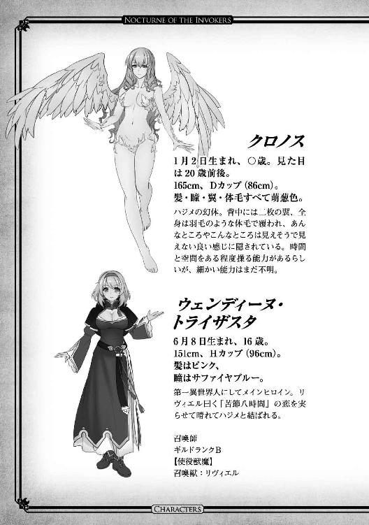

| 獣魔師達のノクターン1 獣魔師達のノクターンシリーズ (ビギニングノベルズ) | |
| 翡翠蛍 | |
| (2016) | |
※本作品の全部あるいは一部を無断で複製・転載・配信・送信したり、ホームページ上に転載することを禁止します。本作品の内容を無断で改変、改ざん等行うことも禁止します。また、有償・無償にかかわらず本作品を第三者に譲渡することはできません。
※本作品は電子書籍配信用に再編集しております。
目次
第一章 約束の木の下から異世界へ
夜道。
〝気をつけよう 暗い夜道と ヤンデレ幼馴染〟
「信じてたのに。初めての夜に他の女とヤるなんて。しかも何で祐実果姉ちゃんなの!?」
おかしい。何だか多大なる勘違いがある。さっきまで生まれて初めて出来た彼女（属性：幼馴染）とアツい初夜を過ごしていたはずだ。というか、もうちょっとで本番、っていうところで〇・〇三mmのアレが無いことに気づいてコンビニに行こうとして。彼女はそんな鈍くさい俺を叱るでもなく優しく送り出してくれて。
コンビニ行く途中で彼女のお姉さんであるところの祐実果さんに会って。
「一ちゃんが可愛い妹とイタしちゃうんならコレあげても良いんだけどな～」と、リラックスしたクマがプリントされた近藤さんをちらつかされて。
いや、別に要らなかったんだけど断ると後が怖いし、受け取ろうとしたらなぜか袋に入った近藤さんを口に咥えられて。
「口で受け取らなかったら無いこと無いこと、麻琴にバラす」とかメンドクサイこと言われたので受け取って。
帰ろうとしたとこで思いの外時間を食っちゃったから公園をショートカットしようとして、ふと一本の銀杏の前で足が止まった。
〝約束の木の下〟なんてベッタクソな名前をつけられているココは、決して告白してはいけない場所である。
曰く「中学から五年間付き合った彼女に『俺についてきてほしい』と言ったら『アナタは一人で頑張って！』と新しい彼氏を紹介された」、曰く「結婚しよう！」「え!? 本気だったの!?」、曰く「妻とは別れてきた」「そこまでされると引くわ～」などなど。
何でも、ココでフラられた女性が男を刺して首吊って死んだ、らしい。んな馬鹿な。
じゃぁ、今俺の背中から生えている刺身包丁は何だ??
なぜ彼女はギャーギャー喚いてる??
◆ ◆ ◆
「知らない天井だ」
「災難だったね～」
「うわ！」
気づけば、知らない少女が目の前にいた。
だがその見た目はさらに見覚えがない。緑柱石の如き髪にスカーレットの瞳、身長は一五〇cmほどでスラリとしているが出るとこは出て引っ込むとこは引っ込んでいる。それはまあまだ良い。
しかしその鎌は何だ。身長の一・五倍以上もある鎌は...。
「せいか～～い♪ 察しが良いね。死神のジルちゃんだよ♪ 短い付き合いだけど仲良くしようね」
「...やっぱりか」
「いきなりだけどさぁ。あそこで死なれるとマズいんだよね」
「いや、そんなもん俺も死にたくねーよ」
「まぁ死ぬのはしょうがないんだけどさぁ」
いや、そこしかたないにしないでお願い。
「あーんなテンプレの心霊スポットで噂通りの死なれ方をすると本当に心霊スポットになっちゃってさぁ。ほんとに霊障が起こってムダに良くないもの引きつけるわ地縛霊は湧きまくるわ、良くないことだらけなんだよね」
「ふむ」
いつの間にかペースに乗せられている俺。
「ま、完全に彼女の思い違いなんだけど、キミはほんとに殺されてるし、彼女はほんとに首吊っちゃってるし」
マジか。
「でね、彼女にはちゃんと他生で罪償って悪霊にならないようにしてもらわないといけないんだけど...」
嫌な予感。
「キミ、手伝ってくれない??」
やっぱり～～～～!!
「悪い話じゃないよ？ キミは別に本来する必要のない生だし今生も割と残ってたイノチ使えるし、いろいろとオマケつけてあげるし、ある程度キミの望む世界構成にしたげるよ？」
むむ？
「たとえば...」
た、たとえば...!?
「ハーレムとかどう？」
「逝きます!! 逝かせてください!!」
◆ ◆ ◆
「じゃぁ、条件はここに書いた四つだけで良いのね？」
①獣や魔物を使役する、召喚獣とか仲魔とかそれっぽい剣と魔法のファンタジー。
②性的にタブーのないハーレム属性。
③内政系は要らない。一冒険者やってみたい。
④彼女とは接触がないように。
「はい。あとはテンプレでお願いします」
「りょうか～～い、あ、でも④は前提条件に抵触するから却下ね」
「え」
「じゃ、いってらっしゃ～い」
「ちょ～～～～～～～～～～～」
◆ ◆ ◆
長い長い闇の渦巻きの中を通り抜けた先は......
水の中だった。
（もーちょい転移先を融通利かせてくれても良いのに!!）
ジルのニヤリ顔が頭によぎり、必死で水面に上がる。
「ぶは────っ！」
ざっぱーんと這い上がるとその先には......。
ふわふわのボブヘア、少し下がるとたゆゆゆゆゆゆんと揺らめく巨大なる二つの山、さらに下がるとボブヘアと同じピンク色の控えめに生えそろったヘア。
「...」
「...」
双方思考停止。
あーここはやはり天国だ、ファンタジーだ。毛の色もピンクだよママン、てかこれ何てし○かちゃん？ などと現実逃避的思考を張り巡らせていると、先に正気に戻った少女が呪文を唱えた。
「リヴィエル、『スプレッド』」
彼女のブレスレットがチカリと光り、龍の幻像が見えたかと思った瞬間、風呂の水が巨人の如き拳の形を取り、体ごと吹っ飛ばされた。
薄れゆく意識の中で思った。
（異世界テンプレな風呂の心配は要らないらしい...）
◆ ◆ ◆
「気がついた？」
「こっち来て早々、水にどつかれるとは思わなかったよ。キッツい一発ありがとう」
「わざわざ人がお風呂に入るのを湯船に潜んで待ち構えてるヘンタイさんにはまだまだ緩かった気もするけど」
「いや、違うんだ」
「言い訳ぐらい聞くわよ？」
「アレは死神が悪い」
「リヴィエル、『タイダル・ウェイｂ』」「わわわわわちょっと待った────!!」
「いきなり大津波級の魔法攻撃とか勘弁してよ！」
「そっちこそ嘘つくんならもうちょっとマシなの選べば??」
「はぁ...、真面目に話すから突拍子もない話でも信用してくれる？」
◆ ◆ ◆
「幼馴染の彼女と良い雰囲気になったけど急に買い物思い出して外に出て、彼女のお姉さんにからかわれてるところを勘違いされて刺し殺された？ 挙げ句に罪滅ぼしのとばっちり食らって違う世界から転生してきた？」
「凄いね！ 一回話しただけで理解してくれるなんてこの手の作品ではレアなキャラなんだよ！ 僕のハーレム第一号はやっぱりキミで決定かな??」
なぜだろう？ 彼女が顳顬を押さえて首を振っているのは？ あ、ひょっとしてアノ日??
「ごめんなさい、アナタが〝憑物〟だったなんて知らなかったから。大方、インプかサキュバス辺りでしょう。重くなる前に治療に行きましょうね。大丈夫、これでもギルド内の信用は厚いほうなの。アタシがついていけば話は通りやすいはずよ。アナタ、根が悪い人ではないみたいだし冒険者としてこのまま放ってはおけないわ」
ん？ 何か話が怪しい方向に...。
「知り合いの〝払い手〟なら料金も安くして貰えるし、思いっきりパチコーンとやってもらいましょう！」
待て待て待て待て!! 憑物って狐憑き的なアレか？ しかもインプとかサキュバスとか明らかにヘンタイ扱いじゃないか！
「待て！ 俺は正常だ!!」
「憑物はみんなそう言うのよ」
イカン！ 悪化した。何かないか？ 何かないか？ こういうときテンプレだと神世遺物レベルの現代アイテムで......。
そのとき、現世から持ってきた二つのアイテムを思い出した。ターボライターとソーラー電波時計。
「すまないがこの世界での一般的な火の点け方を教えてくれ」
「火に特化した獣魔を扱える人以外は火打ち石か火精石を使うのが普通...ってそんなことも忘れてるの？」
イケル！ 文明国の力（？）見せてやる！
カチリという音とともに蒼白い炎を上げたターボライターを見て彼女が驚きの表情を見せる。
「何これ!? 何の魔力も感じられないのに何でこんな高温の炎が詠唱もなしに作れるの？ 魔力が感じられないってことはただの燃料？ なのにさっきお風呂で濡れたはずのこれがどうして簡単に燃えるの??」
思った通り。実はこれ、転移先でたちまち火元がないと困るということで水に濡れてもＯＫなターボライターを持ち込んでいたのだ。あまり大きな物を持っていても嵩張るだけだし、水は何とかなりそうな気がしたので手のひらサイズのこれだけ持ってきたのだが意外なところで役に立った。
「異文明から来たってこと、少しは信用して貰えた??」
「確かにこれはそこいらにあるもんじゃないわ。でも、迷宮遺物レベルなら発掘されなくもない」
「じゃぁ、これは？」
俺は意気揚々と腕時計を見せた。
「これは...今度は弱いながらも光精石のエネルギーを感じるわ。ここに書かれている文字は数字を簡略化した物のようだけど...一体何??」
「これは時計だよ。光精石っていうのは何となく想像がつくけど、これは光のエネルギーを吸収して、光のエネルギーのみで動く永遠に狂わない時計だ。そしてある程度の防水機能がついているからお風呂で濡れても作動し続けてくれたんだ」
今度こそ彼女は目を丸くした。高々少量の光精石でここまでの魔法具は作れない。遺物がどうとかいうレベルではない。この世界で知られている技術体系とは成り立ちが違うことが想像できた。
「まだ全部信じた訳ではないけれど...」
「取り敢えず着の身着のままのその格好ではどうしようもないから近くの村まで一緒に行ってあげる。その旅中に詳しい話を聞くことにしましょう」
「良かった!! 助かるよ。実際この世界のこととか何も分からないから俺が正気で有ろうと無かろうとこのままではどうしようもなかったんだ。今更だけど俺の名前は高梨一、この世界では名前が先？ 名字が先？」
「名前が先よ。アタシの名前はウェンディーヌ・トライザスタ、召喚師よ。ついでにアタシの召喚獣も紹介するわね。リヴィエル！ 出てきて!!」
「ふいぃ～～、やっと話に混ざれるわ。退屈すぎて滑稽で無理矢理飛び出してやろうかと思っちゃった」
ウェンディーヌの呼びかけに応じて瑠璃色の肌を持つ龍が姿を現す。召喚された瞬間は三〇ｍにも及ぼうかという身の丈であったが、するすると縮んだかと思うと一七〇cm程のスレンダー美女に変化した。ハジメには詳しいことは分からないが、その体から迸るオーラのような物は紛れもなく先ほどの龍と同じ威圧感を放っており、また瞳と髪の毛は龍のときと同じ瑠璃色であった。
「初めまして、私はリヴィエル。人間たちには水龍王、なんて呼ばれてるわ。さっきはちょこっと殴っちゃってごめんなさいね。基本的に契約を結んだ相手の言うことには従わなきゃならないの」
「ちょこっと...ね。まぁあれは事故だから良いとするにして、リヴィエルさんは俺のことをヘンタイとか憑物とかそういう扱いしないの？」
「リヴィエルで良いわよ。てか、そんな扱いする訳ないじゃない。私を誰だと思ってんの。これでもこの世の構成に直接関わる召喚獣よ。この世界にあれだけ大きな変化起こしてくれてれば嫌でも分かるわよ」
「え？ じゃぁ、リヴィエルさん、じゃなくてリヴィエルは最初っから俺の存在について大体のことが分かってたの？」
「そういうこと」
ニヤリ、と底意地の悪い顔を見せてリヴィエルが笑う。
「じゃ、じゃぁ助けてくれても良かったんじゃ...」
「だって...」
「だって？」
「ウェンディーヌもハジメも超おかしかったんだもん！」
◆ ◆ ◆
出会いは風呂とともに...。というロマンチシズムに欠ける初対面だったために警戒心は解かれていないが、リヴィエルが「ハジメはこの世界の外の存在」ということをキチンと説明してくれたおかげで一先ずは頭の痛い子扱いから逃れることができた。
「それで俺はさっきも言った通り、この世界にポイッと投げ入れられたに近いから、この世界の常識が殆どないんだ。基本的なことを幾つか聞かせて貰えるかな？」
「アタシも学者って訳じゃないからそれほど詳しい訳じゃないけど、一般的なことで良いなら良いわよ」
「まず、暦について。一年は何日？ 一日は何時間？ 一時間は何分？ 一分は何秒？ そもそもこういう単位ある？」
「あるわよ。三百六十五日、二十四時間、六十分、六十秒」
地球と同じらしい。重力がほぼ同じに感じるし、星の大きさとか自転周期とかは何となく同じ気がしていたのだが。
「お金の単位は？」
「銅貨一枚が一ミュール、銀貨一枚が一〇〇ミュール、金貨一枚が一万ミュール、光貨一枚が一〇〇万ミュール。百倍ずつ上がっていく感じね」
「普通に一食食べるのとか、宿に泊まるのとか、四～五人で住むぐらいの家の価値とかは？」
「場所にもよるけど、一食は外食すると五〇〇ミュールから一〇〇〇ミュール、宿は五〇〇〇～一万ミュール、家は一億～三億ミュールってとこかしら？」
家高ぇな。それ以外は大体、日本と同じぐらいか？
「家高いね」
「決まったところに住むのなら借家が安くて良いわよ。一年契約すると二〇万～三〇万ミュールぐらいかしら？」
「光貨でも一〇〇万ミュールだと、それより上の買い物の場合はどうするの？ 家のときとか大変じゃない？」
「獣魔師ならブレスレットにチャージしてあるミュールで決済するのが一般的ね。一般人もチャージ水晶使うことが多いわ。これは高額な場合もそうだし、そうでなくても現金を大量に持ち歩かなくて良いのは便利ね。ブレスレットチャージが使えないど田舎にでも行かない限り使えるから、これがあれば金貨二～三枚持ってれば大抵何とかなるわ」
そう言って彼女は鈍い光を放つブレスレットを見せた。左腕に巻きついているそれは一見銀色だが、よく見ると虹色の輝きを放ち、表面には神聖文字と思しき複雑な紋様が刻まれている。
「あー、それ『スプレッド』のときにチカってしてたよね。召喚の魔法具かと思ったらそんな機能もあるんだ」
「...よくあの一瞬でそこまで見てたわね。これはアタシたち獣魔師にとって命と同じぐらい大事な存在なのよ。他にも色んな機能があるんだから」
◆ ◆ ◆
「次はこの世界の地形とか国とかについて教えてくれ。大きな国とか、どこの国とどこの国が仲が良いとか悪いとか、ぶっちゃけ戦争してるとか」
「この世界は北のアルケランス大陸と南のプロイセミア大陸に分かれているわ。それぞれが赤道を挟んで二等辺三角形のような形で東西に延びて、星の裏側で繋がっている。北西には乾燥して冷涼で作物に乏しいけど鉱物資源が豊富な聖アルケミア帝国」
アタシたちが今居る〝サイドン平野〟もここね、と彼女は呟く。
「その東が逆に作物は豊富で鉱物が乏しいランスロット王国、南西には四大国で最大の領土を持つけど穏やかな国民性のプロット公国、南東にあるライスセミア幻神国は国は小さいけど兵の練度が高く、好戦的ね。その他にも島や運河や大陸貿易の要所に小国があってそれぞれの勢力も、四大国には敵わないながらまとまれば無視できないレベルね」
「で、大きな戦争はないのか？」
「ないわね」
「へぇ？」
「もちろん小競り合いはしょっちゅうだけど、国の覇権や領土を争う程の戦争となれば必ずアタシたち獣魔師の力が必要になるけど、アタシたちはギルドに属しているだけでどこの国にも属していないから」
「さっきから言ってる獣魔師ってのは召喚師とは何が違うんだ？」
「獣魔師っていうのは読んで字の通り、獣や魔物を扱う者の総称で...」
◆ ◆ ◆
ウェンディーヌによる講義がいよいよ始まろうかというときだった。
平野に長く伸びた草が彼らの背後でガサリと揺れた。
「「!!」」
「ＷＲＯＯＯＯＯＯＯＯＯＯＯＯＮＮＮＮＮＮＮＮＮＮＮＮＮ！！！！」
振り返った彼らが聞いたのは体長四ｍにも及ぼうかという漆黒の馬のいななき！ その額には金属光沢を放つ七〇cmもの長い角。
「ブラックホーンホース!? 何でこんなところに番でっ!?」
先ほどまでのノンビリとした講義の雰囲気など一瞬で吹っ飛んでしまった。
「リヴィエル！ タイダル・ウェイ...」「待て！！！」
「───!? 何を言ってるの??」
「繁殖期に縄張りに入った俺たちが悪いんだ。今、謝ってるところだから手を出すな！」
「───！ アナタ、交渉ができるの??」
「静かにしてくれ、俺もこんなの初めてなんだ！ 気が散る!!」
◆ ◆ ◆
気づけばハジメの精神は肉体を離れ、ブラックホーンホースの精神と直接会話をしていた。
「サイキンノ ニンゲンハ ドイツモコイツモ レイギシラズダ。オレタチハ オマエラナド クライハシナイ。タダシ ミセシメニコロシテヤル。ハウンドウルフノ エサニデモ ナレバイイ」
「すまなかった。俺はこの世界に来たばかりでルールがまだ分からない！ 村に戻ったらちゃんと知らせるから、ここは見逃してくれないか？」
「...タシカニ オマエハ コノセカイノ コウセイブンシデハ ナイヨウダナ。コンカイダケ ミノガシテヤッテモイイ。ダガ ツレノ オンナハ ダメダ」
「頼む！ 俺は君たちのような美しい存在と敵対したくない!!」
（...何を話しているの？）
傍で見ているウェンディーヌには一体彼がどんな交渉をしているのかはっきりと聞こえない。同じ獣魔師なので念波で雰囲気は伝わるのだが、ハジメの資質は恐らく操獣師か契約師、召喚師の彼女では詳しいことは分からないのだ。
...。
......。
数秒、数十秒、時間の感覚がないまま時が流れ、無限にも思える程の後、突然ハジメがブラックホーンホースに向かって歩きだした。
「!!」
ウェンディーヌには止められなかった。あまりに真剣で、そして慈愛に満ちたハジメの瞳を見てしまったが故に。
ハジメが近づくと、何とブラックホーンホースが跪き、そしてハジメは彼らの角に静かに口づけた。血気に逸っていたブラックホーンホースの瞳が見る間に落ち着きを取り戻していく。
「ウェンディーヌ」
振り返った彼の次の言葉は規格外などという範疇ではなかった。
「彼らと友達になれたよ」
◆ ◆ ◆
「アナタ、ほんとに一体何者なの??」
村には近づいてきていたのだが、思わぬ遭遇により時間を取ってしまったために彼女らは今、野営をしている。
テントの中では早々とハジメが眠りについていて、何と夜番はブラックホーンホースが買って出てくれた。
先ほどのブラックホーンホースとのやり取りを見る限り、ハジメが操獣師か契約師のいずれかの資質があることは間違いない。しかし、彼女が知るどちらのやり方にも属さない。いや、どちらにも似ている、と言うべきか。
ブレスレットの能力に頼らずそれを成し遂げてしまったことも有り得ない。彼女が知るブレスレットとは、魔法生物としての資質を持たない人間という種族が、魔法金属を媒介して魔法生物たちと交渉をするアイテム、のはずなのだ。
（有り得ない...）
今日何度目か分からない台詞を独りごちた。
◆ ◆ ◆
（リヴィエルに聞いてみるかな...）
「リヴィエル、ちょっと話し相手になってちょうだい」
「はいは～い、まいますたー♪ そろそろ来るころだと思ってたわよ、るんるん♪」
「何よ、その〝るんるん♪〟って。わざわざ口に出さなくても良いでしょうに。...それといつも言ってるけどアタシ貴女のマスターになったつもりはないわよ」
「そぉんな連れないこと言いっこなしよ？ まいますたー♪」
「貴女がその言い方をするときって大抵碌なこと考えてないのよね...」
「まぁまぁ。それで？ まいますたーのお悩みごとは、あの規格外の異世界人さんのことで良いのかしら？」
「そうよ。それなのよ。彼が獣魔師としていずれかの資質を持ってることはブラックホーンホースと交渉して従えたことから明らかなはずなんだけど、獣を従えるやり方が操獣師とも契約師とも違う気がするのよ。操獣師だとしたらあまりにもブラックホーンホースは彼に比べて強すぎるし、契約師だとしたら今の彼に契約で差し出す交換条件が想像がつかない。しかも、そもそも魔力源とも言えるブレスレットなしにＣの上級に位置する魔物を従えて、あまつさえ興奮状態にあったブラックホーンホースと〝友達〟になる。もう無茶苦茶すぎて獣魔師として自信なくしそうよ」
「そうねぇ。一つ可能性は想像がつくんだけど...百聞は一見に如かず。貴女が彼の資質、確かめてみたら？」
「確かめるって言っても村のギルドに行って資質試験を受けようと思ったらどう頑張ってもあと二～三日はかかるわよ？ その間に今日みたいなことがまたあったら...」
にや～り、とチェシャ猫の如き笑みを浮かべてリヴィエルが呟く。
「あるじゃない、資質を確認するとっておきの方法が」
「───!! ダメ！ ゼッタイ!! ムリムリムリムリムリムリムリムリ！！！」
「え～、どぉしてぇ～～??」
「貴女分かって言ってんでしょ！ ア、アタシそういうことしたことないのよ!?」
「な～にカマトトぶってんのよ。何も貞操明け渡せって言ってんじゃないのよ？ ただ心を通わせて口づけを...」
「わーわーわーわーわ─────!!」
急いでリヴィエルの口をふさいだウェンディーヌであったが、興奮しすぎていたらしい。
「どうかしたの？」
騒ぎを聞きつけたハジメを起こしてしまった。
◆ ◆ ◆
「へぇ...俺にはその獣魔師？ の資質があるらしいと。それで獣魔師にもいろいろあるけど俺がどれの資質があるか調べておいたほうが良い、ってこと??」
「そうなの。見たところアナタは操獣師か契約師の可能性が高いんじゃないかと思うんだけど、いずれにせよブレスレットなしで獣魔を使役している状態というのはあまり好ましくないわ。ブレスレットは獣魔との架け橋の役目をしてくれるんだけど、それなしで使役してると気づいたときにはハジメの魔力はすっからかん。中の上ランクの魔物であるブラックホーンホースの〝憑物〟とか、ここいらみたいな田舎の〝払い手〟では手に負えないから良くて廃人、悪ければアナタごと成仏ね」
傍らで聞いていたウェンディーヌは、うぐ、と嗚咽を漏らした。リヴィエルが話した内容に一片の嘘も無い。否、嘘は無い。
が！ ちらちらこっちを覗き見しながらチェシャスマイルをこぼす辺り、アレをさせる気満々である。
「それで...どんな方法で調べて貰えるの？ 危険性とかはない??」
「危険性はないわよ。ただ単に心を込めて相手のことを思って口づけを交わせば良いだけなんだから」
「...はい？」
◆ ◆ ◆
女三人集まれば姦しい、とはよく言ったものだがアレは違うな。二人でも十分だ。
「そもそもそれならリヴィエルがやれば良いじゃない！ 貴女のほうが上位精神生命体なんだし、より詳しいことが分かるでしょう？」
「嫌よ」
「なっ!?」
「私たちが〝契約〟以外で軽々しく人間とそういうことをしないのは知ってるでしょう？ 大丈夫よ。貴女を通して必要なことは調べてあげるから」
「むぐぐぐぐ」
冒険者としては一人前で、ソロプレイもそつなくこなせるようになってきているウェンディーヌであるが、この辺りは海千山千のリヴィエルに敵うべくもない。
「良いのかしらぁ～？ Ｂランクとしてようやくギルドの信頼を集め始めたウェンディーヌ・トライザスタ様がみすみす目の前でブラックホーンホースの〝憑物〟が出来上がるのを指咥えて見てたなんてことになっても」
「あががががが」
「良いのよ？ そんなことになったら後味悪そうだし、人の好さそうな彼をまいますたー♪ 自ら葬り去ってサイドン平野の土に返してやれば良いんだから」
「ふんがぁ～～～～～！！！！！！！」
「あ、キレた」
「良いわよ！ 分かったわよ!! やってやるわよ！！！」
◆ ◆ ◆
「ごめんね、出会いからこっち何か俺のせいでいろいろ巻き込んじゃって...」
「良いわよ。ソロプレイしてれば予測不能の自体に陥ることはよくあるって言うし」
「それより...」
「？」
「ア、アタシこういう性格だから意外に思われるんだけど...」
「...うん？」
「初めてなの」
「！」
「だ・か・ら！ シタことないの!!」
狭いテントの中で向かい合って改めてウェンディーヌを見た。ピンクのふわふわのボブヘアにやや丸みを帯びた顔立ち。口調が強気なので感じさせなかったが、よく見れば美人と言うよりも柔らかな可愛らしさを感じさせる。鮮やかなサファイヤブルーの瞳は水を扱う彼女の穏やかさと激しさを象徴しているかのようだった。
そして唇...。ぽってりと膨らみ、うっすらグロスを引いた、そこだけ顔のパーツの中で一際大人びた印象を与える。
（これからあそこに口づけを...）
ごくり、と思わず唾を飲み込んでウェンディーヌの肩を抱いたハジメは少しずつ自分語りを始めた。
「少しは話したと思うけど...」
「？」
「十七歳の誕生日、俺は元の世界で幼馴染と初めての夜を迎えるはずだったんだ」
「何それウザい。この状況でそういう話する？ 普通」
「うん、場違いなのは分かってる。でもウェンディーヌには全部聞いてほしいんだ」
「彼女の部屋で小さなパーティをして、お酒を飲んで、静かにキスをして。いよいよこれからってときに、ある物が無いことに気づいた。こっちではどうか分からないけど向こうの世界では十七歳というのはまだ学校に通っていて親の下にいる年齢だった。結婚も簡単にはできないしやりたいこともあった。だから子供が出来るのを防ぐアイテムが必要だったんだけど、緊張していた俺はそれを持ってきていなかった」
ハジメは言葉を続ける。
「そして近所に買いに行くところで彼女の姉─彼女がライバル心を燃やす人─に出会った。そこでいろいろと勘違いをさせるような行動を取ったんだけど、まさか彼女が見てるなんて思ってもいなかったから気にも留めず彼女の待つ部屋に帰ろうとして...」
知らず、腹に手をやり、言葉を紡いだ。
「帰宅途中、思いっきり勘違いした彼女に刺された。俺の初めての思い出はそんな最悪なところで止まってるんだ」
気づけば自然と涙が溢れていた。
「死んだのが辛いんじゃない。こうして別の世界に来れたしウェンディーヌやリヴィエルさんに会えたこの事実はもう決して変えたくない。ただ、俺は前世の最後で完全に自信を喪失している。長年連れ添った幼馴染に信用して貰えなかったというところでね...。俺に悪いところがなかったとはもちろん言わない。迂闊に過ぎたんだと思う。こっちの世界でもう一度自分という人生をやり直したい。『好きだ』なんてまだ言えないけど、俺を信用してくれないか？」
◆ ◆ ◆
涙を流す彼と向き合い、目を閉じた。アタシから行っても良かった、それぐらいには信用していたけど。「彼を受け入れる」という姿勢を見せてあげたかった。
零れるような、掠れるような声で彼はアリガトウを言い、唇が近づき、静かに触れた。
◆ ◆ ◆
ウェンディーヌが目を覚ますと...。
「...知らない天井ね」
「ウェンディーヌ??」
ハジメもこの妙な場所に来ているようだ。
「ハジメ？」
お互いを見つめ合い...。
「キャッ！」「わわっ！」
アタシたちはなぜか服を着てなかった。
「ごめん！ そっち向いてて！ 今軽く羽織る物、出すから！」
「...ここは？」
「何でか知らんけど俺の部屋なんだよね。しかも元の世界の」
軽く部屋着を羽織った彼がチュニカのような部屋着らしき物（ワイシャツ）を投げてくる。
勝手にベッドに潜っていたアタシは布団の中でもぞもぞとそれを羽織る。彼の物らしいそれは小柄なアタシには短いローブのような長さになったが、彼がアタシを見る目が何だがイヤラシい。まぁ不愉快じゃないから良しにする。しかしこれでは胸がまったく収まらない...。
「どうやら二人はハジメの〝幻体化の儀式〟に捕らわれたようね」
「「わわっ！」」
「リヴィエル！ どうしてここに??」
「資質試験を行うときにウェンディーヌと接続して監視していたからね。行き先を辿ったらここに着いたという訳」
「そ、それよりも幻体化?? ハジメは操獣師か契約師だったんじゃ...」
「何？ そんなことにも気づいてなかったの？ そんなにキスに夢中になってた？」
「ち、違う！ あぁ!! ハジメそんな悲しい顔しないで!! キスはとっても良かったけど...ってそうじゃなくって！ ハジメの資質は...??」
「はぁ...、落ち着いて自分の記憶を辿れば分かりそうなもんだけど。ハジメは四つの資質を全部持ってるわ」
「...ほえ？」
◆ ◆ ◆
「アナタ、一体何者なの??」
もう何度目か分からない台詞だ。
この世界には獣魔師と呼ばれる獣や魔物を扱う人間たちが居る。それらは〝明確に〟四種類に分けられる。
◆ ◆ ◆
①召喚師
神世界に存在する召喚獣の力を借りる。召喚獣には基本的な物理攻撃や魔法攻撃は通らない。唯一他の獣魔からの攻撃のみにてダメージを受ける。一人一体しか契約できない。召喚師自身よりも遥かに強力な召喚獣と契約できるが、召喚獣は強力すぎるが故に物質界
では相応に制限された力しか発揮できない。それを僅かな時間フルレンジで発揮させるのが召喚術である。
②幻体師
精神世界から己の想像・創造した幻体を出現させ戦わせる。幻体には基本的な物理攻撃や魔法攻撃は通らず、個体の能力は召喚獣にも及ぶ。唯一他の獣魔からの攻撃のみにてダメージを受ける。一人一体しか保有できない代わりに常時出現させ連れ歩くことも可能。但し、幻体師自身とダメージを共有する。
③操獣師
物質界で実体化して存在している獣魔と心を通わせて操獣することができる。使役した操獣魔は通常の物理攻撃や魔法攻撃でダメージを受ける。何体でも使役可能である代わりに基本的に自分より力の劣る獣魔しか使役することができない。元々実体化している獣魔を操獣するので、一度使役関係を結べば特別にエネルギーを与える必要はないが、あまりに非人道的な使役は見限られることもある。また、ブレスレットに収納することもできないというデメリットもある。
④契約師
物質界で実体化している獣魔と心を通わせて契約関係を結ぶ。使役した契約獣は通常の物理攻撃や魔法攻撃でダメージを受ける。何体でも契約可能であり自分より力で勝る獣魔を従えることも可能だが、優秀な獣魔は押し並べて契約時の要求も高度になりがちであるため、バランス感覚が難しい。またブレスレットに収納可能でもあるが、ブレスレット内での維持には大量の魔精石を必要とする。
◆ ◆ ◆
「ここまでは良い？」
「つまりどれも一長一短って訳だね」
「そういうこと、扱う人間が強力になればそれに従う獣魔も練度が上がるし、獣魔師として共に成長していける。操獣師は強力な獣魔を従えられないから弱い、なんてことはなく要は使い手の問題なの」
どうでも良いが彼女のコスチュームが気になってしかたがない。
裸ワイシャツロリ巨乳...。あ、赤い鼻水が。
「...真面目に聞いてる??」
「あ、ハイ！ もちろんであります!!」
「...まあ良いわ。それでハジメがブラックホーンホースを手懐けたときだけど、恐らく『操獣師と契約師の能力が同時発動している』」
「へぇ」
「へぇ、って...。とにかく最後まで説明を続けるわよ。特別な契約関係を結ばず、獣魔と心を通わせるというのは操獣師の力。しかしそれを行うにはブラックホーンホースは強すぎるのよ。少なくとも今のハジメにとっては。契約師の能力である『自分より上位の獣魔との契約交渉』がなければ使役することなんてできっこないはずなの。アナタ、彼らとどんな約束をしたの??」
「えっと、繁殖期に近づかない、それを周囲の人間にもちゃんと教える。生まれた仔馬は決して意識的に人の手にかけさせない、そんで友達になって一緒に旅がしたい」
「有り得ないぐらいに軽すぎるわね。本来ならそこのメス─つまりはアタシだけど─を生け贄に置いていけ、ぐらいは言いかねない」
うん、めっちゃ言ってました。
「これがどれだけ異常なことか分かる？ ハジメには四つの資質が同居してるだけではなく、それを同時に使用できる。つまり、上位の獣魔を操獣師と同じようにお手軽に扱え、召喚獣を─しかも恐らく複数─ブレスレットに収納し、幻体を身に纏う、そんな破天荒な戦闘が可能なのよ??」
チートキタ────!! 等と調子こいてたら、まぁそんなことしたら魔力不足でミイラになるだろうけど、と念を押された。
◆ ◆ ◆
「話、終わったぁ～??」
勝手にポテチとビールを開けてパリポリやってたリヴィエルが声をかけてくる。
「そろそろ夜も更けたし、〝幻体化の儀式〟終わらせて外に出たほうが良いわよ」
「あ、そうだ。ここからってどうやって出るの？」
「何か知らんけど勝手に暴走して儀式が始まっちゃったからねぇ。終わるまで出れないと思うよ。ここ精神世界だからハジメが本気で〝出たい〟って願えば体あっちにある訳だし戻れるはずだけど、何だかこっちに未練があるでしょ？」
お得意のチェシャスマイルで見透かしたように笑った後、「じゃ、後でね～」と勝手に一人帰っていく。
ポテチとビール返せ!!
そう。俺はこっちに未練がある。〝儀式〟ということは幻体を手に入れるチャンスなのだ。それをみすみす逃してなるものか！ 鉄は熱いうちに打て!!
◆ ◆ ◆
「幻体師っていうのは四つの中で一番、最初の難易度が高いとされてるの」
理由は言われなくてもよく分かる。他の三つはやり方さえ分かれば身の丈に合った獣魔を使役すれば良いのだから。
だが。幻体師が操るものは『もう一人の自分』。そして『何を望むのか？』が明確である必要がある。
答えは自分の中にしかない。
「ある人は大事な人を守る堅いゴーレム、ある人にとってそれは何よりも早く駆ける馬、或いは...」
「すとっぷ」
「え？」
「ウェンディーヌの気持ちはとっても嬉しい。でも、先入観をつけたくないんだ。ここが儀式の場で、ここに二人で来たってことが大事なんだと思う。後のことは何となく分かる。だからこそリヴィエルさんも敢えて何も言わずに帰っていったんだと思う」
「ウェンディーヌ」
「は、はい！」
「背中、預けて良いかな？」
「え？」
「ここは元の俺の部屋。そしてここで俺は新たな力を得て新しい世界へ旅立つ。その力を得るまでの間、何が起こるか分からない」
だから。
背中を守っていてほしい。
前代未聞の資質を持っていて、運命に翻弄されながらも前を向いて立っている。震える彼の腰に腕を回し、背中に額を押しつけた。
◆ ◆ ◆
目を瞑ると見知った自室が瞬き始めた。
光が語りかけてくる。
「アナタは誰？」「おぬしは誰じゃ？」「オマエハ誰ダ？」
さまざまな声が響く。でも俺には何となく分かっていた。
俺は俺。そして君たちはみんな僕。
悩んで、傲慢で、優しくて、みんな俺。みんな僕。
「アナタにとって力とは？」
大切な人を悲しませないこと。
「それはとっても傲慢だよ？」
...傲慢は駄目なのかな？
「悩んでいるの？」
いや、悩んではいない。もう一度誰かを悲しませるなら傲慢で良い。
「欲張りなんだね」
そう。僕は欲張り。でも欲張りだから何かを求められる。
語りかけるように明滅していた世界が暗転を始めた。
（祐実果姉さんなんかに取られたくない！）
...ヤメロ。
（麻琴も見てないし多少の役得ぐらい...）
ヤメロ！
（チッ、初めてのときぐらい大目に見て生でヤラしてくれりゃ良いのに）
「ヤメロ！！！」
ふわり。
「??」
（大丈夫だよ。背中は預かってるから）
「──!!」
そうか。
これは自分のトラウマ。
超えるべき壁にしてほする力。
...もう怖くない。
「頑張ったね」
「キミに相応しい力はこれだ。使いこなすかどうかは君次第」
声が、光が、集まってくる。やがて光は人形を取り始める。
その背中には萌葱色の翼。気づけば瞳も髪の毛も同じ色だ。
一七〇cm弱程度の身長で、体に生えた同色の体毛が局部を隠している。
（...ってまた女性!?）
「こんにちは、マスター。私に名前をください」
「キミのできることを教えてくれ」
「時間と空間をある程度操ることができます」
「分かった。君の名前は...」
◆ ◆ ◆
「クロノスって男の人の名前じゃないの？」
「良いんだよ。細かいこと言いっこなし！ 彼女も喜んでたでしょ？」
「...ねぇ」
「ん？」
「ハジメ、頑張ったね。アタシ背中で泣いちゃったよ」
「背中、預けて良かったんだろ？」
「──!! 聞こえてたの??」
「うん、おかげで乗り越えられた」
「えへへ。...ねぇねぇ」
「ん、今度は何？」
「ここでトラウマ一つ乗り越えちゃわない？」
ハジメの目的であった幻体獲得は済んだのになぜ精神世界から出られないのか？ 彼女にもこの世界でやりたいことがあったのだ。
第二章 トラウマ乗り越え獣魔師へ
改めて見ると彼女の扇情的なコスチュームに息を呑む。いや、着せたの俺なんだけど。
「この格好、絶対に普通の部屋着なんかじゃないでしょ」
「ナヌ!!」
「...やっぱり。な～んか見る目がヤラしいと思ったんだ」
「俺の世界では『萌えコス』という由緒正しき閨での衣装の一つだ」
「そんなもん着せて、まさか最初っからそのつもりだった??」
「うぐぐぐぐ。そ、そんな野暮なこと言う口はふさいじゃえ！」
「ん、今度こそちゃんとしてね」
儀式の途中で心を通わせていたのでもう気持ちは分かっているつもりだった。それでも自らの腕に身を預け、心を開放している表情にはかなりくるものがあった。
「ウェンディーヌ、愛してるよ」
「ありがと。アナタの背中はアタシが守るから」
◆ ◆ ◆
ちゅ。
最初はついばむように。一旦顔を離し、表情を確認する。
顔を伏せピンク色の髪に表情を隠していたが、隙間から覗く真っ赤に熟れたリンゴのようなほっぺ。
ぷに。
焼きマシュマロのようなふわふわですべすべのほっぺ。
続いて髪に指を通し、掻き上げるように指で梳く。
「アゥン、それ駄目。髪の毛触られると何もできなくなっちゃう...」
さわさわさわさわ。
「ア、アァ、ァ、こ、こら！ 調子に乗るな!! あぅ、きゃうん！」
力の抜けた体を抱いてベッドに移動する。その間も髪への愛撫を忘れない。
「ふにゃ～～、いじわる～～～」
「じゃぁやめる？」
「うぅぅ、やめない」
顔と髪しか責めてなかったが俺自身、未体験である。
それほど余裕がある訳ではない。
自らのシャツを脱ぎ、彼女のシャツを脱がせにかかる。
「初めて会ったときから思ってたけど、凄く綺麗なおっぱいだね」
「どうせ小さな体に不釣り合いなデカ乳だとか思ってんでしょ」
「とんでもない！ 垂れてもいない、こうやって上を向いても形が崩れない、それでいてふわっふわ。こんなの初めてだよ！ ...ってそもそも初めてだけど」
緊張した笑顔が少しほころんだ。
「アタシ、ハジメの初めてになれるんだね」
「俺も、ね」
ウェンディーヌを横たえると俺は思わず彼女の双丘に顔を埋める。
「きゃっ！」
九〇cmはあろうかという膨らみは頂が既にツンと尖っており、期待にふるふると震えている。
期待を裏切らず舌で転がし、乳房全体を大きく揉みしだく。
「痛っ！ もうちょっとゆっくり。あ、そう、それぐらい、あ、あう、んう」
アチコチ反応を窺いながら責め立てていたが、脇とおっぱいを同時に責めたとき、ウェンディーヌが跳ねた。
「きゃふん！ あ あぅあ いやいやそれダメ！ ヤバい！ ストップストップ！」
「くぅぅ！ はひゅ くひゅぅ くはぁ あうあうあうあうあうあういやいや゛あ゛あ゛あ゛あ゛あ゛ア゛ア゛ア゛ア゛ア゛ア゛ア
゛ア゛ア゛ァ゛ァ！！！！！」
絶叫とともにビクンと仰け反ったかと思うと、はぁはぁと息をつきながら、くて、と脱力した。
「ひょっとして...」
「おっぱいだけで逝っちゃったよぅ」
◆ ◆ ◆
一度逝って落ち着いた彼女にズボンを脱がしてもらい、そのままシックスナインの形で舐め合う。
お互い初めてなので拙く、もどかしさを感じるような技術であったが、そんな些細なことは気にならない。
「ちゅ ちゅ ぺろてろ ちゅぶ ぴちゃ...」
胸への集中砲火の結果か、てらてらと汁を垂らしていた膣に舌を這わせ、愛液を塗りたくったクリトリスをコリコリと撫で回す。
「うきゅ！ うむむむ、ぺろ ぢゅる ぢゃぷ ちゅ れろれろ...」
彼女も負けじと裏筋に舌を這わせ、玉袋を咥え、カリを吸い、俺の反応を窺いながらアチコチ責め立ててくる。
「ねぇ、きもちいい？」
「うん、でもそろそろ...」
「うん、しよっか♪」
枕元に手を伸ばすと、あの日使うつもりで準備していたそれはやはりそこにあった。
「へぇ～こんなの使うんだ。でも精神世界な訳だしニンシンの心配はしなくて良いんだよ？」
「あの日のトラウマ、取り除いてくれるんだろ？ 俺はもう、ここに戻ってこないつもりだから」
生まれて初めてコンドームをつけた。
そしてもう生涯使うことはないだろう。
「あ、もうチョット下、ん、そこ。そうそのまま来て。あ、あう！」
...アレ？
「ん？ ああ。精神世界だから処女膜はないみたいだね。痛みもまったくなくって何か逆に変な感じ」
今日、出会ったばかりの女の子。
体感時間的には昨日まではまったく別の女の子に恋をしてて、その子と一生添い遂げる予定だったはず。どこかで狂った歯車。
でも、そんなの関係ない。この世界でやることがあり、その歯車に多分ウェンディーヌも組み込まれている。
お気楽にハーレムなんて言っちゃったけど、俺は愛し合った女性全員を自分の力で守り、守られ、愛し抜く。愛おしさが加速する...。
「あん！ あう！ くはっ！ はひゅぅぅっ！ 凄い！ きもちいい！ アソコきもちいい！ 燃えそう！ ハジメのが熱いよぅ!!」
「アソコってなぁに？」
いじわるな質問をしてみる。
「───!! お、おまんぅぅ、うぅ、恥ずかしいよ」
「へぇ？ ちゃんと言わないんだ？」
するり、と、彼女のオクを小突いていたペニスを抜くフリをしてちょんちょんと焦らしてやる。
「お、おま◯こ！ おま◯こ！ おま◯こがきもちいいのぅ！ ハジメのオチンチンでアタシの子宮が突かれてキモチイイのぅ！ もっと、もっと突いてぇぇぇぇ!!」
「ん、よくできました♪」
深く、浅く、時に激しく、時に緩やかに、リズムを変えながら責め立てる。
空間内のヴォルテージが最高潮に達したとき、彼女の嬌声がオクターブ上昇した。
「きゃう！ きゅう！ はう！ ダメ！ ダメ！ ダメダメダメダメ！ だめぇ!! 逝く！ 逝っちゃう!! ねぇ、お願い、ハジメのが、ハジメのが欲しいよお!!」
「うん、逝くよ、俺も出すよ、ウェンディーヌのが気持ち良くってもう我慢できない!!」
「「───！！！！！！！」」
◆ ◆ ◆
気づけばテントの中にいた。当然、衣類は元のままだ。ウェンディーヌは静かに寝息を立てている。
安らかな寝顔を見ていると思わず悪戯心が湧いてくる。
「お帰り、お猿さんたち」
「ぶほっ!!」
「何でリヴィエルさんがここにいるんです!? 召喚されてないでしょう??」
「貴方たちの足跡辿ってきたのよ。いや～、やっぱ人間は猿だねぇ。ハジメは意外とＳっぽいしウェンディーヌもあんなに乱れまくっちゃって。可愛いったらありゃしないわ」
「...今後、僕たちのプライベートってもんは」
「それはございませんわ、マイマスター」
「ぶほほっ!!」
「クロノス!?」
「自我が目覚めて数分の言わば赤ん坊のような私めにあんな激しい性教育をなさるなんて、今後マスターがどのような要望をなされるか不安で楽しみで今からワクテカしてしまいます」
「楽しみなのか!? 不安なのか!? せめてどっちかにしてくれ!! ってかクロノスに何かさせるとかそんなのありなのか??」
「幻体に伽をさせる幻体師は意外と多いわよ。究極のオナニー、みたいな感じらしいわ」
「あ─────!! もう知らん!! 今日は寝る!!」
「はい、お休みなさいませ。夜番はお任せください」
「お休み～、良い夢見ろよ────」
◆ ◆ ◆
「キノウハ オタノシミデシタネ」
...なぜお前たちまで知っている。
爽やかな朝日のおかげで日本にいたときには考えられないぐらいの早起きをしたというのに、いきなりブラックホーンホースに出端を挫かれた。
◆ ◆ ◆
「あ、ハジメ君」
「う、ウェンディーヌさん」
「お、おはよう...」
「あ、うん、おはよう...」
～ｓｉｄｅ ハジメ～
（マスター、テンプレ厨みたいな初々しい反応やめてください。見てるこっちが恥ずかしいです）
（うおっ！ クロノスか。いつの間にか戻ってたんだな。しかし、テンプレだの厨だの何かこっちに似つかわしくないこと言うね）
（私はマスターを素体としていますので基本的な記憶は共有していますよ）
～ｓｉｄｅ ウェンディーヌ～
（や～ん、まいますたーったら可愛ぃ♪ うふふふふ♪ ハジメ君？ ウェンディーヌさん？ 初等学院の生徒じゃあるまいし）
（呼んでないのに思考に入ってこないでよ！ プライベートも何もありゃしない！）
（あ、その話は既に昨日ハジメとじっくりねっとり話し合ったから。まぁ思いが通じて良かったわね～、苦節八時間の恋が実って、温かく見守った甲斐があったわ）
（いちいち悪意塗り込めた激励は要らん！）
◆ ◆ ◆
「さて、今日こそは近くの村まで行って獣魔師ギルドに登録するわよ！」
「獣魔師ギルド？ 確か、冒険者ギルドって言ってなかったか？」
「冒険者ギルドというのは獣魔師ギルドなどを統括した上位組織ね。獣魔師の資質を持たないけど狩りの技術に優れた人もいれば、剣で身を立てる人もいるわ。それぞれに狩人ギルドとか剣士ギルドなどがあって、これらの統括をしてるのが冒険者ギルド。どこでも基本的には似たようなことをやって貰えるから単純に冒険者を目指すだけなら気に入ったところに所属すれば良いんだけど、獣魔師ギルドでしかやって貰えないことが一つだけあるのよ」
「あ、ひょっとしてそれ？」
ハジメはウェンディーヌの手首を指さして問う。
「そう。勘が良いわね。ブレスレットの発行は獣魔師ギルドでしかやって貰えない。本当なら登録のときに資質も一緒に計るんだけど、ハジメの場合は既に分かってるから必要ないわね」
「じゃぁ折角早起きしたんだし、移動しながら詳しいことを聞きたいな。ブラックホーンホースに乗せて貰えるか聞いてくるよ」
「雌は妊娠中だから乗せられない。雄に一緒に乗ってもらうので構わなければＯＫだって。野生馬で馬具も何もなしだけど大丈夫？ たてがみに掴まってれば落とさないように気をつける、って言ってるけど」
「良いけど...そもそも背が高すぎて上れないわよ??」
「あ、それなら大丈夫。クロノス！ 彼女と俺を馬上までお願い」
「は～い！ マスターのご命令とあれば何時でも登場致しますよ。マスター、私もマスターをお運びしたかったです...。折角お空の旅にご招待しようと思ったのに」
「ありがとね。いろいろ落ち着いたら思いっきり遊ぼう」
◆ ◆ ◆
馬上の人となった二人は村までの道程を駆けていた。
前世から持ち込んだ◯‐ＳＨＯＣＫは午前八時過ぎを示している。
ブラックホーンホースは無茶苦茶速かった。景色がすっ飛んでいくと言うのはこういう状況だろう。平野とは言え整地されていない土地を危うげない足取りで駆け抜けていき、しかも馬上の俺たちにまったく揺れや負担がかからないように配慮してくれている。
雌が身重なのでかなり速度を抑えている、と言っていたので全力を出したときが一層楽しみだ。ウェンディーヌによるとこのペースなら村まで三十分程で着く見込み。これには彼女もかなりビビっていた。
歩けばどう頑張っても日付が変わるぐらいまではかかるらしいので、歩速を時速四kmとするとデコボコ平野を時速一二〇km前後でかっ飛ばしてるぐらいの計算か？
「うっひゃー、馬なんて初めて乗ったけどこいつは凄いな!!」
「コノテイドデ ビビッテイテハコマル。コドモサエ ハランデナケレバ コレノ サンバイハ カルイ」
「なんちゅー破格！ ありがとな～！ そうだ、いい加減呼び名がないと困るな。自分たちには名前ってあるの？」
「アルニハアルガ ニンゲンニハ ヒジョウニ ヨビヅライ ハツオンラシイ。ワレワレガ シエキサレタトキハ アルジニ ナヲ モラウノガ フツウダ」
「ん～、じゃぁ、雄のほうが〝ハヤト〟、雌が〝オウカ〟っていうのはどう？」
「〝ハヤト〟ハ ナントナクワカルガ...。〝オウカ〟トハ イッタイ??」
「俺たちの言葉で〝桜の花〟を意味する言葉なんだ。桜の花にちなんで最も速い雌馬に与える賞の名前でもある」
「フム ウツクシイ。コドモガ ウマレタラ ゼヒ ソイツニモ ナヲ アタエテヤッテクレ」
◆ ◆ ◆
村まで少しというところで後ろに座ったウェンディーヌが声をかけてきた。たてがみを掴めば良い、と言ったのだが思いっきり腰に手を回されている。
いや、その、こっちの世界の下着はあっちの世界の物よりも薄手に出来ているようで。あのそのえっと。大変気持ち良いです、はい。
「もうすぐ着くけど、村から少し離れた所でハヤトから降りて歩かなきゃいけないわよ」
「へ？ 何で??」
「ブラックホーンホースを使役できるのは契約師か操獣師だけど、ハジメにはそもそも獣魔師のブレスレットが無いし、アタシが嵌めてるのは召喚師のブレスレットだもの。何でもない人間がブラックホーンホースになんか乗ってたら目立つどころか下手したら襲われてると勘違いされて攻撃されちゃうかも」
「それはマズいな。...ってか、獣魔師のブレスレットって全部一緒じゃないの？」
「違うわよ。それぞれ材質が違うの。アタシがしてる召喚師のブレスレットはミスリル、幻体師はオリハルコン、契約師がヒヒイロカネで操獣師はダマスカス鋼ね」
何だかどこかで聞いたような物凄い金属が目白押しなんだが。
「問題はアナタね...。ブレスレット作るときに自動的に資質も計っちゃうんだけど...。四資質持ちなんて破格な存在が公になるのはまだマズいわね。理想は少しずつランクを上げて、獣魔師ギルドマスターとコネ作って後ろ盾になってもらう、ってぐらいかしら？」
「その方法に関しては私に考えがあるわ」
「わわっ！ 相変わらず突然出ますね。リヴィエルさん」
「リヴィエルで良いってば。ともかく、時間ないしチャチャっと説明しちゃうね？ ハジメの場合、資質検査のときに『この資質になれ～～！』って頭の中で念じれば多分ＯＫ」
...マジで？
「ここからはあくまで私の想像の範囲なんだけど...ハジメがそもそも四資質持ちなんて破格な存在なのはハジメが『他次元の存在』だから。言うなれば私たち召喚獣と同じ存在なんだけど、私たちは他次元ながらこの世界の構成分子に組み込まれてるから物質界では本来の力を制限される。それはこの世界の在り方を強大すぎる力で歪めないための物なんだけど、ハジメはこの世界の構成分子に組み込まれてないからフルレンジで力を揮える」
ヲイヲイ段々チートに磨きがかかってきたぞ??
「ま、伊達に世界を長々と眺めてないわよ。信じてやってみなさい。ダメなら方法は他にもあるから」
◆ ◆ ◆
村の入り口から五分ほど離れた所でハヤトとオウカには待っていてもらった。
辿り着いたのは聖アルケミア帝国の北東部、ランスロット王国の国境に程近いアイスホルスト村であった。国でも特に北に位置するため、冷涼で作物は育ちにくく芋らしき物が細々と作られている。ただ、ここは銀鉱山が近く多くの埋蔵量を誇り、時折良質のミスリルが産出されるらしい。
見れば、農夫よりも鉱夫、と言った逞しげな男たちが闊歩していた。
「こんにちは。良い天気ね。アタシたち二人で村に入りたいんだけど入れて貰えるかしら??」
ウェンディーヌは村の入り口に立っていた男─どうやら守衛らしい─に声をかけた。
男の右手には黒光りするブレスレットがある。あれが恐らくダマスカス鋼なのだろう。
「身分の確認を」
「アタシは見ての通り召喚師、彼は田舎から獣魔師の資質を計りに出てきたの。亡くなった彼の両親が獣魔師だったからいずれかの資質があると良いんだけど」
「資質があれば冒険者に、ということか」
「そういうこと。いずれにせよ彼はこれからどこかのギルドに登録だから今回はアタシが身元保証人ということで良いかしら？」
「了解した。では身分証の提示を」
すらすらとまぁ良く口が回るもんだ。俺のために考えてくれていたんだろうか。
ウェンディーヌがブレスレットに口づけるとホログラムのように文字が浮かび上がった。こんな機能まであるのか。守衛も同様にホログラムを出した後、ウェンディーヌとブレスレットをカチンとぶつけ合った。乾杯みたいだ。
「ウェンディーヌ・トライザスタ。召喚師、Ｂランク。十六歳女性。間違いはないか？」
「ＯＫよ。この村の獣魔師ギルドはどっち？」
「ここから見える一番大きな建物がギルド庁だ。獣魔師ギルドは一階にある」
「ありがとう。〝アナタと獣魔の友情に〟『『乾杯』』」
獣魔師同士の挨拶？ 何かスターウ○ーズみたいだな。
◆ ◆ ◆
「さっきの人は操獣師？」
「そうよ。よく分かったわね？」
「あの黒っぽいのがダマスカス鋼かな、と思って」
「ご名答。こういう小さな村で守衛をするには操獣師が適任だからね」
なるほど、操獣師は個々の操獣魔の能力は低くても一人で多くの操獣魔を扱えるから人員の確保が難しい辺境では広い範囲を守備する際の要になる訳だ。
「ねぇ、考えてたんだけどハジメも暫くは操獣師を名乗ったほうが良いと思うの。ハヤトたちがいるから契約師かどちらかを装う必要があると思うけど、契約師として獣魔をブレスレットに収納するには暫くは魔精石の確保が問題になるわ」
「うん、それは俺も考えてたんだ。それに仲間にした獣魔とは必要がなければ思いっきり広いとこで遊びたいし」
◆ ◆ ◆
「冒険者ギルドへようこそ。本日はどちらにご用ですか？」
「獣魔師ギルドへ。後ろの彼の資質を計りたいの」
「それは大変良うございました」
「「??」」
ウェンディーヌと顔を見合わせる。どうやら彼女にも心当たりはないらしい。
「本日は獣魔師ギルドマスターが村のミスリル鉱脈の視察においでです」
どうやら俺のチートっぷりはフラグ建築にも多大なる影響を与えるようだ。
◆ ◆ ◆
「ウェンディーヌ・トライザスタさんですね。このような辺境の村にＢランクの優秀な召喚師がいらっしゃるのは珍しいこと。これも何かの縁でしょうか」
さらさらと流れる黄金色のストレートヘア、細く吊り上がった眼差しは美しさとともに意志の強さを感じさせる。華奢な体つき、そして髪から飛び出している耳は細く尖っており...。
（エルフ...？）
「こ、こちらこそ旅の途中に偶然ギルドマスターにお会いできるなんて!! 一冒険者として、また同じ獣魔師としてもエレン・ブライト様のお噂はかねがね...」
うわー、ウェンディーヌが緊張しまくってるよ。ギルドマスターっていうともっとお爺ちゃんみたいな人を想像してたけど、まさかこんな美人だったとは。
「どうか楽になさってください。本当なら優秀な獣魔師とは一人一人に足を運んで彼ら・彼女らが見聞きしたものを直に聞いて回りたいぐらいなのです」
「アタシはまだ精々がＢランクの平凡な召喚師に過ぎませんが...」
「謙遜なさることはありません。〝サイカ島の悲劇〟については私の耳にも入ってきています」
「───！！！」
どうやらウェンディーヌにも何か秘密があるらしい。
「...申し訳ありません。その件に関してはまたいずれかの機会に...。本日は知り合いの資質検査に訪れたのです」
「後ろの方ですね？ こんな辺境の地にどうしてわざわざ？」
「はい、彼はアタシの養父の知り合いなのですが、彼の亡くなった両親が獣魔師でしたので何らかの資質を受け継いでいないかと思いまして。両親を亡くし身寄りがありませんので、獣魔師の資質があれば冒険者として身を立てられるかと期待してアタシの旅の途中でこの村に立ち寄った次第です」
「なるほど。資質は必ずしも遺伝するものではありませんが両親が獣魔師であったのならば獣魔との交渉を知らずに覚えているかもしれません。分かりました。では〝獣魔の部屋〟に参りましょう」
◆ ◆ ◆
「すみません、田舎者なので何をすれば良いかまったく分からないのですが...」
「大丈夫、中には監査員が居て全部説明してくれますから」
この先はお一人で、と案内されたのは四ｍ四方程の部屋であった。
床には儀式のためと思しき神聖文字がびっしりと書き込まれており、一部は壁や天井にまで及ぶ。
そこに居たのは...。
「...猫人？」
「にゃははっ！ ケット・シーのニャーゴロちゃんにゃ！ よろしくにゃ～」
身長一二〇cm程の猫耳少女。
見た目は人間でいえば十歳ぐらいに見えるが獣魔の年齢なんて分からない。
「すまない、人に連れられるがままに来たから何をすれば良いかよく分からないんだ」
「ふみゃっ!? これからあんなことをしようというのに何も知らずに来たにゃ!? 失礼な奴にゃ!!」
あんなこと...？
「まぁ良いにゃ。ニャーゴロちゃんは懐が広いんにゃ！」
胸は薄いけどな。
「ニンゲン！ これからするのは獣魔全体との契約にゃ！ ニャーゴロはみんなを代表してここにいるにゃ！」
あれ？ 契約ってハヤトとオウカのときに無意識にそんなようなことしてたような...。
「頭空っぽにして。みんなと仲良くしたいにゃーと広～い心で打ち解けて、ニャーゴロに熱ぅいキッスをするんにゃ！ 精神を繋げた状態でニャーゴロがニンゲンの資質をちょこっと覗いて見てあげるにゃ！」
やっぱりか!!
◆ ◆ ◆
（操獣師、操獣師、操獣師、操獣師......）
頭を空っぽにするどころか頭の中は操獣師でいっぱいだった。
ハジメは一七〇cm後半ぐらい身長があるので、膝立ちになりニャーゴロに唇を寄せていく。
改めて見るとニャーゴロもかなりの美少女である。大きな猫目はオッドアイでエキゾチックな美貌を放ち、悪戯っぽい口元に覗く八重歯がチャーミングだ。
体つきは幼く見えるが、ごくごくうっすら胸元も膨らんでいる。
（はっ！ イカンイカン、操獣師、操獣師...）
気を散らさないように、しかし心を込めてキスをした。
◆ ◆ ◆
「──!!」
舌を入れられた。
いやあまつさえ、コロコロと、ねっとりと、絡めてこられた。
「んちゅ...くちゅ...ぴちゅる...じゅる......」
腕は首に回され、ざらざらとした舌触りと激しい口内愛撫に意識が遠のく。
「ぷっはぁ～～～～っ」
たっぷり数分間は蹂躙され、幼女とすら言える外見の少女との行為に背徳的な快感を覚えてしまった。
しかし、猫耳美少女が風呂上がりのビールを飲んだオッサンのような息をつく姿とか、かなりシュールである。
「...ニンゲンは一体何もんにゃ??」
「え、俺、資質ありませんでした？」
「いや、確かに操獣師の資質があったにゃ。にゃのに本来ニンゲンよりずっと上位の存在であるニャーゴロとあれだけ精気の交換しておいて憑物にも落ちず、むしろ美味しすぎてこっちが中毒になりそうだったにゃ。あんなの操獣師の交渉でできる範囲を越えてるにゃ」
キャッツアイがキラリと光った。
「ニンゲン、もうちょっと調べさせるにゃ」
◆ ◆ ◆
「ニンゲン、すたんだっぷにゃ」
「俺は操獣師なんじゃないのか？」
「操獣師は操獣師にゃ。でも何かもっと良い匂いがするのにゃ」
ニャーゴロは喉をゴロゴロ鳴らしながら、くんかくんかと俺の体を嗅ぎ回る。
「フムム、みんなと仲良くなりたい？ 口上手でもありそう？ そんでもってみんなに全力を使わせてあげたい？ さらにさらに自分の力を創造するのも得意？ 何だかとっても欲張りな奴にゃね──」
ハジメの周りをぴょんぴょんと嗅ぎ回っていたニャーゴロだったが、暫くすると何か閃いたかのようにハジメに向き合った。
「わ、分かったのか??」
「いーや、分かんにゃいにゃ」
「??」
「ニンゲン、脱ぐにゃ」
「!? い、いきなり何だ??」
やれやれ、とニャーゴロは肩を竦め、戸惑うハジメをほったらかしにして、さっさと脱ぎ始めた。気づけば既に真っ裸だ。うっすらと膨らんだおっぱいとつるつるの股間が背徳感たっぷり欲情を誘う。
「さっきちょこっと覗かせてもらったら、一応ビミョーに初めてでもなさそうにゃったし、別に減るもんでもないにゃ？」
「ちょっと待て！ さっきから何の話だ!?」
「決まっとるにゃ。お互いを知るには心と心を通わせてセックスするのが一番にゃ」
「ちょっと待ってくれ！ 一応、俺にはパートナーがいて、彼女とまだきっちり最後までしてないんだ」
あくまでこっちでは、という話ではあるが。
「フムム？ 嘘ついてる顔でもないにゃぁ？ ...しゃーにゃい、脱ぐのは下だけで勘弁してやるから観念して、とっとと脱ぐにゃ」
これ以上の抵抗は厳しそうと感じたのと、若干の劣情を催したせいもあり、今度こそハジメは言われた通りにした。
◆ ◆ ◆
脱いだものの、ニャーゴロに完全にペースを奪われ、ハジメは立ち竦んでしまっていた。そこへ先ほどと逆に膝立ちになったニャーゴロがにじり寄ってくる。緊張して下を向いていたハジメの肉棒に彼女の小さな手が添えられた。さわさわとした毛並みが心地よい。
ざらり。
カリ首から鈴口に向けてニャーゴロの猫舌が走る。
「くっ！」
思わず声を漏らしたハジメを見上げた彼女の、幼くも妖艶な顔に、縮こまっていた彼の分身に力が漲ってゆく。
「遠慮しなくて良いんにゃよ？ 気楽ぅ～に、ぜ～んぶさらけ出しちゃうと良いにゃ」
（そ、そうだ、資質試験はまだ続いてるんだった。操獣師、操獣師...）
ともすれば彼岸へと飛んでいきそうな意識を必死で繋ぎ留めながらも、ハジメの肉欲は、かっかと燃え上がってゆく。
「にゃにゃ？ にゃんだか余裕がありそうだにゃ??」
ざらざらと這い回っていた彼女の舌に一段と力が籠もる。裏筋を舌先でコリコリとなぞられたかと思えば鈴口をほじられる。人間とは明らかに違う快感に、ハジメは危うくも酔いしれそうになった。
あまりの快感に立っていられなくなったハジメは横になり、その下半身にニャーゴロが覆い被さってきた。
ざらざら ぴちゅぴちゅ ぬちゅ... くちゅり。
ざらりとした触感だったニャーゴロの咥内に少しずつぬめりが加わり、快感が加速してゆく。肉棒の先からもぬめった液体がにじみ出て少女の唾液とさらに混じり合い、潤滑油となる。
（このままじゃヤバい!!）
ハジメは体勢を変え、顔をニャーゴロの無毛のソコに潜り込ませた。
「うにゃ？ ニャーのこともキモチヨクしてくれるにゃ？」
いわゆるシックスナインの体勢になり、恥丘へと舌を這わせる。つるつるとした触感のそれは背徳的な快楽を引き出すとともに、罪悪感をも呼び起こした。
「気にしなくて良いんにゃよ？ こう見えてもニンゲンの二十倍は生きてるにゃ」
その言葉に、相手が獣魔であったことを思い出し、露を滴らせ始めているその部分に舌を突っ込んだ。
「うにゃぁ！ ふきゅ にゃ うくぅ な、中々やるにゃ！」
ちゅぶ... ちゅぷる... ぴちゅる ぺちょ...。
ニャーゴロの口撃にも一段と激しさが加わり、ハジメは仕返しとばかりに皮から顔を出した少女のクリトリスを吸い上げた。
「にゃあうぅっ！ い、逝くにゃ！ そんなんされたら逝っちゃうにゃぁっ！」
「や、ヤバい！ 俺も逝きそうだっ！」
ハジメの声を聞いたニャーゴロは肉棒から口を離し、玉袋に吸いつき舐め回した。さらに彼女の小さな手で、ハジメの肉棒をしゅこしゅこと搾り取るように擦りあげる。
「───!!」
びゅくっ どくんっ びゅるびゅるっ!!
少女の顔をハジメの精液が染めてゆく。ニャーゴロは、こってりとしたその液体を顔を洗うように器用に集め、恍惚とした表情でこくこく飲み込んでしまった。
「ぷっはー、美味かったにゃー」
（拙い、途中何度か気を緩めてしまった気がする...）
ハジメは、獣魔との行為に没頭してしまっていた自分を省みて、小さな焦りを感じた。
「とっても気持ち良かったんにゃけど...」
「??」
「気持ち良すぎて資質調べるの忘れたにゃ♪」
（耐えきった??）
逝きながら意識を飛ばさないようにするのはかなりキツかったがどうやら耐えきったようだ。
「これ以上は無理にゃ！ ニャーには分からんにゃ～～～!! お手上げにゃ～～～～!!」
ハジメは、ほっと肩をなでおろした。ニャーゴロはご不満な様子だが、彼女もかなり楽しんでいたようなので文句を言われる筋合いはあまり感じない。
しかし、何だかメンドクサイことになってきた。
◆ ◆ ◆
「へぇ、ニャーゴロに分からない資質、ですか」
ギルド職員から連絡を受けたエレンはやたらワクワクとした表情を浮かべていた。
横でウェンディーヌが青くなっている。
「どうなさいますか？ 操獣師の資質は確実にある、とのことなので操獣師として処理してもよろしいでしょうか？」
「よろしくないです」
「...は??」
「彼女は『分からない』と、はっきりそう言ったのでしょう？ であれば、その分からない原因が分からないまま放置するなんてギルドマスターとしてできはしません」
そう言う彼女の表情は、既にギルドマスターとしてではなく獣魔師エレン・ブライト一個人の顔になっていた。
「私が直接彼の資質を調べます」
◆ ◆ ◆
どうしてこうなった。
「気持ちを楽にして頭を空っぽにしてください」
（操獣師、操獣師、操獣師...）
「?? 何だか緊張してらっしゃいますね」
あっ！
彼女が抱きついてきた。さらさらの髪の感触が肌にこすれて気持ち良い。ああ何だか樹木のエッセンスのようなすっきりとした良い香りがする。
むぎゅ。
うお、こ、鼓動を感じる!! スレンダーに見えて意外と胸も...。はっ！ イカン!! 操獣師、操獣師...。
「...気持ち良く...ないですか??」
!! 上目遣いの潤んだ瞳。
そ、そんな困った顔でそんなこと言われたら!! ぼかぁもう！！！
ちゅ。
心のバリケードが解けた一瞬。
口づけとともに彼女の魔力が飛び込んできた。
清流の湧き水で内臓を濯がれ、浄化されるような爽快感。完全に無防備な心を透明な手で愛撫されているような。
「───！！！」
気がつくと俺も彼女も部屋に横たわっていた。彼女は静かに寝息を立てており、起こすのがはばかられた俺は彼女の頭を膝に乗せ、時が過ぎるのを待った。
◆ ◆ ◆
「まさか四資質持ちだなんて...。自分で見ておきながら未だに信じられません。私もかなり長い間ギルドマスターという地位にいますがこんなことは初めてです」
ウェンディーヌと顔を見合わせた。バレてしまったものはしょうがない。この機会に後ろ盾になってもらおう。
「エレンさん、信じられないかもしれませんが聞いていただきたい話があります」
◆ ◆ ◆
「異世界から。確かに信じられない話ですが逆にそう考えれば納得が行くとも言えますね。それで？ アナタ方の要求はギルドに秘密を守る後ろ盾になってほしいということで良いのですか？」
「はい。四本のブレスレットをしていてそれぞれに身分証明が別というのも不便ですし、それ自体目立ちすぎますし...俺にはこの世界でやらなきゃいけないことがあるんですが、それまで過度に目立つのを避けたいのです」
「良いでしょう」
「え、そんなに簡単に??」
「但し条件が一つだけ」
「はい、それこそ条件によりますが」
「貴方はこれから多くの獣魔と心を通わせることでしょう。それこそ歴史上最強にして最多の使役獣魔を使役する獣魔師になるでしょう」
「それは...まだ俺自身には何とも言えませんが」
「見たこと、聞いたこと、この世界の構成に触れることがあったとき、私にそれを残らず話してほしいのです」
「そんなことで良いんですか？」
「私は獣魔がこの世界の構成に関わっている存在だと思っています。私は彼らと親交を深め、この世界の真理を解き明かしたい。長年その一心で獣魔師として行動してきました。しかしランクアップによりいつの間にか役職がつき、気づけばギルドマスターなどという自分では辞めることのできない地位を望まずして手に入れてしまいました。幸いにして私には長い命が与えられていますので代わりの人が役職に就いてくれるのをゆっくり待つこともできます。しかし、ハジメさんたちがこの先経験することは私には見ることができないものも多いでしょう。それを教えてほしいのです」
自分の目標にひたむきに。
俺を直接調べたのも恐らく「真理を解き明かすため」。
そしてそれにより確かに一歩この世界の真理に近づいたのかもしれない。
この人は...何て真っ直ぐなんだろう。
「分かりました。俺にはやることがありますが、その途中で出会った不思議な出来事は残さずお話ししましょう」
「ありがとうございます。ブレスレットの件は私に考えがあります。四本とも今すぐに作るのは無理ですが、無いと不便でしょうから今日は一本だけお作りしましょう。どのタイプにしますか？」
「操獣師でお願いします。既にブラックホーンホースを手懐けてしまいましたので、彼らと行動を共にできないと何かと不便です」
「なるほど。それでは残りは三日程お時間をください。操獣師のブレスレットに関しては通常通りギルド職員に任せて大丈夫だと思いますのでこの後受付で手続きをしていってください」
◆ ◆ ◆
そこにあったのは一見ただの鉄の延べ板のような物だった。
が、これもよく見ると虹色に輝いている。
鉄よりさらに高貴な黒鋼色のダマスカス鋼。
「それではこちらに血液を少量垂らしてください」
渡されたナイフで指先を突き、ぽとり。
ゔにゅり。
「うおっ!?」
延べ板の表面に神聖文字が迸ったかと思った瞬間、生きているかのように形を変えて右の手首に巻きついた。
「登録は以上です」
え、これだけ??
「ギルドマスターから推薦がありました。ハジメ様はＣランクからのスタートとなります」
ウェンディーヌがＢランクって言ってたから、これって結構高め？
「ギルドとブレスレットの説明はどうされますか？」
「え～っと、彼女から聞きますので大丈夫です」
正直、いろいろあったから宿を取って休みたい。
「分かりました。では登録手数料にダマスカス鋼の素地代含めまして三〇〇万ミュールいただきます」
高っっっ！！！！
「あ、アタシが払っとくね」
ウェンディーヌは平然とした顔でギルド職員にブレスレットをかざし、あっさり決済してしまった。
「お金のことなら心配しなくて良いから。人生三回遊んで暮らせるぐらいの蓄えあるし」
気が引けるなら貸しにしとくから頑張って稼いでね、とまで言われると何も言えない。
「さて、宿取っていろいろ買い物しなきゃね！ その格好はこっちでは目立ってしょうがないし」
買い物も良いけどウェンディーヌの胸で眠りたい。
◆ ◆ ◆
時は少し遡り、現代の日本。
「信じてたのに。初めての夜に他の女とヤるなんて。しかも何で祐実果姉ちゃんなの!?」
よりにもよって〝約束の木の下〟で余韻に浸ってる幼馴染の一ちゃんの背に刺身包丁を突き立てた。刃渡り三〇cmにも及ぶそれが確かな手応えで彼の内臓を抉っていくのが握りしめた手に伝わってくる。
事の発端は彼の誕生日に二人きりのパーティを開いたところから始まる。
ささやかながら暖かな空気がアタシたちを包み、彼から告白の言葉を受け取り、いよいよベッドイン。お互いかなりはだけた格好になった辺りで彼が慌てだした。
曰く「アレを忘れてきた」。
何でも、家には準備してたけど緊張しすぎて忘れてきてしまったのだとか。彼らしいドジッぷりを微笑ましく思うと同時に、本音を言えばこの流れなら気にせず直接シテ欲しかった。
半裸で一人待っているのも何だか恥ずかしいし、彼のあまりの慌てっぷりがおかしかったから後をつけてみることにした。
そう。ほんの悪戯心だった。
そしてそれがすべての災厄の始まりだった。
◆ ◆ ◆
マンションを出た途端、彼は携帯で誰かと話し始めた。
「...??」
どこに行くの？ コンビニはそっちじゃないよ?? ビルの隙間の人目につきにくい場所に歩いていく彼。
「───！！！」
どうして祐実果姉ちゃんがここに!?
アタシにはない、活気に満ちたエネルギーの固まりのような魅力。一ちゃんが憧れのような感情を抱いているのはとっくに知っていたけど、それでもアタシを選んでくれたのが凄く嬉しかったのに。
薄暗くてよく見えないけど彼女が手に持っているのはファンシーなクマが印刷されているけど紛れもなくコンドーム。
からかうような、悪戯っ子の見せる小悪魔的な表情でそれをちらつかせ何やら楽しげに話している。
...どうして一ちゃんまでそんなに楽しそうなの。
どれぐらいの時間が経ったのだろう?? 一番見たくない極めつけの瞬間が来た。
カレガ カノジョニ キスヲシタ。
ざぁざぁとざわめく雑踏に立ち竦むアタシだったが彼女が最後に発した言葉は唇の動きで読めた。
（また後でね♪）
祐実果姉ちゃんが向かったのは公園の方向。気づけばアタシは近くのスーパーで刺身包丁とロープを買っていた。年末でごったがえすスーパーの中ではアタシの様相もその他大勢の一人に上手く紛れ込めたようだ。
マンションまでの道を頭に描き、彼の通るであろう道を走る。
...居た。
◆ ◆ ◆
～ｓｉｄｅ ハジメ～
こんな日にアレを忘れるなんて。
緊張と恥ずかしさで何をどう話してマンションを出たのかよく分からない。
マンションを出ると祐実果さんから着信があった。あまりに慌てていた俺は自分の情けない現状を思わず喋ってしまった。
彼女に指示された路地裏に来ると悪戯っぽい笑みを浮かべてファンシーな箱のソレをちらつかされた。
しかもその内の一包を口に咥えて、「ほぅら、取って御覧??」などとからかわれた。
「上手に取れなかったら無いこと無いこと麻琴にバラす」とまで言われてしかたなく口を伸ばすと...。
歯で受け止めるつもりだったコンドームごと舌をねじ込まれた。
「───!!」
「ふふっ♪ 可愛い妹をよろしく♪」
「詳しい感想聞かせて。また後でね？」
◆ ◆ ◆
「信じてたのに。初めての夜に他の女とヤるなんて。しかも何で祐実果姉ちゃんなの!?」
彼が力を失って銀杏の根元に崩れ落ちていく。
（...一人で逝かせてたまるもんか）
石を運び、登り台を作る。丈夫な枝を選び、輪にしたロープをかける。台の石を蹴っ飛ばした後、静かに意識が遠のいた。
◆ ◆ ◆
「...あの世かな？ 知らない天井ね」
「残念ながらちゃんとあの世に行けてないのよね～」
気づけば、知らない少女が目の前にいた。
緑柱石の如き髪にスカーレットの瞳。そして身長の一．五倍以上もある鎌...。
「死神？」
「最近の子はみんな理解が早くて助かるわぁ。ところでここはあの世じゃないわ。残念ながら貴女は天国にも地獄にも行き場がない。あの世に行く権利がないのよ。心霊スポットといわれる場所でそれそのまんまの惨劇を再現して、しかもあの場所で彼と死ねたことに固執している」
確かに言われた通りだ。アタシは永遠にあそこで一ちゃんと二人で過ごすんだ。
「でも残念なことに彼はこの件に関して罪がない。原因を作ったのは貴女。彼はもう輪廻転生に入っていて、残るは貴女一人。このままだと地縛霊→悪霊の出世街道まっしぐらよ？」
「...そんな」
「貴女にもいろいろ言い分はあるでしょうけど、私にも仕事がある。現世の記憶は消してもう一度別の人生を生きて償ってもらうわ。貴女の罪そのものがどういった事情で何が起こったか、私の権限では教えてあげることができないけど。...そうね、せめて彼と出会ったら記憶が戻るようにしてあげる」
彼女は一方的にまくし立てた後、憐憫と慈愛の入り交じった瞳で言葉を綴った。
「願わくば今度は幸せな人生を」
◆ ◆ ◆
～ｓｉｄｅ ？？？～
アタシの名前はマコ・シュワルツ。五歳。プロット公国の西端に位置する島々が集まって出来た小国、〝マリンフロー〟で生まれ育った。この辺りは割と年中暖かく、人も穏やか。
でも、アタシには一つの謎と一つの秘密がある。
一つの謎っていうのはアタシの見た目。お父さんはインディゴの髪と目で、お母さんはもっと明るいマリンブルーなのにアタシは黒髪黒目なんだ。お父さんたちは「ただの先祖返りだよ」って言うけど本当なのかな？
一つの秘密っていうのは、夢。アタシは毎晩、でもないけど、かなりしょっちゅう怖い夢を見る。何が怖いかは覚えてないんだけど、とにかく怖い。そして必ず夢の最後は温かい何かが助けてくれる。お母さんやお姉ちゃんたちに話したら「夢ってそんなものよ」って言われたけど、アタシはこれがただの夢なんかじゃない気がする。
でも、それが分かるのは多分もっと先...。
第三章 初体験とたくさんの恋人たち
「つ、疲れた...。宿に戻って少しゆっくりしよう」
「そうね。ほんとなら買い物したりギルドの説明したりいろいろあるけど、取り敢えずは宿を取ってお昼ご飯にしましょう」
迷いなく歩いていくウェンディーヌ。宿の場所とか分かるのかな？
「なぁ、宿屋の目印みたいなのとかあるのか？ 随分自信ありげに歩いていくけど」
「ベッドのマークが出てるのが素泊まりの宿屋、ジョッキのマークが酒場、両方上がってるのがＢＡＲ付きの宿屋。優良店にはさらにギルドのマークがついてるからその辺に入っとけば間違いないわよ。ギルド公認店なら割引も利くし」
なるほど。てことはあれか、あれか、あの辺なら良いってことだな。
「あと、宿屋を利用するのは冒険者が多いからギルドの近くに自然とそういうお店も集まってくるの。逆にギルドから少し外れたとこにあるのは値段も少し安めね」
歩くのが面倒だから、ってことかな。
「この宿屋で良い？ 今日は疲れてるかもだけどブレスレットが出来るまではアイスホルストに居ることになるし、遠すぎず買い物もしやすい場所が良いと思うの」
もちろん、こっちでの宿の善し悪しなど分からないのでお任せにする。まぁ前世でも大したホテルに泊まったことないけど。
◆ ◆ ◆
「「えらっしゃい！ 二名様ご案内!! 本日はお泊まりで？ お食事で？」」
ザ・女将さん！
ザ・板長さん！
そんな夫婦が出迎えてくれた。
「取り敢えず三泊と今日の昼食をお願いしたいわ。お幾らかしら？」
「料理はセットメニューで良いのかい？」
「ええ。久々の人里での食事だから沢山よろしくね」
「え～っと、部屋はシングルが五八〇〇、ツインが八八〇〇、ダブルが七八〇〇だけどどれにするね？」
そうか。俺たちの関係がただのパーティか男女の仲か分からないもんな。普通はこういうとこならツインかダブルだろうけど。
「ダブルを三泊、夕食以降の食事は後で決めるわ。お昼は幾ら？」
「お泊まりなら八〇〇ミュールだ。三泊と二人分の食事で二万五〇〇〇のとこだけど、ギルド割で二万ミュールで良い」
ウェンディーヌはさっさと決済して席へと向かった。
「テーブル席へごあんな～～い!! ランチセット二つ、三十秒で準備しな！」
「「「「「ガッテン！ よろこんで！！！！！！」」」」」
いろいろギリギリだが良いのだろうか??
◆ ◆ ◆
「...ほんとに三十秒で出てきた」
「何驚いてるの？ とにかく乾杯しましょ！」
え？ ウェンディーヌってイケるクチ??
「苦いのはダメだけどお酒自体は大好きよ」
「そっか。じゃぁ俺はビール...じゃなくてこのピジョールってので」
「アタシはメルシー・ラムを炭酸割りで！」
ぶっちゃけ俺は酒なら何でも飲めるので適当で良いのだ。が、運ばれてきたそれはまさしくビールだった。
「何に乾杯する？」
「出会いと、これからの旅路と、二日遅れの誕生日に」
「「かんぱ─────い!!」」
◆ ◆ ◆
「はぐはぐ！ むぐ！ もぐもぐむぐむぐ！ んぐっんぐっんぐっ！ ぷっは～～～～～!!」
「ちょっと...がっつきすぎよ??」
「こっち来てから旅用の携帯食しか分けてもらってなかったからさぁ。いやしかし、これは旨い！」
メイン料理はホロホロブヒーという豚のような魔物のグリルだった。ハジメは順番とか何とか全部すっ飛ばしていきなり肉にかじりついた。
「このホロホロブヒーって肉、脂身が少ないのに噛むと、ぎゅむぎゅむ肉汁が出てくる！ 使われてるスパイスも何だか分からないけどかなりの時間擦り込まれてるみたいだし、辺境のレストランでお昼からこんな手の込んだ料理食べられるなんて！」
次に横に置かれたスープを一啜り。
「こっちのスープはブヒーの骨で取った出汁かな？ トロミがかってて後を引くなぁ。コラーゲンたっぷりだ！」
さらに小鉢に置かれていた野菜を一かじり。
「虹色ハーブって不思議な味だね。すっきりした香りなのに甘味があって肉料理が美味しく食べられるよ」
「...凄い食べっぷりねぇ。それに、よくそれだけこっちの料理分かるわね？ 料理、結構好き??」
「うん！ 元々食べるのも作るのも大好きなんだ。後でレシピ聞きたいぐらいだよ」
最初はピジョールで流し込んでいたハジメであったが、ウェンディーヌのメルシー・ラムを試してみたところ、これがかなり旨かったので今はそれをロックでグイグイやっている。
メルシー・ラムはかなりのアルコール度数を誇るが、ハーブを漬け込んで喉越しを爽やかにしてあるため、呑んだ後まさに〝メルシー〟な気分になれる。
結局定食を三セットおかわりしてしまった。最後にお冷やを一気飲みしてお腹を撫でた。
「ぷひゅー、食った飲んだぁ」
「ほんとに物凄い量食べたわね。お腹大丈夫？」
「腹八分目が健康に良いんだよ。これで丁度」
アナタの十分目はお財布に良くないわ、と思わずぼやくウェンディーヌ。
「そう言えばさっきの話だけどウェンディーヌって料理しないの？」
ぴしっ。
（アレ？ 今なんか空間に衝撃が走ったような...）
「...ハジメは料理ができない女の子は嫌い??」
アレ？ 地雷ＯＮ??
「い、いや、料理なんてどうにかして食べていければ良いと思うよ、うん」
「アタシは好きか嫌いか聞いてるの。回答になってないわよ？」
「あ、いや...どちらかと言えばできないよりはできるほうが」
「リヴィエル、『ウォーターガン』」
ぷっしゃぁぁぁとウェンディーヌの指先から水が勢いよく噴き出し、ハジメは椅子ごと吹っ飛ばされた。
◆ ◆ ◆
彼女は先に部屋に戻り考え込んでいた。哀れハジメは全身ずぶ濡れになったので一人で宿の風呂に入っている。
（ふん！ 料理ができないぐらいなんだってのよ!! アタシだってその気になればホロホロブヒーの香味スパイス焼きぐらい...）
「できないと思うわよ～、まいますたー♪」
「だからいっつもいきなり出てくるなっつーの！」
「まいますたーがあんな高度料理に挑んだら〝ボロボロブヒャーのこうもヤヴァイっす!?焼き〟がいいところね」
「むぐ...」
「まぁ、私がそのうち、簡単で見栄えがして作り手の努力の伝わる料理を一つぐらい教えたげるからそれまでは大人しくしてなさい」
「そんなのあるの!?」
「あるわよ？ 男は胃袋と◯袋を掴まなきゃ！ ウェンディーヌの場合残りは胃袋だけだからね」
風呂場からゴトゴトと足音がした。ハジメがわしわしと髪の毛を乾かしている。
「お風呂頂いてきたよ～、ってリヴィエル来てたの？」
「私は貴方たちを監視するぐらいしか今はやることないからね」
リヴィエルは、ほれほれ、さっさと謝らんかい、という視線を投げかける。
「ごめん、ウェンディーヌ、ここの料理があまりに美味しくってちょっとヒートアップしちゃってた」
「...ん」
「誰にでも苦手なことってあると思うんだ。俺は絵が苦手でさぁ」
「へぇ...？」
「人に何か説明するとき、分かりにくいときは絵に描いたりするじゃない？ 俺、アレがまったく駄目。頭の中にあるものが実際に手を動かすと何でか知らないけどまったく別物になっちゃう」
「そう！ アタシの料理もそれなのよ!!」
「絵と料理だと全然違うことだけど、自分の苦手なことを無遠慮に話されるのが嫌だっていうのは分かるから...。ごめん」
「うん」
元々リヴィエルの説得で大方気分は戻っていた。あまり意地を張るのも格好悪いだけだろう。
「うん！ ありがと。アタシも一つぐらい料理覚えていつかハジメに作ったげる」
「そりゃ良いや！ 俺もこっちの食材とか料理とか覚えたいし機会があれば一緒に覚えようよ」
◆ ◆ ◆
「ウェンディーヌはお風呂行かないの？」
「う～ん、行ってきても良いんだけど...」
「？」
「まずは部屋のシャワーで汗流そうかな。あんまり歩き回らずにノンビリしたいし」
そうか。部屋にもシャワーはあったのか。
◆ ◆ ◆
「ちょ、ちょっと！ 何でついてくるのよ!?」
ダブルルームの小さなシャワー。そこには当然男女の仕切りなどなく...。
「さっきのお詫びに背中流させて」
「...背中だけよ？ 午後からは買い物に行かなきゃなんだからね??」
「了解了解。俺も村を見て回りたいし」
「...絶対よ??」
「ＯＫ」
先っちょだけ。先っちょだけだよ。
◆ ◆ ◆
しゃわしゃわしゃわしゃわ。
こっちの世界にちゃんとしたシャワーがあるとは思わなかった。さっきの大浴場では浴槽から桶で汲んで洗ってたのだ。
「はぁ...冒険者稼業は嫌いじゃないけど頻繁にお風呂に入れないのが辛いところね」
まず彼女の髪を流し、ブラシで丁寧に梳く。ふわふわとウェイブがかかっているのでそうしないと洗ったときに絡まるのだそうだ。
「髪を洗うのはこれだよね？」
こちらの世界ではシャンプーも石鹸も区別がない。〝ココの滴〟というプロット公国に生える樹木の樹脂から作られた物らしい。ほんのりバニラのような香りがする。
地球の物に比べて最初はこってりと固まっているがお湯でほぐしているとぶくぶく泡が立ってくる。
「ん、はうぅ、やっぱり頭って気持ち良い。っていうかハジメ、洗うの上手ね？」
「そう？ こんなもんじゃない？ 俺は髪短いから適当なほうだと思うよ？ 普段は誰に洗ってもらってるの？」
「リヴィエル」
Ｏｈ，Ｉ ｓｅｅ．
泡を洗い流し梳ると埃でくすんでいた髪の毛がキラキラしてきた。本来の色はパールピンクに近いようだ。
「じゃ、背中流すね。でもその前に...」
「？」
「首、凝ってない？」
「分かる!?」
「うん、頭洗うときにちょっと触った感じ、凄い凝ってた」
ウェンディーヌはグルグルと首を回し、困ったような、それでいて少し嬉しそうな表情を見せた。
「そうなのよ～。アタシ、やっぱり胸が重たくって...」
嵌った。肩凝り持ちの人は「凝ってるね～」と言われるのをみんな待っているのだ。
これで堂々と体を揉み揉みできる。ぐふふふふ。
「はぁぁぁん...ふぅ...あん、そう、そこ、あぁそれ凄い、痛たっ！ もうちょっとゆっくり...あふぅぅぅ...」
完全に蕩け始めた。俺自身が肩凝り持ちなのでポイントはよく分かる。
「ほんと上手ね。お金取れるわよ」
タオルでココの滴を泡立てて背中をこするとウェンディーヌは少し残念な表情を見せた。
「背中流したらまた揉んだげるよ」
「うん♪」
◆ ◆ ◆
「こっちの首はどう？」
「？」
タオルで腕をこすりながら手首をもみもみ...。
「あん！ そこももっとぉ～」
「じゃあこっちは？」
次は足首。
「そっちも！ そっちも！」
じゃぁ...。
「ここの首は...？」
「え？ あ、こら!! 調子乗りすぎ!! きゃぅっ！ ふぅん...あ...やっぱ気持ち良いっ...!!」
乳首もお気に召したようだ。
「胸が大きくて凝るんならここも揉んだら良いよ」
鎖骨の下辺り、おっぱいを支えているところをもみもみもみもみ...。
「はひゅっ！ ダメそれ気持ち良すぎ！」
俺は密かにココの滴を自らの体で泡立てていた。そのまま後ろから抱きつき、ぬめりと滑らせた。
「あぁっ！ ハジメの体がこすれ、てぇ...体全部で感じるよぉ...」
はぁはぁと息をつく彼女と向かい合う。今度は、ゆっくりと巨丘に胸板をこすりつける。
時々力を加減して固くしこった乳首をかすめさせ、両手は体に挟んでなお余る巨乳へ。
たぷん たぷん たゆたゆたゆ。
押せば無限に形を変え、力を抜けばしっとりと押し返してくる。蕩けるような柔らかさとしっとりとした手触りを思う存分楽しむ。
同時に両の十指は横乳から脇にかけて、こしょこしょとくすぐるように駆け上がらせた。
「───!! きゅぅぅんっ!!」
一際高い声を上げると体中に力を込めて伸び上がり、全身で弛緩した。
「逝った？」
「そこ、弱いって言ってたでしょう??」
泣きそうな顔で見上げてくる。
そろりと陰毛を掻き分けると、泡とともにとろりとした愛液が垂れ流れてきた。
「ちょ、ちょっと待って！」
しかし既に待てと言われて待てる段階ではない。
「ちゃんとベッド行こ?? ほんとの初めてがこんなとこだなんてやだよぅ」
◆ ◆ ◆
俺たちは体を拭き、ローブを纏い寝室に戻った。
「待ちわびたわよ？」
「マスター、私ももう我慢できません」
とっても聞き分けの良い使役獣魔たちが寝室で待っていた。
◆ ◆ ◆
「「召喚解除」」
「嫌よ」
「嫌です」
「「ナヌッ!?」」
前言撤回。やっぱり聞き分け悪かった。
というか何で俺たちの使役獣魔はこうも規格外な行動を取る??
「そもそも何でリヴィエルが出てくるのよ!?」
「だって...私は今ウェンディーヌとしか契約してないのよ？ 殆ど精神は繋がりっぱなしみたいなもんだし。あんなに見せつけられたらたまらないわ」
透明な隣の部屋で同じ顔した双子がやってるみたいなもんよ、とよく分からない例えを言う。
「それに折角ハジメには召喚師の資質があるんだし、ここで私と契約しとけばこの先他の召喚獣が見つかるまで戦力的にもその他諸々でも便利でしょ？」
理屈は分かる。確かによく分かるが〝その他諸々〟が強烈に不安である。
リヴィエルは諦めてクロノスの説得を試みた。
「どうして指示もしてないのに勝手な行動を取る??」
「これは元々マスターがお望みになられたことなんですよ？」
「んなっ!? そんな馬鹿な!!」
「私を形作られたとき、心の奥深くで〝女性に対するトラウマ〟が強く感じられました。それを克服し、もう二度と女性を傷付けない、その望みが私には刻み込まれていますので」
要するにクロノスは慈愛に満ちた女性で俺の女性不信というか刺されたトラウマをなくしてくれるってか??
何だかんだで結局押し切られた。ダブルベッドに四人。狭い...。
「何だか妙なことになったけど...」
「もう良いわ。但し！ 一番はアタシだから。ちゃんと初めてをやりたい」
もちろんそのつもりだ。
「二人ともそれでＯＫ？」
「まぁ、さすがにそこまで無粋でもないわよ？」
「私もマスターの望みを自然に実現しますので」
◆ ◆ ◆
横になると狭いので座って向かい合う。
「ウェンディーヌ」
「ん？」
「愛してるよ」
今更だけど敢えて口に出して伝えたい。言わなくても伝わってる自信はあるけど言えば言う程気持ちは膨らむ。
「ん♪」
まずはハグ。ローブはまだ脱がず、肩に手を回す。
強く、優しく。言葉では伝わらない想いを込めて。
濡れて燦めく髪を手で梳いてやると、ほわ、と表情が緩んだ。
「それヤバいって何回も言ってるでしょ？」
「でも好きでしょ？」
「...うん」
ローブを脱がせ合い、後ろに放り投げる。
「ちゅ...んぅ...れろ...あむ...ちゅぶ.........」
唇をついばみ、重ね、舌を絡める。
「ちゅ...ぢゅる...ぢゅぢゅちゅるる...！」
絡まり、吸い上げ、狭い口腔内で小さな愛撫が激しく加速する。
ぷひゅぅ、とお互い息をつき、自然と愛撫は体の下部へ移行。
うなじをぢゅっと吸い上げ、舌を這わせる。
「んぅ...ちょっとキスマークつけないでよ??」
「見えるとこにはつけないよ。...ってかそんなこと言うなんてまだまだ余裕だね？」
弱点への砲火開始決定。
右手でそろそろと豊満なおっぱいを全体的に揉み上げる。舌で左の乳首を転がし、そして左手は...。
「きゃふっ！ あぅっ！ くふぅぅっ！ いや、ちょっと待って！ そこヤバいって！ あきゅぅん！ こっちもぴりぴりするぅぅ！ ダメ、ダメダメ、逝きそう!!」
やはり脇への愛撫は弱いようだ。声が一際高くなる。
「一回逝っちゃおっか♪」
「ま、待って!!」
？ ？ ？
ほんとに押し止められた。
「アタシにもハジメを気持ち良くさせて？」
◆ ◆ ◆
ウェンディーヌの嬌態を見てペニスは既に痛い程に反り返っていた。
「凄い...お腹につきそうね」
あっちからもこっちからもじぃぃぃぃっと眺められる。
「あ、あの、ウェンディーヌ、そろそろ何かの刺激が欲しい」
「うん。触って良い？」
目で頷くと両手でそっと包み込んでくれた。片手だと力加減が分からなくて不安なのだろう。
竿に手をやり、しゅる、しゅる、と怖々扱きだす。何だかとってももどかしい。
「もうちょっと強くても...」
「そう？ まだ加減が分からないの。痛かったら言ってね？」
少し締め付けが強くなり、しゅるりしゅるりと擦りあげてくる。
「んっく！ 凄い。気持ち良い！」
自分の右手で扱いてるときのようなただ絞り出す作業ではなく、愛情を込めて快感を引き出そうとする行為。
「えへへ。何か嬉しいね。ハジメがアタシをやたら責め立てる気持ちが何か分かる気がする」
先走り液が溢れ出て彼女の手まで垂れ始める。亀頭から滲むそれを舐めとるようにウェンディーヌはペニスの先に口づけた。
「うくっ！」
「ゴメン!? 痛かった？」
「いや、びっくりしたのと気持ち良すぎたのと...」
彼女の表情がまたほころぶ。カリの部分まで口に含み、先端をぺろぺろと舐め回した。
「もっと全体を...」
舌を尖らせて、てろーと裏筋に舌を這わせ、竿にくるくると舌を巻きつけ、くちゅくちゅと唾液を口に含ませたかと思ったとき、一気に根本まで咥え込んだ。
じゅぶ じゅぶ じゅるる ぐちゅ じゅぷじゅぷじゅぷじゅぷ。
こちらの表情を窺いながらウェンディーヌのフェラは激しさを増す。カリと裏筋で俺が反応したのが分かったのか、動きながらも時折そこに舌が巻きついてくる。
「ウェンディーヌ、ヤバい、そんなに激しくされたらっ！」
イッてしまう、そう言おうとしたそのとき、さらに口腔奉仕がスピードを上げる...！
「───!! くぅっ！」
びゅるっ どくんっ どくんっ びゅるるるっ！
「───!! ごほっ げほっ！」
コントロールが利かず、思い切りウェンディーヌの口に思いの丈を出してしまった。
びくびくと跳ね回るペニスは大量の精液を放出し、彼女は突然のことに咽せるしかできなかった。
「ごめん！ タオルを取ってくる!!」
しかし。
「んぐ、ごく...。うぇ、マズぅ...」
「無理せず吐き出してくれて良かったのに」
「ハジメがアタシで気持ち良くなってくれたシルシだもん。ちゃんと受け止めたかったの。殆ど零れ出ちゃったけど...」
想像や映像の中では何度も体験した台詞。しかし生身に起こる感触は。
「ちょ!? ちょっと?? ハジメ、痛いわよ??」
愛おしすぎて思いっきり抱きしめていた。
ちゅ。
「んげっ！ マズッ！」
「そりゃまだ口の中にハジメのが残ってるんだから...。当然でしょ」
◆ ◆ ◆
「ちゅぶ...ちゅる...ちゅル...」
改めてキス（ウェンディーヌが最小レンジの『ウォーターガン』で二人の口をゆすいでくれた）。
お風呂から口腔奉仕に至るまででかなり興奮していたのだろう。彼女のそこは既にたっぷりと濡れそぼっていた。
「脚、開いて？」
「うぅ、やだ恥ずかしい...」
そう言いつつも自らの手で膝を抱えＭ字開脚の姿勢を取る。入り口をぬるぬると全体的に愛撫し、指で開いていくと皮から顔を覗かせた彼女のクリトリスが目に入った。
固く勃起し、ぴくぴくと震えている。
こりこりこりこり。
「───!!」
びくっ、と体を強張らせたのでキスと視線で「大丈夫だよ？」と語りかけ、優しく愛撫を続ける。溢れ出た愛液はとろとろしていたものがねっとりへと粘稠度を増し、興奮が強くなっているのが分かる。
中指をそっと差し入れると、ざらざらとした膣壁の先に未開の証の障壁が感じられた。これ以上指を入れるのはまだ不可能だ。
ならば...。
ぺろり。
「きゃぁ！ そんなとこダメ!!」
「どうして？ ウェンディーヌはあんなにいっぱいしてくれたじゃん？」
「アタシは良くてもハジメはダメなの!!」
「でも、気持ち良かったんだよね？ ウェンディーヌ、気持ち良いとき足が跳ねるもんね」
「──!! そんなの知らない!! 気持ち良かったけどダメ!!」
「却下」
ぺろぺろ...ちゅぅぅ...ぢゅるる...。
「あふ！ っくぅん！ いや、ほんとにダメ！ おかしくなる!! 初めてなのに！ こんなのヘン!! ねぇ、逝きそう。逝きそうなの」
「俺にしながら感じてくれてたの？」
「そうっ！ そうなの。ハジメのオチンチンが喜んでるの見てもうたまらなかったの!!」
「ねぇ、お願い、もう入れて？ これ以上されたらおかしくなりそう。アタシの初めて貰って!?」
さっきのお返しとばかりにクリと膣の愛撫で逝かせようと思っていたが、こんなに可愛いことを言われたら息子がもう黙っていない。
実際は二人とも初体験なのだが、半分はそうでない。やり方は既に分かっている。
「いくよ？」
「来て。今度こそは優しくね」
ぬる、っと入り口は抵抗なく入り、濡れも十分なのでミチミチと押し進める。
「あぐぅぅぅぅぅんっ！ 入ってくる！ 膣内でハジメのを感じる！」
こつっ、と触れたそこをペニスの先端でくりくりと弄る。
「あ、うふぅ、やだ、怖い怖い怖い怖い!!」
一旦動きを止めガクガクと暴れる彼女を精一杯抱きしめる。
「ウェンディーヌ、獣魔契約時のキスを」
「ほえ？」
ちゅ。
「──!!」
キスとともに俺の想いが、愛しさが彼女に流れ込む。
タイミング過たず一気に奥まで突き込んだ！
めりめりみしり！ と割り広げたとき、契約のキスを通して彼女の激痛が俺にも伝わってきた。
それとともに俺の快感が彼女に流れ込む。
...と、ウェンディーヌのほうから唇を離した。
「？」
「ダメ」
「え?? 何が??」
「ハジメの気持ちは嬉しいけど、初めての喜びも痛みもアタシだけのもの。ハジメにも上げられない。これは女に生まれた幸せなんだから。好きな人に貰った痛みも快感も全部アタシだけのものだから」
「ウェンディーヌ...」
「ありがとね。もう怖くないから動いて？ ゆっくりね??」
にちゅ
まずはそっと一往復。
「...んっ！ そう、それぐらいが良い。続けて？」
にちゅ...にちゅ...ぬちゃ...。
全身への愛撫や口づけを続けながらゆっくり膣内を味わう。膣壁をじっくりと責めながらも緩急をつけてみる。
「あぁ、ハジメを感じる...嬉しい、ハジメのオチンチンがどんどんおっきくなってくる!! ねぇ、気持ち良い？ 気持ち良いの??」
「ああ。ウェンディーヌの舌が何百枚も絡みついてるみたい。ヤバいよ、もう我慢できそうにない...」
「良いよ。いっぱい動いて？ 何か奥がジンジンするの...。ハジメのオチンチンでいっぱいにしてほしいの！」
「いくよ？ 痛かったら我慢しないでね」
にっちゃ にっちゃ にっちゃ にっちゃ ぬちゃ ぬちゃ ねちゃ...。
「あっ！ あっぅ！ はぁっ！ あうぅ、イィ！ イィ！ 激しい！ 激しいよ！ いっぱい感じる。もっと欲しい！ 気持ち良いよぅぅっ！」
「ウェンディーヌ！ ウェンディーヌ！」
「ハジメ！ 来て！ 出して!! ちょうだい!! いっぱいちょうだい!! ハジメのでアタシの膣内いっぱいにしてぇ!!」
普段はどちらかと言えば慎み深い、恥ずかしがり屋のウェンディーヌの口から飛び出した言葉に、いよいよハジメのヴォルテージも最高潮へと達してゆく。
「いくよ？ もう出るよ!?」
「ちょうだい！ 精液ちょうだいぃっ！ ハジメの熱い精液でアタシのヤラしいオマ◯コぐちょぐちょに満たしてぇぇぇぇっ!!」
「くぅぅっ」
「゛あ゛あ゛あ゛あ゛あ゛あ゛あ゛ああああああああぁぁぁぁぁっっっっ！！！！！」
どく！ どく！ びゅりゅ！ びゅりゅりゅりゅりゅりゅ!!
「ああ、来てる、アタシのオマ◯コに、ヤラしいオマ◯コにハジメの温かい精液が流れてくるぅ。凄い、孕ませられちゃうぅぅ」
二回目の射精だが一度目よりも遥かに大量の精液を中出ししてしまった。
一度目よりも多いどころか人生でも嘗てないほどの量だ。
「あわわわ、ヤバい！ 思わずしちゃった！ ごめｎ...」「ストップ!!」
謝ろうとしたハジメにウェンディーヌは軽く口づけた。
「ハジメ？」
「...ん？」
「気持ち良かったよ♪ 精一杯愛してくれてありがと。それと、謝られると悲しいよ。アタシは後悔してないんだから」
そうか。そうだな。
「うん。俺も後悔してない。改めてありがとう。そんで、謝ろうとしたことがゴメン。ただ子供が出来たら一緒に旅が続けられないかも...」
「...そっちは知らないけどこの世界の避妊薬はした後でも使えるの」
そうなのか。
「ひょっとして持ってる??」
「うん。特にソロプレイの女冒険者は何時どんな目に遭うか分からないからね」
なるほど。
「ちなみにどんな薬？」
ぼん！ っとウェンディーヌの顔が紅潮した。
「え、えっと...、このぐらいの錠剤なんだけど...」
彼女が指で示したのは四cmぐらいの芋虫みたいな形だ。
錠剤にしてはかなりデカいな。
「それをアソコに入れると一時間ぐらいで溶けて吸収されて使用後十日間、妊娠を防いでくれるっていう...」
アソコに入れるアフターピルみたいなもんか。
「ただちょっと困った副作用があって...」
ん？ 何だか楽しげな予感...。
「使用後三日間以内に色情魔症状が出ることがあるの...」
ベッタベタ!?
体内魔力回路の混乱が原因らしくてどうのこうの。
恐らくホルモンバランスが崩れるってことなんだろうな。
「絶対、ではないんだね？」
「うん...。三割ぐらいの確率って話。起こりやすい人もいればまったく平気な人もいるし、前は大丈夫だったのに次は駄目とかその逆とかも」
「症状はどれくらいで治まるの？」
「半日ぐらい」
そりゃ一人だったら大変だな。大丈夫。今日からは俺がついてるぜ!! まぁ今まで使ったことはないはずだけど。
◆ ◆ ◆
「お話終わった？」
「マスター、私たち完全に空気でしたね」
あ、すっかり忘れてた。
「可愛い可愛いまいますたー♪ の大事な大事な初体験だからこっちは我慢してましたわよ？ あんなに想いが通じ合ってればそりゃもう幸せだったでしょうとも。でも、精神的に半分ぐらい繋がってるわよ～って話忘れてない?? 途中でウォーターガンだけ都合よく使ったりして」
「マスターの想いは汲み取っていたつもりです。マスターの願いを実現するのが我々幻体の存在意義ですので。不安な世界に堕とされて一番最初に出会った妹系巨乳美少女に刷り込みされてしまう気持ちは重々承知致しておりますが、ここまで物の見事にスルーされますとあまりに切ないです」
随分ご立腹のご様子。まぁ無理もないか。
しかし！ 遂にやってきたハーレム展開。
滾る！ 漲る！
既に長時間プレイしている上に濃厚に二度出しているが精力が集中してくるのを感じる。
「ア、アタシちょっと疲れちゃった。悔しいけどここは休憩させて...」
あ、あれ？ ウェンディーヌさん戦線離脱?? ハーレムは???
「じゃぁ私から！」
リヴィエルが、うきうきと這いずってきた。
「リヴィエルさん！ よくもまぁヌケヌケと！ 先ほど行われた公明正大なる三竦み決闘戦をお忘れですか??」
三竦み決闘戦って要するにじゃんけんだろ？ んな大げさな...。
「もちろん！ お忘れですわ!!」
「んな!?」
「あのことを知らないのかしら？ 哀れな幻体さんは」
「??」
「〝残り物には福がある〟〝真打ちは遅れてやってくる〟」
「!!」
「天津○がドラ○に殺されそうになったり、ナッ○如きに四人も殺られたり、リ○ーム一人に三人の戦士がズタボロになってから登場するからこそニンジンファイターはカッコイイのよ」
ちなみにド○ムもナ○パもリクー○も「コマ数が勿体ねぇ!!」とばかりにその後キャロット君に瞬殺される。リヴィエルは、彼らはあくまで前座だと言いたい、のか？？？？？
「素晴らしい。オラワクワクシテクッゾ！」
クロノス、簡単すぎです。
◆ ◆ ◆
「リヴィエル、物凄い野暮なこと聞くけど...」
「好意を持った理由、かしら？」
「う、うん」
「そんなに固くならなくても良いわよ。別に怒らないから。まぁ単純にウェンディーヌとのを見てて中てられたってのもあるけど、一獣魔としても召喚獣としてもハジメは物凄く魅力的よ？」
そんなもんか？ この歳まで特にモテたという程の記憶もないが...。
「ハジメなら何となく理解できてるんじゃないかと思うけど、召喚師にしろ操獣師にしろ契約師にしろ、獣魔と使役関係を結ぶときは心を開いて口づけをするの。獣魔にとっては必ずしも部位は唇じゃなくて、『最もその個体の生命力と魔力を込めた場所』だけどね。ブラックホーンホースにとっては角だったように」
「それと今の状況と何の関係が...？」
「私たちのようにほぼ完全な人形を取れる獣魔の場合、通常のキスで契約はＯＫなの。でも、貴方とはもっと深く契約したい。心が魂レベルで繋がるぐらいに」
「どうして俺なんかとそんなに...」
愚かな質問をしていることはハジメ自身にも分かっていた。しかし確かめずにはいられなかった。リヴィエルはその想いに応えるように、嫌な顔をせずに真摯に話を続けた。
「この世界に来て僅か数時間後、貴方は恐らく理解の範疇を超えた〝バケモノ〟に出会った。幾ら意思疎通ができたとは言えブラックホーンホースといきなり対等に渡り合って、しかも友好関係が結べる人なんてアタシの知る限り操獣師でも契約師でもそうそう居ない。しかも相手が命を狙ってきている状況で素直に自らの非を認め、謝罪し、最後にはその相手に慈愛すら贈る。獣魔としても一知的生命体としても尊敬を覚えるわ」
「...なるほど。でもそれだと男としての魅力ってのとは別じゃないの？」
「人間的魅力のある男性に惹かれるのは人間も獣魔も変わりないのよ？」
「理解して貰えたかしら？ じゃぁ...」
ぱちん。
指を鳴らすと彼女の服が靄のように消えていく。
「脱がせたかった？ でももう待ちきれないわ！ アタシだけ服着てるのも結構恥ずかしかったのよ？」
「うん。俺ももう...」
「ハジメ・タカナシ、貴方との一伴侶として契約を交わすことを願います。リヴィエル・ラ・アクアメイガスの名において」
「リヴィエル・ラ・アクアメイガス、貴女とともに楽しい旅をしたい。俺の伴侶として契約してください。ハジメ・タカナシの名において」
ちゅ...ちゅぶ...くちゅ...。
本来軽い口づけで事足りる召喚獣との契約だが、それは既に口内愛撫のレベル。お互いの舌を絡め、吸い、唾液を交換する。
じゅるるっ！
交わし合った唾液を強く吸い上げて、ほぅっと一つ息をつく。
口による愛撫は耳や首筋に至り、ハジメの手は既に彼女の乳房を揉み上げていた。スレンダーで長身だが、胸は思ったよりも大きい。
（八十六か八十七ってとこか...？）
弾力に富み、ねっとりと押し返してくるのが気持ち良い。
ウェンディーヌのそれがマシュマロだとしたらリヴィエルのおっぱいは膨らんだパン生地のようだ。
「...んぅ。あん♪ こら、一人楽しんでないでもっと気持ち良くしてぇ」
そういうリヴィエルはハジメの胸板に舌を這わせ、乳首をくりくりと弄んでいる。
「うくっ！」
経験したことのない快楽が脳髄を痺れさせる。
「ふふっ、乳首気持ち良い？ ウェンディーヌもいろいろ頑張ってたけどさすがに人生二桁しか生きてないオコチャマに負ける訳にはいかないからね」
お前は一体何桁生きてるんだ、等と言ってはならない。女性の年齢はとってもデリケートな問題なのだ。
「ハジメ、今回は楽にしてて良いよ。女の子を責めるのが好きみたいだけど、今日はアタシがいっぱい気持ち良くしたげる」
「うぅ...何かそれ悔しい」
「いろいろ覚えたらまた今度いっぱい犯して？ 今日は責められる快感ってのを教えたげる」
◆ ◆ ◆
うつ伏せに寝かせられた。と思ったら彼女が上から覆い被さってきた。
（...何かヌルヌルする？）
ヌメヌメと絡みつく彼女の柔肌が上下する。
（これってローションプレイ？ でもどこからそんな物を...??）
「えへへ、気に入った？ 水龍王様特製潤滑ポーションマッサージよん♪」
「...自家製??」
「アタシを誰だと思ってるの？ 液体の扱いならお手のもんよ。何でもって訳じゃないけどこれぐらい軽いわよ」
「俺らの世界でもこれと同じようなプレイ用のローションってアイテムがあったよ」
「そうなの？ でもこれはちょっと特別よ？」
何が？ とは問えなかった。肌の表面はひんやりして気持ち良いが、体の芯が熱を帯びる。
「効いてきた？」
「...うん、物凄く」
べちゃ べちょ ぬぢゃ にゅぢゅる にゅりゅる ねちょねちょねちょねちょ......。
「はぁうぅ、熱い！ 体がっ！ 沸騰しそうだっっっ!!」
弾力のあるおっぱいとその先でコリコリと強く刺激してくる乳首。さらにリヴィエルの手は背中や肩から、腹や胸まで這い回り、ハジメは自分でも知らなかった性感帯を思い知らされる。
「うふふふふ、声が無くなってきたわよ？ こんなのはどう？」
体を軽く横向きに浮かせられ、アヌスに舌を這わされながらの手コキ。アナルに襲い来る背徳的な快感、ぬめりを帯びて絶妙に扱きあげられるペニス。
しかし。逝きそうになるとするりと勢いを弱めて躱される。
「ふふ♪ 辛そうね？ 逝きたい??」
「ああ。限界だ。リヴィエル、逝かせてくれ!!」
「良いわよ。覚悟してね??」
ぱく、と躊躇いなく奥まで咥え舌をカリに絡められる。口の中で明らかに舌が伸びた。と、同時に後ろに這い進んだ指がアナルに進入した。
「──!?」
こりっ!! とした快感に思考が遠のいたとき、堰が決壊するかのような止めどない流出が起こった。
どくどくどくどくびゅるるる.........。
彼女は肛内を蹂躙しながらこくこくこくこくと果てしない量の精液を滴すら残さず飲み込んでいく。
ああ、これが前立腺マッサージって奴か...と思いながら波を漂うような蠱惑的な快感に飲み込まれた。
◆ ◆ ◆
「んふ♪ 美味しかったぁ♪」
「いや、美味しくないだろ??」
先ほど味わったばかりの風味を思い出し、ややげんなりする。
「何度も言うけど、私は一応水龍王なのよ？ 液体の味を多少変えるぐらいお茶の子さいさいだし、使役獣魔にとって使役関係にある人間の愛情溢れる精なんてご馳走よ、ご馳走」
ウェンディーヌが聞いたら泣いて羨みそうだな。
「しかし凄いわね...」
「これ？」
リヴィエル特製ローションの効果か、息子はまだまだ攻撃意欲満載である。
「入れて良い？」
「もちろん♪ 早く欲しくってたまらないわ。でも、ちょっと待って」
？？
また横にされた。
「アタシがしたげる。今日はされる快感を教えたげるって言ったでしょ？ ハジメは楽にしてて？」
彼女は俺のペニスを掴み、膣に飲み込んでいく。騎乗位って奴か。
ぐちゅぅ ぐちゅっ。
前後に、左右に、さらに円を描くように。擦り、捏ね回される。
「凄い！ リヴィエルの膣内、とろとろ濡れてて、きゅうきゅう絞めてきて気持ち良いよっ！」
「ふふ♪ ハジメの体で感じちゃった♪ 私ももう我慢できないからいっぱいいくわよ？」
ぐちゃぁっ ぐちゅぅっ ぬちゃるっ ぐちゅるっ。
捏ねる動きに上下の抜き差しが加わり、ハジメはチカチカとスパークが見えた。
「アァッ！ イィッ！ イイわッ!! ハジメの固くて太いチンポ!! 好き、大好き、コレ好きィィィッッッ！！！！」
何百回と逝きそうな快感の中、ハジメは思わずリヴィエルの乳房に手を伸ばした。
何の遠慮も余裕もなくひたすら揉みしだき乳首を摘み上げる。動きに合わせて大きく揺れていたそれはそれでもツンと上を向き、彼女の強気な性格を表しているかのようだった。
「ダメェ、ダメエェッ！ 今日は、今日は私がするつもりなのにぃぃぃっ!! そんなのされたらおかしくなるっ！」
余裕が出たハジメは腰を突き上げ始めた。
「凄いわ！ こんな感じるのなんて！ 初めて！ もう離れられなくなるぅ！」
「リヴィエル！ ずっと、ずっと一緒だよ!! ずっと一緒にいてね」
「あぁ！ 愛してるわハジメ！ こんな気持ち初めて!!」
「俺も！ 俺も愛してるよ!! リヴィエル大好き!!」
「駄目、逝っちゃうううううぅぅぅっっ!!」
「いくよ!? 全部受け止めて!!」
「ちょうだい!! ハジメの精で私を染め上げてぇ！」
びゅくんっ！ びゅる びゅるぅっ どくどくどくどくううううぅぅっっ!!
「あああああああ゛あ゛あ゛あ゛あ゛あ゛あ゛ぁ゛ぁ゛ぁ゛ぁっ！！！！！」
◆ ◆ ◆
「はぁ...まさか結局ハジメのペースでされちゃうなんて...」
「リヴィエルってさぁ」
「??」
「可愛いよね」
「んな!?」
「ほらほら、そういうとことか」
「──!! ...ありがと。貴方の旅にこれから付き合えることを光栄に思うわ」
「愛してるよ、リヴィエル」
「私もよ、ハジメ」
軽く口づけて二人は息を整える。
◆ ◆ ◆
「はぁ～、真打ちはこんなにも頑張って登場のタイミングを待ってるんですねぇ」
「お待たせクロノス。ありがとね」
ようやく人心地ついたハジメにすりすりとクロノスが近寄ってきた。
「良いのです。これらすべて、カリ○様やカイ○ウ様や重力百倍の修行をする間の時間稼ぎに過ぎないのですから」
良い感じに毒されているようである。ヤ○チャ辺りが聞いたら泣きだしそうだ。
「マスター、これはマスターにとって良いこと尽くめなんです。幻体は幻体師の心の実像。形や大まかな能力は最初に決まってしまいますが、その力は想像力により無限の可能性を秘めています。普通の幻体師はどうしても常識の範囲を越えて私たちを操ることができません。何せ、イメージそのものが膨らまないのですから。しかしマスターはこの世界の外を知っておられます。常識を破り私の能力をすべて引き出してください」
何でも、普通の幻体師はその力の三割から五割程度引き出せれば一流と呼ばれるそうな。
「私とのセックスで私の可能性を感じてください。無限の可能性を想像するだけで引き出せるセックスの虜になってください」
◆ ◆ ◆
「クロノスのそれって服じゃないよね？」
「はい。体毛を少々操作して、他人が見たとき如何にも使い魔らしく見えるようにしています」
彼女の萌葱色の体毛（羽毛？）はきわどい下着のように最低限の場所だけ隠している。清楚な顔立ちとスレンダーなモデル体型に、扇情的な下着だけを着けているかのようなルックスはアンバランスで逆に蠱惑的な魅力を醸し出す。
「では、そろそろ脱がせてください」
え？ どうやって??
「マスター、すべては想像ですよ。マスターなら、これをどうやって脱がせますか??」
...そうだな。こんなのはどうだ??
手のひらに魔力を集中させたイメージを作り、それで彼女の乳房に手をかざす。するすると虫が這い歩くように体毛が乳首周りから立ち退きを始める。
撫でたところの体毛が消えるイメージを想像したのだがＳＦ映画で見た有機スーツが形を変えるかのように自在に彼女の体毛を操れた。
「お上手です。今度はこちらも...」
クロノスが秘裂に手を伸ばすとくちゅり、と濡れた音を立てる。今度は手をかざすだけでなく指を差し入れ掻き混ぜてみた。
指でなぞるに従い濡れそぼったピンクの秘裂が姿を現す様は酷くそそるものがある。
（ショーツを破いてプレイしてるみたいだ...）
体毛をどかせてないところは当然そのまま毛が生えているため、何だかアンバランスな感じがする。しかもその下は見た目パイパンだ。
「そうです。そのように『私は何ができる存在なのか』常に想像を張り巡らせてください。それはすべて私の、そしてマスターのお力になります」
...エッチの最中なのにやけに冷静なのがどうも納得いかない。
ならばこんなのはどうだろう??
どくん！
「きゃぁっ!? マ、マスター??」
「随分と余裕でレクチャーしてくれてたみたいだから。でも、俺は何も弄ってないよ？ ただ興奮度を高めて心拍数を上げてみただけ」
透かさず、膣内に差し込まれた指が激しく蹂躙を始める。そのとき、クロノスのソコはハジメの指を舐り取るようにウネウネと蠢いた。さらにハジメは体を重ね、もう一方の手で胸を揉みしだき、乳首を抓りあげる。
「あぁぅっ！ きゃっ！ くふ...うぅん...。ダメです！ こんな！ 初めてなのにいきなり感じすぎて!! 痛いのに!! 激しくされてるのに私の体中が喜んでいますっっ!!」
「そうだね。クロノスは『初めてで痛いくらい激しくされても感じまくっちゃう淫乱』だもんね。こんな清楚なお姉さんがこんなにイヤラシいだなんて」
「そ、そんなこと言われたらぁぁっっ！ もっと感じちゃう!! ダメなのにぃぃ、こんなエッチなのダメなのにぃぃっっっ!!」
「ダメなんだ??」
「あふぅぅっ！ も、申し訳ありません、マスター。ダメじゃないです。ダメじゃないですぅぅ！ 淫乱でも、エッチでも、私はマスターにお喜びいただければ幸せなんです。お願いします。私にもっと幸せを感じさせてください！！！！」
ハジメの思いが導いた通り、クロノスはどんどん淫乱な姿をさらけ出していく。
（優しい隣のお姉さん系のクロノスがこれ程までに俺の思い通りに乱れている...）
興奮に脳髄が焼かれていたハジメだったが、その姿に逆に可愛らしさを感じてしまった。
「クロノス」
「はい??」
「獣魔契約のキスをしよう」
「幻体と幻体師の間では必要ありませんが...」
「クロノスがさっき言ったばかりじゃないか。幻体の力は幻体師の想像力だ、って。互いの想いを獣魔契約で通じ合わせればもっと俺たちは強くなれる」
俺はただの幻体師じゃない。他の三つの資質も備え持っているんだ。そのやり方を合わせれば、クロノスはこの世にたった一体しか居ない、操獣魔と契約獣と召喚獣と幻体のすべての特徴を兼ね備えた唯一無二の存在になれるかもしれない」
それに...。
「好きな人と心からキスしたいと思うのは当然だろ??」
「マスターっ!!」
激しく唇が重なり互いの舌が互いを犯し合う。元から共有できていたと思っていた想いがさらに流れ込んでくるのを二人は感じた。
「クロノス、愛してるよ。俺たちは一生一緒なんだよね」
「私は本当に幸せ者です。他の獣魔と違い幻体はマスターとともに死を迎えることができます。すなわち、決してマスターより早く死ぬことがありません」
「クロノスが居ない世界なんて考えたくない」
「マスターが居ない世界に存在する意味はありません」
今度のキスは少ししっとりと優しかった。
◆ ◆ ◆
「マ、マスター...」
濃密なキスの後、クロノスがもじもじし始めた。よく見れば股を擦らせている。
「どうしたの？」
にま～りと笑みを浮かべ、敢えて聞いてやる。
「お願いします。もう我慢ができません。もう、欲しくてたまりません!!」
「何が？」
「マ、マスターのオチンチンが...」
「俺、もっとおねだり上手な女の子が好きだな～」
「マスターの...」
「俺の？」
ごく、と唾を飲み一息ついて、一気にまくし立てた。
「マスターの、太くて、固くて、激しく反り返ったオチンチンで、イヤラシい私のグチョグチョに濡れたオマ◯コをぶち抜いてください！ いっぱい犯して、激しく突き上げて、ドロドロの精液を私の体に、お腹いっぱいになるぐらい注ぎ込んでくださいぃぃぃっっ!!」
まさかここまで！
確かに俺は『普段は清楚でエッチのときはいじめられるのが大好きなギャップを持った年上のお姉さん』をイメージしたが、これは想像以上だ。
いや、嬉しい誤算と言うべきか。これが俺の想像を実現化するという幻体師としての力??
見れば彼女は既に四つん這いになり尻を向け、ぴくぴくひくつくオマ◯コを高々と掲げている。もう確認は要らないだろう。
ずぶぅぅぅぅっっ!!
何の遠慮もなく思いっきり貫いた。
「くうっっはぁぁぁぁっっっ!! 凄いの来たぁぁぁっっ!! マスターの、マスターの極太チンポぉぉ!! もっと、もっとください。私の膣内がマスターの形を忘れなくなるぐらい、いっぱいシテくださいぃぃ！」
ぱんっぱんっぱんっぬぢゅっぬぢゃぁぁぁっ！
「きゅふぅぅっっ！ 激しい！ 激しいですぅ!!」
「クロノスは『初めてなのに激しくされて喜ぶ淫乱』だもんね！ 『さっきまで処女だったのにどうしようもなく感じちゃう』んだよね？」
「嫌ぁっ！ は、はい...！ 恥ずかしいです！ もう、もう、逝っても良いですか??」
「ダメ、俺が逝くときに一緒にじゃないと」
「は、はい、あぐぅ、そ、そんな激しくされたら我慢できませんんンンンンゥゥ！」
突き入れた瞬間はヌメヌメと飲み込むように、抜き取る瞬間はきゅうきゅうと膣口で締め付ける。子宮口は亀頭に口づけをするように吸いつき、どの瞬間もハジメの肉棒を喜ばせようと必死である。
「いくよ！ 一滴残らず受け止めて！」
「クダサイ！ 私のイヤラシいオマ◯コにドロドロザーメン流し込んでください！ マスターの子種を欲しがって口を開いてる子宮の奥まで種付けしてくださいぃぃぃっっ!!」
ずぐん！
一際強く突き入れる。
瞬間！ 彼女の膣内が激しく締め付け、子宮口が大きく口を開いた。
「熱い！ 温っかい!! 凄い！ マスターの赤ちゃん出来ちゃうぅぅっ！ 初めてなのに!! 初めてのエッチで孕まされちゃうぅぅっっ!!」
どびゅっ！ どびゅっ！ びゅくくんっ！ びゅるりゅるりゅるりゅるりゅるりゅるりゅぅぅぅっ！
何度出してもまったく衰えることを知らない射精は延々と続き、言葉通りクロノスのソコはそれをすべて飲み込んでいった。
さすがに少し疲れを感じ、彼女に覆い被さり乳房を揉みしだく。しかしするりと躱され向かい合わせになった。
「御覧ください。ちゃんと一滴たりとも残らず飲み干しましたよ？」
くぱぁ、と開いてみせたソコからは確かに精液は垂れてすらない。
「綺麗にしますね♪」
あむ。
丁寧に吸い上げ、残り汁を飲み干し、竿から玉袋に至るまで彼女と俺だけでなくウェンディーヌとリヴィエルのものも混じった淫液をぺろぺろと舐め取った。
「はい、綺麗になりました。御馳走様です♪」
逝った後は敏感すぎて自分でもぞわぞわとしたり痛かったりするのに。お掃除フェラってもっと刺激的なイメージがあったがこれは力加減が絶妙だ。
「なるほど。確かに究極のオナニーといわれる由縁も分かる。もう一人の俺が思考を共有しながら理想通り動く、ってか」
「私は確かにもう一人のマスターでもありますが、私は私ですよ」
そうか。そうだな。
「いっぱい想像力を鍛えていただけたようで私はもう嬉しいやら楽しいやら気持ち良いやら気持ち良いやら気持ち良いやら気持ち良いやらでびっくりです」
暴走しすぎたのは認めますので恥ずかしいから止めて。
「ところで種付け云々は...」
「マスターの理想ですよね？ 好きな人やイイ雌に自分の子を産んで欲しいって思うのは雄の本能だ!! 見たいな。あと、ちょっとレイプ願望あります？」
「ぐはぁっ!?」
「で、でも精神体のクロノスには子供出来ないよね??」
「はい、普通は。でも...」
「でも!? でもって何!?」
「獣魔契約で他の獣魔の特色を与えていただいたので物質界への干渉力が上がってるからどうでしょうか？ もし出来たらちゃんと責任取ってくださいね？ ア・ナ・タ♪」
「ぶほ────────────！！！！！！！！」
◆ ◆ ◆
結局この日は三人と順番にエッチをした結果、みんな疲れ果てて横になっており、気づけば夕飯時だった。
何があっても満足げなクロノス、いつの間にやら精神世界へとんずらこいてるリヴィエル、ぷりぷりと怒っているウェンディーヌ（自分が一番寝てた癖に）。
恋人が一日に三人も出来て、順番にエッチをした。
元の世界の知り合いに話しても、こんな初体験誰も信じちゃくれないだろうな。
第四章 ウェンディーヌ先生の世界講座
朝日が...違って見えるぜ...!!
「おめでとう。あと十三年我慢すれば魔術師にまでなれたのにね」
「思考に割り込んでくるな！ いきなり出てくるな！」
正式に契約を交わしたため、ウェンディーヌとリヴィエルのように俺まで繋がってしまったらしい。
「...てか、その設定、こっちの世界にまであるの？」
「ある訳ないじゃない。ただ、溜まりに溜まった精力が歪んで爆発した挙げ句、性魔術を極めんと開眼してしまったある意味伝説の人物が千五百年ぐらい前にいたわね」
壮絶になりたくない。
しかし、普通は召喚獣を使役することでここまで深く精神が繋がることは無いはず、とウェンディーヌが言ってたが...？
「それに関してはウェンディーヌ自身の事情も深く関わっているから、まだ私の口からは言えないわね。旅を続ける中でいつか必ず知ることがあるでしょう」
「おはよー、朝から元気ねぇ」
むくむくと布団の固まりが動き、中からピンク色の頭だけがひょこっと覗いて見える。
「おはよ。まだ流石に早いから寝てて良いよ？ 食事、部屋に持ってきてもらおうか？ 何が良い??」
「お願い～。軽いものと、フルーツのジュースが欲しいかな。まぁ眠くはないんだけど」
??
「あ、あのまだちょっと何か挟まってる感じがすると言いますか、ジンジンすると言いますか...」
あぁ...
「おめでとう！ 一膜剥けて貴女も遂にこっち側のオンナねっ！」
「いちいち茶々入れんで良いってば！ 猛烈に越えたくないわ、そのライン。それにわざわざ捻り利かせた卑猥な台詞をどうにかしてっ！」
◆ ◆ ◆
朝食セットを三つ（なぜか水龍王様の分も）頼んで、もぐもぐやりながら今後の計画について話し合った。
「まずはギルドとブレスレットについてちゃんと説明しないと始まらないわ。アタシもちょっと今日一日ぐらいは歩き回るのが辛いだろうし...。実際に使いながら説明しなきゃいけない部分もあるし、その辺は午後に回すとして、朝は説明＆質問タイムってことで良い？」
「もちろん、お願いするね」
「その前にハジメ、アナタさっさとハヤトとオウカを連れてきたげなさい」
リヴィエルに言われて気づいた。そうか、ちゃんと操獣師になれたから彼らを連れてこれるのか。
「彼らはこの辺りでは十分に強い存在とは言え、身重のオウカを巣から離れたまま村の外に放置なんて可哀想よ。ちゃんと操獣できてるんならブレスレットで念話飛ばせば、この程度の距離なら感覚共有できるはずよ」
そっか、オウカとその子も守ってあげなきゃだったんだ！
（ハヤト、オウカ、聞こえる??）
（キノウハ ハゲシク オタノシミデシタネ）
（だからそれはもう良いっつーの!! 絶対分かってやってるだろ!!）
（アタシノコト スッカリワスレテ ホットイタクセニ...プンプン！ デスワッ！）
（オウカ、お前までからかうのやめてくれ...。それより、体は大丈夫？ 自分とお腹の子の安全は守れてる？）
（ハヤトガ マモッテクレテマスノデ。アト スウジツデ ウマレソウデスヨ）
（そりゃ凄い！ 良いタイミングで友達になれて嬉しいよ。
それはそうと、俺も正式に操獣師として登録できたからハヤトたちも俺の操獣魔として村に入れるようになったんだ。村の入り口で待ってるから来て貰える？）
（リョウカイデス。ジュウゴフンホドデ ツキマスノデ）
（ＯＫ）
「十五分ぐらいで村の入り口まで来るって。迎えに行ってくるね」
「ハジメ！ ちょっと!! アナタ手続きのやり方分かるの!? ...ってもう居ないわ。リヴィエル、ゴメンだけどハジメに教えに行ったげて」
「りょうか～い」
◆ ◆ ◆
ドドドドドドドド...。
「ユックリ アルイテイキマスノデ」と言っていた二頭だったが、あの濛々たる土煙は何だ？
ここ一応草原で、そんじょそこらの走り方では土煙なんて上がらないはずだが。
（オマタセシマシタ）
「いや、まったく待ってないけど。五分もかかってないじゃん」
すみません、この子たちを村に入れたいんですけど、と言おうとしてやり方を知らなかったことに気づいた。
（マスター、ウェンディーヌさんがリヴィエルさんをこっちに回してくれましたので、こっそり離れたところに呼び出してください。彼女が教えてくれます）
（そっか、流石ウェンディーヌだな。クロノス、伝言サンキュー、後でご褒美ね♪）
（ふふっ♪ 何をしていただきましょう...）
リヴィエルが早足で村の中から歩いてきた。いや、実際は近場で人目のつかないところにハジメが召喚したのだが、彼女はさも「ハジメを追いかけてきました」と言わんばかりの態を装っている。
「すみません、昨晩、この子の連れの少女の召喚術に巻き込んでしまい、村外に弾き飛ばしてしまいまして。急いで追いかけたらブラックホーンホースに襲われていました。見たところ、雌のブラックホーンホースは孕んでいたようなので繁殖期に不用意に立ち入った私たちの非を認め必死に詫びて、この子と使役契約を結んでもらいました。昨晩は私たちもブラックホーンホースも疲れていましたので彼らには村の外で休んでもらい、今日、ここに来た次第です」
昨日村に入るときは操獣師でなかった俺がいきなりブラックホーンホースを連れてきたのだから何とか言い訳を考えてくれたらしい。かなり苦しいが...。
「昨晩？ 一体どうしてそんな村の中で召喚術など放つ必要がある？ 確かに何度かそういった魔力の流れは感じたが...」
「それは...痴話喧嘩という奴ですわ」
リヴィエル、後で覚えてろ。いや、話聞かずに来ちゃった非は確かに俺にあるが。覚えてろ。
「ではさっさと手続きして中に入れてやってくれ。俺も同じ操獣師としてそんな扱いは心苦しい」
「昨日、手続きを教えるつもりだったのですが、先ほどの話の通り〝いろいろ〟していて失念していました。彼に説明しながらさせていただきますね？」
〝いろいろ〟を強調するな！ そんで、上手いこと守衛さんに流し目使っちゃって...。魔力と色気に中てられて守衛さん面食らってるじゃん。
「ハジメ、ブレスレットの基本操作は全部一緒よ。それは物質界と精神世界を繋ぐアイテム。何かをするときはやりたいことを念じながらキス、それが基本。今回なら守衛の彼に自分の身分証明を示して、ハヤトたちがアナタと使役関係にあると表示させれ良い。ただ、注意すべきはそこにはアナタの〝すべて〟が記されている。身長、体重は言うに及ばず血液型から健康状態、特定の疾患や趣味・性癖に至るまで将に〝すべて〟が」
危なかった。リヴィエルに説明受けてなかったら、うっかり四資質持ちだってこと、公表してしまってたかもしれない。
「だから、必要な情報を明確に想像しながら表示させることね。通常、身分証明と言えば名前、年齢、性別、ランク、この辺りで十分。あと、今回なら彼らがアナタの操獣魔であるという事実。相手に伝えるときはそれを表示させた状態でブレスレット同士を接触させればＯＫよ」
言われた通り、黒光りする右手首のブレスレットに口を触れさせる。ウェンディーヌのときに見た通り、神聖文字が浮かび上がる。意識してなかったので今まで気づかなかったが、それは「読めないが意味が分かった」。後でウェンディーヌにでも聞いてみよう。
「ハジメ・タカナシ、十七歳男、...Ｃランク!?」
「ブラックホーンホースと契約したことを私の召喚主がギルドマスターに伝えたところ、そのような判断となりました」
「そうか...ウェンディーヌとはどこかで聞いた名だと思ったら〝サイカ島の悲劇〟の...。なるほど、それなら納得が行く」
エレンさんも口にしていたウェンディーヌの関わっているであろう事件。気にはなるが今はハヤトたちのことが優先だ。
「操獣魔はブラックホーンホースの番、雄のハヤトと雌のオウカ、間違いはないか？」
「はい」
「では手続きを」
例の乾杯のような動作を行う。
「ＯＫだ。では、〝アナタと獣魔の友情に〟『『乾杯』』」
守衛さんの声に合わせ『乾杯』を唱える。なるほど、この『乾杯』はただの挨拶ではなく、ごく微量ながら互いの魔力を交換し合って親交を確かめる感じなんだな。前世での乾杯も本来はお互いの杯を混ぜ合って、毒を盛っていないことを示したらしいし似たようなもんか。
◆ ◆ ◆
「お帰り～、うっかり大魔神」
部屋に戻ると布団からピンクの頭だけがもそもそ動いている。最近、ウェンディーヌがリヴィエルに毒されてる気がする。
「ただいま。ついでに基本的な使い方を聞いてきたよ。やりたいことを念じてキス、って。情報の表示と相手への報告はやった」
「それが基本で殆どは似たようなやり方よ。じゃぁ次は買い物のしかたを覚えましょうか」
◆ ◆ ◆
「ブレスレットにチャージできるというのは言ったと思うけど、自分でコインを直接チャージできる訳ではないの。ギルドに現金を持っていって、そこでチャージしてもらうのよ。買い物のときは店の人とチャージしたブレスレットで直接やり取りする方法もあるし、店に置いてある支払い用のチャージ水晶に払う方法もあるわね。取り敢えず一回やってみましょうか。チャージを受け入れるイメージでブレスレットにキスして」
またキスか...何だか自分の手首に何回もキスするとか変な感じだな。
ぶわん、とまたもやホログラムが浮かび上がった。
...が、今度は神聖文字ではなく、目がドルマークになっている俺の顔だった。
「...何それ??」
「い、いや俺のほうが聞きたい...」
（金満マスター降臨！ ですね。性欲に続き金欲とは何て清廉潔白なマスターにお仕えさせていただけるのでしょうか...）
（クロノス、ご褒美却下。お仕置き決定）
クロノスだと、ご褒美でもお仕置きでも喜んで受け入れそうなのが玉に瑕だが。
「アナタの中で、お金を貰うイメージってそんなのなのね...。今回は良いけど、後でもうちょっとイメージ練り直したほうが良いわよ。まぁ今は取り敢えず良いわ。先に進めるわよ？」
ウェンディーヌのホログラムは、彼女がアチコチにコインをばらまいてる姿だった。人のこと言えないじゃないか！ てか、何だか正月の餅捲きみたいだぞ？
「じゃぁ、身分証明のときみたいに触れ合わせて」
「了解。え～っと、入金、...二〇〇万ミュール!?」
「ブレスレット代と併せて五〇〇万。貸しとく金額にはキリが良いでしょ？」
日本で十七歳コーコーセーがこれだけ借金しようと思ったら内臓売るかミナミのトイチにお世話にならなきゃいかんのでは??
「何回も言うけど、お金のことは遠慮しないで。アタシの蓄えは十分にあるし、アナタの実力ならクエスト受けながらどうにでも生きていけると思う。それにすぐに返して貰えると思えるから貸してるのよ。アタシはアナタから離れて旅をするつもりなんてもう毛先程もないわ。でも、旅の途中で何があるか分からない。どちらかが怪我をしてその場で治療費を請求されたら？ 金銭だけで解決できるような問題で手持ちがなくて雪隠詰め、なんて事態に陥ったら？」
一人旅を続けているウェンディーヌだからこそ本当のお金の価値が分かるのだろう。
それに...と続ける。
「アナタに目的があるのと同じように、アタシにも目的がある。それには物凄くお金がいる。ハジメに元手をある程度持っててもらって、一緒に稼いでもらいたいの。勝手な話でごめんなさい。冒険者として、獣魔師としての一通りの説明とか手続きが終わったら詳しいことは必ず話すから」
ウェンディーヌ...。
「ごめんなさ...」「ストップ」
「??」
「会ったばかりなのにそこまで信用してくれてありがとね。話しにくいってことは簡単に話せない事情があるってことだ。それを話す気になって、共同でお金を稼ぐ。信用してくれないとできないことだよね？」
「アリガトウ...」
◆ ◆ ◆
「次は何を覚えれば良いのかな？」
「収納スペースね」
おっ！ これは何となく分かるぞ!! 例のアレが実在するんだな!!
「異空間への保管スペース、みたいなもんかな？」
「へぇ、よく分かるわね。そっちにもあるの??」
「いや、元の世界には魔術的要素がそもそもなかったからね。ただ、創作物の中ではいろいろと考えられていたよ」
「イメージに齟齬があるといけないし機能の説明しとくわね」
①中の時間は止まり、重さもゼロになる。そのため、食べ物などは腐らない。
②生物は入れられない。当然獣魔も無理。
③形のない物（水など）はイメージした体積分入れられるが、取り出すときに思い通りいかなくて周囲に飛び散らせやすいので容器に入れてのほうが良い。
④収納した物同士がぶつかったり干渉したりしないように考慮（要するに整理）して入れなきゃいけない。
⑤収納限界を超えて入れると内部の物質の重量が一気に体に押し寄せてぺしゃんこになるので無理しちゃダメ。
「質問してもＯＫ？」
「何かしら？」
「生物はアウトってことだけど、植物とかは？ 種とかって生きてるよね？ どの辺までＯＫ？」
「想像力次第よ」
またか！
「たとえば、瀕死の重傷者を『もう死んでるも同然』ってことで一旦収納スペースに入れて運んだ人とかもいるわ。植物だと、落ち葉とか薪とかは『死んでる』ってことでＯＫね。折ったばかりの枝とかは挿木したら次の命芽吹いちゃうこともあるし微妙かしら？ それを言ったら野菜とかもそうなんだけど、『これは生き物じゃない。食い物だ!!』って認識が当然のようにアナタの中にあればＯＫね。種は...どうかしら？ 人によるんじゃない？」
あとは試してみろ、とのことだ。
「さて、やるわよ。向こうでも想像の世界であるんならイメージはばっちりかしら？」
ウェンディーヌが呼び出したホログラムは黒い水晶のようなもの。水晶を覗けばさまざまなアイテムがふわふわ浮いて渦巻いているのが見て取れる。
一方、俺のと言えば...。
「...何その半月みたいなへんな袋。??」
文句言うなかれ。俺たちの世界で無限に物の入るアイテムといえばネコのお腹にくっついてるアレ以外にない！
「こんなポケットに無限に物が入ったら面白いじゃないか！」
取り敢えず誤魔化しておいた。
「これも中の大きさは人それぞれよ。基本的には魔力量に依存するけど、上手くイメージが掴めないと綺麗に入らないわ」
ウェンディーヌのは十五畳程の部屋一つぐらいらしい。広さ自体は中の上だが、中はかなり隙間なくきっちり入れられるらしく、スペースに無駄がないのでかなり入るとか。
一方、俺が想像したのは◯次元ポケットだったため...。
「どれぐらい入りそう？」
「ギルド庁がすっぽり、みたいな??」
「...もう、いちいち驚かないわ」
「ほんとは無限大を想像したんだけどなー」
耳無し青猫君も、ポケットがパンパンになってしまうエピソードあったからな。その辺まできっちり再現しちゃったのと流石に魔力量にも限界があったんだろう。
ちなみに俺の辞書には整理整頓なんて単語が存在しないのでこの広さを上手に活用するのが難しそうだ。
◆ ◆ ◆
「次！ 気を取り直していくわよ!! 朝のうちに終わらせるんだから！！！」
気がつけばかなり日も高くなってきている。朝が軽食だったのでお腹も空いてきた。
「次は共同保管庫よ」
これは、要するに〝倉庫〟システム??
「仲間内でアイテムを共有するスペースのことよ。共同で使える収納スペース、って思って貰えれば良いわ。治療薬や食糧の共有に便利ね」
ふむ。
「広さは大体全員の収納スペースの中間ぐらいになるわね。中の整理は入れた人が行うからアタシが入れるほうが良いかしら？」
異論ございません。
「注意してほしいのは、必ず全員そろって共同保管庫を作成することと、物を入れるときも必ず全員がそろってなきゃいけないってこと。入れてしまえば一人で取り出せるけど、一度取り出した物はまた同じ仲間がそろって共同保管庫を起動しないと入れられないってことね」
つまりは完全に仲間内で消耗品を共有するのがメインの使用法、ってことか。
ネットゲーとかのに比べて使い勝手が悪いような...。
「まぁ、やってみましょう。やり方は自分のブレスレットにイメージを込めてから互いに『乾杯』よ」
ウェンディーヌのイメージはさっきと似たような感じ。
俺のはなぜか古い日本家屋にあるような将に〝蔵〟だった。中には甲冑兜やら日本刀やらがありそうだ。
「「乾杯」」
おぉ！ 蔵の中が暗く渦巻いて鎧兜やらが渦巻いてる!? イメージも混ざる、のか??
「...」
ジト目だけ送ってくるが既に突っ込んでさえ貰えない。手近にあった布団やら何やらを適当に突っ込んでみる。ウェンディーヌが一見無造作に押し込んだ布団は俺が取り出したときにきっちり畳まれていてちょっとビビった。
お返しにライターを入れてウェンディーヌに取り出させてみる。いきなり火が点いたライターがお約束通りピンクの髪の毛を焦がしたのは将に計算通り！
すみませんごめんなさいもうしません。もう決して二度と致しませんから部屋の中でスプレッドはやめてください。天井突き破るかと思いました。
◆ ◆ ◆
「まずしておかなきゃいけないブレスレットの説明はこんなところかしら？ ギルドの説明に移りたいけど、お腹空いたわね...」
メシ！ メシメシ!! 待ってました。
「待ちくたびれたわ～」
「ここのお料理は素晴らしかったですからね」
呼ばれてないのにまた出てきた二人（二体？）。本来彼女たちは物質界の食事が要らないはずなのだが、人型を取る獣魔はグルメが多いと言う（リヴィエル談。当てにならん！）
「分かった。借りた金だけど、一回ぐらい俺がご馳走するよ。〝常識的な範囲内で〟好きなだけ食べてね」
四人でテーブルを囲む。
「お！ 別嬪三人、しかも獣魔と食事とは羽振りが良いねぇ!! 俺もまかない飯持ってこのテーブルに混ざ...」
威勢良く愛想しに来てくれた板長さんはその先の言葉が続けられなかった。女将さんが指二本で文字通り摘み上げて調理場に放り投げたからだ。注文しようと思ったのに...。
「今回もセットメニューかい？」
「いや、今日は人数多いし取り分けますよ。みんな、好きに頼んで良いよ」
「へぇ！ こいつはほんとに景気が良いねぇ!!」
「分かりました。マスターのお言葉通り、〝常識の範囲内で〟好きなものを注文させてもらいますね」
クロノス...。お前までそんな皮肉を。
「がははははっ!! 使役獣魔の尻に敷かれる操獣師たぁ可愛いじゃないか。幸いうちはそんなに高いもんは殆ど置いてないから遠慮なく食っとくれ！」
「えーっと、アタシはじゃぁ軽々鴨のカルパッチョ・青葱添え。それにメルシー・ラムの炭酸割り」
「私は鰹とバナナのたたき売りと、顔白鮫のヒレの姿煮、城流し鯨の躍り食い、ドリンクはバッカス・テキーラを大ジョッキで」
「私は吸血ネズミの丸揚げを五人前、豆クワガタの殻揚げを五人前、飲み物はピジョールで結構です」
みんな恐ろしく遠慮がない。特に獣魔二人！ お前ら何人前食うつもりだ！
「俺はホロホロブヒーの生姜焼き定食、...定食??」
え、米あるの!?
「あるわよ」
リヴィエルが答える。また念話に割り込んできて...。
「但し、恐ろしく高いけどね」
ほんとだ！ 単品だと一〇〇〇ミュールぐらいなのに定食だと二万ミュールぐらいする。
「米シラミってやっかいな寄生虫が居てね。こっちじゃ米は殆どこれにやられてしまうの。だから育てるのが物凄く大変」
...悩む。みんなには〝常識的な範囲内〟とか言っときながら自分だけ値段の桁が違う。でも、ホロホロブヒーは旨かった。さらに生姜焼きは男の胃袋を掴む料理だ。少なくとも俺の胃袋は鷲掴みだ。
（アタシにもやりたいことがある。それには莫大なお金がいる...）
うぬぬぬぬ！
「ホロホロブヒーの香味スパイス焼き、単品で三つください。あと、メルシー・ラムをロックで」
大人しくパンに合う料理にして人数分のパンを頼んだ。
◆ ◆ ◆
「あれぐらいならお金あるんだし、そんなに食べたければ定食頼めば良かったのに」
「...そうかもな」
「お米、好きなの？」
「俺の国の主食だ。乳離れして以来、毎日毎晩食ってる。俺の国には米シラミなんてやっかいな虫は居なかったからな」
「それじゃぁ尚更...」
「良いんだ。こっちに来てまだそれほど経ってないし、絶対に食べられないって訳じゃないって分かった。むしろないかもって思ってたぐらいだしね。米シラミを退治できる方法を探すのも旅の目標の一つに入れるよ」
な～んか隠してる。ウェンディーヌも短い付き合いながらそれぐらいは何となく分かった。でも、何となく。何となく彼が真剣なのは分かったので黙っていることにした。
（アタシもまだ話してないことあるしね...）
「さて、あとはギルドの説明だけね」
昼食のときの態度は気にかかるが気持ちを切り替えていこう。
◆ ◆ ◆
「ギルドランクは下から七段階に分かれるわ」
Ｅ...超初心者。一人旅だと死ぬか憑物に落ちる可能性が高い。「お使いクエスト」でスキルを積むのが一般的。
Ｄ...初心者。パーティプレイならＤ同士で組んでも初級クエストをようやくこなせるレベル。一応、討伐系クエストも受諾可能。
Ｃ...中級者。パーティを組めば遠出も可能。
Ｂ...知名度が上がってくるレベル。ソロプレイも大体可能。
Ａ...上級者。ギルドからの依頼や指名依頼も増える。それまでの業績やスタイルによってギルドから二つ名が与えられる。
Ｓ...世界中で二十人弱しか存在しないエリート集団。国難級のクエストに駆り出されるレベル。
SS...世界で五人しかいない超エリート。ちなみにその内の一人がエレン・ブライト、獣魔師ギルドの現ギルドマスター。
「残りの四人は？」
「物凄く有名で、各地で功績を残しながら今どこにいるか分からない。そんな人たちね。Ｓの中でも限られた人か、SS同士でしか即座の連絡は不可能だって噂。彼らは自らの意思のみで世界に及ぶ危機を察知し、動き、解決する」
なんつーか結構勝手な奴らだな。
「彼らはある意味でギルドの管理を離れた存在なの。ＳランクからSSになる方法自体が存在しない。多大な功績と実力、それに人格が人にも獣魔にも認められて初めてなれる。ランクと言うよりも既に称号に近いわね」
「ソロプレイがほぼ許されるのは通常Ｂクラス以上。Ｃクラス以下ではパーティで行動するわね。まぁ、活動範囲を考えながらになるのは当然だけど」
「パーティって？」
「ギルドメンバー同士の、依頼受諾のためのチームね。あ、そうだ。今、組んどこうか。やり方はもう分かるわね？」
イメージしてブレスレットにキス、そんで乾杯、だろ？
「そうね、チーム名何にする？」
「チーム名！ 考えてなかったなぁ。悪目立ちしたくないけどあんまり地味なのも嫌だし...」
「じゃぁそれは後にしましょうか。チームでの依頼はギルドもチーム名で把握するから後々必要だけど、残りのブレスレット取りに行くまでに決めとくってことで」
「じゃぁ〝アナタと獣魔の友情に〟『『乾杯』』」
浮かび上がるホログラムに意識を向けると、「チーム名：［ ］、チームメンバ：ウェンディーヌ・トライザスタ、チームリーダー：ウェンディーヌ・トライザスタ」と登録されていた。
「チームリーダーは一先ずアタシにしとくね。正直、実力でいえば圧倒的にハジメのほうが上でしょうけど、ランクは今の所アタシのほうが上だし、顔も多少は利くしね」
「それと別に獣魔師同士で組まなきゃいけないって決まりはないの。剣士とか狩人とか、格闘士と僧侶とかと組んでソロの隙を埋めてる人もいっぱいいるわよ。ただ...」
「ただ？」
「多分、アタシたちには必要ないと思う。しいて言えば回復役が居ないのがネックと言えばネックだけど、獣魔師って割とオールマイティだし、ソロでやり合えば同じランクなら他の職業にまず負けないし。特にハジメは四資質持ちだから必要な能力の獣魔探して使役関係結べば良い話だし」
何というチート！
「ギルドに登録した際のメリット。物凄い額の融資が低金利で受けられる。宿屋や武器・防具・アイテムショップなんかでも割引が利くし、ギルド公認店に後ろ暗い店やふっかけた値段設定の店はない。但し、ギルドからの依頼─ギルドへの依頼じゃなくってね─は通常断れない。断るには多額の違約金が必要。そして、ランクごとに月々決められた点数のランク上昇ポイントを稼がなきゃいけない」
「獣魔師ギルドには毎日多くの依頼が来るわ。それをギルド職員が内容と報酬を確認して、ランクごとに割り振ってくれる。ソロ：Ｃランク、もしくはＤランク三名以上を含むチーム、みたいにね」
話し込んで喉が渇いたのか、ウェンディーヌは炭酸水に手を伸ばしてぐびりと一口喉を潤す。
「依頼には報酬、ランク、期間、ランク上昇ポイントが最低限定められていて、受けるときに報酬の三割を手数料として支払うの。期間内に達成報告できなかったら依頼失敗となって、手数料は返ってこない」
死んだりトンズラこいた奴への対策ってことか。
「受けたけど現場視察して力量を越えると判断した場合、ギルドに報告すれば一割は返ってくるけど残りの二割は返ってこない。そしてこの場合も依頼は失敗となる。連続で三回依頼失敗すれば一ランク格下げ、さらに二回連続で失敗すればギルド資格剥奪となってブレスレットは取り上げられる。この際、かなり上位のギルドメンバーが討伐に来るから大抵逃げられないわね」
重要なこと、と前置きして彼女はさらに話を続ける。
「あと禁止されている事項は国家同士の争いに荷担することと犯罪行為への荷担。これは〝獣魔を人間の戦争の道具にすること〟〝犯罪の道具として扱うこと〟と見なされるから。こっちはさらに重いわよ？ 資格剥奪の後、賞金首のお尋ね者。どの町にも入れなくなるわ」
「質問して良い？ たとえば、ある国のお姫様は望まぬ政略結婚をさせられそうになっていました。しかし彼女には別の国に想い人が居ました。但し、この結婚が破綻した場合戦争の火種になりかねません。俺はそのお姫様の個人的なお友達。俺は彼女を助けて良い？」
「...何そのご都合主義的な展開。しかも下心が透けて見えるけど...。まあ良いわ。そういう場合、必ずギルドマスターへの事前の報告が課せられる。間違っちゃいけないのはギルドへの報告ではない、という点」
近くのギルドだと既にその問題に裏で関与してる場合があるから、ってか？
「彼女はSSランクの契約師。世界各地に存在する物凄い上位の契約獣と契約しているわ。彼ら・彼女らに調べてもらい、それが人として、或いは高潔なる精神体である獣魔として義理を欠かないか判断すれば動くことができる。まぁ、飛んできた矢をとっさに庇うみたいなのは正当防衛が認められる場合が多いし、契約獣たちの判断は物凄く早く出るから」
なるほど。絶対何でもダメ、って訳じゃないんだな。しかし彼女もアレコレ大変だなぁ。
「次。軽犯罪への荷担をした場合はいかがでしょうか？ たとえば...つい出来心で操獣魔使ってお風呂覗き見しちゃった♪ みたいなの」
「そんなことしたらギルドの判断待たずにアタシがタイダル・ウェイブの藻屑にしてあげるから心配しなくて良いわよ」
い、いや！ 俺のことじゃなくってですね!?
「まったく...、まぁ真面目な話、犯罪も軽重によるわよ？ 依頼失敗一回分とか二回分とか、そういう扱いになることもあるわね」
置いてあった炭酸水を一気飲みして向き直ると一気に話を締めにかかる。
「最後！ ランクの上げ方!! 依頼に設定されているランク上昇ポイントをランクごとに必要な数集めて、検定依頼を達成すればＯＫ。チームだと上のランクの依頼を受けられるから、このときのポイントは一ランク上で二倍、二ランク上で三倍、以下略......となります!! ハジメがＢに上がるにはあと十ポイントのランク上昇ポイントが必要です！ アタシがＡになるにはあと二十五！」
◆ ◆ ◆
「の、喉が渇いたわ...」
「ありがと。飲み物無くなっちゃったね。貰ってくるよ」
メルシー・ラムの炭酸割りとロックを一つずつ持ってくる。
「気が利くわぁ。アタシの目に狂いはなかったのね...」
おぉ!? 瞳が乙女になってらっしゃる！
「今ならハジメさん特製濃厚白濁エキスの提供が追加可能ですが？」
「前言大撤回。リヴィエル、『スプレッド』ＭＡＸレンジでこの馬鹿を脳みその隅まで掻き回してやって」
「ごめんね？ ハジメ。愛するアナタを責め立てて興奮しちゃう私を許してね？」
謝るポイントそこ!? しかもわざわざ龍体で出てきて威嚇しないで!!
ずどどどどどどどどど.........。
（部屋を壊したら、やっぱり俺が払うんだよな...）
そして はじめは いしきを うしなった！
◆ ◆ ◆
「頭は冷えたかしら？」
そりゃもうすっきりキンキンに。息が続かなくなるギリギリ直前で息継ぎさせて、また水中に引き戻すのを三十分とか立派な拷問吏になれるよ。
彼女曰く、「洗濯の刑」という名前らしい。
今は彼女の収納スペースから出された簡単なローブを纏っている。
「じゃぁ、その格好も何だし、買い物に行きましょ。武器とか防具とかもそろえなきゃだしね」
◆ ◆ ◆
「まずは普段着とか防具の下に着ける肌着とかからね」
やってきたのは、ごくごく普通の服屋さんだった。
ただ、大きく違うのはサイズというものが存在しない。見本がずらっと並んでいるがどれもワンサイズだ。
（これ、サイズが合わないんだけど...？）
「ああ、ハジメが居た辺りには人間族しか居なかったから違うのかな？ こっちのはサイズ変更の付与魔術をかけてあるから全部フリーサイズよ」
話を合わせつつ教えてくれた。そうか、こっちには昨日見た猫人みたいなのから、人間よりもずっと大きい獣魔とかも居るんだろう。エルフが居たぐらいだしな。
「一応試着しても良いの？」
ウェンディーヌのほうを向いて話し込んでいると店員さんがこちらに近づいてきて説明してくれた。
「もちろんです。お客さん、こういう店初めてですか？ 沢山買うんならカウンター横の籠に入れておいてくださいね。纏めて決済させていただきます」
取り敢えず半袖と長袖のＴシャツを五着ずつ、パンツを五着、飽きないように多少色柄を変えながら選んだ。どれもとってもすべすべ肌触りが良い。この素材は「絹蜘蛛の衣」というらしい。
普段着はある程度丈夫な物を選んだ。冒険者稼業は逆恨みを買ってフリータイム満喫中に襲われることも多いらしいので、生地自体が丈夫か何らかの防御魔術を付与してある物を選べ、と言われたのだ。
動きやすそうでそこそこお洒落なのが気に入ったんだが、残念なことに普通の生地で防御魔術もかかってない。しかしそこは流石は異世界と言うべきか、一時間程待てば仕立屋ギルドに持っていって防御魔術を付与して貰えるらしい。
「どれぐらいまで強化しますか？」
一番上まで強化しても一着五万、上下で八万らしいので当然一番丈夫なのにしてもらった。命に値段はつけられない。四着上下選んで強化を依頼し、取り敢えず一着は今すぐ着るために丈夫な生地の物を選んだ。何でも飛龍の鱗を粒子化して付着してあるらしく、物理防御に加え、耐熱・耐冷効果があるらしい。着た感じは普通のパーカーとズボンなんだけど。
寝間着代わりのローブを五枚、フェイスタオルとバスタオルを三十枚ずつ購入。旅中は洗えないことが多々あるから沢山買っておけ、と言われたのだ。
「半袖シャツが五〇〇〇、長袖が一万、パンツが四〇〇〇、チュニカとボトムスが一万×八点、五万のチュニカとボトムスが各一点、ローブが五点で三万、タオル類が一万五〇〇〇、それに付与魔術が上下四点で二八万、合わせて五二万四〇〇〇ミュールです。ギルド割が二割引適用されますが今回は初めてで沢山買っていただけましたので三割引とさせていただきます。三六万六八〇〇ミュールから端数省いて三六万ミュールいただきます」
何だ、ユニクラーの俺のはずなのにひょっとして代官山のお高いショップにでも迷い込んだのか？ くそぅ、命の値段命の値段...。
半分涙目で収納スペースに詰め込み、着替え室で買ったばかりの衣装に着替えた。
「四着上下ですので強化には少しお時間をいただきます。三時間ほどしましたら受け取りにいらしてください」
◆ ◆ ◆
「次は食糧ね。幸いハジメは料理ができるらしいから調理器具も買っちゃいましょう」
つまり貴女は今までの旅を完全に保存食でまかなっていたという訳ですね。いや、ジェンダー云々言う気はないけど、俺はそんな味気ない旅路は耐えかねる。
入った店は単なる一般家庭向けのグローサリーではなく冒険者用の旅中食や器具まで扱う店だった。乾パンや干し肉などの保存食が多いが、もちろん生鮮食品もあり、さらには狩りをした動物の解体・剥ぎ取りを行う道具もある。
解体・剥ぎ取りの道具はウェンディーヌも持っていると言っていたが、念のため一揃いになってる道具箱を買っておく。
「何日分ぐらい買えば良いかなぁ？」
「最低十日分は買っておくべきでしょうね。長期の遠征に出かけるなら一ヶ月分ぐらい必要だけど...。通常の旅なら次の目的地考えながら移動するし、二十日分あれば良いと思うわよ？」
パン、肉、魚、塩やスパイスに油など。米はまだ買えない。何だよ、一〇kg二〇万ミュールって！ 魚沼産コシヒカリでもそこまではしないぞ!!
水は何といっても頼れる水龍王様がいらっしゃるのでケースだけ買った。後で詰めてもらう予定だ。
あとは包丁やらまな板やら鍋やらフライパンやら皿やナイフフォークやら買って収納スペースに放り込んだ。
「火精石も買っておいてね」
そうか、火種が要るんだったな。
火精石は一見ゲンコツ大の石炭のようだが、獣魔師としての〝眼〟が開いたためか、確かに炎の幻影が揺らめいて見える。使い方は叩きつければ良いだけ、とのこと。かんしゃく玉かよ。
ターボライターは旅に慣れるまでの一時凌ぎのつもりだったし、アレは一応記念品として取っておきたい。ちなみに◯‐ＳＨＯＣＫはその内知り合った人に強化の付与魔術をかけてもらって大事に使うつもりだ。一度こっそり収納スペースに入れて確かめたら、どういう理屈か知らないがちゃんと止まらず進んでくれていた。恐らくソーラー電池がこちらの何らかの魔力的要素に近いかなんかだろう。
共同保管庫には保存食だけ入れておく。ウェンディーヌが悔しそうな顔して自分の分の保存食をこっそり彼女の収納スペースにしまい込んでたのは見なかったことにする。要らんこと言って、スプレッドで洗濯されるのはもうゴメンだ。
ここでの買い物、二十日分×二人分の食料、道具箱、調理器具、火精石、締めて二五万ミュールちょっと。段々感覚が麻痺してきた。
◆ ◆ ◆
「ポーションって要るの？」
「...あたりまえでしょ？ アナタ怪我を自分で治せるの??」
「あ、いやそうじゃなくって、リヴィエルが作れるのかな～と思って」
「ハジメ、正直に答えなさい。どんなポーション使ってもらった？」
あ、自爆。
...。
......。
.........。
かくかくしかじか
「リヴィエル、『スプレッ』」「すんませんでしたぁぁぁ!!」
フライング土下座。やればできるもんだな。
「まったくもぅ...。真面目な話、彼女も簡単なのなら作ってくれるわよ？ 切り傷・打ち身に効くのとか、寝不足解消ポーションとか、溜まった疲れが取れるエーテルとか。でも、冒険中に必要なのはもっと重度よ？ 腕がすっ飛んでいったり、目が潰れたり、肝臓がびしゃぁっ！ ってなったり。そんなのをどうにかするのまでは彼女は作れない。いえ、実力全開なら恐らくは作れるんでしょうけど物質界では彼女の力はかなり制限されるからできない」
何というか、傷のレベルがマジで想像以上というか想像通りというか半端ないな。
「そっか、本来治せる程度の傷なのにそれを治すことができなくて、俺たちに命の危険が迫る、或いはそのまま逝ってしまうだなんて想い、リヴィエルにはさせられないよね」
「......ハジメはほんとに優しいよね。そういうとこ好きよ」
人通りの陰でこっそりキスをしてくれた。
到着した薬屋には原色バリバリの如何にも体に悪そうな、合成着色料どころかペンキか何かで色づけしたとしか思えないような色とりどりの小瓶が壁中に所狭しと並んでいた。
「うおおおおぉぉぉぉ、こりゃ壮観だぁぁぁぁ!!」
「これだけの中からどうやって目的の薬瓶を探し出すの？ 途中で割っちゃいそうだけど」
「これよ、これ」
ウェンディーヌはブレスレットに口づけし、カウンターの脇に置いてある水晶に接触させた。
横から覗いていると「極上ポーション」「上級ポーション」「満タンエーテル」「上級エーテル」「気つけ薬」「毒消し」などの文字が並んでいる。
「欲しい物をイメージして触れると探し出してくれるのよ。店によって品揃えも違うから、ない場合ももちろんあるし。瓶は運ぶ途中で壊れやすいからどうしても近場にいる調合師の腕によるからね。辺境でこれだけの品揃えがあるのは中々のものよ」
ところで薬品名の後に「メルシー・ラム」とか「すっきりんご」とか書いてるのは？
「ポーションとか飲むのなんて急な場合が多いでしょ？ マズくて飲み込めないなんて事態にならないように、ある程度風味を選べるの。レアな風味の場合は追加料金取られることもあるけどね」
ウェンディーヌは「極上ポーション：メルシー・ラム」×百、「上級ポーション：メルシー・ラム」×二百、「満タンエーテル：すっきりんご」×百、「上級エーテル：すっきりんご」×二百、「気つけ薬：秘密の蜂蜜」×六十、「毒消し：七味ミント」×二百を選んだ。
「ハジメも同じで良いと思うけど、量は半分にしてね。アタシが買った分の半分を共同保管庫に入れておくから。あと、風味は好きに選んで」
言われるままにチョイスして、味は似たようなものにした。収納スペースと共同保管庫から出てくる物の味が違うと、飲んだ後で飲み間違ったと勘違いする可能性がある。通常なら無いだろうが戦闘中にグビリとやったときに不用意な隙なんて作りたくない。
ただ、小さなこだわりとして毒消しだけは虹色ハーブ風味にしてみた。さらにこっそり言えば、気つけ薬は「彼女の秘蜜」という風味があったのでそれにしてみた。何だかとっても期待できそうだ。
さて、決済...、五二五〇〇？ 意外と安いな。
うん、五ニ五〇〇〇？ ゼロが一個多い!?
「薬が一番高ぇっ！」
「あたりまえでしょ？ デカいダメージ貰って、仮に紙切れ防御だったとしても一撃死しなければ〝極上ポーション〟飲み続けて助かる可能性もある。一方、全身鎧を纏ってようが鎧の継ぎ目からのそこそこ深い傷から出血多量で死ぬなんてこともあるのよ？ 気つけ薬とか地味な薬を馬鹿にする冒険者も多いけど、体無傷でもソロで気を失ったらジ・エンドよ？ アタシは実質リヴィエルと二人だったから飲ませてもらってたけど」
通りがかりを助けて貰えるどころかオモチャにされちゃう女の子も居る、とか。なるほど。実力だけでは生きていけない世界だな。
「日も落ちてきたし後は装備を調えて服受け取って帰りましょ」
ところで...。
俺は見逃さなかった。彼女がこっそり「精死薬」と書かれた薬ををダース単位で購入していたのを！
間違いなくアレだろう。帰ったら試してみなきゃイカンな、うん。
◆ ◆ ◆
最後は武器・防具。
ＲＰＧだと一番最初に「武器」をそろえがちだが、俺が思うに一番大事なのは「防具」、次に「回復薬etc」、最後に「武器」だ。
ゲームですら死亡には必ずペナルティがつきまとう。経験値の減少、持ち金の減少、そして何より進んだ道程のリセット。ましてやここは現実、ペナルティは完全なる「死」だ。
分かっちゃいる。分かっちゃいるが。
マジ物の大剣やら槍やらレイピアやらハルバードやら魔法杖やらの武器を見て興奮を覚えない男子が居たら現代日本ではモグリである。これが興奮しないでいられようか!? いや、無い!! （反語）
しかし同時に...。
「...？ どうしたの?? 手に取ってみて見ないと分からないわよ？？？」
怖い...。
俺はぶっちゃけそこまで筋力があるほうでもないし、ましてや本当に殺傷目的の能力を持った刃物の取り回しなんてまったく自信がない。手を滑らせて俺やウェンディーヌや商品を傷付けるのも避けたい。
何より、その武器を選ぶということはその武器により何かを、或いは誰かを己の意思を以て傷付ける覚悟を決めるということ。
（もう、まったく...）
ウェンディーヌにはハジメが何を迷っているか、今までの話を聞いていればすぐに分かってしまった。
ふわり。
「背中は任せてって言ったよね？」
「──!!」
「クロノスと出会ったときに聞いたよね？ 獣魔はアナタに相応しい力。使いこなすかどうかはアナタ次第、って」
そうか...、俺は既に武器を手にしている。彼らがあまりに人間的すぎて気づかなかったけど、獣魔は普通の人から見れば十分に暴力。
くそったれが！
情けない。彼らと旅するって決めたんだ。ウェンディーヌの旅を見届けようとしてるんだ。そして何より俺自身旅の目的がある。
「ウェンディーヌ、いっつもありがと」
「良いのよ？ 優しさを失った力はただの暴力なんだから」
「まだ少し怖いけどやってみるよ」
◆ ◆ ◆
「...今度はどうしたの??」
もう選び始めて一時間になる。武器にも防具にも服と同じように付与魔術がかかっているので持った瞬間、重さと大きさを変え、どれでもそれなりに扱えそうな気はする。大きな刃物を手にする感触も少しは慣れてきた。
しかし...。
「何だかしっくりこないんだ」
良質のミスリルが取れるというだけあって、値は張るがミスリル製の物がそろっているし、良い金属が採れる場所だからか鍛冶師の腕も良いのだろう、素人目にも何となくは伝わってくる。
しかし、それでもなお。これじゃない。命を預ける相棒はこいつらじゃない。ウェンディーヌに背中を預ける覚悟ができたときのような安心感が伝わってこない。
「どうかしましたかね？」
店番から俺たちの様子を聞きつけたのであろう、中から店員が現れた。
「凄い！ こんな辺境でドワーフ直営の武器屋があるなんて!!」
「私たちは魔法金属を扱うのが本職みたいなもんですしね。それより、うちの商品が何か??」
「あ、いえ、この人、素人なもんで武器の選び方が分からないらしくって...」
そうじゃない!!
喉まで出掛かった言葉が声にならない。
「ほぉ？ しかしお嬢さん。そんなはずはない。ここの武器は私たちドワーフの技術で精錬し、エルフが付与魔術をかけてある。誰がどれ使ってもそこそこイケるようにはしてあるし、逆にぴったりの物が見つかれば武器から語りかけられたかのように『これだっ!!』って感触がするはずだ」
「そうなんだ!! 何か、どれ持っても確かに使えそうな感じはするんだけど、命預ける安心感が持てないんだ!!」
「ほぉ？ そこまで言うなら...。申し訳ないがブレスレット操作でアンタの体格と、筋力とか特技とか見せてもらっても良いかな？」
一三〇cm程しかないドワーフから斬りつけんばかりの眼力が叩きつけられる。面白いオモチャを見つけた子供のように無邪気でありながら、その実それは獲物を狙う肉食獣の視線。
（こいつ、中々に分かってんじゃねーか）
ドワーフの鍛冶師、ドミナンは営業用の言葉遣いとはまったく異なるフランクな口調で考えた。
彼がここで売り出しているのは、いわゆる大衆向けの商品。もちろんそれらとて一つも手を抜いていないし、国に卸してまったく恥ずかしくないレベルだ。
しかし。本当の武器を、体の一部としての武器を求める客にはこれでは物足りないと感じるはずだ。普通なら武器を長く扱って体が求めるように武器の形が決まってくるものだが、どう見ても今日までナイフ一本振り回したことのないずぶの素人の感性で到達できる領域ではない。
「ほぉ...ふむ...ほほぉ...これは中々...」
何だか楽しげな表情でホログラムとハジメの体を見比べているドワーフ。しかしハジメは何だか実験動物にでもなったかのような気分だ。
間違いない。こいつはやっぱりずぶの素人だ。それがどうして感性だけが、鍛えに鍛え、技術の粋まで鍛えても誰にも身につかない、天性の感性だけが極上だ。
「あんた、名前は??」
さっきまでの慇懃さが既にどこかに行っている。何も教えてくれないのにいきなりそれかよ！ と言いそうになったがぐっとこらえる。
「...ハジメ・タカナシだ」
「なるほどな、ようやく合点がいった。残念ながらこの店にアンタに売るもんは何一つない」
「なっ!?」
見ればウェンディーヌのブレスレットも鈍く光り始めている。あまりの扱いに爆発寸前だ。
「悪い悪い。ちょっと待ってくれ。今説明する。あんたの話は獣魔師ギルドマスターから聞いている。俺も最初『近々、ハジメ・タカナシという獣魔師が武器か防具を買いにこの店を訪れるだろうが、そのときには何も売るな』と言われたんだ。そんな馬鹿な話があるか、と怒鳴り返してやろうとしたらそれより先に『その代わり貴方に作ってもらいたい物があります』とにっこり微笑み返されてだな...」
ドミナンは髭を擦りながら、嬉しそうな表情を浮かべた。
「詳しいことは彼女が直接話すと言われているから明日にでもギルドへ行ってみると良い」
◆ ◆ ◆
何が何だか分からないまま悶々と夜を過ごした。エレンさんは一体何を考えてるんだ？ 冒険者として必要な装備を買いに行ったら既に圧力かけてて買えなくするなんて...。
「そんな人には見えなかったんだけどなぁ」
「ふみゅぅ？ ハジメ、寝れないの??」
「ゴメン、起こしちゃった??」
独り言のつもりだったが思ったよりも大きな声を出してしまったらしい。
「ううん、アタシも何だかドミナンの言ったことが気になって寝付けなかったから。明日になれば分かるんだし今アレコレ考えててもしょうがない、って思っちゃいるんだけどね」
ごろ、と寝返り打って向き合い自然とハグ＆キス。
「する??」
「いや、流石に明日早くギルドに行きたいからね。それにこうやってるだけでも十分気持ち良いし」
...そうだ！
「一つだけさせてほしいことがあるかな」
「??」
にま～り。
「精死薬、入れさせて？」
「──!! 何で知ってるの!?」
「薬屋でごっそり買い込んでるのがちらっと見えちゃった♪」
「うぅ...そういうとこ、ほんっと抜かりないわよね。気つけ薬もちゃっかり「彼女の秘蜜」風味にしてたし...」
ウェンディーヌこそきっちり覗いてんじゃん！
「アタシはハジメが変な味選んだら教えたげようかと思ってたの!! 敢えて苦いのにする人とかも居るからね。そっちのほうが飲んだ気分になる、とか言って」
「ま、そんなことよりも。させて？ させて?? ねぇねぇお願い」
「しょーもないことだけ真剣ねぇ...」
言いつつもプチプチとボタンを外し、ローブをはだけさせていく彼女。
何と「寝るとき、下着はブラだけ」らしい。
上は着けとかないと形が崩れそうで嫌、しかし下は締め付ける感じがして寝れない、のだそうだ。
はーい、この性癖（？）、よく覚えておいてくださ～い。ここ、試験に出ますよ～（？）
おっぱいに顔を埋める。
「はあぁ、相変わらず極上だぁ」
こっそりブラも外してみた。ブラといってもかっちり固定するような形ではない。乳首が上着に浮き出ないことと、軽く支える程度の物だ。
「ウェンディーヌ、このままおっぱいで両側から顔挟み込んでみて」
むぎゅ。
むぎゅっ むぎゅっ。
「うおおおぉぉぉぉっっ!? !?」
パフパフや！ パフパフやで!!
「...何か赤ちゃんみたいで可愛い、って一瞬思っちゃったけど赤ちゃんに対してかなり失礼みたいね。邪念がビリビリ感じられるわ」
エロというよりも、えっちなじゃれ合い。こういうのも悪くないな。憎まれ口叩いてるけどウェンディーヌも満更じゃなさげだし。
（そろそろ大丈夫かな？）
流石に本格的な愛撫をしたときに比べるべくもないが、ソコはジワリと淫液を滲ませていた。
「んぅ！ もうちょっとそぉっと...。ゴメン、ちょっと濡れが足りないみたい」
「ん。じゃぁ、これは？」
ぴちゃ...ぴちゃ...。
愛撫で濡らすのではなく、ハジメの潤いを加える。秘裂に舌を這わせ、唾液を塗りたくるように舐めた後、ゆっくりと膣内に舌を挿し入れた。
（これなら入るかな？）
ハジメとてこのまま本気で雰囲気に流されるつもりはない。今日はかなり疲れているし、今はこの穏やかな雰囲気を楽しみたい気持ちのほうが強い。
寸止めはお互い確かにキツいが、そこまでアクセル踏まないようなこの駆け引きも心地よい。
ゆっくり指を入れてみる。
潤いはやや少なめだがじわりじわりと途切れず染み出てくる。
「ハジメ...、そろそろこれを...」
いつの間に取り出したのか精死薬を手渡された。
紫色の錠剤だった。聞いていた通り、四cmぐらいの錠剤だ。錠剤なんだが。
「...この形は何だ？」
小さい亀頭。しかも全体がイボイボになってる。絶対、この形にする必要ない！
「その形が入れやすいから、って研究データがあるそうよ」
捏造だ。絶対にそのデータは捏造に違いない。
だが、その心意気や良し！ これは...性具で責める感覚も味わえる。
「ねぇ、そろそろ入れて??」
顔を真っ赤にしながら膝を立て、さらに開いてくるウェンディーヌ。
悪戯心と強烈な支配欲が襲い来るが、必死で押し殺し扇情的な色のそれを挿入した。
「うっつ...、固い、けど変な感じ。正直気持ち悪いわ」
性具系のプレイは控えなきゃかな？
「ハジメのほうが固いけど優しくて温もり感じられて好き...。これはほんとに〝モノ〟って感じがして好きになれないわ」
「そっか。ウェンディーヌだけに負担かけるなぁ。他の方法がないか、旅の途中で探してみようよ」
もう一度ゆっくり抱きしめ合い、口づけを交わし合っていると穏やかな睡魔が近づいてきた。
第五章 超絶技巧ブレスレット
その日は前日までの疲れが出たせいか、こっちに来て以来、初めて寝坊してしまった。時計を確認...しようとして収納スペースの中だったことに気づき、クロノスに聞いてみた。
（今何時??）
（十一時前ぐらいですね。ウェンディーヌさんとリヴィエルさんより、『お昼過ぎるまでに起きれば良いから寝させてあげなさい』って伝言です）
（そっか...、彼女たちは？）
（昨日の服屋さんにマスターの衣装を取りに行かれましたよ）
そう言えば昨日はドミナンさんとこ行った後、あんまりにも頭に血が上っていて受け取りに行くのを忘れていた。
正直体がまだ重い。元々特別体力があるほうでもなかったし、いろいろありすぎて少々気疲れしているみたいだ。
（クロノス、すまないけど女将さんとこ行ってパンと何か軽いサラダみたいなの貰ってきて。あと、フレッシュジュースとキンキンに冷えたお水を）
（了解しました）
熱いシャワーを頭から浴びると少しすっきりした。...と、ふと気づいた。
ポーション飲んでみれば良いんじゃね？
さて。この場合はポーションなのか？ エーテルなのか？ どっちもそれなりに高級品だ。いや、ハジメの元来の感覚で言えば飛びきり高級品だ。
どれぐらい？ と言われれば、保険の利かない抗がん剤ぐらい、と言えば良いだろうか。
「...まぁ、悩んでてもしょうがないな」
これからも旅は続く。ローコンディションでついていくなんて足手まとい以外の何物でもない。両方一緒に飲もうとしたが、よく考えればそれでは効いたとしてどっちが効いたか分からない。
上級ポーションをごくり。体中の疲れが取れていくのは物凄くよく分かる。よく見ればアチコチにあった小さな擦り傷とかが見る影もなく消えている。
でも、気持ちはまだすっきりしない。
続けて上級エーテルをぐびり。胃腸が跳ねるように熱くなり、全身に血が巡り始める。
「こ、こいつは!?」
何というか、将に向精神薬、しかもアッパー系だ。気疲れなんてあっと言う間に吹き飛んでしまった。
（クロノス！ クロノス！）
（はい!? 何でしょうか??）
（ランチセット二つも追加で持ってきてくれ!!）
食欲はすべての源である。ちゃんと食えばこの世に怖いもんなし!!
◆ ◆ ◆
（リヴィエル、今どこ？）
（あ、起きた？ 疲れが溜まりまくってたみたいだから心配したのよ？ こっちはもう戻るとこだけど...）
（上級ポーションと上級エーテル飲んで、飯食ったらすっかり元気だよ）
（良い選択ね。アナタの疲れの原因はブレスレット使わずに獣魔とアレコレやりすぎて魔力不足になってたからだからね。普通ならあんな無茶すれば干物か憑物になってるとこだけど、ハジメの魔力が破格だったのが幸いしたわね）
なるほど。それならやはり上級エーテル飲んどきゃ良かったのかな？
（まぁ、とにかく元気になったし迎えに行くよ。ギルド庁前で待ち合わせしよう）
（りょうか～い）
ウェンディーヌたちと合流して、受付のお姉さんに身分証明しようとしたら「話はギルドマスターから伺っております」とさっさと専用室へ通された。
「お待たせしました。ドミナンから昨日連絡受けました。『あんな面白い逸材にこんな辺境で会えるとは長生きはするもんだ』なんて珍しくはしゃいでましたよ？」
「前置きは良いから、さっさと説明して貰えませんか？」
「すみません、まぁそう慌てず...。こちらがハジメさんの残りの三本です」
金よりさらに高貴な黄金色のオリハルコン。
銀よりさらに高貴な白銀色のミスリル。
銅よりさらに高貴な赤銅色のヒヒイロカネ。
三本には今まで見た物よりもさらに細かい神聖文字がびっしりと彫り込まれており、よく見れば大きさも少しずつ違う。
黙ってナイフを差し出されたので、こちらも何も言わずにすべてに血を垂らした。
ゔにゅるりりゅりりるるる。
想像はしていたが三本とも生命を吹き込まれたかの如く激しくのたうち回って俺に絡みついてくる。腕に巻きつくかと思って両袖はまくり上げていたのだが、動きが終わったとき、いずれも腕に巻きついていない。
「──!? どこに行った??」
「順番に説明しましょう。契約師のブレスレットはハジメさんの右中指に。召喚師のブレスレットは左耳に。幻体師のブレスレットはハジメさんの左中指にあります」
「!?」
言われた場所を確認すると右中指にヒヒイロカネの指輪、左中指にミスリルの指輪、左耳にオリハルコンのピアス（見えないが...）があった。
「四本もブレスレットをするとあまりにも目立ちすぎます。機能自体はどれも獣魔師のブレスレットですが、神聖文字を弄って、あまり目立たない装飾品に形を変えてみました」
「凄い...ただ、俺が聞きたいのはドミナンさんのとこでの一件なんですが」
「それも続いてご説明致しましょう。まずはヒヒイロカネの指輪に、理想の武器を念じながらキスして見てください」
ぶわん。
「「えっ!?」」
横で見ていたウェンディーヌまで驚愕の声を上げた。突如、俺の右手にヒヒイロカネ製の「刀」が現れたのだ。いつの間にやら左腰には鞘まである。
「では続いて、ミスリルの指輪に、理想の盾を念じながらキスを。オリハルコンのピアスにはキスできないでしょうから、鎧を念じながらいずれかのブレスレットで『乾杯』してください」
ぶわんぶわん魔法金属が形を変えて、出来上がったのは豪華できらびやかに過ぎる初心者装備であった。
◆ ◆ ◆
「凄い...」
確かにアクセサリーに見せかけたとことか変形するとことか武器の材質とかいろいろ凄いんだけど、何が凄いって...。
これがまさしく俺専用の武器防具だと身に着けていて、ひしひしと伝わってくるところ。
「精神世界にあるハジメさんの理想像を具現化するような付与魔術をかけてあります。今回はイメージしやすいようにキスしてもらいましたが、次からはイメージしながら撫でるぐらいでできるようになるでしょう。あと、形はある程度自由に変えられます。剣にするも槍にするもハルバードにするも想像次第です。鎧も軽装にするのか重装にするのか、盾も大盾にするのか小盾にするのか籠手にするのか。いろいろ試してみてください」
これってこっちのレベルで考えても物凄い技術なんじゃ...?? 横見たらウェンディーヌが真っ青になってる。
（こんなの支払えって言われても金額がつくレベルじゃないわ。少なくともアタシには払えないわよ??）
人生三回遊べるウェンディーヌの支払い能力超える!?
「す、すいません。こんな立派な物を頂いてお代のほうはどうすれば...？」
「登録手数料三〇〇万×三本で九〇〇万、それにドミナンへの報酬が三〇〇万、付与魔術料が八〇〇万、合わせて二〇〇〇万ミュールを無利子貸し出し、ということでどうでしょう??」
「すみません、幾ら何でも馬鹿にしないで貰えますか？ これがそんな安すぎる物でないことぐらい俺にも分かります。一〇億や二〇億で済むものではないはずです」
二〇〇〇万、ちっとも安くないけどな!!
彼女は、すぅ...っと眼を細めて凄く嬉しそうな表情をした。テストで思わぬ解き方で解答を導いた生徒を見たときのような。
「貴方が、特別な存在だからです」
「...詳しく聞きたいです」
「貴方はこの世界の外から来た。それは私もその後契約獣に確認を取っているので間違いありません。貴方はこの先、この世界の住人では考えもつかない方法や感性でこの世界を見聞するでしょう。私の生きる目的はこの世界の解明です。それを自分の代わりにしてもらうための私からの支援と受け取っていただければいかがでしょうか」
「...分かりました。そうまで言われて断るのは義理に反しますし、これがこの先俺の旅に役立つことは間違いない。それに、貴女は上手に俺を縛り付けた」
「人聞きが悪いですねぇ。折角のプレゼント、お気に召しませんか？」
「貴女こそ。仮にこれが一兆ミュールの価値だったとしましょう。そんな物を何も言わずに受け取らされて、しかもこれは俺の意思で簡単に外せない。でも、二〇〇〇万で良いからゆっくり返してください。そう言われればさっき思ったよりも圧倒的に安いので必死で払おうとする。ところが、俺は駆け出し冒険者で実際にはすぐに払えない。これは貴女と私の一種の契約書みたいなもんでしょ？ しかも俺は契約書の内容を先に読ませて貰えなかった」
「...やはりハジメさんの感性は。訳も分からず帰っていって後から事の重大さに気づく程度であればそのときに種をお教えしようかと思っていたのですが...。正直にお話ししましょう。指輪やピアスに形を変えたこと自体は大した金額ではありません。ドミナンが寝ずに鍛造と神聖文字の記述を行ってくれた、その報酬が三〇〇万、これに嘘はありません。しかし付与魔術は値段がつけられるともつけられないとも言えるのです。アテネ、出てきてください」
彼女の右手首のヒヒイロカネが鈍く光り、エルフのような、しかし遥かに強大な魔力と美貌を誇る女性が出てきた。髪には金属光沢の羽根飾りをつけているが間違いなくアレはヒヒイロカネだ。そんなただのバレッタみたいに使っちゃって...。
「初めまして。エレンと契約してる古代エルフのアテネよ。リヴィエルは久しぶりね」
知り合いなのか!!
（古い知り合い？ 出てくる??）
（嫌！ 絶対、嫌！ 私の純な性格をねじ曲げたのはそこの性悪よ!!）
どんだけやねん!!
「何だか、今取り込み中で出てこれないそうです」
「まぁ良いわよ。精神世界に寄ったとき、また遊びに行くから」
にま～りとこぼしたチェシャスマイルはまさしく水龍王のあの表情そのものだった。
「アテネがこの付与魔術をかけてくれました。これをする技量を持ち、すぐに頼めるエルフがちょっと思いつかなかったもので...」
なるほど。契約獣に個人的に依頼したのならどんな技術であろうが値段がつかないのも納得できる。
「すんごい技術でしたけど...。大変でしたよね？ ありがとうございました」
「良いのよ？ そもそも付与魔術なんてアタシたち古代エルフが生活のために考え出した便利キットみたいなもんだし」
どうやら彼女もチートらしい。
◆ ◆ ◆
さて。
「試験には合格でしょうか、エレン先生??」
「百点満点、ですね。いろいろ気を悪くさせてしまってすみません。貴方たちのこの先が楽しみです。この先もいっぱいお手伝いさせてください」
「こちらも納得行きました。基本的にはエレンさんの個人的興味が暴走して、それを自ら上手いこと利用した訳ですね？」
「恥ずかしながら...。そう言わざるを得ません」
あ、そうだ。
「アテネさん、一つお願いして良いですか？」
◆ ◆ ◆
「本当に渡しちゃって良かったの？ 向こうから持ってきた大事な物だったんじゃないの？」
「良いんだ。確かに愛用品ではあるけど、時間を知るだけならクロノスが教えてくれることが分かったから」
それに向こうから持ってきたターボライターは収納スペースでお休み中だ。
アテネさんへの依頼、それは◯‐ＳＨＯＣＫへの付与魔術だった。
服屋で付与魔術について店員にそれとなく聞いたのだが、物が壊れないようにするには大きく二つの方法があることが分かった。
①物理的、或いは魔法的衝撃に対する耐性を付与する。
②時間を固定化する。
どっちが丈夫かといえば単純には後者のほうが丈夫らしい。「世界からの干渉を避けるようにしてその時点の状態で物質を固定化する」というものなので、外的要因ではほぼ半永久的に壊れない。
但し、武器・防具にこれをすると、防具だと身動きが取れなかったり、武器だと「斬る」という行為が世界への干渉となるのでナマクラになってしまったり。主に芸術品などの保存に使われる方法だとか。
一方、前者は簡単に言えば一種の障壁を張ることらしいのだが、これがまた魔術師の力量によってかなりピンキリらしい。だからこそ俺の普段着にかけた術も強化段階によって値段が変わったりするのだろう。
ここで俺の腕時計、できれば②の方法を取りたいのだがアテネさん曰く「そんなことしたら時計自体が止まってしまう」らしい。まぁそりゃそうか。何といっても「時間を固定する」訳だしな。
そこで一旦彼女に預けて、じっくり丁寧に①の付与魔術を施してもらうことにしたのだ。「『とびっきり強力ながら光はちゃんと通し、且つ光属性の攻撃で壊れないようにする』などという術式を、未知の構造物に施すのはさすがにすぐには無理」、と言われた。
◆ ◆ ◆
俺は◯‐ＳＨＯＣＫをエレンさんに預けてきた。
「アテネさんに付与魔術施してもらう間、エレンさんに預けておきます。その間、これを自由に研究・調査してくださって結構です。但し、壊したりなくしたりしたら人生かけて弁償していただきます」
正直、かなりキッツい条件のはずなのだが、こくこくと物凄い勢いで頷いていた。
「エレンさん、それは次に会うときまで預けておきます」
「私もそれなりに忙しい身ですので、中々会う約束はできかねますよ？」
「大丈夫です。俺もこの世界に頑張って慣れて...そうですね、一年、いや半年以内には必ず見つけ出してみせましょう」
「SSランカーの私と鬼ごっこですか。随分な自信ですね。では半年で見つけられなかったらこれは私が頂いちゃう、っていうのはどうです？」
乗ってきた。正直、絶対言うと思った。彼女は見た目よりも遥かにプライドが高い。
「良いでしょう。では逆に半年以内に捕まえたときは今日の二〇〇〇万をチャラにしてください。国家間の問題などでギルドマスターとしてのエレン・ブライトさんに連絡を取らなきゃいけないときはどうしますか？」
「そんなことで条件が釣り合うんですか？ これは貴方があちらで生きた証でもあるのでしょう？ ...まぁ貴方の目は本気なので私は構いませんけど...。連絡は、私たちが直接会わなくっても貴方の使役獣魔と私の使役獣魔の誰かが念話が通じるようにしておきましょう。私のほうは貴方たちと面識のあるアテネで良いですが、貴方はどうしますか？」
「クロノスが良いですね。彼女なら必ず俺と行動を共にしていますから」
受け取った瞬間、エレンさんは物凄い勢いでギルドマスターの応接室を飛び出して私室に籠もってしまった。しかもドアには「取り込み中！ 乙女の時間を邪魔した者には天罰が下ります」の札。アテネさんが溜息つきながら扉に付与魔術までかけてるし...。多分、〝固定化〟のほうだな。
◆ ◆ ◆
「あんな約束までしちゃって...何か策でもあるの??」
「あると言えばある。ないと言えばない」
それって...。
「まさか行き当たりばったり、なんて言わないよね??」
「ざっつらいと」
「意味が分からないけど、意味は伝わるわ」
宿に帰ってきたときには日が暮れかけていた。
「明日、ギルドへ行って依頼を受けたいんだ」
「そうね。ハジメとアタシなら受けられる範囲のどんな依頼でも大丈夫だと思うけど...。どんなのが良いの？」
「えっと...、ちょっと思うところがあって、広い範囲のモンスターや獣魔を相手にするような討伐か、広範囲の検索を行うような採取系が良いんだ。それとブラックホーンホースの繁殖地に...って、あぁっ！ 忘れてた!!」
「ちょっと!? そろそろ夕飯だけど...」どうするのよ、と言おうとしたときには既に宿を飛び出していた。
「リヴィエル、ゴメンだけど」
（嫌よ）
「...まだ何にも言ってないんだけど」
（どうせ『ハジメに話を聞きたいんだけど』とかそんなとこでしょ？ 最近、ただの伝書鳩扱いだし。二人は私たちが精神世界から見えてるって言ってるのにしょっちゅうイチャコラするし。ギルドにはあの性悪がいるし。待ってりゃ良いじゃないの。待つ時間が愛をはぐくむ、って昔のエラい人は言ったもんよ？）
アンタ、どれだけ新しい人なんだ、などと言ったらさらにややこしいことになるので黙っておいた。
「しかたない...。待つか」
◆ ◆ ◆
（マスター、せめて一言お話しされてから出てこないと皆さん心配されてますよ??）
「そっか！ いっけねぇな。時間が遅いからギルドが閉まっちゃうんじゃないかと思ったら飛んで出てきちゃったよ」
（伝言、しましょうか？）
「お願いできる？」
（ふふ...、リヴィエルさんは「伝書鳩扱いはゴメンだ！ しょっちゅうイチャコラするな！」ってぷんすかされてましたよ？）
「そんなとこまで見てたの？ ...ってか、俺やっぱりちゃんとクロノスを使いこなせてない。こんなときだけど試したい能力があるんだ」
（はい!! やっとマスターのお役に立てそうです♪）
まずは「実体化」。
左耳のピアスからクロノスが抜け出てくる。あまりにも嬉しそうな顔をして出てくるので思わず抱きついてしまった。
「アン♪ どこにも逃げませんよ？ 何時でも呼んでください。アァっ！ マスター、さすがにここでは人通りが気になります...」
イカンイカン。小さな村とは言え、通りのど真ん中だった。
気を取り直して...。
「〝飛び出せ！ チビクロ～ズ!!〟」
その瞬間、彼女の背中の翼から羽毛がふわふわ浮き上がったかと思うと、無数の小さなクロノスが飛び出した！
「「「「「「「「「「わ～～～い！！！」」」」」」」」」」
「〝飛んでけ！ チビクロ～ズ!!〟」
「「「「「「「「「「いってきま～～～す！！！」」」」」」」」」」
ドップラー効果でフェイドアウトしながら四方八方に飛んでいった。
「さすがマスターですね。私の〝空間をある程度操る〟という能力をそのように捉えられましたか...」
「うん、その綺麗な翼と羽を見たとき、ここから小さいクロノスがいっぱい生まれたらきっと可愛いだろうなぁ、って思ったんだ。そんで、そこにいっぱいエネルギーが集まってるのも感じたから、多少分散させてもＯＫかな？ って」
今回生み出したチビクロ～ズは、やや大きめ。一体の大きさは燕より一回り大きいぐらいで、それなりの戦闘能力もある。翼の羽毛しか使っていないし、大きめに設定したので数はやや少なめで千五百から二千といったところか。
ありとあらゆる場所に飛び回り、周囲の検索を行う。その感覚を統合して、ハジメは今、五感のすべてが使用可能なソナーを全方向に打ち出しているかの如く周囲の状況を把握できた。
（はぁ...今日も真っ黒になっちまった。かあちゃんにまたドヤされるなぁ...）これは、鉱夫だろうか？
（愛する貴方へ、言葉にできない想いを文字に綴ります...）どこかの少女が手紙を書いているようだ。
そして、物の見事に感知できない一角があった。その周囲を探索中だった一体が摘み上げられてピーピー悲鳴を上げている。空間を操作できるとのことだったので光学迷彩を施して飛び回ってたんだけど、さすがに彼女は誤魔化せなかったらしい。
「おーい、アテネさん。それ、俺の幻体なんだけど、能力の実験中で他意はないから解放してくれない？」
「いきなり鬼ごっこに来たのかと思ったわ」
「そんな姑息なことしないし、そもそも通じるとも思ってないよ」
「それならそもそもいきなり来ないでよ。叩き潰しそうになったわ」
「...足下に十体程転がってるのは何？ 結構痛いよ？」
「正当防衛って奴？ これ以上何もしないから、とっとと帰りなさい」
「了解...って、用事忘れるとこだった!! 俺、ギルドに向かう途中だったんだよ。俺がブラックホーンホースを操獣魔にしてるのは知ってると思うけど、この時期、村の周囲で繁殖を迎える彼らの縄張りに不用意に入る人間が多いらしいんだ。彼らは気性は荒いが無益な争いは好まない。位置を教えておくから立ち入らないようにギルドから村の人たちに言っておいてくれ」
「ＯＫ。またね～」
◆ ◆ ◆
一方、ハジメたちの泊まる部屋...。
一匹のチビクロちゃんが『ウォーターガン』で撃ち落とされて目を回していた。さすがにこの程度ではウェンディーヌの目も誤魔化せない。
「...クロノス??」
気つけ薬を一滴口元に垂らしてやり、ぺしぺしと叩いてみる。
「甘くて美味し～い！」
ぷっはぁ～と息を吹き返したそれはクロノスをデフォルメしたような姿で何だか随分幼い感じがする。
「クロノス？」
「違うよ！ アタシたちはチビクロ～ズだよ!!」
何じゃそりゃ、と思ってると突然口調も声も変わって話し始めた。
「ゴメン、ウェンディーヌ。いきなり飛び出しちゃって。ギルドにブラックホーンホースの繁殖地について報告に行かなきゃ、と思ってたんだけど、その途中でクロノスの能力を試してみたんだ。今から戻るから」
「ご飯、食べずに待ってるんだけど...」
「ゴメン!! 先に食べてくれてて良いよ??」
ぴきっ。
顳顬に青筋？ あ、あれ？ お気に召さなかったかな??
「食堂、もう閉まってるんですけど...??」
ズゴゴゴゴゴゴゴゴ......。
ヤヴァイ。
「わ、分かった！ 今、そっちに向かってる。収納スペースの物で俺が何か作る!! 宿の中で火を起こす訳にもいかんし、着いたらチビクロで呼ぶから裏庭に降りてきてくれ」
◆ ◆ ◆
「災難でしたねぇ、マスター。オンナの恨みと食い物の恨みは何とやら、ですよ??」
「いや、相変わらず俺が暴走しちゃったのが悪いんだ。冷静なときはちゃんと冷静になれてるつもりなんだけどなぁ...？」
「私はマスターのそういうところ好きですよ？ ウェンディーヌさんも本当は分かってるはずです。昼のエレンさんとのやり取りはお見事でした」
「あの人は、要求が真っ直ぐなだけに分かりやすい。持ってる力の大小なんてそれとは無関係だよ」
「そうですね。ところで、もうすぐ宿に着きますが枝などは集めなくって良いのですか？ ここ、一応村の中で落ち葉も枯れ木も殆どありませんが??」
あ！
「チビクロ～ズ！ 急いで小枝を集めてきて!!」
◆ ◆ ◆
「ただいま帰りましたので、裏庭に降りてきていただけましたら幸いです」
チビクロが三つ指ついて謝ってる。まぁここは一旦降りていってやろう。〝洗濯の刑〟に処すかどうかはそれからだ。
「...軽々鴨のカルパッチョ!?」
「「「「「「「「「「おかえりなさいませ、ご主人様！！！！！！！！」」」」」」」」」」
ハジメは土下座。その後ろでクロノスとチビクロ～ズが九十度の礼をして大合唱だ。しかもなぜかクロノスとチビクロ～ズは作業服だ。
「...謝り方も段々バージョンアップするわね」
あたりまえだ。洗濯の刑の餌食になるのはもうごめんなのだ。
「まぁ良いわ。それよりこれどうしたの？ アタシの目にはどうやら軽々鴨のカルパッチョに見えるんだけど、食堂からくすねてきたんなら犯罪者としてギルドにつきだしてあげるわよ？」
まさか。
まさかこれを。
まさかまさかまさかこれをハジメが作ったなんて認めたくない!!
「お口に合いますか分かりませんが、先日喜んで召し上がっていらっしゃいましたので精一杯調理させていただきました。どうぞ、鮮度の落ちない間にお召し上がりいただけますよう...」
あむ。
「...本当に盗ってきたんじゃないわよね??」
「もちろんでございます」
「...悪くない味ね」
悪くないどころかここの食堂で出されたものより美味しい。しかしそれは決して認めない。決して認めない!!
（絶対にハジメに『旨い！』って言わせてやる!!）
ウェンディーヌの旅に目標が一つ増えた。
◆ ◆ ◆
「今日はこの部屋でアタシ一人で寝るから！ ハジメは別に部屋を取って一人で寝なさい!!」
終始気持ちの良い食べっぷりながら御機嫌斜めを維持し続けるという難業を達成したウェンディーヌ。
このまま一緒に寝ると、どーも雰囲気に押し流されてなし崩し的にあんなことやこんなことになり、いつの間にやら許したことになってしまいそうだ。そんな癪な話があってたまるか！
一人で？ ハジメはウェンディーヌの言葉を聞き口角が歪みそうになるのを必死で堪えた。
こやつ、気づいておらぬな?? しかしここは雰囲気が大事だ。
「そっか...まだ許して貰えないんだね。明日からは何とか楽しく一緒に依頼受けたいし、今日は大人しく一人で寝るよ。それで勘弁して貰える??」
精一杯しおらしくしてみた。
「部屋は自分で取るのよ？ 明日は八時には起きてきてね。じゃ、オヤスミ」
にやり。
◆ ◆ ◆
ウェンディーヌの休む部屋から少し離れた所...。俺はダブルルームを取った。
さて。
「クロノス、リヴィエル、実体化」
「アナタ、まったく反省してないでしょ？」
「マスター、私がウェンディーヌさんだったら刺してますよ？」
ぐふふ。そんなこと知ったこっちゃぁない。悪事とは日の目を浴びた瞬間に悪事になる。それまでは、ただの秘密に過ぎない。
「まぁまぁ。やっぱり二人の肌が恋しくなっちゃったというか、二人と同時にしてみたいというか、えっと...」
「よーするに溜まってる訳ね？」そんな身も蓋もない。
「リヴィエルさんと仲良くなるチャンスですね！」クロノス、君はポイントがずれている。
「ま、ともかく明日は依頼受けるんだし、早めに楽しんじゃいましょうか♪」
ぱちん、と衣装を解いたリヴィエルだったが...。
「ねぇ、リヴィエルの衣装ってどうなってるの??」
「──?? これは精神世界から適当な物を自分に合わせて実体化してるだけだけど...？」
「じゃぁ、割と自由に変えられる？」
「イメージがちゃんと掴めれば、ね」
「じゃぁ...こんなのイケる??」
くちゅ...ちゅ...。
キス。精神的存在である召喚獣に最もイメージを伝えられる方法。それで送り込んだイメージは...。
「ハジメはこんなのが好きなの？ まぁ、喜んで貰えるんならやってみるけど...。変なとこあったら言ってね」
◆ ◆ ◆
「完璧！ グレイト!! パーフェクト！！！」
リヴィエルが今、身に纏っているのはピンクのナース服。どんなコスが似合うかいろいろと悩んだが、まずはこれだろう。
彼女は身長が高いのでお姉さん系のコスが似合うと踏んだのだ。瑠璃色の髪や目に似合うのは対比が取れるピンク？ と思ったらこれまたグンバツに似合ってしまった。
嗚呼、ナイチンゲール様、ありがとうございます。アナタが「看護婦（今は看護師だけど）」という概念を作ってくださったおかげで、世の恵まれない男性の性欲は大層満たされたことでしょう。
「ちょ、ちょ、ちょっと！ 痛い、痛いわよ、ハジメ。この体のときはちょっと体力のある人間程度のスペックしかないんだから!!」
思わず抱きしめていた。しかもかなり強すぎたらしい。
「リヴィエルって治療もできたんだよね？」
「精神世界でのフルパワー程ではないけどね」
「それはね、医者─こっちで言う治療師みたいなもんかな？─の補助を行う人たちの仕事着なんだ。もちろん治療もいろいろしてくれるんだけど、治療そのものより、患者の気持ちの面での支えになってくれる優しい人、そんなイメージかな？」
リヴィエルのしてくれることと似てるでしょ？ と続ける。
「普通ならそんな仕事中の人としちゃうことなんてできないんだけど、衣装だけ変えてそれっぽく楽しんだりするんだ」
「ＯＫ、ＯＫ、あとは念話読ませてもらうわ」
...。
......。
.........。
「どこか癒してほしいところはございませんか？ 患者様?? あら？ こんなに固くなさって...。さぞ痛そうですわ。今、楽にして差し上げますね♪」
ノッテキタ──────!!
◆ ◆ ◆
ゴメン、お待たせ、クロノス、言いかけて振り返ると...。
「「「「「「「「「「おかえりなさいませ、ご主人様」」」」」」」」」」
既にさっきのメイド服になってた。クロノスとチビクロ～ズが合唱して、しかもクロノスに至っては三つ指ついてお迎えしてくれた。
「今日はお仕事お疲れ様でした。ご衣装、お預かりしますね♪」
分かってる！ こいつはやはり俺の思考をよく分かってる!! クロノスは俺の後ろに回り、チビクロ～ズがボタンを外していく。しかも全員狙ったかのように胸元ははだけ、スカートの中はガーターベルトのみ。
チビクロ～ズが脱がせたローブを後ろでクロノスが受け取り、そのまま背後から抱きついてくる。
「あぁ、マスターの広い背中......逞しいですわ」
この感触...下着を、着けていない??
「お分かりですか？ マスターを少しでも近くに感じたくて...」
段々演技との境界が無くなってきている?? はぁはぁと荒い息づかいは既に欲情した香りが混じっている。
「ではこちらへどうぞ。あ、マスターはそのまま楽になさっていてください」
チビクロ～ズが体中を抱え上げてベッドに運んでくれた。し○ちーみたいだな。全身がふわふわとした羽毛の感触に包まれ、体の重さが無くなったかのようだ。
「マスター、このいやらしいメイドの体をよく御覧ください」
ぷちり、と胸元が開かれる。もう我慢の限界だ。襟元に手をかけ、一気に引き裂くように開いた。
「あぁっ、見られてるだけなのに！ 体が熱くなってしまいます。どうかマスターのお情けをくださいませ...」
「ハジメ様？ そんなに息を荒くされて、しかもこんなに大きくされて...。さぞお辛いでしょう。私が秘密のお薬を飲ませて差し上げますね♪」
するりと滑り込んできたリヴィエルもすっかりその気だ。ねっとりと口づけたとき、舌を絡めながら何かを押し込まれた。
「──!?」
しかもそのままとろとろとした甘露の如き唾液が大量に流し込まれる。
カァッ！ 火照る！ 漲る！ 体がはち切れそうだ。
「マスター、イヤラシいメイドのおま◯こに早くお情けをくださいませ」
「ハジメ様、アナタのお注射で淫乱ナースに種付けしてください」
二人が並んで誘ってくる。
バチィッ！
視線が交差した瞬間、本当に電撃と火花が上がった。一瞬、どちらから責めるか悩んでいると、クロノスが、ふぅ、っと息をついた。
「リヴィエルさん、ここは一つ共同戦線と行きませんか？」
◆ ◆ ◆
（こ、これは!!）
今、俺はリヴィエルとクロノスにうつ伏せになったままサンドイッチされている。
俺の体の下にはリヴィエルがシックスナインの姿勢で濃密な口腔奉仕を、上ではクロノスがローションプレイをしてくれている。
しかしどちらも普通では味わえないもの。俺の体はチビクロ～ズに支えられリヴィエルを押し潰さないように。クロノスの体中には〝水龍王様特製潤滑ポーション〟が塗りたくられており、彼女の体に絡みつき、ふわふわの体毛がそれぞれ生きているかのように蠢く。
クロノスはその大きな翼で三人を丸ごと包み込みながら全身を激しくくねらせ擦りたてる。
チビクロ～ズも負けてない。脇、玉袋、会陰、さらにはアナル。一匹ずつが意思を持ちながら全員が統合した思考をも持つ。
「ぐあぁっ！ 凄い、体中が燃える！」
「ふふっ、気持ちいですか？ マスター??」
張りがあり、押し潰されては形を取り戻す美乳。
「淫乱羽毛メイドのローションマッサージ、マスターに感じていただけていますか？」
「違うでしょ！ お姉さん看護師さんの口ま◯こ奉仕で感じていただけてるんですよね？」
「看護師さん、俺、もう我慢できないです!!」
「良いのよ？ 私の口をおま◯こだと思って思いっきり突きまくって！ アナタのザーメン流し込んでぇ！」
見ればリヴィエルの秘裂から、とろとろと淫液が流れ出している。
「ねぇ、ストッキング破いて良い??」
「良いわよ！ だからお願い!! 早くちょーだいぃぃっっ！」
びいぃぃぃっっ！
彼女はストッキングの下に何も身に着けていなかった。そこを指で割り広げ、思い切り舌を突き込んだ。
「あふぅぅっ！ 凄いの来たぁっ!! ハジメのが、ハジメのが一番イィィッ！」
ぬ゛ちゃっ ぴちゃぴちゃ ずるるるるぅっ！
舐めあげ、掻き回し、吸い上げる。
「きゅふぅぅっ、ねぇ、こっちも、口ま◯こにもちょーだぁいぃぃっ！」
ずちゅちゅっ ぐりゅりゅっ にぢゅるゅっ ぢゅぶぢゅぶぢゅぶぶぅぅっ！
リヴィエルの口をま◯こに見立てて喉の奥まで無遠慮に突き立てる。彼女の口内は膣内のようにぬめぬめ締め付け、ぐるぐると螺旋状に長く絡みつく舌は精液を搾り取らんとポイントを探り、舐めあげてくる。
「出すよ？ 全部受け止めて!!」
どぴゅるぅ びゅくるっ びゅるるるるるるゅりゅりゅっ!!
ゴクリゴクリと音を立てて飲み干していく。
「ごちそーさま♪ エッチなお注射、されちゃいましたぁ」
「ねぇ、今度こそこっちに...」「ストップです」
上で絶え間なくローションマッサージを続けてくれていたクロノスが我慢の限界を迎えたようで声を上げた。
「上下反転しますよ？」
◆ ◆ ◆
俺はされるがままにチビクロ～ズに仰向けにされた。今度は下からリヴィエルのローションマッサージ、そして上ではクロノスとシックスナインの体勢。
しかし...。
（これも凄い!!）
リヴィエルはいつも通りの特製潤滑ポーションでローションプレイ。しかし、ナース服は完全にはだけ、背中に感じるのはカリカリとした鱗の触感。
ローションのおかげでまったく引っかかりもなく、柔らかなタワシで擦りあげられるような適度な刺激に、異種族とセックスしていることを感じさせられる。
そしてさらに凄いのがクロノスだ。シックスナインだが彼女の奉仕は口ではない。萌葱色の清楚な長髪が意思を持ったように俺のペニスを搦め捕り、時にふわふわと撫で回し、時にきゅうきゅうと締め付けてくる。
「ふふっ♪ 綺麗なお姉さんの髪にぶっかけてみたかったんですよね？」
どくん。
挑発するような表情に俺の中でドーパミンやらアドレナリンやらが放出されるのを感じた。
「調子に乗ってる悪戯メイドにはお仕置きが必要かな？」
ぱぁんっ！
「痛っ！」
ぱぁんっ！ ぱぁんっ！ ぱぁんっ！ ぱぁんっ！
「あぐっ！ 痛い、痛いです！ 申し訳ありません。お願いです、お赦しくださいっっ」
目の前でふるふると揺れる尻に手のひらを打ち付ける。次第にそこは紅葉のような手形でいっぱいになってきた。
「ダ～メ。それに、やめて、って言う割にはこれはなあに??」
ずぶり、と激しく指を突っ込んだクロノスのソコは既にどろどろに濡れていた。
「きゃぁっ！ も、申し訳ありません。それは、それはぁぁぁ...」
「まさか、『お仕置きで感じちゃう淫乱メイド』なんかじゃないよねぇ？」
「そ、そんなこと、言えません、どうか、どうかお赦しください」
「正直に言わないとやめちゃうよ？」
ぱぁんっ！
「痛ぁっ！ は、はい。私は、私はお仕置きされて感じてしまう淫乱メイドです...。マスターの手で、どうかエッチなお仕置きいっぱいシテくださいぃぃっ！」
「はい、よくできました♪ でもご奉仕が止まったらやめるからね」
ぱぁんっ！ ぱぁんっ！ ぱぁんっ！ ぱぁんっ！
「あふうぅっ！ 痛ぃっ！ ...メなのに！ ダメなのに感じちゃうぅっ。こんなのでご奉仕できません...」
「じゃぁやめた」
ぴたり。
「ふえぇっ!?」
「『痛いぐらいのお仕置きが大好きな淫乱メイドさん』には辛いんじゃないかなぁ～♪」
その言葉にウネウネと彼女の髪の毛が動きだす。さらに背中の翼まで伸びてきて俺のモノを扱きだした。
「お、お願いです。叩いてください。痛くしてください！ いっぱいお仕置きしてくださいぃぃっ！」
さわさわしゅるしゅるるるるるる......。
ぱぁんっ！ ぱぁんっ！ ぱぁんっ！ ぱぁんっ！
「マ、マスター、私もうダメです、逝っちゃいますぅぅ」
「勝手に逝っちゃダメ、ってもう忘れちゃった？」
きゅぅぅぅぅぅっ！
必死で逝くのを耐える表情、さらにぎゅうぎゅうと締め付けて何とか精を搾り取ろうとする。その想いが伝わり、ハジメのペニスに急速に前触れが訪れた。
「いくよ？」
ただ一言の後、ぱしぃぃぃん！ と一際強く平手を叩きつけた。
「きゅふあああああああああぁぁぁぁぁっっ！」
どくんっ！ どくんっ！ びゅくるるううっ！
翼と髪の毛が真っ白に染め上げられていく。浮き上がる気力が無くなったのか、ベッドの中にどて、と倒れ込んできた。
下で奉仕していたリヴィエルも熱気に中てられたのか力を失っている。
「ゴメン、またまたやりすぎた。シャワー、浴びよっか？」
「そんな！ 流しちゃうなんて勿体無い!!」
むくり、と徐ろに起き上がったリヴィエルがクロノスの髪の毛を舐め取り始めた。
「あう、ちょっと！ これは私の分です。リヴィエルさんは、さっきいっぱい貰ったでしょう？ あふっ！ ちょ、ちょっと！ 翼舐めないでください!! きゃふぅっ！」
にま～り。
「へぇ...、翼、弱いんだ？」
「そ、そんなの知りません!!」
「クロノス、リヴィエルに舐め取られた分は取り返しちゃいなよ」
ぴこーん！ と頭上に電球が走ったかのような表情でクロノスはリヴィエルと舌を絡め始める。
ぴちゃ...ぴちゃ...。
猫のじゃれ合いのような、しかし遥かに扇情的な光景に、息子が三回戦を申し出てくる。
「二人とも、そのまま抱き合って？」
ぴちゃぴちゃと口づけを交わし、体を、翼を、愛撫し合っていた二人。その二人を向かい合わせに寝かせて、アソコをこちらに向けさせる。
「もう、十分濡れてるよね？ いくよ??」
一言だけ告げて、秘裂と秘裂の間にペニスを滑り込ませる。
ぬちゅる
「「ああぅっ！」」
二人同時の素股。こうして見ると違いがよく分かる。何でも飲み込まんとする貪欲なリヴィエルのま◯こ。誰よりも淫乱でありながら許可を得るまではひっそりと我慢を決め込むクロノスのま◯こ。
ぬちゅっ ぬちゅる ゛ぬぢゃぁっ。
擦り付けながら前触れなく挿入を開始した。クロノス、リヴィエル、クロノス、リヴィエル...。
「あはぁ！ 入ってきたぁっ！ ハジメのが、ハジメのオチンチンが欲しかったのぉぅっ！」
「マスター、もっと、もっと奥まで突いてください。膣だけじゃなくて、子宮の奥までいっぱい熱いの注ぎ込んでください！」
美しすぎる使役獣魔二人にもう限界が近い。
「ねぇ、お願い！ ハジメの赤ちゃん欲しいの。私の奥まで、子宮の奥まで注ぎ込んで?? 私に種付けしてぇぇぇ!!」
「マスター、私にも、私にもマスターの赤ちゃんください。熱い子種で私の体を満たしてくださいぃぃっ！」
「いくよ？ リヴィエル、『俺の子供産んで！』」
びゅくぅぅぅ どくんっ どくどくどくぅっ！
まずはリヴィエルに思い切り注ぎ込んだ。
「わ、私にも...」
「クロノス、『孕め』！」
勢いを失わないペニスをそのままクロノスのマ◯コに突き立て、使役獣魔に対して力ある言葉とともに精を解き放つ。
びゅるるるるるるるるぅっ！
「「あああ゛あ゛あ゛あ゛あ゛あ゛あぁぁぁぁっっ!!」」
◆ ◆ ◆
「赤ちゃん、出来るかしら？」
「きっと出来ますよ！」
しまった。思いっきりブレスレットの力を解放してた気がする。俺の精神世界に存在した「この二人の子供が欲しい」という思い。そっくりそのままブレスレット介して精液もろとも注ぎ込んじゃった気がする。
本来、二人とも精神的存在なのだが、俺との獣魔契約で物質界への影響力がかなり増大してるから...。
ウェンディーヌに何て言おうか??
第六章 サイカ島で待つもの
（マスター、マスター、起きてください）
喝っ!! さすがは人型電波時計。完璧な目覚まし機能だ。今の時間は七時三十分のはずだ。さすがに今日は一秒たりとて遅れられない。熱いシャワーを浴びて、きっかり七時五十五分にウェンディーヌの部屋のドアを叩いた。
「ウェンディーヌ、おはよう」
...返事がない??
「ウェンディーヌ？ 起きてる??」
ばぁん！ と扉が開いたと思ったらそこにはウェンディーヌが不動明王様の如きオーラを纏って立っていらっしゃった。
「昨晩は激しくお楽しみでしたね？」
え？
（何で知ってる!?）
「音が聞こえなきゃ良いと思ったの？ あれだけ派手な魔力の流れがあればアンタみたいな馬鹿は気づかなくっても普通の獣魔師は気づくわよ？ まさか敵襲かなんかあったのかと思って部屋まで近づいてみれば嬌声が漏れてくるし、リヴィエルに呼びかけても上の空で召喚に応じてくれないし」
ヤヴァ...。
「心配して見に行ったアタシが馬鹿みたいじゃないの!! 昨日のお詫びは、ただのお飾り?? アタシに背中預けるとかカッコイイこと言っといて!! 可愛い使役獣魔とよろしくやってりゃ良いじゃない!!」
ばぁん！ と開いたときと同様に轟音を立てて扉が閉じた。
「...洗濯の刑すらなしか」
◆ ◆ ◆
（ごめんなさい）
「暫くこっちに来ないで。ハジメのほうに行っときなさい」
（ごめん、ほんとごめん、お願いだからちゃんと話を聞いて？）
「リヴィエル、『命令よ、ハジメのとこに行ってなさい』」
（...分かったわ）
（...やっぱりハジメもアタシを一人にするのかな）
◆ ◆ ◆
おかしい。
「やっぱりどう考えてもおかしい！」
（どうなさいました？）
「クロノスはおかしいと思わないか？」
（...?? ウェンディーヌさんのことですか？ アレは完全にこちらに非がありますし、お怒りになるのも当然かと...）
「そうじゃない。ウェンディーヌは一度部屋の様子を窺いに来た訳だ。俺が見る限り、昨日の締め出しはどっちかっていうと照れが半分ぐらい混じってたし、機嫌は大分戻ってたと思う。そんなときにアソコに遭遇したら、彼女の性格なら『アタシも混ぜろ～～!!』とまでいかなくっても部屋に怒鳴り込んでくるぐらいするはずなんだ。どうして彼女はあそこで自室に引き下がった？ 俺たちの行動の何がそこまで彼女の逆鱗に触れた？」
（リヴィエルさんは何かご存じなのでは？）
（それについて私は答えられないわ。契約内容に触れるからね）
リヴィエルに口封じをしなければ行けない程の秘密が今回の件に関わっている...。ずっと何かを話したそうに、でも話したくなさそうにしてたウェンディーヌ...。
「リヴィエル、貴女がウェンディーヌと獣魔契約を結んだ時期は？」
（五年前ね）
「彼女が旅を始めた時期は？」
（契約と同時期よ）
「分かった。契約事項ギリギリだったろうに答えてくれてありがとう」
ぱん！ っと自らの頬を軽く一叩き。
「サイカ島に向かう」
◆ ◆ ◆
「リヴィエル、『命令だ。ウェンディーヌの身を守ってくれ』。恐らくリヴィエルも締め出し食らってるだろうから、何もなければ精神世界からただ見てるだけで良い。危険が及んだら四の五の言わず飛び出せ。これは俺からの命令だから、彼女の命令には抵触しないはずだ」
（了解）
「ハヤト、オウカの様子はどうだ？」
（イマノトコロ オチツイテイルヨウダガ？）
「どれぐらいで生まれそうか分かる？」
（オレモ ハジメテノコトナノデ クワシクハ ワカラナイガ...ツウジョウナラ アトミッカホド、ナガクテモ イツカイナイダトオモウガ）
「分かった。三日間だな？ 三日間で帰ってくる。それまでオウカをよろしく頼む」
（ジブンノ ツガイスラ フユカイニシテイル ハジメニハ イワレルマデモナイナ。ソレト ハンショクチニカンスル ホウコク、カンシャスル）
「あれは契約事項でもあったからな。これからはうっかり入ってしまった馬鹿は摘み出す程度にしてくれるとありがたい」
さて...。サイカ島の場所、調べるか。
「クロノス、実体化」
「マスター、マスターのお考えが流れ込んで来ます。私にまた力を与えてくださるんですね」
「段々、クロノスができることとできないことを感じられるようになってきたんだ。〝これはすぐできそう〟〝これは俺の能力を完全に超えてる〟〝これなら今はできなくてもいつかできそう〟みたいな感じで」
ふぅぅ、と長く息を吐き、目を閉じる。想像と創造。獣魔へのエネルギーを注ぎ込む。
「じゃ、いくよ？ 〝飛び出せ！ マイクロ～ズ!!〟」
翼からキラキラと光の粒が零れ出る。浮き上がった羽毛がさらに細かな粒子と化して、何億、何兆というマイクロサイズのクロノスへと変化していく。今度こそ本当に数えきれそうもない。そもそも魔力的視界の開けてない人間には塵か埃にしか見えないだろう。
「飛んでけ！ マイクロ～ズ！ サイカ島の場所を調べてこい!!」
ぴかぁっ！ とクロノスから放射状に光が迸る!!
一瞬の後、光はあっと言う間にやみ、そこには二人が立っているのみだった。
「場所だけでよろしいのですか？ ある程度の情報まで仕入れてくるものかとばかり...」
「いや、まず今の俺にはそこまで多量の情報を処理しきれない。そんで、この件は俺自身が現場に足を運んで起こったことを確かめたい。見当違いかもしれないけど、俺にはウェンディーヌは怒っていたと言うより泣いていたように見えた」
ふわっ。
「私にも、背中を預けていただいて良いのですよ？」
「あぁ、ありがとう。俺はとっくにそのつもりだけど？」
「ふふっ♪ こんなとこ見られたらウェンディーヌさんにまたドヤされそうですね...」
◆ ◆ ◆
アイスホルストは小さな村だ。
だが、ギルドマスターが直接来るぐらいの鉱山資源があるのだから、人の往来はそれなりにあるはず。
（サイカ島、サイカ島、サイカ島...）
ハジメは周囲の〝検索〟を始めた。ハジメがマイクロ～ズに込めたイメージは、戦闘能力皆無、ごく微量の魔力のみ纏い、感知が殆ど不可能な代わりに圧倒的広範囲にわたっての探索が可能。
チビクロ～ズを使って行った五感ソナーと違い、今行っているのは特定条件に一致する情報のみを探し出すという方法。もちろん、マイクロ～ズでも五感ソナーは使えなくもないが、より広範囲の探索が可能なマイクロ～ズでそれを行うと今のハジメの魔力では脳に流れ込む情報量が多すぎてオーバーヒートを起こしてしまう。
（サイカ島の場所を知る人、それについて会話をしている人、或いは場所の書かれた地図...）
前回は半径五km程度の探索が精々だったが、今回は村全体がすっぽり覆い尽くされている。
その気になれば今のハジメにも二～三倍の範囲ぐらいは行けそうな気はした。
（っくぅ！ これはキッツい...）
頭の中に検索ウィンドウが次々と高速で開いていくような感覚。無数の目があるとしても見た情報を処理するハジメの脳は一つなのだ。送り込まれてくる情報が半分を超えた辺りで酷い眩暈に襲われた。
「クロノス！ 情報を半分受け取れ!!」
了解を得る暇もなく無理矢理クロノスに流し込む。
「熱ぅっ！ す、すみません、私もそれほど長くは...」
「大丈夫だ。『クロノスならできる！』『その他の五感を一旦切れ!!』」
それこそ人間業ではない。だが、ハジメは人間にもそのようなことが起こるというのを聞いたことがあった。
事故の瞬間、景色がスローモーションに見えたり、色が失われて白黒に見えたりするという奴だ。その瞬間に必要な情報以外を脳が遮断するという。
極限状態の人間の精神でできて、さらに上位精神生命体であるクロノスにできないはずがない。
幻体師の信頼を得て、クロノスの全身に力が漲る。目を閉じ、意識を遮断して入ってくる情報のみに集中する。
（これなら...）
ハジメはクロノスと情報共有を試みる。すぐに二人の意識は混ざり合い、マルチチャンネルのコンピューターのように高速処理を始めた。
◆ ◆ ◆
（あったよ～！）
一匹のマイクロちゃんが冒険者ギルドに辿り着いた。
そこにあった地図の中央左辺りに「サイカ島」の文字は確かにあった。しかし、太い黒字でマルツケされた文字が、赤で消されている。
（『プロット公国、マリンフロー自治区、サイカ島』、よし、マイクロ、近辺の地図と座標とを記憶しておいてくれ）
（りょうかい、ますたー）
◆ ◆ ◆
俺たちの居たアイスホルスト村は聖アルケミア帝国の北東の端っこのほうに位置する。一方、目指すサイカ島は赤道を越えて遥か南西、距離にすれば軽く五〇〇〇kmは移動しなければならない。
陸路や水路を選んでいてはとても間に合わない。解決にどうやっても一日以上はかかるだろうから、片道の移動に二十四時間はかけてられない。
ジャンボジェット機どころか空路での移動方法を飛翔獣魔に頼るこの世界でも俺を乗せてそれだけのスピードが出せる獣魔はそうそう居ない。
居ないはずなのだが...。
彼女自身が破格なのか、俺の幻体であるが故に破格なのか。地上一〇〇ｍ程の高度を俺を抱えたクロノスが矢の如く一直線に飛んでいく。
「なぁ、さっき飛んでったのってもしかしなくてもソニックブーム？ どれぐらいの速度で飛んでるの？」
「当ててみてください♪」
「...マッハ三か四ぐらい？」
「そうですね。今の所は三ぐらいに抑えています。半径五〇〇ｍ前後のマイクロ～ズの五感ソナーを展開し、非常時に対処可能な余力を残しての飛空ですと精々がこれぐらいかと。飛翔のみに専念すればどれぐらい行けるか、それはマスターのほうがよくお分かりですよね??」
「あぁ。今の所、半分も力を使ってる感覚がしないよ。ソニックブームが飛ぶのを見たのはさすがに生まれて初めてだった」
ゲーム以外ではな。
クロノスの場合、さらに「空間認識能力」の併用で目的地までの座標を一直線に繋ぎ、タイムロスを最小限にしながら飛んでいくことができる。この様子ならば昼過ぎには目的地に着けそうだ。
◆ ◆ ◆
...?? おかしい。
「おかしいですね」
座標はこの辺りで合っているはずなのだ。
マイクロちゃんが見た情報を俺も飛行中に検討したが、マリンフロー自治区は大小さまざまな島の集まった場所で、その中でもサイカ島は比較的大きな島だったはずだ。
少なくとも、世界地図で形がはっきり視認できる程度、つまり地球で言えばイギリスかアイスランドか、その程度の大きさはあるはずなのだ。
それが、眼下に見えるのは精々が直径十数km程度の小島。佐渡島程度の大きさしかない。しかも、この周囲だけやけに島の数が少ない気がする。
「クロノス、こっちの世界に視覚を誤認させるような魔術か何かってあるかな？」
「申し訳ありません、私の知識はマスターを素にしていますのでこちらの常識に関してはあまり詳しくありません...。マイクロ～ズを展開して周囲の検索を行いますか？」
「いや、確かに思ったよりも小さな島だが、飛行しながらだと今の俺では全体を把握し終わるまでにかかる魔力の消耗が激しすぎる。ここに来るまでも何本か満タンエーテルを使っちゃってるし、一先ず飛行を解いて降りよう。検索はそれからだ」
そう、クロノスと一対一の旅を行う際の問題点はここにあった。
ハジメはこちらの世界に来てまだ日が浅い。ウェンディーヌにして「アタシより実力はずっと上」と言わしめるハジメではあったが、力というのは純粋な戦闘能力だけでは比べられない。常識、知識、そういった〝情報〟こそがさらなる力となることを元の世界の常識から彼は知っていた。
たとえばこうだ。
「ラミアが現れた！ ギガースが現れた！ ゴブリン・メイジが三体現れた！」
ゲームをしていればこんな編成に遭遇することもあるだろう。モンスターの平均レベルはこちらのパーティと同じぐらい、さて、どれから倒す？
『ラミアかぁ...魔法使いに〝魅了〟かけられて全体魔法で自滅、とかやだなぁ。取り敢えず敵の特技封じとこう』
『ギガースのクリティカルヒット痛いんだよなぁ～、魔法使いで削ってもどうせゴブリン・メイジが回復かけてくるから、後回しだな。魔法使いは防御、と」
『勇者の魔法と格闘家の全体攻撃スキルでゴブリン・メイジの群れをさっさと片付けちゃおう』
こういった感じで単純な戦闘だけでも情報戦は無意識に行われている。それは、相手の情報を知ってて初めて行えること。
さらに言えば「この辺りは魅了を使ってくるやっかいな蛇が出るよ！ ちゃんと装備は調えておいき！」、こんなことを村で教えて貰えるかもしれない。
どんな魔法が存在する世界なのか？
友好的な種族は？ 敵対する種族は？
食べて良い植物はどれだ？ その獣の肉は食えるか？
たとえば、この世界にはどうやら核を燃料とするエネルギーは見当たらない。そこに仮にファットマンでも持ち込もうものなら？
威嚇だけでも十分な効果があるだろう。しかし逆に相手方にそれを解明された場合、破滅するのはこちらだ。そんな可能性があるのなら原理が分かっても持ち込まないほうがそれ以降安心できる。
そんな技術体系が、科学だろうが魔術だろうが存在するのかどうか？
ハジメの強みは「相手にできないであろう獣魔の使い方や特殊な武器がある」という点だろう。逆に言えば「相手は自分の知らない戦術を持っているかもしれない」というのは多大なる危機なのだ。
（ウェンディーヌと旅がしたいな）
「申し訳ございません...」
「あ、ごめん。そういう意味じゃないんだ。クロノスは俺そのものだ。俺が望んだ形だ。俺が望んだ力を十分に与え続けてくれてる。ウェンディーヌに聞くと言っても、ずっと教えて君をするつもりもない。幸い、文字は読めそうだからお勧めの本でも読んで覚えるよ」
「そのためにも、行きましょうか」
「うん、降りよう。念のため、マイクロ～ズを回収して、チビクロ～ズを展開しよう。今回は三〇cm×一〇〇体程で」
個々のチビクロ～ズにそこそこの戦闘能力と判断力を与えるイメージ。体の周囲五〇ｍ程の狭い範囲にチビクロ～ズを展開しつつ降りていく。
ホバリングを解除して半分程降りたとき、チビクロ～ズの一体が予兆を見せずに反応を消した。
「──!? 何か分からないがヤバい！ クロノス！ 全速反転、上がれるだけ上...」
上昇しろ、と最後までは言えなかった。
島が突如目を見開き、大口開けて伸び上がってきた！
「──！ マズい、喰われるぞ！」
◆ ◆ ◆
気づけばそこは誰かの部屋の中だった。
（ジルんとこに連れていかれたときに似てるな。ここは...精神世界??）
「クロノス!! 聞こえるか!?」
（はい、マスター。そちらもご無事のようですね）
「この辺来てから分からないことだらけだ。襲われる直前まで、いや、襲われてるときですらまったく敵対心を感じなかった。それなのにただ『確実に取り込む』という意思だけがやたら強かった。ここの持ち主は一体どこで何を考えてる?? おい！ 出てこい!! 居るのは分かってる」
既にブレスレットはフル装備状態。コンバットスーツタイプの全身鎧に、左手には小盾、腰には脇差し程度の長さの刀を帯び、何時でも抜刀に入れる姿勢だ。
（やっぱり姉さんと俺の目に狂いはなかったねぇ。まさかこんなに早く来るとは思わなかったし、姉さんが来れなかったのも想定外だったけど）
「勝手に一人で話を進めてんじゃねぇ!! 敵対する気がないんならさっさと出てきてくれ。こっちには余計なことに巻き込まれてる時間はないんだ!!」
やれやれ、と言う声とともにハジメと同年代の少年が姿を現した。髪・瞳・さらに爪に至るまでピジョン・ブラッドの最上級のルビーの如き透明感だ。
「初めまして、幻想竜のククリと言います。姉さんがいつも大層お世話になってます」
「その雰囲気...それに竜って...、ひょっとして君はリヴィエルの??」
「そ、俺はリヴィエル姉さんの弟。まぁ血の繋がりなんてないし、そんなもの俺たち竜には何の意味もないんだけどね」
ククリに敵対の意思がなさそうなことを確認したハジメは、刀を下ろし、しかしまだ武装は解かない。
「見た目、同年代のようだし、口調はもっと普通で良いよ。それより、この辺りについて聞こうとしたら彼女は途端に口を閉ざし、来てみたら行き成りその弟に襲われた。俺の求める情報と無関係ではないと考えて良いな？」
「将に。ビンゴ、だよ。本当なら姉さんにも来てほしかったんだけどね。君とクロノスさんの力だけで解決できるかは五分五分だけど、どうか力を貸してほしい。俺も全力で力を貸すし、解決できればウェンディーヌさんのことについても俺の知る限りのことを話そう」
「やっぱりウェンディーヌもこの辺りの出来事に関わってるのか」
「当然だ」
ククリは遠くを見つめるように視線を泳がせて口を開いた。
「彼女は昔ここにあった島の住人だったんだから」
◆ ◆ ◆
「まずは大雑把にこの辺りの事情について話そう」
取り敢えず掛けてくれ、とククリは椅子を勧めた。
「五年前、八歳の若さで獣魔師の資質を思わせる才能を持った少女がサイカ島の隣にあった小さな島に居た。この辺りは一部を除いて獣魔師はそれほど数もそろっていなかったから島の人間は狂喜した。いずれの資質にしろ獣魔師は通常でも百人もの兵士に引けを取らない戦力だし、鍛えればさまざまなクエストで確実に稼ぎ頭になってくれる。両親や親しい人間は心配もしたが、本人の強い希望もあって獣魔師ギルドのあるサイカ島まで資質試験にやってきた」
時折、こちらを顧みて話についてこれているか確認するククリ。ハジメは頷き先を促す。
「俺が監査員を行ったんだが、彼女には確かに幻体師の資質があった。俺の幻想竜としての能力は〝相手を自分の精神世界に引き込むこと〟。この能力を使うと〝幻体化の儀式〟はとてもやりやすい。相手も精神体になっているのでイメージしたものを偶像化するという作業が通常に比べてかなり楽なんだ。ハジメさんも自分の精神世界に潜って〝幻体化の儀式〟を行ったのなら分かるだろう？」
確かにあのときは思うがままに自らと対話し、クロノスをイメージできた。
何でも、通常ならば気が散らないように外界の邪魔の入らない付与魔術を施した部屋に三日三晩程度籠もって、瞑想しながら行うものなんだとか。
「ところがそのイメージしやすい状況が裏目に出た。彼女がそのときに何を望んだのか、どんな力を欲したのかは分からないが、完成した幻体の能力は『彼女のイメージ通り過ぎた』。そして幼い精神と肉体は手にした力を抑えきれず、力は暴走を始めた」
「彼女は俺が知る限り唯一の、幻体師の〝憑物〟だ。通常、憑物というのは操獣師か契約師がなるものだ。自らの手に余る相手を使役しようとして彼らの精神力に自らの精神力が侵食されて起こる、これが原理であり、この世界の法則から考えてもそれが当然とも言える。召喚獣は獣魔契約のときに相手を侵食しないことを約束するし、幻体は自らの理想像だから、精神力や想像力が未熟なのに自らの精神を冒す程の強力な幻体を手にするなどと言うのは、この世界の構造から考えて論理矛盾している」
「だったらなぜその少女はそんなことに...？」
ククリはお手上げとばかりに首を振り、言葉を続けた。
「分からない」
「分からない、が、理屈はともかく、それは発生した。結果、地図からサイカ島を含めた半径一〇〇〇kmものエリアを次々にクラッシュしながら三ヶ月も彼女は暴走を続けた」
僅か八歳の少女が...。
「俺も姉さんも必死で止めようとした。この辺りは元々穏やかな土地柄で、力を持つ獣魔は俺と姉さんぐらいだった。姉さんはサイカ島を含めたこの辺りの守護龍で、島の人たち何人かと契約を交わしていた。が、事態の収拾に当たろうとしたその人たちが真っ先に被害に遭っていたため、物質界での力が殆ど揮えず、残った人たちを守るのが精一杯だった。そして、最後に残ったある夫婦が命懸けの方法に挑んだ」
遠い目をして辛いことを思い返すかのような表情を見せた後、ククリは一呼吸ついてからさらに話を続けた。
「シンクロ召喚という方法を知っているかい？」
「いや、知らないな」
ウェンディーヌやリヴィエルに聞いたことはなかった。
「その方法は召喚師同士と召喚獣、この全員が同じぐらい強い絆で結ばれて初めて実行可能だ。しかし、召喚は成功したが、Ｄランクという決して強くはない夫婦にとってその方法は負担が重すぎた」
本当に言葉通り命を懸けたってことか...。ククリの表情と言葉からハジメにもそれは見て取れた。
「命を懸けて召喚された想いを受け取り、力の丈を揮った姉さんは凄まじかった。この辺りの地形が変わったのは半分はそのときの姉さんの余波だ。ともかく、一時的ながら活動を停止した少女を俺は自らの精神世界に引きずり込み、封印した」
ふぅ...と話し終えたククリは大きく息をつく。
「これが〝サイカ島の悲劇〟と呼ばれる災厄の一部始終だ」
「聞いて良いか？」
「ウェンディーヌは生き残りなんだな？ 彼女以外の生き残りは??」
「彼女以外にこの島の生き残りは居ない。というか、島自体が既に存在しない。
「分かった。いや、分からないことだらけだが、今すべきことが一つ分かった」
「その少女に会わせてくれ」
◆ ◆ ◆
先ほどまでの空間はコンクリートのような無機質な壁のシンプルな部屋。今居るのは将に監獄であった。そこに十二～十三歳前後の黒髪の少女が横たわっていた。
（そうか...この中でもちゃんと成長するんだな）
簡素なベッドに寝かされ、苦痛と悲しみに満ちた表情。つい先日見た顔と、いつか見た顔がハジメの中で混ざり合う。
「...麻琴??」
年齢は確かに十三歳のはずだ。
見た目からもククリの話からも間違いないだろう。
しかし、目の前の少女の見た目、雰囲気、間違いなく彼の知る西条麻琴その人だ。苦悶の表情を浮かべながら眠り続ける彼女の頬を手で拭ってやる。
が、その後も涙は止め処なく滲むように溢れ続けてきた。
五年間もこの状況...。
もしも本当に彼女が麻琴であり、幻体師の資質があったと言うならば。彼女が実体化した力というのも何となく想像がつく。前世での出来事が少なからず関わっているのだろう。
（それなら...）
「ククリ、彼女を起こしてくれ」
◆ ◆ ◆
ククリは耳を疑った。
馬鹿なことを言うな、俺とフルパワーの姉さんが二人がかりでやっと止めたって言うのに。たとえ四資質持ちだとしても今連れているのは幻体一体ではないか。
「せめて姉さんを呼び出して...」
「くどい!! 八歳の少女を十三歳になるまで延々悪夢の中に封じ込めるなんて、そんな非人道的な行為が許されるんなら」
俺がお前を滅してでもこの少女を救う。
（──!! 召喚獣の俺に全力で喧嘩売ってまで災厄の少女を救おうってか??）
（マスター）
それまで黙っていたクロノスだが、さすがの事態にハジメを思いやるように声をかける。
（ああ...。分かってるよ、クロノス、心配してくれてありがとう）
一瞬前まで焼け付かんばかりの怒気を迸らせていたハジメだったが、クロノスの声に頭を冷やして真っ直ぐククリを見つめ直す。
「すまない。言い過ぎた。でも信じてくれないか？ 俺の予想が正しければ彼女の幻体と俺の幻体はある意味で対を成すもののはずなんだ。少なくとも、俺もかなりクロノスを使いこなすことはできている。もし暴走したとしても再び止める程度の力は最低限あるはずだ」
「...分かった。ヤバくなったら俺を思いっきり呼んでくれ。今は契約されていないので何とも言えないが、最善を尽くしてみよう」
◆ ◆ ◆
眠り続ける彼女の両手を握り、手の甲に口づける。
本当なら唇のほうが効率は良いのだが、さすがに無抵抗な少女にそれを行うのははばかられた。
流れ込んで来た、暗く、悲しみに満ちた念。
（どうして裏切ったの？）
（嘘つかないで!!）
（どうして姉さんを選ぶの??）
（ごめんなさい＊＊＊ちゃん。ごめんなさいごめんなさい）
（...いいえ、アナタは刺されて当然）
（一人で逝かせない。あの世でも縛り続けてやる!!）
（もうどうでも良い。全部壊れちゃえ）
正と負の感情が入り乱れ、次々と浮かんでは消え、消えてはまた浮かび、少女はその波に苛まれている。
（...誰？）
（怖い夢。永遠に続く夢。内容なんてもうどうでも良い）
（でもこの温かなのは誰？）
ああ、そうか。
アタシはきっと夢の中にいるんだ。
いつも見る夢。どれ程続くかすら分からない夢の中で、必ず温かい何かがアタシを救い出してくれた。
「朝かしら??」
「うん、そろそろ起きようか？」
温かな何か。
「夢は終わりにしようよ」
◆ ◆ ◆
永遠に続くと思っていた闇の中から目を開いたとき、そこにはアタシと同じ黒髪黒目の男の人が立っていた。
何だろう。頭がもやもやする。
何か、思い出さなきゃいけないことがある気がする。
「ここは...？ アナタは...??」
「ここがどこか、それは重要じゃない。ここは君を守るための場所だよ」
ではアナタは？
再び問おうとした瞬間、少女の魂の、奥底に固く封印されていた記憶が一気に解き放たれる!!
情けなくもはにかんだ顔を見せた彼。姉さんにキスした彼。刺した手応え、首にかかる紐の重み、頬を伝ったナニカ...。
「一ちゃん...??」
「麻琴...、やっぱり麻琴なんだよな...？」
「どうして??」
「えっ!?」
「どうしてここまでつきまとうのぉぉっっ!!」
ぶわり!! っと空間が膨張したと思った途端、麻琴から幻体が飛び出す。
「クロノス!!」
呼び出す前に彼女は既に飛び出し、麻琴の幻体との間に立ちふさがっている。
「マスター！ 早く武装を!!」
言われるまでもない。既にブレスレットの武装は全開で解放している。
「パンドラ！ 全部壊しちゃえ!! みんな、みんな大っ嫌い！！！」
スカイブルーの髪、浅黒い肌、紫水晶の瞳。
妖しい美貌を秘めた幻体は力に溺れるのを隠しもせず高らかな金切り声を上げた。
「きゃははははははははっっっ!!」
「ダメです！ マスター、麻琴さんもパンドラも正気を失っています。一旦抑え込まないことには会話どころではありません!!」
話しながらもクロノスは必死に空間に障壁を張り、四方八方から襲い来るパンドラの攻撃を防いでいる。
一撃一撃は完全に防げているが、じりじりと押されていた。
（くっ！ 何てスピードだ！）
パンドラの攻撃は速すぎる。どう見ても荒事に慣れているように見えない少女の幻体。俺の常識で考えてはいけないのかもしれないが、それにしてもまるでこちらの攻撃の一瞬先に相手が動くために、防戦一方に回らざるを得ない。
くそ！ どうするどうするどうするどうするっ!?
これは、俺の戦闘に対するイメージの欠落かっ!?
相手の能力が未知、クロノスの力は今の所まだ直接の戦闘に向いたものが調整できていない。戦いながらイメージを膨らませるなんて余裕はまだない。

単純に殴り合いをして敵う相手でもなさそうだ。
なら俺が?? いや、幻体には直接の物理攻撃が通じない。この高価な武器はお飾りか??
...そうだ!!
「クロノス、俺の刀に宿れ!!」
「え？」
「空間を操る能力、それを直接武器に乗せる。空間をずらして別の位相からの攻撃ならたとえ幻体とは言え真っ二つのはずだ！」
「しかし...それではマスターをお守りできません!!」
「どうせこのままならジリ貧だ。ダメなら一旦退却だ！」
「...分かりました」
「マスターの想いが、力が、私に流れ込んで来ます。また、私に力を与えていただけるんですね」
瞬間！
クロノスの姿がかき消えた。
標的を見失ったパンドラがそれでも本体への攻撃を仕掛けてくる。
眼前に襲い来る拳、背後にはクロノスが立ち、ハジメを抱きしめている。
コンマ以下のタイミング、攻撃が当たる直前でハジメとクロノスの姿が今度こそ本当に消えた。
「────!? !?」
掻き消えた姿を探し、一瞬麻琴の攻勢が止まる。
サイカ島までの飛行中に考えていたこと。彼女はなぜ、こんなにも速く飛べるのか?? 翼は確かにある。しかし、羽ばたいてすらいない。空気抵抗もＧもまったく感じない。
〝一種の空間跳躍なのではないのか??〟
今、イメージできるのはごく僅かな距離、しかも視認できる範囲のみ。
しかし！ それで十分だ!!
パンドラの右頭上からハジメが降ってくる！
右手には奇妙な形の扇子のような物。
「わがまま娘にはぁぁぁっっっ！！！！」
ヒヒイロカネで出来たそれを大上段に振りかぶり、
「おしおーきだぁぁぁ────っっ!!」
防御もへったくれもない捨て身の一撃!! 両腕をかざして完全にガードしたはずのパンドラであったがガードした腕を通じて脳髄まで揺さぶられるような激しい超振動！
パンドラには分からなかっただろう。
この一撃には空間ごと振動させる〝念〟が込められていたことを。
足下までがくがくと震えが伝わり、地面にへたり込むころにはパンドラの目に宿っていた狂気が姿を消していく。
意識が遠のく中で、麻琴は確かに見た。
（...何でハリセン??）
◆ ◆ ◆
麻琴が目を開いたとき、モヤモヤと霧がかかったように混濁していた思考が涼風に吹かれたように晴れ渡っていたのを感じた。
「気がついたか？」
眼前には顔を心配で埋め尽くしてしまっている少年。
「アタシ、一体...？」
「ゆっくり話そう。あの銀杏の木から互いに起きたことを全部。今はそれより、体は無事か？ 気持ちは落ち着いたか？」
「え、えぇ。凄く頭がすっきりしてるわ。それに何だかとっても甘ったるい気分」
それが「気つけ薬：彼女の秘蜜」風味のせいだと知ったらややこしいことになりそうなのでハジメは余計なことは隠しておいた。
（お見事でした。彼女と知り合いだっただけでもびっくりなのに、一撃で幻体の〝憑物〟を落としてしまうなんて、さすがはハジメさんですね）
「ククリ！ 彼女はもう、憑物じゃなくなってるのか!?」
（ええ、そもそも俺の知る限りで幻体の憑物が彼女以外に存在しませんので、祓い方自体が不明だったのですが、まさかハリセンチョップ？ とか言う異国の秘技で解いてしまうなんて、もう顎が外れそうです）
「あのときは何となく『彼女を傷付けたくない』『衝撃が次々に襲う方法』って無我夢中だったんだけど...。上手くいって良かった」
（それですよ。アナタが異世界から来てるからこそ、この世界に存在しない方法をイメージできる。それが今回のような解決に導けたのです）
「戦ってる途中で気づいたんだよ。俺の頭の中には確かにこの世界に存在しない色んな知識があるかもしれない。でも、人間ってとっさのときに思い出せることが限られてるだろ?? だったら、クロノスをサーバーにして俺の知識を都度都度ダウンロードしたらどうか、って」
そこまで話して殺風景なコンクリートの部屋に気づいた。
「それはそうと、そろそろ物質界に出て話さないか？ 外の空気が吸いたくなってきたよ」
◆ ◆ ◆
「なぁ、確認して良いか？ 西条麻琴十七歳、の転生体で間違いないんだよな？」
「えぇ。そして今のアタシはマリンフローのコミカ島生まれ、マコ・シュワルツ八歳...のはずなんだけど、この体はどうしてかしら?? それに、どうして一ちゃんはあのときの姿のままなの??」
「麻琴、じゃなくてこれからはマコと呼ぼうか。マコはどこまで覚えてる？」
「えっと、幻体化の儀式で『真実を見渡す力』を望んだらパンドラが出てきて...」
ずきぃん！
そこまで話した後、見る見る彼女の顔色が悪くなる。
「ア、アタシなんてことを...」
少しずつ思い出し始めたらしい。
「辛くなったら休んで良い。但し、必ず最後まで続けること。向こうの世界で起きたことは俺たち二人以外に直接関係がないから取り敢えず後で話す。嘘偽りなく話す。まずはここ、サイカ島で起こったことをマコの知ることと俺たちの知ってること、摺り合わせながら整理しよう」
◆ ◆ ◆
「アタシはこっちで生まれたときからある夢を頻繁に見ていた。起きると内容を忘れている。でも夢の最後に温かな何かが必ずアタシを夢から助け出してくれる。最初、両親や兄弟は『ただの夢』として取り合わなかった。でも、そこに居るククリさんやリヴィエルさんが話を聞いたときに、精神世界へのアクセスという獣魔師としての資質ではないか？ と話をされたの」
「その通りだ。自分の精神世界の在り方について強くイメージできる場合、精神生命体としての獣魔を扱う能力に強く関わっている場合が多い。取り分け、『夢』という自分の精神像を続けてイメージし続けているような場合は幻体師であることが多く、実際彼女もそうだった」
「獣魔師云々は実際正直どうでも良かったの。ただ、真実を知る切っ掛けになるならと思って資質検査を受けて、『真実を見渡す力』を望んだ。そこで私は知ってしまった」
自分が転生体である、ということをか。
「自分には自分の知らないもう一人の過去の自分がいて、それの罪を着せられてここにいる、ということを。冗談じゃないと思った。私の人生が人の借り物だったなんて。そして、前の人生での一ちゃんが起こしたこと─祐実果姉さんとの一件─が、ただの彼女のおふざけだったこと。でも、そのとき、一ちゃんが〝満更でもない〟って顔してにやついてたこと。その後自分の起こした取り返しもつかないこと。全部の感情が綯い交ぜになったとき、パンドラが幻体として勝手に現れて、アタシの感情を飲み込みながら暴走を始めた」
ここまで一ちゃんの知ってることと違いはない？ と聞いてくる。ハジメは目で頷き次を促す。
「もう、どうでも良かった。一度生きて、覚悟決めて死んで、もう一回生かされて、前の人生の辛い思い出に振り回されるなんて。飛ばされたこの世界が憎かった。両親からは遺伝するはずのないこの髪と目の色も全部偽りに思えた。偽りの体に偽りの人生、偽りの愛情。そんなもの全部壊してしまえ」
淡々と語り続けるマコ。
しかし、俺には彼女が話をしながら自らを傷付け続けているようにしか見えない。
正直、もう止めてやりたい。こんな方法じゃなく、別の方法を考えてやりたい。
でも、これが彼女がここで生きる意味だ。犯した罪を見つめ直すということ。そして、真っ直ぐ自分の人生を楽しんでほしい。
「その先、よく覚えてない。何か、自分の精神世界に籠もってギャーギャー喚いてたらいつの間にか目の前に一ちゃんがいた」
「分かった。よく頑張ったな。俺、マコの、いや、麻琴のそういうとこ大好きだった」
少しほっとした表情を見せた彼女だが、まだこっちの話が終わっていない。
「最後まで聞くって約束だったよね？ 覚悟して聞いてくれ。まず、ここいら一帯の島はそのときの余波でかなり数を減らしてる。サイカ島は既に存在しないし、恐らくマコの生まれ故郷のコミカ島も存在しない」
ククリに目を向けると、黙って頷いた。
「マコはそのとき、幻体師として恐らく世界初の〝憑物〟に墜ちた。リヴィエルが全力でマコの暴走を止め、ククリが精神世界に封印してくれた。それから五年の歳月が既に流れている。そしてこの一連の出来事は〝サイカ島の悲劇〟として世界中に知れ渡っている」
「そこから先、ハジメの知らないこともあるだろうから俺が補足するよ。ここは既に独立国家としてのマリンフローではない。事件の後、プロット公国に接収され、残された小さな島々で『プロット公国、マリンフロー自治区』を名乗っている。そして、事件に関わった人間で唯一の生き残りがいる」
「ウェンディーヌだ。ここから先は契約内容に抵触するので話はできないが、直接会って話を聞くと良い」
◆ ◆ ◆
「ククリ、君は今、誰とも契約してないんだよね？」
「そうだが...？」
「それなのに、『契約内容に抵触する??』」
うん、何となく分かってきた。
「...相変わらず鋭いね。ハジメには嘘がつけそうにない」
「良いんだ、それよりも...」
「契約しないか？ だろう??」
「ククリも物分かりが良くって助かるよ。前の召喚主との契約内容は〝ここいら一帯の警護〟さらに言えば〝島のフリをしてそこに居てくれ〟、そんなとこかな？」
「その通りだ。そこまで分かってるってことは前の召喚主の想像もついているんだろうな」
「いや、もう彼女しか有り得ないだろ？ それを考えると...」
ククリはやっぱり優しいよね。
「──!!」
「契約解除後、フルパワーを揮えない中、ここいらの警護、大変だったろう？ 俺は最初、マコを五年間も放置したことに怒りを覚えてしまった。でも、違うよな？ ククリは自分の中に彼女が居るのに何もできないことに苛ついていた。だからこそ必死で俺を捕まえようとした。精神世界で直接触れて、彼女の悲しみを感じ続けるのはククリにとっても拷問に等しかっただろうに...」
ククリはピジョン・ブラッドの髪を掻き上げ、肩を竦めた。
「まぁそれは置いといてまずはフルパワーが出せないとお話にならない。それと、ククリにはできれば一緒に来てほしいんだ。俺はこの世界の常識に疎い。いろいろ教えてほしいことが沢山あるし...」
「？」
「こっち来て、同年代の男友達がいなくってさ。遊び相手になってよ」
「──!! 姉さんから噂は聞いていたけど、ブラックホーンホースのときも同じこと言ったらしいね。男までたらし込んでどうするつもりだ??」
「あ、いや、それにさぁ。四資質がどうとか関係ないぐらいにどうしようもないぐらいに未熟だから。トレーニング相手にもなってほしいんだ」
「面白い、スパルタで鍛えたげるよ。じゃぁ、早速だけど...」
視線を交わし、二人とも少し真剣に向き直る。
「ハジメ・タカナシ、貴方に一友人として力を貸そう！ 契約してくれるかな？ ククリ・ル・ミラージュメイガスの名において」
「ククリ・ル・ミラージュメイガス、君の良き友として、楽しく、刺激的な人生を送りたい。契約しよう！ ハジメ・タカナシの名において」
どこにキスしたかは、秘密だ!!
◆ ◆ ◆
この後は忙しかった。
ククリと契約して、ここいら一帯の警護からできれば任務解除してあげたかったがすぐには難しい。ただ、負担を軽減するためにも水中と空中両方からの警護を増やしてあげたかった。
ククリに、この近く、或いは多少遠くてもＯＫなので、力を持っていて比較的人間に友好的な種族を聞き出す。
聖アルケミア帝国の西端から一五〇〇kmほど、ここから北東に二〇〇〇km程行くとホホバ山脈という五〇〇〇ｍ級の山脈があり、その頂上に住む〝ガルーダ〟という一族がいる。
一対一なら龍たちに到底敵わないものの、空を制する者、とまで言われる程の飛翔能力と非常に忠実・果敢な性格で、さらに風と雷を操る能力から「十体ぐらいで連隊組まれたら俺らも簡単に喧嘩しない」のだとか。
さらに、この辺りはリヴィエルが水龍王として君臨していた地域なので彼女の眷属の魚人や人魚が未だに沢山住んでおり、彼ら・彼女らは個々体の能力は低いながらも族長を使役獣魔にすれば群れとしての統率力が高いため、ゲリラ戦法的に水中では強い力を発揮する。
族長の居場所はリヴィエルに聞けば分かるのだろうが、彼女にはまだウェンディーヌから目を離してほしくない。
「ククリ、一時的に俺は無防備になる。背中に乗っけてもらってて悪いけど、ちょっとよろしく」
（ねぇ、どうして貴方と契約できてるの?? それに彼は操獣師でしょ？ 彼のアレってどう見ても幻体じゃない！ 意味が分からないわ）
（ま、詳しくは本人から聞いてくれ。まだ、聞いてない話も沢山あるんだろう??）
「おーい、聞こえてるぞ～？ 積もる話は後で必ず最後までするからちょっと用事を優先させて？」
「〝飛んでけ！ マイクロ～ズ!! 検索モード最高範囲!!〟」
びかぁっ！ っとクロノスが翼どころか全身から激しい光を放つ。意識を持った霧のように、凄まじい粒子が解き放たれると同時にハジメは膝から崩れ落ちた。
「ちょ、ちょっと!? 大丈夫??」
「大丈夫だ。周囲の検索に集中するために意識を切ったんだろう」
（族長について知ってる人、獣魔、或いは族長そのもの...）
今回は検索する条件が幅広いので流れ込む情報量も前回より多い。しかし本人が意識を切っていることと、この一日でクロノスとの連携の機会が増えたためか、明らかに前回よりクロノスの使役力が上昇している。
海の中には何千もの魚人や人魚たちが居た。特にサイカ島の周辺には大量の武装した戦士たちが集まっており、統率された軍隊としての行動を取っているのが分かる。
（そうか...。彼らも...）
彼らは一つの意識を共有しているかのような動き。これなら誰に聞いても良さそうだ。ハジメは一旦マイクロ～ズを解除し、燕大程のチビクロを数十体展開する。もう一度彼女らを海に潜らせて、魚人の一人に交渉を行う。絶対に危害を与えないことをブレスレットに懸けて誓い、族長と直接交渉させてもらうよう頼み込んだ。
（オレタチヲ チョクセツ シエキスルテイドノ チカラハ アルノダロウ？ ナゼ、ソウシナイ??）
「俺は上下関係を築きたいんじゃない。必要に迫られて命令することが仮にあるとしても、まずは友好関係を築くほうが先だ」
（...イイダロウ。プリンセスニ キイテクル）
プリンセス??
◆ ◆ ◆
♪ ♪ ♪
交渉した魚人に連れられて。小さな小島に来てみれば。絵にも描けない美しさ、な少女が居ました。
♪ ♪ ♪
腰まで真っ直ぐ伸びた銀髪、トパーズ色に輝く瞳、抜けるように白い肌。
見た目は十歳を少し越えたぐらいの少女に見えるが、アンバランスなラインをギリギリ踏み越えないレベルでの豊満なバスト。
今は椅子に腰掛けており、下半身は人魚と同じように魚になっているが、彼女らとは鱗の輝きからしてまるでレベルが違う。それはまるでミスリルで出来ているかのような目映さ。
珊瑚の冠、ピアス、指輪をしている以外は一糸纏わぬ見事な裸体だ。
（ククリ、彼女は一体何者??）
（どうやらセイレーンのようだな。まさか俺もこんな上位精神生命体がこの辺に居たとは知らなかった）
どれぐらい上位？ と聞くと、アテネと同じぐらいとか。マジですか??
「この世界に来て僅か数日でここに辿り着くなんて、実力だけじゃなくて奇妙な星に導かれてますね。アナタの〝調べ〟、とっても綺麗」
（ちょっと！ 〝調べ〟って何!?）
（セイレーンは歌を操る種族だ。この世の物理現象から人の精神構造に至るまで、さまざまな事象が音楽の調べのように聞こえる、らしい。俺もよく知らん）
「そんなに警戒しなくっても良いですよ？ 別に取って喰おうとも思いませんし。それに、私たちが何をしてきていたか、海の底で見てたでしょう??」
マイクロ～ズを感知してたのかよ。そうそう簡単に分かるような代物じゃねーぞ。
「魔力の流れがまだまだ大雑把ですし、かなり焦ってたでしょう？ あれぐらいなら聞こえますよ。真摯で綺麗な調べでした」
左様ですか。
「それで？ お話ししましょうよ。何ならそちらのブレスレットに私も誓いましょうか？ 危害を加えない、と」
「いや、もちろんそれは結構です。海底での活動を見せていただきましたから。陰ながら守り続けてくださってたんですね。既に亡きサイカ島やこの一帯を」
にっこりと微笑むと、
「やっぱりお気づきでしたね。別に、誰に気づいてほしくてやっていた訳でも感謝されたくてやっていた訳でもありません。マコという少女の悲しみ、死んでいった島の人たちの想い、リヴィエルとククリの奮闘、そしてウェンディーヌという少女の孤独な戦い。私自身はリヴィエルの眷属に入っていませんでしたし、〝サイカ島の悲劇〟で当時の族長は亡くなってしまいましたがその後黙って見ていられる程、私たち獣魔は冷徹な存在ではありません」
「聞かせていただけますか？ ウェンディーヌが〝サイカ島の悲劇〟にどう関わったかを」
「それは構わないのですが...。自分の目で見られてはいかがでしょうか？」
俺自身の目??
（マスター、一緒に見に行きましょう。そこで何があったか、ウェンディーヌさんが何に怒り、なぜ悲しんでおられるのか、確かめに行きましょう）
そうか。クロノスの能力、空間操作ばかり使っていたが...。
「そうだな。見に行こうか。五年前のサイカ島を」
◆ ◆ ◆
クロノスに想像力を流し込む。
時を超え、世界を見渡す力を。
俺が、彼女に真に欲した力。
麻琴が何を見て何に絶望したのか。その時のすべてを見渡す力。そして、願わくばそれを取り除く力。
しかし...。
「ダメか...」
初めて自分から時間を操ろうとしたのだが、どう頑張っても今の俺には五年という時を超えるだけの魔力が足りない。
想像力を創造力に変えようとしたとき、精々が数分間の時を超えるだけで枯渇してしまいそうな程、ごっそりと魔力が持っていかれるのを感じた。
「マスター」
「ああ、分かってる」
何もかもを一度に願うのは欲張りに過ぎる。時を超えて周辺を検索し、生身が時を超えたことによる世界の歪みの修正、それらを並行展開しながら災厄の日に辿り着き、災厄から身を守りながら行き当たりばったりでの行動というのは今の俺には到底不可能だ。
「気を取り直していこうか。その日を見に」
「はい。マイクロ～ズを展開しますね？」
「いくよ？」
「準備ＯＫです」
「飛び出せ、マイクロ～ズ！ 遥かなる時を駆け抜けこの地に残された記憶を辿れ!!」
同時に二人は意識を失いセイレーンの私室に崩れ落ちた。
「本当に自力で見に行ってしまうなんて...。いずれ、実際に時を超える日が来てしまうのかしら??」
意識を飛ばしたハジメを眺めながら独りごちるセイレーンであった。
第七章 サイカ島の悲劇
穏やかに晴れた日。
ウェンディーヌはいつも通り龍の姉弟と戯れていた。
先日、十一歳になったばかりの彼女。最近ようやく自分が女性らしくなってきて、わくわくの毎日だ。
そんな彼女の視線のベクトルは、とってもハンサムな彼女の召喚獣に向けられている。
「ククリ～～!!」
右手のミスリルが光り、呼びかけに応じて件の彼がするりと抜け出てきた。
（やっぱりか...。ウェンディーヌは最初、ククリと契約してたんだな）
「どうした？ 今日は資質試験をするから、あんまり遊べないよ？」
「分かってるわよ！ 母さんたちにリヴィエル呼んでもらって、マコちゃん迎えに行こうと思って」
リヴィエルはサイカ島を始めとしたマリンフロー一帯の島々の守護龍だ。この辺りで大きな力を持った獣魔が見つからないため、この辺りの召喚師は主に彼女と契約している。ククリも十分に大きな力を持つのだが、水龍王としての彼女の力は海産物資源を生業とするこの辺りの住人にとって都合が良かったのだ。
一方、ウェンディーヌはこの辺りでは珍しく、ククリと契約していた。彼女が資質試験を受けたのは一年前のこと。
両親の才を受け継いでか、召喚師の資質があると分かったとき、綺麗だがしょっちゅう自分のことをからかってくるリヴィエルよりも、燃えるような美貌を誇る幻想竜の彼のほうが一緒にいて楽しそうだったからだ。資質試験と獣魔契約で彼に捧げたファーストキスは一生の思い出だ。
隣のコミカ島のマコという少女は八歳という年齢ながら、時に妙に大人びたような妙に愁いを帯びたような表情をする。ククリがしょっちゅう彼女のことを「若いのに才能がありそうだ」と褒めそやすのもイラッとする。自分だってこんなに若くて可愛いっていうのに!!
正直、彼女にはまだ資質試験を受けてほしくない。
自分より若い年齢で資質を認められるのはどうにも癪だし、それに真面目な話、彼女は何だか自分の目から見ていてすら危うい。
ウェンディーヌには兄弟がいなかったため、マコとは歳の近い友人としてしょっちゅう遊んでいたが、僅か一年ながら獣魔師として過ごしてみて、彼ら獣魔の本当の凄味というものを感じている。
精神的にアンバランスさを感じさせる彼女に、精神世界の力を操る獣魔師の力は不安でならない。
「ねぇ、ククリ、マコちゃんの資質試験、今じゃなきゃダメかな??」
「まぁたウェンディーヌの焼き餅焼きか？ 姉さんと俺で監視しながら行うから大丈夫だって」
そんなんじゃないのに...とぶつぶつ言いながらも焼き餅を焼いているのは否定できないため、そう言われると何も言い返せない。
あーだこーだ文句を言いながら浜に行くと、既に龍体となったリヴィエルが二人を待っていた。
（お、リヴィエルの本気龍体モード久しぶりに見たなぁ）
（さすがに大きいですね。この島に擬態していたときのククリさんと同じぐらいでしょうか？）
（さすがに知らない人里の近くで一〇kmもの巨体晒す訳にはいかんのだろうさ。それより...ウェンディーヌのアレ、ほんとに五年前か??）
（...そんなに巨乳がお好きなら私もそう作っていただければ良かったんです！ もしよろしければ、ここでお好きなだけ眺めていかれますか？ 私は続きを見に行きますので）
（わわっ！ ゴメンってば。ここで可愛い可愛いクロノスちゃんにほっとかれたら、俺文字通り路頭に迷っちゃうよ）
彼らは今、上空を飛び回り一帯にマイクロ～ズを展開してこの地域で起きたことを余すことなく記録・記憶している。過去の時空に直接入り込むことはできなかったため、少しずれた位相からただ眺めているだけだ。
（少し時を進めよう。資質検査の直前まで）
（了解しました）
◆ ◆ ◆
「マコちゃん、ほんとに良いの？ アタシは毎日ククリやリヴィエルと遊んでたから自然と召喚師の資質に目覚めたみたいだけど、もうちょっと大きくなってからでも良いんじゃない？」
「ウェンディ姉さん、ありがとう。でも、アタシは知りたいんです。毎日見る不思議な夢、辛いけど温かな夢、アタシは何を見ているのか。どうしてあんなのを見なきゃいけないのか、それが獣魔師の資質のせいだというのならそれはそれで納得できますから」
本当にアタシより三つも年下とは到底思えない。
「分かった。じゃぁ、一つ約束して。それが獣魔師のせいじゃなくってもマコのせいじゃない。アタシが一緒に方法探したげるから無理しないで」
「ありがとう。じゃぁ、もしアタシが獣魔師になれたら、一緒にパーティ組みましょう」
「良いわね、それ凄い良い。美少女二人旅、色んな世界を見に行こう。アチコチに名を残してやろうよ!!」
◆ ◆ ◆
資質検査を終えたマコが一旦ギルドにブレスレットを作りに戻ってきた。
その後、マコが目を閉じ、龍体となったククリが顎を開く。
ククリはマコを摘み上げるとそのまま一呑みにした。
（飲み込むことで精神世界に引き摺り込める、ってことか）
その後暫くは何もなかった。
（今頃は幻体化の儀式の最中だろうか...）
そう思った瞬間!!
どばぁぁん!!
突如ククリの土手っ腹に穴が空き、何かが飛び出してきた。
狂ったように泣き叫ぶマコ。
狂ったように歓喜とも狂気とも思えぬ声を上げるパンドラ。
一体どちらがどちらを支配しているのか、コントロールしているのかされているのか、魔力を見ても、まったく分からない。
水に垂らした墨汁の如く二人の意識は混ざり合い、時に反発し合い、その度に物凄いエネルギーが放出される。
（これが...憑物に墜ちた獣魔師の力か...!!）
見ていることしかできない自分が歯痒い。
パンドラに引き摺られるように、或いはパンドラの力を振りかざすかのように弾け回っていたマコだが、マイクロ～ズを通して彼女の声、表情が具に伝わってくる。
（一ちゃんなんか大っ嫌い！ こんな偽物の人生壊れちゃえ！ 世界ごと全部壊れちゃえ!!）
悲鳴を上げる彼女は止め処ない涙を流し、パンドラもまた狂気の声を上げながら血の涙を流していた。
呆気に取られていたハジメが正気に戻った時にはサイカ島は半分も形を止めていなかった。
◆ ◆ ◆
そこからの三ヶ月、残された数少ない獣魔師たちで必死の逃亡が行われた。大陸本土から少し離れたこの地で、地方の獣魔師ギルド支部が真っ先に壊滅的なダメージを受けた今、彼らだけでできることは残された者たちの避難と、ギルドマスターへの報告以外になかった。
彼らは一人の島民を救うために何人もで力を合わせ、そんな彼らも一人、また一人と数を減らしていった。
そして、残された数少ない力ある者たち...。
「逃げよう。エレン様ならきっと何とかしてくださる。SSの方々も動いてくださっているかもしれない。俺たちにできることは、いち早くこの状況を伝えること以外にないだろう??」
「アナタ、私は召喚師レティシア・トライザスタであると同時に、ウェンディーヌ・トライザスタの母親であり、リュート・トライザスタの妻でもあります。そして、私たちは今は亡きサイカ島の最後の三人です。故郷をここまで蹂躙されて黙っていられるのなら私は何のために召喚師になったのか分かりません」
しかし...と言おうとしたリュートの口をふさぐように、ウェンディーヌが口を開いた。
「お母さん、アタシも戦う。ククリを召喚できるのはもうアタシだけだし、ここの五人でどうにかできなかったらどっちにしろおしまいでしょ？」
三ヶ月、幼い少女の姿を見続けてきたハジメだが、ああやはりこの少女こそはあのウェンディーヌに間違いない、と確信した。自らとクロノスの力を疑う訳ではないが、真っ直ぐで温かな魂のきらめき。そしてまだ、傷付くことを知らない幼さ故の危うさ。
「ウェンディーヌにまで戦わせるのですか？ アナタ??」
レティシアの発破に、リュートから迷いの表情が消えた。
「レティシア、リヴィエル」
目を閉じ、何かに思いを向けるように遠くを見据えた後、ウェンディーヌを、そしてレティシアとリヴィエルを振り返り、決意の言葉を述べた。
「一生のお願いだ。心を合わせてくれ」
「「──!!」」
驚きの表情の二人、しかし反応は正反対。
「ありがとう。大好きよ、リュート」
彼の妻はリュートにハグをした。
「リュート!!」
一方、彼の召喚獣は激昂を飛ばした。
「アンタ、意味分かって言ってんでしょうね?? アレはそんじょそこらの使い手でしかないアンタたちでやりきれる方法じゃないのよ？」
そうか。これがククリの言っていた...。元々激しい性格のリヴィエルだが、相当怒っているのか、己の召喚主に対して恐ろしく遠慮がない。
「俺も、残念ながらレティも、そんじょそこらの使い手だからこそ、だよ。この島で暮らしていたからそれほど外の世界を見た訳ではないが、そんな俺でもマコの凄まじさぐらいは分かる。Ｓのチームか、或いはそれこそSSか。いずれにしろ到底こんな田舎で望める力でどうにかできるものではない」
「リヴィエル、マコを見ながら君はこう思っていなかったか？ 〝せめて全力が揮えれば〟」
「──!!」
「俺も長い付き合いだからね。死んでいく人たちを見ていた君の表情を見ればそれぐらいは、ね。見ててすぐに分かった。『この人なら私は本当は救えたはず...』『どうしてみんな簡単に死んでしまう！ 私なら守れるのに...』。最期まで未熟な召喚師だったが、この島を沢山守ってくれた君にせめてものお礼をさせてくれ」
「...お父さん、何を言ってるの??」
ウェンディーヌが尋常ならざる雰囲気に呑まれてしまっている。
「ウェンディ、君はとても頭が良い。少しばかり走りすぎる性格が難点だけど、きっとそんな君を受け止めてくれる人がいずれ現れる。...父さんと母さんみたいにね。時間がないからよく聞くんだ。これから、父さんと母さんは最後の切り札を使う。そして必ずマコを止めてみせる。そしたらククリとリヴィエルと一緒にプロット公国のポートル港へ行って、獣魔師ギルドでギルドマスター様に報告するんだ」
ぽむ、とウェンディーヌの頭に手をやり、リュートは言葉を続けた。
「ウェンディならいつかこの方法をもっと自由に使える日が来るだろう。ウェンディのその日が来るように、その日を実現させること、それこそが父さんたちの願いであり、責任だ。これからの方法をよく見ておきなさい」
◆ ◆ ◆
キス。
しっとりと、戦いの中にありながらそこだけ時を切り取ったかのような、静謐ささえ感じさせるキス。
「...歯をぶつけてきてたお隣のリュート君も随分上手になったわね」
「お隣のレティシア姉ちゃんのご指導ご鞭撻の程が良かったんだろうさ」
彼女らは分かっている。軽口を叩けるのもこれが最後なのだ。
レティシアはリュートのブレスレットに、リュートはレティシアのブレスレットに口づけをする。
場違いな行動だが、流れるような所作で行われるキスの連続は〝美〟の一文字に尽きた。
「リヴィエル、あとは頼んだ」
「ウェンディーヌとマコを守ってね」
「「タイダル・ウェイブ」」
りぃん。
（？）
りぃん りぃん りぃん りぃん。
（ブレスレットが...共鳴し合っている??）
それはブレスレットだけに留まらない。
さらに、単純な音が響き合うだけでもない。二人の周囲が、さらに広い世界が、二人を中心に共鳴を始める。
地を駆ける者、空を駆ける者、水を走る者、地を這う者、動植物から大地に至るまでが想いを奏でているかのようだ。
眼前の海中から完全な龍体を取ったリヴィエルが姿を現したかと思った瞬間、海抜が一〇ｍ程も下がった。
「マコ、貴女が何を思い、何をそんなに苦しんでいるのか、アタシには分からない。知りたくもない」
でもね。
「...返せ」
「もう還ってこないみんなの命、託された想い。アンタ一人で何様のつもり!?」
「本当は殺してやりたいけど、レティに頼まれちゃったからね。百分の九十九殺しぐらいで勘弁しといたげる」
街灯に惹かれた蛾のように大きすぎる力に惹かれてマコが近づいてくる。
「海よ！ 彼女を呑み込め!! 永遠の渦潮に封じ込めてしまえ!!」
優しい海、慈愛に満ちた海、恵みの海、普段彼女が友とする大いなる存在。
その海で、島で、八つ当たりを続けた彼女を決して許さない。その大きな渦はマコを呑み込み、せめぎ合い、周囲に残された島々を削り取りながらマコをもみくちゃにしてゆく。
その力を以てしてもマコとパンドラの力が尽き、暴走が収まるのにさらに丸一日を必要とした。
◆ ◆ ◆
話しぶりから想像はしていた。何となく、だけど。
でも、まさかと思った。
「母さん？ 父さん？」
きっと力を使いすぎただけだ。でなければこんなに静かな顔をしていて良い訳がない。
気つけ薬と極上ポーションと満タンエーテルを無理矢理流し込む。
「ウェンディーヌ」
ククリが声をかけてくる。憧れの人とは言え、今は邪魔は許さない。
「ウェンディーヌ、君なら分かってるんだろう??」
呼びかけ、頬をはたき、息を吹き込む。
「ウェンディーヌ、彼らはもう...」
「嫌っ！ 聞きたくない。有り得ない」
本当は分かっている。
「何で、何で、もしそうだとしても、どうして何も言わずにアタシを一人にしちゃうのっ!?」
でも認めることは決してできなかった。
「アタシも戦うって言ったのに、こんなのが最期なら一緒に行きたかったのに！ 父さんたちよりアタシのほうがククリを、召喚獣を上手に使えるのに!!」
ぱしぃんっ！
「思い上がらないでくれるかな？」
ククリの燃えるような瞳がさらに色を増したように見えた。
「誰が、誰に、使われてるって?? 俺たち、召喚獣を人間が使うだって?? 思い上がりも程々にしてくれよ？ 俺たちは世界の構成分子。物質界を壊さないために敢えて普段は精神世界に戻っている。しかし、真摯な人間、真っ直ぐな想いに導かれてこの世界の安定のために力を揮っている」
真正面から見据えてククリはさらにウェンディーヌに言葉を叩きつけた。
「もう一度聞こう。誰が、誰に、使われてるって？」
突然の彼の怒り。普段は飄々としつつも優しいお兄さんで居てくれた彼の突然の怒りに反応がついていかない。
しかし次の言葉は最も衝撃的だった。
「レティシアとリュート、彼らが命懸けでしたことは都合の良い武器のように俺たちを扱うことだったか??」
◆ ◆ ◆
沢山泣いた。謝った。
許して貰えない。
でも謝った。謝り続けた。
それでもなお許して貰えない。
泣いて泣いていっぱい謝って。
ウェンディーヌもククリも倦怠感が漂い始めたそのとき。
海の底で再び何かが動いた。
「「──!!」」
二人ともその魔力の流れに即座に表情が引き締まる。
「そんな...フルパワーの姉さんでもまだダメだっていうのか!?」
「ククリ、アタシからの最後のお願い」
「──!?」
「マコを助けて。今ならアタシの力量でもククリの能力で彼女を精神世界に封印することぐらいはできるはず。それが貴方にする最後のお願い」
「ちょ、ちょっと待て！ 何でここでウェンディーヌと最後にならなきゃならない!?」
「違うの。これはククリにしかできないお願い」
「マコを封印して。その後、ククリとの契約は解除させてほしい。アタシはリヴィエルと一緒に旅に出る。マコを救う方法を見つけてくる。リヴィエルではこの方法はできないの」
あと、これは召喚師としてではなく、ウェンディーヌ・トライザスタとしてのお願いなんだけど...、と寂しげに、しかし決意を込めた言葉を紡ぐ。
「アタシがいつかサイカ島を元に戻せるようになるまで島のフリしながらこの辺一帯の守護竜として頑張ってほしいの。この、綺麗なマリンフローを元に戻せる日まで」
◆ ◆ ◆
「おかえりなさい」
「あぁ」
災厄の後の出来事は淡々としていた。
旅に出た後、彼女は言われた通りポートルに事態を報告した。
彼女は当時Ｄランクだったが、災厄級の事態を収拾し、ギルドに報告した手柄からＣランクに上昇した。原型を留めていなかったマリンフローであったが、小さいながらも首都であるサイカ島が残っていた（もちろん、ククリの擬態だ）ことなどから完全な吸収ではなく、ある程度の権限を認められてプロット公国の自治領としてギリギリ存続している。
「とってもよ～く分かったよ。彼女の身に起こったこと、トラウマとしている出来事、どうして俺があんなにも怒りをぶつけられたのか」
「それは何よりです。それで？ 私はこの後どうしたら良いですか？」
「アナタって、遠く離れてても魚人や人魚の統率を取ることができますか？」
既にこの後の俺とのやり取りを想定しているのか、随分にこにこしながら答える。
「それはまぁ、当然ながら。眷属ですので。操獣師と操獣魔の関係に近いですかねぇ」
そうか、それなら...。
「「俺の契約獣になってくれませんか？」」
「ですよね？」
先読みされちゃった。
◆ ◆ ◆
「ところで、どういう条件で？」
「こっちからの要求は決まってるんだ」
①マリンフロー一帯の海中・海上護衛を続けてもらうこと。
②旅の仲間としてついてきてほしいということ。
「でも、俺、契約獣との契約が初めてだから、こっちからは何を条件に提供すれば良いものやら...？」
「右も左も分からないままブラックホーンホースを操獣魔にしておいてよく言いますねぇ。確かに最近はこの辺りで暇してたので外の世界を見に行くのはやぶさかではないのですが...」
セイレーンはにや～りと以前この辺りを守護していた誰かのような笑みを浮かべた。
「こちらからの条件は三つです。一つ、毎日必ず上質の水精石を提供してください。一日量はこの程度です」
彼女が示してきたのは、珊瑚、オパール、アクアマリン、ラピスラズリなど。どれも拳大だが、確かに濃密な魔力が感じられる。
「これを一日三つずつください」
大食いだな、オイ。
「私が魔力を吸収した後の石はお返しします。単純に宝石として売り払っても結構ですし、魔力を込めれば再利用できますので。リヴィエルさんなら水の魔力を込めるのは簡単だと思います」
その後彼女にどんな代償を要求されても私は知りませんけどね～、とは、かなり無責任な談だな。
「次に、旅の途中で綺麗な自然の池や湖、泉などがあったとき、過度に旅の邪魔にならない範囲で必ず水浴びさせてください」
風呂とか、人工のは駄目なの？ と聞くと、貴方は毎日オナニーしていて、たまの楽しみがダッチワイフでも耐えられますか？ とか聞いてくる。言わんとするところは何となく分からなくもないが、可愛い顔して、もうちょっと例えようがないものか？
「では最後に...」
にま～り。
「私に子を授けてください」
「...このパターンか」
「あ、もちろんハジメさんの、ですよ??」
突っ込みどころが違うわい!!
「私たちのような上位精神生命体ともなると、個体数が少なくってですねぇ。しかもみんなプライド高くってつまんないと言いますか何と言いますか...。普通、私たちは異種族と繁殖目的で交配しないですし、してもほぼ受胎しないのですが、ハジメさんなら濃ゆい子種で十人や二十人、簡単に孕ませてくれそうですし♪」
「...分かった。でもそれには条件をつけ返させてくれ」
「ウェンディーヌさんの件、優先で結構ですよ？ そんな野暮なことしませんって」
「だから何で知ってる!!」
「暇なんですもん。精神世界ふらついてたらリヴィエルさんが自棄酒かっ喰らってたんでつつきに行きました」
リヴィエル、お仕置き決定。
「では、契約しましょうか。ハジメ・タカナシ、貴方の庇護の下、パートナーとして旅をし、子を授けてもらうことを条件に力を貸しましょう。＊＋％＆の名に於いて」
「...ゴメン、名前が発音できないんだけど」
「そうでした。忘れていました。私に名前をください。その名に於いて契約していただければ、その間は真名として作動しますので」
それならば...。
「オトヒメ、貴女に快適な旅と、恋人として母としての幸せを与えることを誓います。契約してください。ハジメ・タカナシの名に於いて」
「ハジメ・タカナシ、貴方の庇護の下、パートナーとして旅をし、子を授けてもらうことを条件に力を貸しましょう。オトヒメの名に於いて」
くちゅ...ぴちゃ...。
「さすがに...凄い魔力ですね。ケット・シーを酔わせたのがよく分かります。取り敢えず今日のところは、ここにある水精石を有りっ丈持っていきます。契約獣のブレスレットを出してください」
右手中指を差し出すと、彼女は跪いた後、指輪に口づけた。周囲の大量の水精石とともにオトヒメが右の指輪に吸い込まれた。
「クロノス、この後すぐ飛べるか？」
（もちろんです）
「ホホバ山脈に向かう」
第八章 ホホバ山脈
相も変わらずクロノスの飛翔は最高だった。順調すぎるので、道中（空中？）、少し実験的なお遊びをしてみた。
「クロノス、一旦ホバリングして」
「はい？」
「ちょっと実験」
「はい♪」
半径一〇km程を敵意を持った存在や障害物がないか検索する。
そして能力を「飛行」のみに専念させ、検索先の一〇kmまで全速力で跳んでみる。
「クロノス、〝跳べ〟！」
しゅわん！
...やっぱり成功してしまった。
パンドラとの戦いで行った瞬間移動。あのときは無我夢中だったし、ごく短距離しか移動できなかったが、「長距離は怖い」って言うような「長距離は無理」って言うような感覚がした。
なのでその理由を考えてみた訳である。
①魔力が足りない。
②他の理由。
これまでクロノスで〝できない〟と感じたことはこの二パターン。
①に関しては、これだけの長距離を連続飛行してこれるのだから足りる気がした。
それならば、②。こっちの場合、多くは〝イメージが掴めない〟ことが原因だった。
今回の場合なら、「どこに」「どれくらいの距離を」跳ぶのか。それがイメージしづらかった訳である。
星一周跳んだら元の場所に戻ってきてしまうだろう。逆に一〇ｍ先の木の幹の中に埋まるように跳んだら？ 下手したら対消滅だか核融合だか分からんがあまりよろしくない結果が起こりそうだ。
それで、チビクロ～ズで詳細に安全確認を取らせて、本体が多少無防備になっても防御可能な場所を選び、障害物の存在しない範囲で最大距離跳んだら、案の定、結構な長距離跳べてしまった。
障害物を隔てて跳べるのか？ 付与魔術などでガードされてる空間内への跳躍は？ 課題はあるがいろいろ試す価値のありそうな技術だ。
◆ ◆ ◆
その後は通常通りの軽めの飛行を続けた。初めての相手をアポなし訪問するのに突然現れる訳にもいかない。三～四km手前で降りて、チビクロ～ズにアポイントを取りに行ってもらう。
しかし俺はすっかり忘れていた。ここが五〇〇〇ｍ級の高山だということを。周囲への五感ソナーを展開しつつチビクロちゃんの一人を挨拶に行かせたところで意識が遠のいていった。
...。
......。
.........。
「気がついたか？」
気づけば薄暗い洞窟の中のベッドに寝かされていた。
壁には光精石を使用したと思われるランタンがかけられ洞窟内を照らしている。声をかけてきたのは鷲頭の美丈夫、背中には同じく立派な鷲の翼。いずれも新雪のように真っ白だ。
「アンタが、いえ、アナタがガルーダですか？」
「如何にも。この里の里長を任されている。まぁといっても私たちは結束を重んじる集団だ。特に強い上下関係はない。面倒事─君のような、ね─の際の責任者だと思って貰えれば良い」
そこでふと気づいた。右の指輪に居たはずの存在を感じない。
「──!? すみません、オトヒメというセイレーンの女性を知りませんか!?」
「彼女か。心配しなくても良い、今は横の部屋で眠っている。彼女に感謝することだ。比較的温暖な海域に適応したセイレーンが、人形を取って君を負ぶって助けを求めに来たんだ。ここに着いたときはどっちが病人なのか分からない程憔悴していた。彼女が居なければ意識を失った君はそのままあの世行きだったろうさ」
「──!! すみません、お話はいろいろとあるのですが、まずは彼女を治療させてください!!」
部屋出て左から三番目、と言いかけたガルーダだが、既に彼は姿を消していた。
◆ ◆ ◆
「オトヒメ!!」
ベッドの上で荒い息をしていた彼女だが、突然現れたハジメに驚きつつ、ゆっくりと体を起こした。元々雪のように白い肌だが、今は白さを通り越して蒼白くさえある。
「まだ寝てて良いから！ ほんとゴメン。そんで、ありがとう」
ハジメは再びオトヒメを横たえると、極上ポーションと満タンエーテルを口移ししてやる。
「ほんとに...。ご自分が破格すぎるからって脇が甘くなる癖、リヴィエルさんもぼやいてましたよ？ マイナス二十度と平地の二分の一の空気の薄さでクロノスさんの全力展開みたいなハードワークしてどうなさるおつもりだったんです？ あのまま死んでたら私も共倒れだったんですよ??」
「ごめん！ ほんとごめん!!」
「やっぱり私、物質界への干渉力が物凄く上がってます」
「え、いきなり何??」
「普通、契約獣は自らの意思でブレスレットから飛び出すなんてことできません。なのに、さっき、『ハジメさんが死んじゃう!!』って思ったとき、するっと抜け出ちゃいました」
「それって...、愛の力??」
「なななな何言ってらっしゃるんですかっ!!」
暫し沈黙を保った後。
「...取り敢えず三人で勘弁してあげます」
オトヒメはぷい、と横向くと呟いた
「...は??」
「私たちの子供です。取り敢えず三人で勘弁して差し上げます」
「はははっ！ そりゃ良い！ オトヒメ似の可愛い娘が三人もいたら楽しそうだ」
「ハジメさん似の凛々しい息子三人が良いです」
「あ～、お楽しみのところ申し訳ないが...。落ち着いたのならそろそろ詳しい話を聞かせて貰えないかな??」
「「──!!」」
白頭鷲が赤面してた。いや、色なんて分からないんだが。
◆ ◆ ◆
「ほう、私たちに里を出てマリンフローの空域警護を...」
「私としても幻想竜のククリやセイレーンのオトヒメにアナタがたのことを聞いて、どういった形での獣魔契約が良いか、思案してみました。そこで、個体と個別に使役関係を結ぶのではなく、この里のガルーダ全体と契約して、時々に応じてそちらの判断で人員を派遣していただく、という形を提案したいのですが」
「ふむ、それはなに故？」
「私が個人で契約を結べば、当然強いほうを選びたくなります。しかし、恐らく五百人前後のこの里から十人もの精鋭を引き抜いてしまう訳にはいかないでしょう。逆に弱い人を連れていって怪我されても困りますし、本人のプライドにも関わります。疲労度によってローテーションを組んでもらうことも必要でしょうから」
「私はアナタより個人としての力が劣ることは認めているつもりです。しかし、それでもアナタがたとは契約獣ではなく操獣魔としての契約を結びたい。私の場合、両者の境界が曖昧なのですが、操獣魔のほうが維持に必要な魔力が少なくて済みますし、遠隔地でも感覚の共有が容易なのです」
「ほう...。随分と貴方に都合の良い条件に思えますな」
「その通りです。しかし、もちろんタダで、などということを考えてはいません」
「ほほぉ？」
キラリ、と瞳が瞬く。ハジメは、乗ってきたな、と考えた。
「まずは、外での訓練は確実にアナタがたの練度を上げます。海上、海中をオトヒメ率いる魚人や人魚、地上はククリ、これら多種族と合同で共同戦線を張れば、貴方がたの持つ能力をさらに生かす戦法もあるかと思います」
実際にハジメは幾つか考えている。まずは訓練してみるつもりではあるが、実戦配備も可能だと思っている。
「次に、交易を考えています」
「交易は既に麓のホホバの村と行っているが」
「知っています。貴方がたの魔力源として使っている風精石や雷精石を、使用後、宝石として麓の村に卸しているんですよね？」
「そうだが??」
「しかし、大きな物は魔力を込め直してこの里で再利用するため、卸す数は少なく、しかも小さな物が多い」
「確かに。しかしそれが何か？」
「その後、風精石や雷精石がどのように利用されているか知っていますか？」
「いや...」
当然だ。彼らには使用済み核燃料を引き取らせてさらに金貰ってる程度の認識しかないのだから。
「人の手で磨き直し、成形し、ごく一部の金持ちに宝飾品として貴方がたの想像を遥かに超えるであろう高値で取り引きされています」
「しかし、私たちが捨てたも同然に卸した物を彼らがどう使おうが自由だ」
「確かにそうでしょう。しかし、彼らにとってみれば風精石も雷精石もこの山脈を登らねば手に入らない高級品なのです。そして、今の石をもっと高値で卸す方法があります。壁を照らしている光精石、暖を取るための火精石、その他すべて生活に必要な幾つかの品はこの山脈では取れない。危険を冒して自ら取りに行くか、ホホバ村との交易に頼っているのではありませんか？」
「...」
返答は肯定として話を続ける。
「方法は二つです」
①ドワーフの技術を利用して、宝飾品として成形した物を卸す。または小さな物も魔力鍛造によってインゴッドに集めてしまう。
②山脈に散らばるごく小さな石を定期的に集めて、①の方法で成型する。
これはハジメがオトヒメと契約したときに考えていた方法だ。小さな物なら何とかなる。でも大きな物は探すのが難しいし、そこいらの魔力バランスの一部になっていることもあって無造作に持っていく訳にもいかない。
「後者の場合は一旦この里で利用してからホホバの村に卸す方法もありますけどね」
「ドワーフの知り合いまで居るのか??」
「はい。私の三本のブレスレットを作ってくれた人がいます」
「小さな石まですべて拾ってしまっては山の魔力バランスが崩れてしまう。その場合はどうする？ いや、そもそもそんな物どうやって見つける??」
「私の幻体は感知・検索に非常に優れた力を発揮します。ただ、その間やや無防備になる欠点があります。ですので、私が範囲内の石を感知してお教えしますのでその間の護衛とどこまで拾って良いかの判断は貴方がたにお任せします。ここまで、いかがでしょうか？」
「う、うむ、悪くはない」
悪くはないどころか良いこと尽くめである。ガルーダだけが儲かるのではない。世界に影響が出すぎないように彼なりに考慮している。そして、自分の欠点までこっそり披露して信頼していることを証してくる。
「最後にこれを見てください。これが外の世界についてきてほしい最後にして最大の理由です」
収納スペースから取り出したのはターボライター。
「私が異世界から来たのは貴方がたなら感知できるはず、いや既に感知済みでしょうか？ そしてこれは向こうから私が持ち込んだ数少ない品の一つです」
かちり。
「──!!」
点いたのはもちろん、単なる極小さな炎。
但しこの世界の常識で考えられない程に高温の炎が無造作に発生した。
「これよりも遥かに精密で、この世界には到底有り得ない技術で作られたアイテムを、私は獣魔師ギルドマスター、エレン・ブライトに預けてあります。そして半年以内に彼女を見つけ出し、見つけ出せたら返してもらうという賭けをしました。どうです？ 一緒に、彼女の追いかけっこについてきて貰えませんか??」
「──!! あのエレン・ブライトをこの私が、いや、私たちが追いかけるというのか!! しかも、半年だと!?」
「そうです。世界を飛び回り、今以上の力を身につけ、彼女を見つけ出すのです。私も急ぎのときの移動手段はクロノスを使って飛ぶことになるでしょうが、あまり人数を抱えては飛べません。〝空を制する者〟として、彼女が空にいるときは貴方がたが必ず見つけ出す。ゾクゾクしてきませんか??」
椅子に深く腰掛けていた里長は、大きく身を乗り出してきた。
「面白い！ 面白いじゃないか!! 現役を引退して百年にもなるこの俺ですら奮い立つ!! それに、〝個人ではアナタがたに及ばない〟だと？ サイカ島の少女を祓ったことを知らぬと思ってか!!」
「...!! ご存じでしたか。アレは、幻体を使って初めて出せる力ですので」
「幻体とは幻体師の力。想像力にして創造力。今、俺を説得するのに使った手段がそれと何の違いがあるというのだね？」
興奮しすぎたことに気づいたのか、ふぅ...と息を整えガルーダの長は続ける。
「良いだろうとも！ 里を代表して獣魔契約させていただこう。しかし、皆に説明し、説得せねばならん。そのアイテムを借りても良いかな??」
「はい。但し、これは使い捨てでして、中に入っている燃焼性の気体が無くなると火が点かなくなります。別にそれは構わないのですが、あんまりオモチャにしてると途中で点かなくなっちゃって説得に支障が出るかと思いますのでご注意ください」
「あい、分かった。では、今晩はこのまま先ほどの部屋で休んでくれ。明朝までに説得してこよう」
◆ ◆ ◆
「認めない！ 俺は絶対に認めないぞ!!」
...来ると思った。一人や二人、こういう若者。
◆ ◆ ◆
一夜明けて、洞窟内の広間。会合や祭りなどに使われているのだそうだ。昨晩俺が寝ているうちに里長さんが説得してくれた。
風精石交易の話の辺りで中年齢層の働き手や会計役の心を鷲掴み（いや、見た目アナタたちのほうが鷲なんですが）。
エレン・ブライトを追っかける！ の辺りで熟練の戦闘要員の心に火が点いた！ ...までは良かったのだが。エレン・ブライトの凄さをイマイチ分かってない若者陣が猛反発したらしい。
ガルーダは里の在り処からして閉鎖的な種族かと言えばそうでもない。若いうちは三～十人程度でパーティを組み、ふらふらとそれこそ風に任せて見聞を広げてくる。
丁度、それを行い始めたぐらい。自分の力には自信があるけど、まだ世界の本当の怖さを知らない若い衆が「エレン・ブライトなんぼのもんじゃい！」と言い出したらしい。
里長はそれなりに説得しようとしたらしいが、血気に逸る若者を口で聞かせてもしかたない。
あとはハジメさんよろしく。←今ここ。
◆ ◆ ◆
「んで、君は俺の貴重な睡眠時間を削ってまで乗り込んできた訳だ」
眼前におわすは里長に比べて明らかに幼い感じのする、まだまだ少年ガルーダ君。羽毛は茶褐色で、こちらも白い羽毛の長に比べて若さを感じさせる。
俺はこっちに来てからあまりゆっくり休んでいない。ポーションやらエーテルやらで誤魔化してはいるが、疲れはじわじわ来ている。この後もやることがあるのにまさか日の昇る前に乗り込んでこられるとは思わなかった。
知ってる？ 今、一月だよ？ お日様って何時に昇るか知ってる？ ねぇ君知ってる??
「君じゃない！ 俺には？＊％＆!!＊というちゃんとした名がある！」
「...済まない。俺の耳には君の名前がヒアリングもスピーキングもできそうにない」
「むぐぐぐ!! と、とにかく。俺は認めん！」
やれやれ。別に嫌なら無理に操獣魔にしようなんてこれっぽっちも思っちゃいないけど...。言っても聞かなさそうだな。睡眠妨害の恨みも込めて少し痛い目を見させてやる。
「んで？ どうしたいんだ？ 腕の一本でも吹っ飛ばしてやれば目が覚めるのか？」
「はっ!? 君が?? か弱い人間の君が?? 俺の腕を吹っ飛ばす??」
「俺もこれで獣魔師だから、獣魔に痛い思いはあんまりさせたくないんだけどね。君も槍持って飛び込んで来たってことはやる気なんだろう??」
「？＊％＆!!＊、それぐらいにしといたらどうだ？ ハジメさんは〝サイカ島の悲劇〟の少女を単身で祓ってみせたんだぞ？」
「兄さん、行きましょうよ。外でのお仕事とか面白そうじゃないですか」
後ろで説得してくれてるのはヤンチャな彼の、出来る兄とよく分かってない弟かな？
「そんなもの！ 幻体がなければどうにもならなかったじゃないか!!」
「幻体の力は幻体師の力。お前、単身で災厄の少女をどうにかできたと思うか？」
「あんなもん、俺でもどうにでもできたさ！」
ぷちっ。
「あんなもん？」
失言、頂きました。
「お前にマコの何が分かる?? リヴィエルの、ククリの、ウェンディーヌの、オトヒメや眷属たちの、みんなの想いがどれ程理解できてるんだ？ レティシアさんとリュートさんが何を託して死んでいったか、分かって言ってるのか??」
三兄弟も、周囲のガヤも完全に雰囲気に呑まれている。
「できるだけ穏便に解決してやろうと思ったが、お前は言っちゃならないことを言った。本当に腕一本ぐらい覚悟しとけ。お前の望む通りに、使役獣魔なしで戦ってやる。それで俺が勝ったらお前を強制的に操獣魔にする。お前が勝てばこの里の話自体、なかったことにして良い」
「い、良いだろう。そこまで言うのなら正式に〝決闘〟だ」
「受けて立とう」
◆ ◆ ◆
里長が高らかに声を上げる。
「意識を失わせる、降参させる、いずれかで勝利だ。しかし命を奪うことは認めない！」
「お前が使役獣魔を使わないと言うのなら俺も風と雷を使わない。それで良いな？」
「好きにすれば良い。みんな、とっさに手を出すなよ？」
左耳のピアスからは了解の意思が伝わってくる。
しかし...。
（ちょ、ちょっと、ハジメさん、明らかにアナタ個人の戦闘能力で敵いませんよ!? どうするつもりです!?）
オトヒメ一人わたわたしてる。
（まぁ、見てなって。俺も無策で立たないさ）
「五秒以内で勝負を決める。思いっきりかかってこい」
（ちょ─────っ！ 挑発しちゃ駄目ですってば!!）
里長の手が振り下ろされる！
『始めぇいっ!!』
両者の間合いは五ｍ程。
物凄い勢いでガルーダの少年が突っ込んでくる。相手の人間は籠手を前に、刀を横に構えたまま身動き一つ取らない。否、取れないのだろう。何だ、やはり口先だけか。
右手の片手槍を真っ直ぐ心臓めがけて突く。急所を僅かに外すように軌跡をずらし、突き抜く。その余裕まであった。
そのはずだった。
己の槍が相手に触れるかと思ったほんの直前！
物凄い勢いで籠手で穂を弾かれ、軌道を逸らされた。
とっさのことで気を取られているうちに横を取られ、槍を持った腕を刀で斬り飛ばされた。
血に濡れた刀が首筋に触れる。
「...参った」
◆ ◆ ◆
「マスターもお人が悪い」
「あんな方法するんなら最初っから説明しておいてください！ 心臓に悪い!!」
クロノスとオトヒメに愚痴られてしまった。
呆気に取られたまま治療に運ばれていった少年には念のため、極上ポーションを手渡した。
ハジメは今は与えられた部屋で休んでいる。
コンコン。
「は～い、どちら様でしょう？」
「里長と、？＊％＆!!＊さんのご兄弟がお話があるそうです」
「ど～ぞ～」
「すみません、頭に血が上って本当に腕斬り飛ばしちゃいました。くっつきます？」
「あれぐらいどうってことないですよ。治療薬も頂きましたしね。しかし、貴方も本当にお人が悪い。獣魔を使わないと言っておきながら堂々と獣魔を使って勝つとは」
すぅ...っと目を細めて兄ガルーダを見返す。
「やっぱり、里長やお兄さんの目は誤魔化せませんね。本人にも気づかれるんじゃないかとビクビクでしたけど、上手く挑発に乗ってくれて良かったです」
「私たちですら、細かくは何をしたのかまで分かりません。獣魔を使う気配があった、ただそれだけを何となく感じ取れただけです。？＊％＆!!＊も冷静なら分かって良いはずなのですが、すべてはハジメさんを見くびった彼の弱さですね」
「ただのペテン師ですけどね。それより、審判役が見抜いてたのなら俺は失格負けじゃないんですか？」
「言ったでしょう？ 私たちにもよく分からない、と。それに、彼にも良い薬になったでしょう。説明していただけますね？ どんな手を使ったか」
～戦いの直前～
（クロノス、準備は良い？）
（はい、しかし、本番でいきなり行うにはあまりに危険性が高すぎますが...）
（大丈夫。俺はクロノスを信じてる。クロノスも俺を信じて）
『始めぇいっ!!』
両者の間合いは五ｍ程。
物凄い勢いでガルーダの少年が突っ込んでくる。相手の人間は籠手を前に、刀を横に構えたまま身動き一つ取らない。否、取れないのだろう。何だ、やはり口先だけか。
右手の片手槍を真っ直ぐ心臓めがけて突く。急所を僅かに外すように軌跡をずらし、突き抜く。
実際、ハジメは突き抜かれた。
突き抜かれながらあらかじめ手にしていた極上ポーションをがぶ飲みした。
意識が飛ばないように気つけ薬も飲み干す。
「クロノス!! 三秒前へ跳べ!!」
～ｓｉｄｅ ｏｕｔ～
「「「時を戻ったぁっ!?」」」
長、兄、弟の声が見事にハモる。
「三秒だけ、ですけどね」
「し、しかしあの戦いは四～五秒もかからなかったはず...、三秒あれば戦闘自体を最初っから...そうか、そういうことですか！」
「そういうことです。俺にはあの戦いは五秒以上時間をかける訳にいかなかった。魔力が高まればもっと長い時間戻れるかもしれません。しかし、実際の戦闘で大ダメージを食らい、意識が一発で飛んだりすればそれすら不可能ですし、そもそもそこまで意識を集中できません。だからこそ、今回はかなり戦闘の条件を限定的なものに誘導したのです。五秒以内の勝負にする、腕一本すっ飛ばせば戦いは終わり。挑発に見せてあれは全部勝負の条件をこっちで勝手に決めていたに過ぎません」
「し、しかし！ しかしですね!! 実際に刺されなくっても、戻ってくるのなら幻体で防御しても良かったのでは...？」
「言ったでしょう？ 俺には時間をそれほど長い時間を遡る力がありません。さらに、時間移動はクロノスにも全力を揮わせる必要性があるため彼女自身が戦闘中は無理です。クロノスに防御させ、一旦彼を無力化してから刺し位置を確認して、それから戻ったら三秒前の俺はやっぱり既にクロノスを展開してるんですよ。仮にそれより前に行けたとしても、そこまで派手に獣魔を使えばさすがに彼も気づくでしょう。だからどうしても体で位置を覚える必要性があったんですよ。幸い、彼はきっちり急所を外すぐらい見事な槍の使い手でしたしね」
「「「「「...」」」」」
今度はクロノスとオトヒメまで惚けた顔をしてしまった。
「見事です。貴方が数多くの獣魔を虜にしてきた理由がよく分かります」
お兄ちゃんが最初にこっちに戻ってきたようだ。
「私を直接、貴方の操獣魔にしてください。私は里を出て貴方についていきます。長、よろしいですね」
「う、うむ」
「お兄ちゃん！ ボクもボクも！ スッゴい面白そう!!」
「え～い、もう勝手にせい！」
本当なら私も行きたかったのに...と言いたげな里長であった。
「私たちの契約部位はこちらです」
二人が跪き、額の羽毛を掻き分ける。
そこには菱形に光るトパーズが埋め込まれていた。
「これって...」
「その通りです。この辺りで採れる風精石や雷精石は私たちの額の石が落ちた物が元となります。それが周囲の風や雷の魔力を吸収しながら成長したり砕け散ったりして、この山の魔力バランスを形成しています」
見れば、兄のほうはイエロー、弟はブルーだ。
「私は雷を扱うほうが得意ですのでイエロートパーズ、弟は主に風を扱うのでブルートパーズです。もちろん、どちらかしか扱えない、という訳ではありませんが」
「弟の件でお分かりかと思いますが、我々の名前も人間には発音しにくいようです。名を与えていただけますか？」
「では、お兄さんから...。私の手となり目となり、そして人生の先輩として力を貸してください。ハジメ・タカナシの名に於いて。貴方の名前は〝トール〟です」
「弟君、俺より精神年齢が若そうな使役獣魔は君が初めてだ。年長の友として見守っていくと同時に、一緒にさまざまな経験を積もう。ハジメ・タカナシの名に於いて。君の名は〝アネモイ〟だ」
◆ ◆ ◆
「ちょ、ちょっと待て!!」
里長に〝ゼビュロス〟の名を与え操獣魔契約を交わして、里全体の管理を任せて帰りかけたとき。
「お～、無事腕は繋がったか？」
「あぁ、すっかり無事だ。薬を頂いて感謝する、...ってそうじゃない!!」
「何だよ、朝っぱらから起こしといて、さっさと帰らせてくれ。用があればまた来るから」
「お前、俺を操獣魔にするんじゃなかったのかよ!?」
忘れてた。
「よし、分かった。額見せろ」
そこにあったのは何とペリドットだった。これ程濃密な風と雷の魔力を込めた曇りもなく巨大なペリドット、俺のウェンディーヌへの借金なんか一遍に吹っ飛んでいきそうだ。
「？＊％＆!!＊は突然変異というか、先祖返りのようなのです。遥か昔、ガルーダ一族がより上位精神生命体だったころは皆ペリドットを魔力源として、風と雷を自在に操ったそうです」
「なるほど。君はその他の戦闘要員とともにマリンフロー空域の警護に当たってくれ。その中で力押しだけじゃない戦い方を覚えるんだ。ハジメ・タカナシの名に於いて君と契約をしよう。君の名は〝ユピテル〟だ」
跪く彼の額に口づけし、今度こそ旅立とうとしたらまた止められた。
「ちょ、ちょっと待て！ 連れていってくれるんじゃないのかよ??」
「ま、ちょっとしたお仕置きだよ。あの海で、人が、獣魔が、何を思いどんな生活をしているか見てみるんだな。...そうだ。ユピテルを警護の部隊長に任命しよう」
「「「んなっ!?」」」
ゼビュロス、トール、ユピテルの声がハモる。最近多いな。
「そ、それは彼には荷が重すぎますが!?」
「力はあるんだろ？ 力だけで上手くいかないことを学ぶ良いチャンスじゃないか。それにここにはサポートするための素晴らしい人員が沢山いる。まぁ、今から向かう先はマリンフローだ。空域警護隊の十人も一緒に来てくれるらしいから、取り敢えずついてくると良いさ。ついてこれなかったらほっとくからな。クロノス、来た時の倍速で帰還」
マリンフローに着いたとき、ガルーダたちはみんな青息吐息だった。クロノスの飛行力はやっぱり桁違いだ。
第九章 帰還
「そろそろ帰ってくる」
ククリが教えてくれた。アタシにも何となく一ちゃんの魔力は感じられる。しかし何なんだ、彼を取り巻く、あの多数の強大な気配は。
「ガ、ガルーダ!?」
連隊を組んで飛んできたのはとんでもない鷲頭の勇士たち。
「私も居ますよ」
「セイレーンまで!?」
きらびやかな銀髪を揺らし、にっこり微笑みかけられた。
「オトヒメ、みんなにも挨拶させて」
オトヒメは頷き、眷属を呼び寄せる。
呼びかけに応じた彼女の眷属が次々ククリを囲むように海上に顔を出し始める。
「魚人！ 人魚！ 何て数なの!?」
「ククリ、これだけ居れば何とか足りるよね？」
「何とかどころか、契約してなかったときの俺一人が警備してるよりも強力だよ。ただ...」
「島の偽装、だろ？ それもいずれ取りかかろうかと思ってる。ただ、この辺りの海域に大きく手を加えるにはどうしてもリヴィエルの力が必要だ。それまで申し訳ないけど偽装だけは続けてほしいんだ」
「了解した。まぁ五年間待ったんだ。それを考えれば何てことはないさ。これだけの兵力があれば尚更だ」
彼にはこっちの世界の常識がないからか、一ちゃんは何てことない顔してるけど、これだけの数の使役獣魔を従えてるなんてアタシの知る限り、Ｂランククラスの実力は既にあるんじゃ...？ それをたった一日で？
「じゃぁ、マコ、一旦アイスホルストへ戻ろうか。ウェンディーヌとリヴィエルが待ってる。何があったかはその途中で話すよ。じゃぁ、トールとアネモイはついてきてくれるかな？ 他のガルーダたちはこの辺りで一旦お別れということで」
◆ ◆ ◆
クロノスに抱えられながらゆっくり飛ぶ。取り敢えず夜までに着けば良いので、エネルギーを使いすぎない程度にノンビリだ。トールとアネモイはそこそこキツそうだが。
「まずは俺がこの世界に来たときのことから話そう。ただ、パンドラの能力でマコが見たのが殆どすべてだと思う。あの日のこと、質問があったら聞いてくれ。恐らくパンドラなら嘘は通じないんだろう？」
マコは視線で頷き返し、俺に先を促す。
「あの日、祐実果姉さんに会ったのは本当に偶然？」
「偶然だ。少なくとも俺にはそんなつもりはなかった。外に出たときに『麻琴とよろしくやってる～？』って感じで電話があり、あんまりにも慌ててたせいで事情を全部説明しちゃったんだ」
「どうして姉さんとキスしたの？」
「俺は麻琴が見てるなんて知らなかった。『キスで受け取らないと無いこと無いこと麻琴にバラす♪』と楽しげに言われてしかたなくやったつもりだった」
「本当に下心はなかったの？」
「確かに、過去には憧れの人だったこともあったから悪い気はしなかった。ただ、あそこまでされるとは本当に予想もしてなかった」
「キスされてどう思った？」
「あんなの初めてだったからびっくりしたし、ちょっと気持ち良かったのも認める。でも、どうして良いか分からなかった、ってのが正直なとこかな」
今聞いたようなことはパンドラで既に視てたので質問するまでもなくマコには分かっていることばかりだ。ただ、ハジメが正直に回答するか知りたかった。
マコは納得した表情で一つ、大きく頷いた。
「十二月三十一日のことは分かったわ。その後、アタシは勘違いで一ちゃんを...」
「それは、もう良いんだ。俺も確かに迂闊に過ぎた。形にこだわりすぎてたんだよ。最後までできないならできないなりに想いを伝える方法もあった気がする。部屋を飛び出したところからが、そもそもの間違いだったんだ。死んでまでこっちで会えたんだから、それで良いにしようよ」
「そう、それなんだけど。一ちゃんはどうしてあの日のままの姿なの？ アタシは赤ん坊まで戻って転生したのに...」
「死神のジルには会ったんだろ？」
「ええ」
「彼女が言うに、俺が死んだのは完全にとばっちり。本来の生が残ってるから転生先を選べる。ただしその代わり、マコが前世で犯した罪を償う手伝いをしろ、ってことで完全にあの瞬間から突然こっちの世界に来たんだ」
「アタシは、罪があったから人生一からやり直させられたってことかしら？」
「そうじゃないのか？ 本当のところはジルに直接聞かないと分からん」
◆ ◆ ◆
「次は俺とウェンディーヌのことなんだけど...」
俺はウェンディーヌとの出会いから喧嘩別れしたところまで話した。
「彼女のトラウマ的体験にマコが関わってたなんて、想定外だったよ」
うむうむ、と一人納得しているハジメであるが、マコにはピリっと引っかかるものがある。
「一ちゃん」
「はい？」
「アナタ、今さらっと話したけど、十七年間連れ添った恋人と別れた翌日によくもまぁ女誑し込んだりできるわね？ しかもよりにもよってウェンディ姉さん?? 前世での失敗を反省してないのかしら？」
ヤヴァイ。これはあれだ。マコが風邪引いて一緒に映画に行けなかったとき、代わりに祐実果姉さんと行ったときのあの表情だ。ハジメの背中にパンドラと相対したとき以上の冷たい汗が流れる。
「刺し殺したっていう、死んでも償いきれない引け目があるし、いつ会えるか分からなかったっていうのもあるから恋人ができてたのは許したげる。でも、ウェンディ姉さんだけは駄目」
「い、いや、駄目って言われても、既にだな。ねぇ、可愛いマコさん？ パンドラ出すのやめない?? あ、やめないのね?? あ、そうですよね、うん」
「他には誰が居るの？」
「え、えっと、え～～っと」
「パンドラ、『エンマ様のお仕置き』」
ずどこ───ん。
（...またこのパターンか）
◆ ◆ ◆
「まったく！ リヴィエルさんにクロノスさん、それにオトヒメさんまで約束してるですって!?」
「返す言葉もございません」
（まさか飛行中に殴られるとは思わなかった...）
「...はぁ、もういい。一ちゃんがこんな人だと分かってたらあんなに悩まなかったのに。でも、ここからはアタシも参戦するわよ」
「゛え」
「何か異存でも？」
「滅相もございません」
マコの参戦。嬉しいような怖いような嬉しいような。
「次！ アナタの不可解な能力の説明!!」
◆ ◆ ◆
「四資質持ちですってぇぇっ!?」
「何で!? アタシも他の世界から来てるじゃないの!! リヴィエルさんの理屈でいけばアタシも同じじゃなきゃおかしいじゃない!!」
（それは私が説明しましょう）
優しい旋律を紡ぐような、鈴を転がすような思念でオトヒメから念話が届く。
「クロノス、オトヒメが実体化したいらしい。抱えられる？」
「問題ありませんよ」
「じゃぁ、実体化」
「どうも。ハジメさんとマコさんの違いについてご説明しましょう。単純に言って、前世の要素を完全に持ち込んでるハジメさん、完全にこっちの世界の構成分子として転生して、オマケで記憶だけ貰ったマコさん。この違いですね。ハジメさんはこの世界の構成分子ではありません。我々精神生命体に近いが故に、精神世界の力をほぼ一〇〇％物質界にて揮うことができます。それが四資質という特殊な形で現れているのでしょう。
一方マコさんは一部外的要因が混ざっているとは言え、それらも含めて生まれ変わったときにすべてこちらの世界の法則で練り直されています。故に破格に強力な幻体を有する代わりにあくまで一獣魔師であることには変わりありません」
オトヒメは最後にＱ・Ｅ・Ｄ、と格好つけた。
「むぐぐ、こっちに来てまで一ちゃんに敵わないなんて...」
「ちょっと待て！ 成績も運動も、俺、マコに勝ったこと殆どないぞ!?」
「じゃぁ聞くけど、何で入学式に新入生代表で読んでたのよ？」
げっ、つまんないこと覚えてやがる。
「さ、さすがに入試で手を抜いて落ちたらシャレにならんだろ...」
「つまり、その後のテストやら何やらはテキトーにやっておきながら何をやっても学年十番前後をウロチョロできた訳ね？」
「...もうそこまで見抜かれてるんなら逆に俺のほうが勝てる気がしないよ」
「アナタが幻体師になった理由がよく分かります」
オトヒメが微笑ましげなものを見る目で口を挟んできた。
「クロノスさんも物凄い力を発揮しますが、マコさんにもこの世ではない前世の記憶がある。しかもそちらでも結構優秀だったらしい。常識にとらわれず、アナタの知りうるすべてをパンドラさんに注いであげてください。彼女もクロノスさんのように無限の広がりを見せるでしょう」
◆ ◆ ◆
「皆さん」
クロノスが呼びかけてくる。
「アイスホルストが見えてきました。私が飛んでいるところを見られると面倒ですので、少し離れた位置に降ります。操獣師の衛兵に気づかれない距離ですと、移動に時間がかかりますのでハヤトさんたちに来て貰えると良いのですが...」
「今はオウカのことがあるから俺の都合で来てもらって万一があってはいけない。トールとアネモイに抱えて飛んでもらおうか...って、ちょっと待った！ クロノス、ホバリングしてチビクロ～ズ展開!!」
「どうしました??」
オトヒメにはさすがにこの距離だと視認できないらしい。
「アタシにも見えた。ケンタウロスが襲われてるわ!!」
マコはパンドラの眼で見渡したのか。
「ケンタウロスですって!? 彼らを襲う程の存在がこんな村近くに居るんですか??」
チビクロ～ズを通して見えたそいつらの正体は...。
「...人間だ。仔を人質に取られてしまっている」
◆ ◆ ◆
襲われていたのはケンタウロスの親子。親は身の丈三ｍを優に越える。子供は二頭。姉は成体に近いようだが、まだ若干の幼さが見える。一方、産まれたてと思しき弟は網に捕らわれており、首筋に槍を突き立てられている。
体温を既にかなり奪われているらしく、ガクガクと震えている。
「な？ あんたらが大人しく契約してくれれば、この仔は返してやるって。俺らとしてもこんな子供に用はねぇ。初乳も飲んでねぇまま放置してたらそろそろヤバいだろ？ いい加減、腹決めたらどうだ??」
ハジメは苦虫を噛み潰したような暗い表情になった。
「最低な人間だな。しかも獣魔師かよ」
「操獣師は自分より力の劣る獣魔しか使役できません。力のない者の中にはあのような愚かな行為に及ぶ者もごく稀に居ます」
オトヒメには感覚共有で情報を共有して作戦を練ってもらっている。
「オトヒメ、ああいう手合いの処分はどうなる？」
「獣魔に非人道的扱いを行った獣魔師は死罪です。その他の人物も一生表の世界で生きてはいけません。良くて奴隷か無期懲役ですね」
「討伐証明はギルドに報告したほうが良い？」
「ブレスレットを提出すればＯＫです。あとは私たちが証言します。獣魔師ギルドに於いて人間の証言よりも私たち獣魔の証言のほうが百倍重要視されます」
理由は単純だ。彼らのほうが人間よりも遥かに高潔だからだ。
◆ ◆ ◆
リーダー格と思しき人物の右手には操獣師のダマスカス鋼製ブレスレットがあった。その他、周囲で弓を構えているのが十人程、操獣師の脇には剣や槍で武装した男たちが十人。
「アネモイ、弓の連中は任せても大丈夫か？」
「あの程度の使い手なら問題ないよ。全員が同時に襲いかかっても殺さず無力化可能だし、矢も風で防げると思う」
「了解、あの連中は遠慮なく殺して良い」
「トール、操獣師の脇の近接攻撃系の相手は任せられる？」
「もちろんです。何人か生け捕りにしますか？」
「一人、いや念のため二人生け捕りにしよう。あ、でも縄とか持ってないな」
「縄はありませんが、その辺りは私にお任せください。〝歌〟で何とかしましょう」
「そうか、へぇ、ふむふむ、そんな方法があるのか。じゃぁ、合図と同時に。クロノスは悪いけどこの辺りの哨戒しながらマコと待ってて」
念話をしながら勝手に話を進めていく。今は時間が惜しい。
◆ ◆ ◆
「じゃぁ、いくよ？ ３、２、１、ＧＯ！」
先陣はトール。ハジメを抱えて急降下をしながら雷を操獣師の脇を固めていた十人に浴びせかける。操獣師の少し上空でハジメを手放し、生き残った数名を次々槍を振り回して無力化していく。それに反応して弓が放たれるのを見て、アネモイが風を放ち軌道を逸らす。自身も風を纏い加速しながら二十名の兵を数秒で屍に変えた。
敵襲に反応して操獣魔に命令しようとした操獣師の脳裏に奇妙な旋律が流れた。壮絶なまでの恐怖、前後感覚が無くなる程の眩暈。彼は正気を取り戻すことなく、ハジメの振るった刀で首を跳ね飛ばされた。
◆ ◆ ◆
トールはきっちり二名、昏倒で手を止めてくれていた。
精神的に無防備になったところでオトヒメの〝歌〟で幻覚を見せ、完全に無力化する。
「おーい、クロノス、降りてきて良いよ～」
「あ、貴方がたは一体??」
「どうも。獣魔師のハジメ・タカナシと言います。アイスホルストへ向かって上空を飛んでいる途中で貴方がたが襲われているのを見かけまして勝手ながら加勢させてもらいました。それより早くあの仔の治療を。一応、ポーションを差し上げますが、少し強力すぎる物しか持ち合わせていませんので幼体には合わないかも知れません」
我に返った親子が仔を取り囲むように暖め始める。口元に含ませるように少しずつポーションを与え、母親が乳を飲ませる。
「マスター！ 危ない!!」
仔の無事を確認したハジメが近づいていった瞬間!! 突如、目を覚ました仔がハジメの首筋に噛みついてきた。とっさのことに驚きながらも力ないその一撃を受けきって、ハリセンで軽く昏倒させる。
「お、おい！ 大丈夫か!?」
ハジメが幼仔に駆け寄ったときに既に彼は気を失っていた。
「済まない！ 早く治療の続きを...」
ぐらり。
「──!?」
噛みつかれた首筋が熱い。全身の倦怠感とともにあっと言う間に意識が遠のいた。
「いけない！ この仔、奥歯に何か仕込んでる！ パンドラ、〝鑑定眼〟」
「神経性の麻痺毒、直接血液に注入されますと呼吸筋が麻痺して窒息死に至りますが、人工呼吸を続け、解毒薬を打てば蘇生可能です。賊が仕掛けさせたものですね」
マコは仔ケンタウロスの口を開かせ、パンドラの眼で毒の在り処を突き止める。歯に埋め込まれており、毒のみの除去が不可能なため、奥歯一本丸ごと引っこ抜く。
「これも証拠になるわね？」
賊の頭部、右腕とともに収納スペースに放り込んだ。
「マコさん！ 早く何らかの解毒薬を!! 店売りの汎用性解毒剤でもある程度効果があるはずです」
人工呼吸を続けながらオトヒメが叫ぶ。
「ア、アタシ...、獣魔師登録してすぐに暴走しちゃったから...」
収納スペースは空っぽなの、と唇を噛む。
「申し訳ない。ここから先は私たちに任せてもらおう」
「えっ!?」
「お忘れでしょうか？ 私たちケンタウロス族は薬学の知識に関しては特別の才があります。里へ戻れば直ちに治療可能ですので、是非お越しください。恩ある方々を命の危険に晒す訳にはいきません」
母親が何らかの薬を飲ませた。
「一時凌ぎですが、里まではこれで持つはずです。私たちの背に乗ってください。馬上で彼の処置を続けられますか？」
マコは人工呼吸を続けているので、途切れ途切れになりながら答えた。
「アタシは大丈夫です。オトヒメさん、手伝ってください」
「言われるまでもありません。私はまだ彼に契約を一つも果たしてもらっていないのですから」
「その仔は私たちで運ぼう。可能な限りデリケートに連れていくようにするので、思いっきり飛ばしてくれて結構だ」
クロノスに比べればケンタウロスの速度なんて屁でもない、とは口には出さないガルーダ兄弟である。
◆ ◆ ◆
「気がつかれましたか？」
先ほどのお姉さんのほうが看病してくれていたらしい。周りにはマコとオトヒメの姿もある。
「えっと、ここはどこ？」
「アイスホルストから南へ二〇km程下りた所にあります、ケンタウロスの隠れ里です。どこか違和感はありませんか？」
「あぁ。...そうだ！ あの仔は!? 思わず昏倒させてしまったけど無事か??」
「産まれたてとは言え、そんなに柔な種族ではありません。あのときは操獣師によってじわじわと体力を奪われていて抵抗する体力も気力もなかったようですが」
「それがどうしてあんな行動に??」
「それなのですが...」
「そこからは私がお話ししましょう」
入ってきた父親と思しきケンタウロスは、よく見れば馬の足が三対六本、手は二対四本という合計で十肢を持つ奇怪な姿だった。
「ああ、この姿は特に気にしないでいただけますとありがたいです。いずれはお話ししますが。それよりも、先ほどの息子のことですが、事の発端は三日前に遡ります」
「普段、この里は獣魔師であろうとも簡単には見つけられないように入り口を隠してあります。しかし、あの男はどこで聞きつけたかこの里に無断で侵入し、私たちを操獣魔にしたいと持ち掛けてきました」
「普通ならば他の獣魔に教えて不法侵入をギルド経由で裁いてやれば良かったのですが、こちらにはそれをできない事情がありました」
「息仔さん、またはその他の仔供たちの出産を控えていて、人員が足りなかった、そんなところですか？」
「その通りです。この里では将に今が出産シーズン、人手も足りなければ悠長に対処している時間もなかった。そこで、里を代表して私が彼の力を試し、力を認めれば相手の要求を飲む、という形を取ったのです。はっきり言って彼の実力は雑魚も良いところでした。勝負はあっと言う間に決着がついたのですが、戦闘中に足を挫いたので数時間だけ養生させてほしい、その後は必ず大人しく出ていく、そう言ったので軽く湿布をしてやり、落ち着けばさっさと出ていくよう言いました」
苦々しい色を浮かべて父親ケンタウロスは言葉を続けた。
「しかし、彼の狙いは将にそこにあったのです。彼がどんな獣魔を操獣魔にしていたのか、今となっては分かりませんが、彼が帰った翌日、村中に火が放たれました。あまりにも広範囲で一斉に火が放たれたため、皆、混乱の中対処したのですが、特に大きな被害を受けたエリアがありました」
「当ててみましょうか。分娩を行うためのエリア、ではないですか？」
「その通りです。私たちには彼の狙いが最初は分かりませんでしたが、彼は里に滞在中に操獣魔を使って村の構造を調べ上げていたのでしょう」
「なるほど、続きは何となく分かりました。普通、火を放ち混乱の下で弱い個体から無理矢理操獣魔にしていくのなら炎で親子を分断せねばなりません。しかし、そこまで火の行方を操り、はぐれた個体を探し出して使役できるのならかなり強力な火の獣魔を従えてなければ無理ですし、それならそもそもそんなまどろっこしいことする必要なく、普通に実力で貴方がたを従えれば良いのです。そして彼自身が実力不足だというのなら『村を今すぐ救ってやる代わりにお前は俺の操獣魔になれ』なんて方法も使えません。あっさり捕まって終わりですからね。で、あれば、最も無防備になる個体を一箇所に集めてしまう。これが一番の上策でしょう」
「仰る通りです。気づいたときには分娩に使用できるようなところは数箇所しか残っていませんでした。緊急時の治療所から遠く、薄暗く、見通しの悪い、そんな場所でした。私たちは普通、立ったままあっと言う間に産み落とします。しかし、稀に頸が引っかかって抜けないことがあるのでケンタウロスの男は傍に寄り添って介助する必要があるのです。そして、私の妻がそうでした。二時間も三時間も唸り苦しんだ後、やっとの思いで産み落としました」
そのときを思い出したのか、彼の顔に少し喜びの表情が見えた。
「将にその気の緩んだ瞬間、どこからともなく吸血ネズミの大群が押し寄せてきました。彼ら自身は普段なら私たちにとってまったく脅威になる相手ではありません。そもそも通常なら操獣魔にすらされません。恐らくはあの男の操獣魔の眷属なのでしょうが...。ともかく私たちは疲れており、敵のあまりに統率の取れた動きに翻弄されていました。産後の妻も必死に応戦しましたが...」
「気づいたときには仔が居なくなっていた、そういうことですか」
「はい。私のこの姿なのですが、〝ケイローンの加護〟と呼ばれるものでケンタウロスの希少種として稀に発現します。弓と短剣の二刀流を同時に使いこなし、地を駆ける速度はブラックホーンホースにすら、ひけを取りません。普段は隠しているのですが、彼と決闘をしたときに手っ取り早く片付けようと、この姿を見せたのが間違いだったのでしょう。彼は私に目をつけ、『仔を返してほしくばお前を操獣魔にさせろ』と言って里の外に呼び出してきました」
「そこに俺たちが通りかかった、と」
「はい。本当に重ね重ねお礼のしようもありません」
「ところで、最初の質問にも戻るけど、あの仔はどうして俺を襲ってきたんだ？」
父親は苦悶の表情を見せ、絞り出すように話した。
「息仔は既に操獣魔にされていました。あの男の命を狙う者が居たとき、口封じとして襲いかかるように命令されていたようです」
幼子にそんな手を使わせ、自分は高みの見物、周りには取り巻きのようなならず者たち。そして、獣魔に対する敬意の欠片も見られない扱い。こちらに来て初めて自ら命を奪ったハジメであったが、今では大きく悔いていなかった。
「そうか。そうでしたか。今は、あの操獣師を殺したことで使役関係は解除されていますか？」
「今は大丈夫のようです。ところで、今度はこちらから質問なのですが、貴方がたは一体??」
「これは失礼しました。助けていただいておきながら自己紹介が遅れました。私の名はハジメ・タカナシ。獣魔師です。見た通り操獣師でもあるのですが...、あとは私の使役獣魔に説明してもらったほうが早いでしょう。クロノス！ ククリ！ オトヒメ！ トール！ アネモイ！」
呼びかけに応じて次々と獣魔が姿を現す。それと同時に、指輪とピアスをブレスレットの形に戻し、両腕をかざす。
「見ての通り、私には四資質すべてがあります。もう一人の少女、マコは〝サイカ島の悲劇〟の少女、パンドラは彼女の幻体です。既に憑物ではありませんのでご安心ください」
顎が外れてしまったようだ。四本の腕もすべて肩の力が抜け落ち、ぽかーんと惚けている。
「ああ、そうそう。アイスホルストにはブラックホーンホースの番と、水龍王リヴィエルが待ってくれています」
「水龍王！ それにブラックホーンホースですって!?」
それまで黙って話を聞いていた娘が突如口を開いた。
「父さん！ 私、この人の操獣魔にしてもらうからっ！ 反論不可！ 行ってきます!!」
「な、何をそんなに過剰反応してるの？」
突如口を開いたケンタウロスの少女の剣幕にハジメは驚きの声を上げた。
「私たちケンタウロス族とブラックホーンホースはライバル関係にあると言いますか、特に娘は早駆けで一度同年代の雌に負けたのが相当頭に来ているらしく...」
なるほど。
「彼らももうすぐ分娩に入る。それなら、どうだ？ 弟さんも一緒に来ないか？ ケンタウロスならもう十分走れるようになってるんだろう？ 俺たちも貴方たちの薬学の知識と治療技術は本当に助かる。今回のことで分かったけど、このパーティ、俺が直接ダメージを受けた場合の回復手段が乏しすぎる」
「娘はともかく、息仔も、ですか？」
「こう言っちゃ何だけど、彼はこの先里に居づらくなるんじゃないかな？ 彼に責任がないとは言え、彼は里に危険を及ぼし、さらに人を襲った獣魔だ。大人の貴方たちならともかく、子供同士の関係というのは存外遠慮がなく時に残酷だ。俺たちと外の世界で経験を積み、俺が目指しているある目標を達成したとき、彼はきっと胸張って帰ってこれると思います」
「ほぅ、では聞かせていただけますか？ その目標とやらを」
「良いでしょう。これはまだ誰にも話したことがありません。みんな、聞いてても良いけど他言無用でね。お姉さん、弟君を呼んで来て貰えますか？ その話を聞いてなおついてくる気があれば、その時点で名を与えましょう」
ハジメの言葉を受け、使役獣魔たちは次々姿を消した。
◆ ◆ ◆
「しなやかな、たおやかな、その力を俺の旅に貸し与えてください。ハジメ・タカナシの名に於いて。貴女の名は〝アマツカゼ〟です」
「俺の命を奪おうとしたときのあの果敢な力、今度は優しさを込めて奮ってください。ハジメ・タカナシの名に於いて。貴方の名は〝トキツカゼ〟です」
アマツカゼに口づける。
トキツカゼ？ どこにキスしたかは、これまた秘密だ!!
俺がトキツカゼに、マコがアマツカゼに乗る。
「今度こそ帰ろう。アイスホルストへ!!」
◆ ◆ ◆
ケンタウロスの足もこれまた飛び切り速かった。アイスホルストまで二〇kmという話だったのに十分かからなかった。
空の旅、クロノスで飛んでると風圧も気圧も全部調整されてるのでイマイチ速さを感じられない。
しかし、森を抜けるような入り組んだ獣道を時速一〇〇km以上で駆け抜けながら馬上でガタガタグラグラしないし、風を感じて走るのは最高だ。
「昨日だか一昨日だかに産まれておきながらこのスピードか！ スゲェなぁ!!」
「空でのスピードではガルーダに到底敵いませんが、陸でしたら負けませんよ」
確かにスピードもさることながら、ブラックホーンホースよりも優れている点がある。彼らは非常にトリッキーな動きを得意とする。この速度で駆けながら、俺たちに殆どＧを感じさせず、さらにちょっかい出そうとしたモンスターを弓で次々と蹴散らしながら進んでいく。流鏑馬させたら無双を誇りそうだ。
◆ ◆ ◆
守衛の下で彼らの背から降りた。本当は昨日旅立ったのだが、もう何だか一年分ぐらいの経験をしたような気がする。
「おや、君は...」
「外で活動して幸い多くの操獣魔を仲間にすることができました。確認、よろしいでしょうか？」
トール、アネモイ、アマツカゼ、トキツカゼの入村を申請する。数日前に獣魔師登録したばかりなのに...、と守衛さんが泡を吹いていたがククリとオトヒメも居ること知ったら自信喪失させてしまいそうなので黙っておいた。どう考えても普通ならＣランクの俺が使役できるレベルを越えまくっている。てか、彼にも使役できないだろう、きっと。大人しく『乾杯』して村に入った。
◆ ◆ ◆
「ウェンディーヌ、帰ってきた。話があるんだ。申し訳ないけどここを開けてくれないか？」
意外にも静かに扉は開いた。しかし扉の前に立っていたのはウェンディーヌではなくリヴィエルであった。
「昨晩、一方的に契約解除して自傷行為に走ろうとしたから無理矢理飛び出たの」
本当にずっと見守っていてくれたのだろう。昨日の今日のことながらリヴィエルにも憔悴の色が濃い。ウェンディーヌは背を向けたまま動こうともしない。
「サイカ島に行ってきた」
びくっと身を震わせて、顔だけでゆっくりこちらを向く。
「ククリ、実体化。マコ、入ってくれ」
「ウェンディ姉さん...」
「ウェンディーヌ、久しぶり。綺麗になったな」
「ククリ、どうしてここに？ それに、マコちゃんまで...」
ウェンディーヌが驚きの声を上げる。声には出さないがリヴィエルもかなり困惑している様子だ。
「一昨日のことは許してくれなくても良い。昨日の朝からのことをまず聞いて貰えないか？」
ウェンディーヌは横を向いたまま、小さく頷いた。
◆ ◆ ◆
「マコちゃんを、ハジメが一人で祓った...？」
「彼女は元々かなり衰弱していた。クロノスと協力してパンドラを完全に無力化したら自然と収まったよ」
「確かに憑物は使役獣魔を徹底的にダメージ与えてやれば落ちるけど...。全力で暴走する幻体にどれ程の衝撃を与えればそんな芸当ができるっていうの？」
「それと聞いてほしい。彼女も転生体だ。転生前の名前は西条麻琴、こっち風に言えばマコト・サイジョウ、かな。俺の幼馴染であり、恋人であり、俺を刺してこっちに転生させた人物だ。彼女が暴走する切っ掛けとなったのは前世での俺の出来事が深く関わっている。俺たちの世界の揉め事をこっちに持ち込んでしまって本当に申し訳ない。
俺とマコが向こうの世界で起こした悲劇がこちらでさらなる悲劇を生んだのだ。
「俺はサイカ島に行った。そしてクロノスの力を使い五年前に何が起こったか、〝サイカ島の悲劇〟の一部始終をこの目で視てきた。リュートさんとレティシアさんがやったこと。その後、ウェンディーヌがククリとの契約を解除してまで旅に出たこと。それらすべてを、だ。リヴィエルもククリも口を閉ざす〝契約内容〟について、ウェンディーヌの口からお願いだから話して貰えないだろうか」
横を向いていたウェンディーヌだったが再びこちらに背中を向けた。小さく震え、嗚咽を漏らし、こちらに表情を見せないように必死で堪えている。
「アタシはあのころ、ククリに憧れてた。ククリの力を一番上手に、誰よりも使えると思ってた。それなのに戦いに参加させて貰えなくて、しかもそのまま命を落とした両親が許せなかった。ククリに『父さんと母さんが召喚獣に込めた想いをそこらの武器を奮った程度に思うな』って言われ、憧れの人に手を上げられて、ショックに打ちひしがれていたときに、マコが海中で目覚めようとしているのに気づいた。今度こそ、召喚師としてククリの力を借りるときだと思った。そして、この人とは別れを告げて、島の復興のために旅に出ることにした」
正直、ククリにはもう顔向けできなかったしね、と溜息をつく。
「旅の目標は二つ。マコを憑物から祓うこと。そして、サイカ島を復興してマリンフローの独立を取り戻すこと。契約条件はこれらに関する情報を他者に漏らさないこと」
ウェンディーヌ、とリヴィエルが声をかける。
「あのことは言わないの？」
「...」
「良いんだ、リヴィエル。それに関してはもう何となく分かってる。そして、どうしてウェンディーヌがアソコまで怒ったのかも」
「想像だけど、俺の口から話しても良いか？」
彼女が目で頷いたのを確認して、考えを纏めて話し始める。
「まず初め。ウェンディーヌはリュートさんとレティシアさんが何も言わずにウェンディーヌの下を去ったことが物凄いショックだった。これが一つ」
「次、両親が他に手段がなかったとは言え、シンクロ召喚で命を落としたことがさらにショックだった。これが二つ」
「旅の目的としてはマコの救助と島の復興、この二つだが、ウェンディーヌにはその手段を探すこと自体が旅の目的だった。これが最後の秘密、違うか??」
「...」
沈黙は肯定、そう受け取って続けた。
「つまりウェンディーヌは〝両親を越えるシンクロ召喚が可能なパートナー〟を探していた。俺にその望みを託しかけていて、リヴィエルとも心を通わせていたときに俺が、俺たちがウェンディーヌ一人ないがしろにして楽しんでいた。これが今回の発端なんじゃないか？」
ウェンディーヌは何も語らない。ただ、こちらに向き直ってじっと瞳を見つめていた。
「マリンフローの警護はガルーダ族とセイレーン、その眷属の魚人や人魚たちに任せてきた。ククリが短時間ながらこうしてこっちに来られるのもそのためだ。あとはサイカ島を元通り復興することが必要だ。そのために、ウェンディーヌと共に挑みたい方法がある」
この一日の旅の間中ずっと考えていたこと。
「リヴィエルのシンクロ召喚を俺としてほしい」
「──!!」
◆ ◆ ◆
「既に魚人たちに頼んで、地図にあったサイカ島のおおよその原形通りに海底の珊瑚や海草を組み合わせた型枠を作り始めてある。枠内の海水をリヴィエルの〝水龍王〟としての力で吸い上げたい。俺はその様子をイメージしてみたんだけど、何度イメージしても俺一人の力でリヴィエルにそこまでの力を顕現させることができない。お願いだ。もう一度、心を重ね合わせてほしい」
「...随分勝手な話ね」
想像通りの返答。俺一人突っ走って彼女の過去を覗き見し、彼女の旅の目的に勝手に手を出した。喧嘩別れしたのにいきなり帰ってきて、下手をすれば命を落とす方法で仲直りしてくれ、と言ってる訳なのだから。想像はしていた。していたが、やはり面と向かって目を逸らさずに言われるとかなりキツい。
「ハジメ、一つだけ大きく勘違いしてるところがあるわ」
「??」
「アナタが話した内容は全部その通りよ。あの災厄で親しい人はみんなアタシの下を離れた。友達だと思ってた少女が隣人や家族を次々殺し、両親は何も言わずに死ぬと分かってる戦いに挑み、初恋だと思っていた人には平手を張られ、契約を解除して故郷を離れることを余儀なくされた。だからこそ、だから今度こそアタシを一人にしない人を、命を預け合って戦えるパートナーを探して旅に出た。故郷の復興はその目的のための手段に過ぎなかった。それなのにアナタもリヴィエルも勝手にアタシを一人にした」
そこまでは全部合ってるけど。
「今日、アタシまだ一度もアナタから謝罪の言葉が聞けてないんだけど？」
あ...。
「何が悪かったのか勝手に一人で想像して、勝手に一人で話進めて。それもかなり頭に来るけど、それ以前に自分の何が悪かったか考えたんならまず謝れば良いじゃない。アナタ、一言もアタシに謝ってないじゃない？」
ウェンディーヌの口は止まらない。
「アナタは確かに頭が回る。行動力も決断力もある。でも、自分を過信して突っ走りすぎる。ハジメ、アナタ今回『これなら何とか許して貰える』って驕りがどこかにあったんじゃないの？ そんな人には背中を預けられない」
将にぐうの音も出ない。彼女のトラウマを知れば何か分かると思って。ただ、じっとしてられない一心で全部突き止めて帰ってこようとした。
「あの後、アタシがどれだけ寂しかったか分かる？ 一言も告げずに丸一日放っておかれた気持ちが」
「ごめん...」
「やっと謝ったわね。それで、何に対して謝ってるの？」
「一人にされるのが辛くて怒ったウェンディーヌを一人にしてしまったことに...」
「三十点ね。話がそれだけならそろそろ出ていって貰える？」
「ウェン『ウェンディ姉さん』」
それまで口を閉ざしていたマコが突如口を挟んできた。
「寂しいのは分かります。アタシが言うのも何ですけど、駄々っ子もいい加減にしてください」
◆ ◆ ◆
「これ以上話を拗らせるのがはばかられて黙ってましたけど、そろそろ子供っぽいわがままはその辺にしてください。姉さんの怒り方はとっても狡いです」
「...なんですって??」
「一ちゃんが一生懸命だったのは姉さん既に認めてるんでしょう？ なのに彼のミスを先回りで叩き上げていくやり方を取ると、一ちゃんには非を認めてもそれを伝える隙がありません。謝らせる隙を与えず、ただ詰るやり方は狡いです。アタシにはウェンディ姉さんの気持ちなんて分からない。でも、ウェンディ姉さんにもアタシの気持ちが分かりますか?? アタシはここに来る途中で一ちゃんがこっちの世界に来てからのことを聞きました。信頼していた元恋人に刺し殺されて、知らない世界に放り込まれた。その当日に女誑し込んでた。それを聞いたときのアタシの気持ち、姉さんに分かりますか？ しかもそれがよりによってウェンディ姉さんやリヴィエルさんだったなんて...」
マコの引け目や寂しさを考えなかった訳ではないが、本人の口から聞くとやはり心に刺さるものがある。
「アタシは彼に前世での負い目があります。だから何も言えません。それでも彼の性格を姉さんの百倍よく知ってますから反論不可能なまでに叩きのめすことはできたでしょう。でも...」
あんまり意固地になってると、本当の孤独って辛いですよ??
「...!!」
「強引に転生させられて、過去生の記憶が原因で暴走して、過去の恋人に助けてもらったと思ったら、その人の心には既に別の人がいた。しかもそれがウェンディ姉さんだった。それは凄く悔しかった。でも、姉さんが一ちゃんと一緒にいてくれたからこそ、アタシは彼に赦して貰えたんです。だから、お願いです。二人はもう離れちゃ駄目です。アタシからは以上です。あとは一晩なり二晩なりゆっくり話し合ってください。今回は誰一人邪魔させません。その代わり中で殺し合いになっても止めませんから」
そこまで話すと、マコはさっさと出ていった。
「あの子...。何で仲良くしてても苦手な感じがしたか分かったわ。アタシそっくり」
「じゃ、じゃぁ俺はそろそろサイカ島に戻るよ。姉さん、折角だから久しぶりに精神世界でゆっくりお茶でもしないか？」
「そそそそそうね。そろそろ夜も遅いしね。久しぶりにアナタのスペースにお邪魔しに行こうかしら」
竜二体がわたわたと帰っていく。げに恐ろしきは女なりけり。
「あ、そうそう」
突然、マコが戻ってきた。
「今日のところは大人しくするけど、これで二人が喧嘩別れにでもなればアタシ遠慮なく取っちゃうからそのつもりでよろしくね」
ずごごごごごごご。
がるるるるるるる。
竜虎、相撃つ!?
げ、げに恐ろしきは女なりけり!!
◆ ◆ ◆
「申し訳ありませんでした」
「言葉が足りないわね」
「喧嘩中にリヴィエルとクロノスとエッチしてごめんなさい」
「正直、途中でリヴィエルに強制的に『タイダル・ウェイブ』発動してやろうかと思ったわ」
「背中預けるなんて言い放っておきながら喧嘩中に浮気してごめんなさい」
「背中預けるってことは後ろから刺されても文句言えないのよね？」
「独りぼっちで寂しい思いさせてごめんなさい」
「元カノとさよならした翌日にアタシを抱くような女誑しの浮気者の言うことなんて信憑性ゼロよね」
「寂しい思いしてるときに一人で解決しようとして、余計に孤独にしてしまってごめんなさい」
「一人で何でもできるんなら背中預ける相手なんか必要ないわよね」
...。
......。
.........。
ダメだぁっ!! 口喧嘩では勝てない!!
「なぁ、そろそろ機嫌直してく」
「嫌よ」
...左様ですか。
おかしい。そろそろ謝らなきゃいけないことは全部謝った気がする。マコが説得してくれたのもあって、大分機嫌は戻ってる気がする。
「あれだけのことしておきながら謝罪の言葉だけで許してもらおうなんて甘いわよねぇ...」
...おや??
「昨日から食事もまともに摂ってないし...。お腹空いてイライラして話もしたくなくなってきたわ」
！！！
これはすなわち！！！ 飯で手を打とうというヒント!?
「胃に優しい物、すぐに作らせていただきます!! ちょっと、ほんとに十分だけ待ってて。食材そろえ直してくる!!」
「待って」
「??」
「作るところ、見せて」
◆ ◆ ◆
「米...？」
「あぁ。やっぱり俺はこれが一番使い慣れてるんだ。麦でもそこそこ作れるけど、こっちのほうがよっぽど良い」
「それにさぁ」
「??」
「お金はこういう風に使わないと。美味しい、美味しくない、だけで決められない価値があるだろ？」
作ったのはいわゆる中華風粥だ。
本当なら和風にしようかと思ったのだが、出汁となるべき昆布やら鰹節やらがこっちでどういう風に手に入れれば良いか分からなかった。幸い干し貝・干しキノコが売っていたのでそれで作ることにする。
「戻す時間がかかりすぎるな...。そうだ。クロノス！」
「料理にまで私を活用ですか??」
「これ、十倍速で時間早送りして。三分経ったら教えて」
「了解です」
日本なら水に浸して電子レンジでチン、という方法もあるが、クロノスにタイム風○敷代わりをさせるという、スキルの圧倒的無駄遣い！ その間に収納スペースから大量の水を取り出し、米を磨ぐ。
「クロノス、こっちも十倍速で。同じく三分後に教えて」
見る見る水を吸い膨らんでいく干し貝とキノコ。
「時間です」
合図とともにヒヒイロカネを櫛状に刃の並んだ包丁に変形させ、あっと言う間に縦横のサイコロにしてしまう。
「こちらも終わりました」
米も準備できたようだ。
全部纏めて入れて、緩めの水加減で火にかける。
「クロノス、この鍋も十倍速で...」「待って！」
「??」
「料理が仕上がるまで、通常の時間ならどれぐらい？」
「四十分ぐらいかな？」
「それぐらい待つわよ。ゆっくり話しましょう？」
◆ ◆ ◆
「しっかしアンタ、クロノスの使い方が断然上手くなってるじゃない。どこまでできるようになってるの？」
「えっと...。半径一〇kmぐらいの検索、時速二〇〇〇kmぐらいでの飛行、一〇kmぐらいまでの瞬間跳躍、過去十年前後に起こった出来事の観察...」
「な、な、な...」
「あ、あとは三秒ぐらいなら時間を遡れるようになったよ♪」
「...ごめんなさい、もう一度良いかしら？」
「三秒前の世界に戻れる」
まぁ、どの能力も限定した条件下でのみ、だけどね。
「......」
「？？？？？？」
「ふざけんなぁぁぁぁぁぁっっっ!!」
何てことだ！ ウェンディーヌをさらに怒らせてしまった!?
「そんな幻体師も幻体も聞いたことないわよ！ そこまで強力なら他の獣魔要らないじゃない！」
「いや、駄目なんだ」
「何ですって!?」
「幾ら強力であろうが彼女が一人の獣魔であることには変わりはない。チビクロ～ズを使っても同時に処理できることは限界があるし、何と言っても彼女は俺とダメージを共有するという最大の欠点がある。今朝、俺は一度毒で死にかけたんだ」
「!!」
「そのときはケンタウロスに助けて貰えたけど、クロノスは残念ながら他で手がいっぱいだった」
「...申し訳ありません」
「クロノスが気にすることはない。俺が自分で処理できると驕ったことが原因だから」
「俺にはみんなの力が必要なんだ。...もちろん、ウェンディーヌの力も。今度こそ一緒に旅をしてください」
本当に言いたかった言葉。ふぅ。ようやく全部言えた気がする。
「...良い匂いしてきたわね」
「あ、あぁ。仕上げるよ」
取り出したのは太極図模様の卵。鶏の卵より二周り程大きい。
「フタゴワシの卵!? それ、無茶苦茶値段するでしょ!?」
「ん？ あぁ。こっちの食材良く分からないから、店主に『スープに合う貝とキノコと卵ちょうだい』って言ったんだけど？ サイズ的にも丁度良かったし...」
「ひょっとして残りの食材って、星貝とマジカルマッシュルーム??」
「そんなような名前だったと思うけど？」
くらくらと眩暈がした。
こんなサバイバルクッキングのような場面に使って良い食材ではない。断じてない。
「そこまで思い切って買い物できるのに、どうしてこの間は定食一つにあれ程迷ってたの？」
「それは企業秘密です。そんなことよりも、出来たよ？」
粥、と言うらしい。初めて食べる料理だった。
そもそも米自体が高級食材すぎて庶民の口に入ってこないし、料理法もあまり確立されていない。〝離乳後毎日〟は伊達ではないのだろうが、それ以上にこっちの食材をいきなりで殆ど完全に調理してしまうのが凄い。塩加減は薄め。その分、出汁がよく効いてて胃に染みていく。香味に散らした虹色バジルだけは彼の好みだろうか。
「...美味しい。ありがと」
「最後にもう一回だけ言うね。本当にごめんなさい」
「...今晩一晩、一緒に居て。もし手を出してきたりしたら、分かってるわよね？」
「...了解。ありがとう」
第十章 ハーレムエッチと旅の報奨
さすがに無茶苦茶疲れていた。体の疲れとともに、気疲れが激しい。ウェンディーヌが抱えていた想い、それを知らずに自分が彼女に対して行った仕打ち。
一応は許して貰えたが、神経が張り詰めすぎて疲れているのにまったく寝付けない。
（外の空気でも吸いたい...）
ところが。自分は今晩完全にウェンディーヌの抱き枕という役目のようだ。
大人しく隣で寝るつもりだったのだが、いつの間にやら抱きつかれて、剥がそうにも剥がせない。腕力も去ることながら、剥がそうとするとうなされたように寂しげな表情を浮かべるのでどうにもこうにも対処のしようがない。
（眠り薬でも買っとくんだったな...）
◆ ◆ ◆
ごそり。
（??）
夜半過ぎ、ようやくウトウトし始めたころ。いつの間にかウェンディーヌは自分に背を向け、何やらゴソゴソやっている。
「寝付けないの？」
「ひゃぅっ！」
「──!? どうした!?」
肩に手をかけた瞬間。
「きゃふぅぅぅぅっっっ!!」
「──!!」
何か様子がおかしい??
「...ウェンディーヌ？」
「ハ、ハジメ...、アレ始まっちゃったみたい...」
「まさか...」
「そうみたい。精死薬の副作用」
色情魔!? 大丈夫か？ 再び手をかけた瞬間。
「きゅふぅぅぅぅっっっ!!」
また逝った??
「ハジメ、お願い、アタシもう我慢できない!!」
長い夜の始まりだった。
◆ ◆ ◆
ローブもブラも引き千切るように脱ぎ捨て、あっと言う間に一糸纏わぬ姿になる。
「ハジメ、お願い、これちょうだい？」
じゅぽ、と大きく口を開けて彼女の口腔内に飲み込まれていく俺のペニス。
あまりのことに萎縮気味だったがこれまでの彼女には考えられない激しい口撃に一気にそそり立っていく。
「アンッ、素敵、おっきくてかたぁ～い♪」
じゅぽ じゅぽ じゅる...。
「ねぇ、ハジメも脱いで？ 一緒に気持ち良くなろうよ」
ウェンディーヌはどちらかと言えば控えめなセックスが好きだったはずだ。それが...。
（これが色情魔症状か!!）
じゅぽっ じゅぽっ にゅちゅっ じゅるじゅる...。
激しく吸い上げ、喉まで含み、そうかと思えば裏筋を舐めあげ、カリに舌を絡める。
「うっく！」
「ひもちひぃ？ いっふぁいらしてね♪」
「欲しいのか？ 俺の精液、いっぱい欲しいのか??」
「ちょーらい！ いっふぁいちょーらぁぁいっ!!」
ぐちょぐちょ ぐちゅぐちょ。
玉を片手で転がしながら一方の手で扱きあげ、それに合わせて上下に吸い上げるバキュームフェラ。
背中から腰にかけてむずむずとした感触が集まってくる。
「あはっ！ おっひふなっへひらぁっ！」
「いくぞ！ 受け止めろ!!」
ずぐん！ と大きく突き上げた後、一気に引き抜く。彼女の髪や肌へ白濁したザーメンが飛び散り、白く染め上げていく。パールピンクの髪との対比は卑猥ながらも美しくさえ感じる。
「あつぅい、べっとべとぉ」
言いながら、指に搦め捕り舐めあげていく。
「んふふ♪ お～いしっ♪」
「!?」
ウェンディーヌは精子の味は嫌いだったはず、と考えかけたとき...。
「ね、今度はこっちにちょうだい♪」
既にとろとろを超して白い粘液がどろどろと溢れ出ているま◯こを両指で思い切り開いてねだってくる。
「ねぇ、早くぅ...。んふ♪ 入れちゃうよ??」
呆気に取られている俺を押し倒し、騎乗位で馬乗りになってきた。
「えへへ、ハジメのオチンチン、まだ元気だね」
初めての体位で慣れないのかぎこちない手つきで入り口を合わせようと試みる姿。
それとはあまりにアンバランスな、カイラクに蕩けきった淫卑な表情。
彼女の膣口に俺の先が触れたとき、こちらから思いっきり突き上げてやった。
「くひゅぅぅぅっ！ しゅごい！ しゅごいの来たよぉ!! ハジメのオチンチン、固くておっきくて、アタシのイヤラシいおま◯こを気持ち良くしてくれてるのぉぉっ！」
ずぐっ ずじゅっ ずじゅるっ。
「あぐぅっ！ ああ、アタシの赤ちゃんの入り口、コツンコツンって！ ハジメのオチンチンと中でちゅーしてるぅ！」
「ねぇ、ねぇ、ハジメのザーメン、アタシの子宮に飲ませて！！！ アナタのザーメン欲しくって切なくてキュンキュン言ってるのぉっ」
言われるまでもなく既にこちらも限界が近い。彼女の膣は俺から精液を搾り取ろうとするためだけに存在するかのようだ。
激しい動きに合わせてヌメヌメと圧迫され、ペニスに感じる刺激だけでも何度でもイケそうだ。
さらに、普段はない性欲に狂いきったウェンディーヌの表情に、激しい征服欲が襲いかかってくる。
「いくぞ！ 一滴残らず飲めよ!! 全部子宮に注ぎ込んでやる!!」
びゅくぅぅぅんっっ どくぅっ どくぅっ!!
「あきゅうううぅぅぅっっ！！！」
◆ ◆ ◆
はぁ、はぁ、と大きく息を継ぐ。普段ならこれぐらいどうってことのない回数だが、流石に今日は体力的にキツい。
見れば、ウェンディーヌも冷静さを取り戻しているようだ。
「落ち着いたか？」
「ご、ごめんなさい...アタシから手を出すなって言ってたのに...」
「まぁ、こればっかりはな。それに、やっぱり可愛いウェンディーヌとただ寝るだけなんて俺も辛かったし。気持ち良かったよ。ありがと」
「...ねぇ、今何時？ 始まってからどれくらい時間過ぎた？」
「今、一時半ぐらいかな？ し始めてから二時間ぐらい？」
「...おかしい。まだまだ時間残ってるはずなのにどうしてこんなに落ち着いてるの??」
個体差とかじゃないのか、言おうとした瞬間だった。
ずぐん。
「きゅふうぅぅぅっ！」
そっと口づけたと同時に再び彼女が逝った。
「お、おい、どうなってるんだ!? リヴィエル、教えてくれ!!」
「やれやれ。アタシ、まだなーんにもお話しさせて貰えてないんだけどなぁ」
「そんなことより！ 今はこっちが先決だろ??」
「精死薬、使っちゃったのねぇ。アレはね。件の性魔術師が作ったお遊び用性具なの。捕まえた女を次々発情させて犯しまくる。妊娠したら遊べないから避妊作用をオマケでつけた。そんで、あの性悪は、女が一瞬我に返って絶望に落ちる表情を楽しむためにある機能をつけたのよ」
「まさか...」
「そう。中出しされると、ごく僅かな時間我に返るの。もちろんすぐに元に戻るけどね。発情させる確率が三割と低すぎて結局ボツアイテムになったんだけど、話を聞きつけたどっかの商人が避妊率の高さに目をつけて商品化したのよ」
なんちゅう...。使用方法が今と真逆じゃないか。
「ねぇ、ねぇお願い！ ハジメ、リヴィエル、アタシを犯してぇっ！ 気が狂っちゃうぅぅぅ...」
「ええい！ 俺一人じゃ無理だ！ クロノス、実体化！ 三人で責めるぞ!!」
「ようやくウェンディーヌさんとも仲良くなれますね♪」
夜は長い!! まだまだこれから!!
◆ ◆ ◆
「ねぇ、コレ、ハジメのコレちょうだぁい??」
言いながら既に俺のペニスをしゅこしゅこと擦りあげている。彼女自身と俺の粘液が混ざり合い最高の潤滑剤となっている。
「ダメ、お預け」
「ね、ねぇお願い。今日までのこと、全部許すから。お願い、もう気が狂いそうなの...」
「ほんとに許してくれる？」
「絶対！ 絶対許す!!」
段々泣きそうになってきている。
「明日の朝になって、やっぱりなし、とかなしだよ？」
「分かってるわよ！ ここにいるみんなに誓っても良いから!!」
にま～り。
別にこういうアンフェアな仲直りがしたい訳ではない。単に、この状況を思いっきり利用して今までできなかったことをしてみようと思っただけだ。
（ハジメ、アンタ段々アタシに似てきたわよ）
（うるさいよ、てか、それは確実にリヴィエルの責任でしょーが）
「ウェンディーヌさん♪」
「な、何...??」
「そぉんなに怯えなくっても大丈夫だって。ちょっとお願いがあるだけだよ??」
「何!? 何でもするから!! ねぇ、だから早く！」
「俺、まだ誰にもしてもらったことがないプレイがあってさぁ。特にウェンディーヌに適任な行為なんだけど...」
「誰にも?? リヴィエルにもクロノスにもマコちゃんにも??」
「うん、まだ誰にも。てか何でマコが登場するんだ」
どうせそのうちやるつもりの癖に...などとぶつくさ言ってる。
◆ ◆ ◆
「こう？」
「うくっ、気持ち良い！ やっぱりおっぱいはウェンディーヌの最大の魅力だよね」
「えへへ、嬉しい♪ ハジメのオチンチン、アタシのおっぱいで隠れちゃったぁ」
仰向けに寝た俺の股間で試行錯誤しているウェンディーヌ。
いつかやってみたかったパイズリ。
リヴィエルもクロノスも決して小さくはないが、ウェンディーヌのサイズは破格であり、それに何より極上のマシュマロホイップの如き柔らかさ。泡の海をペニスが泳ぎ回っているかのような感触。
むにゅ...むにゅ...にゅる...しゅりゅる......。
左右から挟み込み、唾液をまぶしたそれを扱きあげる。どんなに激しく動いてもペニスがおっぱいの外に少しも顔を出さない。
「ふふっ♪ ハジメの、びくびくってしてるよ？」
「あぁ。ウェンディーヌの中を泳いでるみたいだ...」
彼女がにへらぁ～と蕩けた表情を見せた後、むぎゅ！ っと圧迫が強くなったかと思うとウェンディーヌは自らの巨双乳を押し下げ、亀頭を無理矢理飛び出させた。
「あ～むっ♪」
「──!!」
パイズリフェラ!? 教えてもいないのに...。
「エヘヘ、ハジメ、嬉しそう。アタシも嬉しい♪」
「うくぅっ！ そのまま、そのまま口でしごいてくれ!!」
じゅぶ...じゅぶ...ちゅっぷ...ちゃぷ...じゅぼじゅぼじゅぼ...じゅる じゅぼりゅる...。
最初は味わうように舐め回していた動きが次第に搾り取ろうとするかのように激しさを増す。このままでは逝かされてしまう！
「リヴィエル、ウェンディーヌにアレをしてやってっ!!」
「了解♪ まいますたー♪」
「──!?」
待ち惚けを食らっていた彼女は弾かれたように動きだす。一瞬で着衣を解いたリヴィエルは〝特製ポーション〟塗れでぐりゅぐりゅとウェンディーヌの背後に体をなすりつける。
「ちょっと!? 熱ぅっ!? でもひんやりして気持ち良い？ はう、もうどっちか分かんないよぉ...」
「クロノス、チビクロ～ズ全開でウェンディーヌの弱点を責めろ！」
「了解しました、マスター」
「──!?!?」
手を休めずにもう一人にも指示を出す。
「ダメ！ 脇はダメなのぉっっ！ そこはハジメにしてほしいのに...」
「ウェンディーヌ、彼女は俺と一心同体でしょ？」
「ウェンディーヌさん、私たち、もっと仲良くなれますよね？」
普段なら拒否したかもしれない。しかし精死薬の作用で性欲の固まりとなっている今のウェンディーヌには正確な判断も否定もできなかった。
こくりと頷くと、続けて...と小声でねだった。
「クロノス、次は髪だ。すべての髪を一本ずつ梳きあげてやれ」
「くひゅううぅぅんっ！ それも、それもダメなのにぃぃ」
「クロノス、ダメなんだそうだ。止めてやって」
「いや、ごめんなさい、ダメじゃない、ダメじゃないから続けてぇ！」
「それならお留守になってるこっちもして？」
ウェンディーヌの巨双乳に埋もれたままのペニスを眼前に突き上げる。はっと我に返り、必死の表情で吸い立ててくる!!
ぐじゅっ！ じゅぼっ！ にゅるぅぅ...くぢゅぐちゅ...。
後ろからリヴィエルに責められ、脇と髪をチビクロ～ズに責められ。
口の中には愛する人のオチンチン。いつの間にやらクロノスがおっぱいを萌葱色の髪の毛で撫で上げている。
痛いのか、苦しいのか。ウェンディーヌの思考はどんどん麻痺していった。いや、それは痛みすら感じる程の、苦痛にすら感じる程のカイカン。
狂ったように肉棒を吸い尽くす。
もうコレなしで生きてる意味が感じられない。
「ハジメ...」
「うん」
上目遣いで呼びかける。
「「愛してるよ」」
心がシンクロした瞬間。
びゅくくぅっ！ びゅくん！ どくっ！ びゅるるるるるりゅるりゅるゅゅるゅ!!
ハジメの堰が決壊した。むせ返りそうな程、濃厚な一撃が口を伝って体を染め上げていく。
「んぐっ、んぐっ、えへへ、やっぱり美味しい♪」
たっぷり一分近くこくこくと喉を動かし、あーんと口を開いて飲み干したことを見せてくる。
あまりの可愛らしさに気づけば強く抱きしめていた。
「きゃふうううううぅぅぅぅぅぅぅぅんっ!!」
...ゴックンでは冷静になれないらしい。
「ハ、ハジメ、今度はこっちに飲ませて...」
膝を立ててま◯こを開き、精一杯ねだってくる。どうせなら期待以上のことをしてやろう。
「ウェンディーヌ、四つん這いになって後ろ向いて？」
「...こう？」
返事の代わりに一気に貫いた。
「くひゅううん！ しゅごぉいっ！ ハジメのしゅごいの来たよおぉっ??」
「チビクロ～ズ、全身の性感帯を探れ」
チビクロ～ズは合図とともにフェアリーのような光を放ちウェンディーヌに集っていく。
「ますたー、ここと、ここと、ここと、ここと、ここと、ここが特に弱いみたいです」
髪、脇、首筋、クリトリス、乳首、それに...アナル??
「リヴィエル、ウェンディーヌのアナルを責めたげて」
「了解、まいますたー♪」
ずぶり。
遠慮なく中指が突き立てられた。
「あぁ！ 汚いのに！ そんなとこダメなのにぃ！ 初めてなのに感じてるよぉぉっ！」
「大丈夫、ウェンディーヌのお尻、とっても綺麗よ？」
言いながら舌での刺激も忘れない。
「チビクロ、ウェンディーヌのアナルに潜れ」
もぞもぞもぞもぞ。
リヴィエルの指をガイドに腸内に侵入したチビクロを通して、俺の脳裏に強い締め付けが伝わる。
「ウェンディーヌの腸が喜んでるのが伝わってくるぞ！」
「いやぁっ、恥ずかしいのに、恥ずかしいのにもうダメぇぇ...」
ぱぁん！ ぱぁん！ ぱぁん！ ぱぁん！
「あふぅっ！ しゅごぉいぃぃぃっっ!! 激しい!! 激しいよぉおおっっ！ 逝って良い?? 逝っても良いっっ!?」
「良いよ、一緒に逝こう。ウェンディーヌの子宮の奥まで、薬なんて関係なくなるぐらい濃いのを種付けしてやる！」
ぐじゅぅっ！ ぐぢゅぅうっ！ ぬぢゅっ！
「それ素敵!! 来て？ 来て来て来て来て来てオネガァァァァイッッッッ！！！」
「いくよ？」
びゅくん！ びゅくくぅっ！ どぐどくどぐどぐん！ びゅるるるりゅるりゅるゅゅるゅ!!
「逝くぅぅぅぅぅぅぅぅぅぅぅぅぅぅ！！！！ !!」
◆ ◆ ◆
...。
......。
.........。
もう何度目の射精だろうか。
ウェンディーヌは既にどれが元の肌の色か分からないぐらい全身に俺の精液を浴びている。
「くひゅうううぅぅぅぅっっっ！！！」
これまでで一際大きな絶頂の後、こてり、と倒れ込んできた。
「ハジメ...」
「ん？」
「収まってきたっぽい...」
「さっきも同じこと言ってなかった？ ってか、それ聞くのも既に何回目？ って感じだけど？」
「こ、今度こそ、今度こそほんとに大丈夫っぽい!!」
「じゃぁ、こんなことしても大丈夫？」
チビクロ～ズに全身を同時に責めさせた。
「気持ち良いけど、ふわふわぁ～、ってぐらい」
今回は確かに今までと違うらしい。
「て、ことは...」
「ごめん、ほんとごめんね。いっぱいしてくれて。愛してるわよ、ハジメ」
やっと寝れる。そう思って横になったときだった。
「私たちに働かせるだけ働かせて二人で仲良く寝ようなんて良い度胸ね」
「マスター、私たち、まだ今日一度もしてもらってません」
「...なぁ、頼む。ほんと頼む。今日さえ勘弁して貰えれば二十四時間ぶっ通しでも七十二時間でもトライする。バブル時代のサラリーマン戦士並みに頑張る。だから今日だけは...」
「「却下」」
言いながら既にリヴィエルはローションプレイと前立腺マッサージに入っている。
「精死薬のほんとの語源、教えたげる。アレは妊娠しないように精子を殺すんじゃないの。一度女が発情したら、傍にいる男の精子が死滅するぐらい女が性欲狂いになる、って意味なのよ♪」
「いや、リヴィエルさん、『なのよ♪』じゃなくってですね？」
「ウェンディーヌは口に三回、髪に四回、胸に四回、中に五回の十六回だったから、優しい水龍王様は二人で分けっこにしたげる。八回ずつで良いわよ？」
数えてたのかよ！ ってか、実体化して手伝わせた意味ねぇじゃん！！！
夜は、まだまだ、続く！！！（？？？）
◆ ◆ ◆
...夕日が、眩しいぜ。
引き籠もりのような台詞を吐いた後、俺は即座に熱々のシャワーを浴び、ポーションとエーテルをがぶ飲みして、薬屋に直行した。
「精力増強剤、精力増強剤...」
半信半疑だったが、あるわあるわ。が、問題が発生した。
（どれが効くのか分からねぇ!!）
（リヴィエ...）
（〝真っ赤に燃え滾る漢の魂〟一択ね!!）
呼び出そうとする前に答えられた。見てたのかよ!!
（...どうもそのうきうきした感じが信用ならん）
（えぇ～っ?? それ、凄いわよ？ 一瓶で十日十晩、硬度、持続力、回数共に抜群の性能を誇り、その間活力ある子種を作り続けるという体への負担も考慮された一品よ？）
（却下）
（ええぇぇぇ～～～っっ?? どおしてえぇ～？）
（カマトトぶんなっつーの！ 分かっててやってるだろ!? 昨日みたいなの十日十晩とか死ねるわ!!）
（同じような機能で良いが、せめて一日で効果の切れる短時間型はないのか？）
（それならその四つ下に表示されてる〝一粒三十億匹〟がお勧めかしら？ 新婚初夜のカップルに向けて開発されてるから体が火照りすぎて暴走するってこともないわよ？）
（どーでも良いがこのネーミングはどうにかならんのか）
（しょうがないわよ。この手の商品は殆どが件の性魔術師が八十年間童貞の間に暖め続けたネタなんだから）
その歳で未だに性欲を溜め込んでたのもある意味凄いが。
（まぁコレで良いや。後、軽い睡眠薬みたいなのない？）
（薬を使って襲わなくっても誰ももうハジメを拒否ったりしないわよ？ あ、ひょっとしてそういうのがお好き？ それなら...）
（違う!! 疲れたとき、疲れすぎて寝れないとか冒険する上でお話にならんだろ？ だから、入眠が軽くなって、途中覚醒が少ないのが良いんだけど。ただ、睡眠中にトラブルが起こったとき、起きれませんでした、だと話にならんから、それほど強くないのが良い）
（なるほど、ハジメにしてはいろいろ考えてるのね。それならその〝朝までグッスリン〟で良いんじゃないかしら？ 疲れもよく取れるわよ？）
道中使用したポーションやらエーテルやらを買い足して出てきたら、やっぱり一〇万ぐらいかかった。
◆ ◆ ◆
「一ちゃん、ギルドに昨日の賊とアタシのことを報告に行かなきゃ」
すっかり忘れてた。そう言うマコは、安心したけど納得してない、そんな表情。大方、昨日の顛末をパンドラ通して何となく知ってるんだろう。
「えーっと、チーム登録にも行かなきゃいけないし、ウェンディーヌも一緒に行こう？」
「ひょっとしなくっても、マコちゃんもチームに入れるつもりよね？」
「え、ダメ？」
「...確かに彼女を放っておくつもりもないし、元々友達だし、それは確かに、確かにそれは良いんだけど」
そうか。マコが起こしたことは単なる自然現象なんかじゃない。感情をぶつけてウェンディーヌの両親を殺し故郷を滅茶滅茶にした。
むぎゅ。
「...それズルいわよ」
「このまま聞いてほしい。まだガルーダの長にしか話してないことだけど、俺の旅の目標。そんで、多分それはウェンディーヌと一緒」
「サイカ島を含め、マリンフローを復興する。国という形だけじゃなく、人も、獣魔も、自然も、全部。昔と同じか、それ以上の国を作る。俺のこっちでの旅の目標は最初、マコを探し出して彼女の贖罪の手伝いをすることだった。でも、正直そんなのどうすれば良いか分からなかった。そんでサイカ島に行ったら転生した麻琴に会えた。しかも彼女はこっちでも罪を重ねていた。こっちで最初に出会ったウェンディーヌ、俺の目的だった麻琴、全部あの地に関係してるんだ。マコにあそこの復興を手伝わせたい。コレはもう彼女の意見なんて関係ない。獣魔師として力を揮い傷付けたものは同じ力で直さなきゃいけない。それが彼女の〝贖罪〟なんじゃないかと思う」
そんで...。
「復興したあの場所でみんな一緒に暮らさないか？」
◆ ◆ ◆
「...元の世界に帰りたくはないの？」
「俺とマコの身内は元々殆ど同じ人たちなんだ。その人たちと連絡が取れる方法は探してみたい。そのために、この世界の隅から隅まで知り尽くして、世界の構造を知りたい。そのための旅だ。でもその旅で貯めたお金は全部マリンフローに注ぎ込む」
「人生三回分の金、ウェンディーヌもそれが目的なんだろう??」
「やっぱり気づいてたのね...。アタシがしようとしてたのは爵位を買って自治権を少しずつ広げていくことだったんだけど...」
「それはそれで良いと思う。でも、土地があっても人がいなければ国じゃない。俺はそれも集めたいんだ。元居た人も、新たな移住希望者も。ウェンディーヌも、マコも、あそこが故郷だろう？ 俺はそれほど元の世界への執着は強くない。楽しいことも愛する人も全部こっちにある。ただ、故郷だけがこっちにない。みんなと、故郷を作りたい」
「ハジ...」「一ちゃん!!」
むっぎゅぅぅぅ～～～っっ!!
「ぐほっ！ く、苦し...」
「素敵！ やっぱり一ちゃんは一ちゃんのままなのね。色んな女に手を出しまくってたけどアタシの好きな一ちゃんのままね!! 良い!! 素敵!! 最高!! 作りましょう！ なりましょう！ 新世界のアダムとイブに!!」
びきぃっ！
むぎゅぎゅぅぅぅぅ～～～～っっ！！！
「げふぉっ！ チョーク！ チョークチョーク!!」
「ダメ。アタシはハジメの最初の人。ハジメはアタシの最初の人。アダムとイブは譲らない」
「こればっかりは姉さんにも譲りませんよ？」
「洟っ垂れの未通女に負けるとでも思ってるの？ ハジメのは大きくて固くて太くって、アンタみたいなチビスケには到底受け止めきれないわね」
びききぃぃっっ!!
「一ちゃん」
「は、はひぃっ!?」
「今からしましょう。このピンクのふわ毛なんかに負けないわよ。大和撫子の黒髪黒目の魅力、いっぱい感じてね??」
言いながら既に脱ぎ始めている。
マズい。流石にこのまま始めたら本当に死ねる。さっき買った薬もあるけどそれ以前に体力が限界だ。
「ちょ、ちょっと待った！ まずはゆっくりギルドに報告に行こう。なぁ？ 今晩！ 今晩は二人っきりで部屋取ろう？ 誰にも邪魔されずゆっくり過ごそう??」
半裸の彼女の背後にいつの間にやらパンドラが実体化されている。
「...嘘は吐いてないみたいね。嘘吐いたらハリセンフグ飲ますからね」
◆ ◆ ◆
「クロノス、アテネさんに連絡取って」
賊の話だけならギルドに直接報告で良いだろうけど、〝サイカ島の悲劇〟に関することとなると関係者集めてギルドマスターに報告しなきゃだろう。
「三十分程でアテネさんが来るので、獣魔師ギルドに来てくれ、だそうです」
一体どういう方法で世界のどことも知れぬ場所からすぐにここに来るんだろう？ その辺、調べないと追いかけっこ、どうにもならないな。
取り敢えずギルド庁に向かって歩きだした。念のためマコにはローブを頭からすっぽりかぶってもらい、容姿を隠してもらっている。
年齢が違うため分からないと思うが、黒髪黒目はこの世界では結構レアだ。俺と一緒に歩いていると目立ってしまうだろう。ローブ姿の彼女に寄り添いこっそり話しかけた。
「ありがとな」
「えっ!?」
「昨日の夜のこと。そんでさっきのこと」
「もう、やっぱり気づかれてたのね...」
「何年幼馴染やってたと思ってんの。嫌われ役になるの覚悟で仲直りさせてくれたんだろ？」
長年連れ添った幼馴染。何となく分かってしまった。
「ねぇ、アタシも本当にパーティに入りたい」
「俺はもちろん、大歓迎だ。あとは直接ウェンディーヌに頼んでみな。彼女も本当は仲良くしたいだろうさ」
「...後で話してみる」
◆ ◆ ◆
「お話は伺っております。来客室へどうぞ」
そこには既にアテネさんが待っていた。
「ほんの数日ぶりだけど、何だか随分いろいろあったみたいね？」
「はい。長い話と短い話があります。短いほうからご報告しましょう」
マコに、賊の頭部、ブレスレットを含む右手、毒を仕込まれたトキツカゼの奥歯を収納スペースから出してもらう。
「この者率いる三十名弱が生まれたばかりのケンタウロスの仔を人質に取り、〝ケイローンの加護〟を持ったケンタウロスを操獣魔にしようと脅していました。しかもその際、里に火を放ち、吸血ネズミの大群を操り、里にも直接ダメージを与えています」
「なるほど...それを証明できる獣魔は他にいる？」
「はい。オトヒメ！ 実体化、トキツカゼ、アマツカゼ、賊の生き残りを連れてこっちに来てくれ」
「まさかこの数日で％＆＄＃まで契約獣にしているなんて...。彼女はエレンが次に交渉に行こうと考えていたのよ？」
％＆＄＃ってオトヒメのことかな？ 彼女の要求考えるとエレンさんには無理っぽい気も...。
「お久しぶりですね。今はオトヒメと名を頂いています。貴女は今はアテネでしたっけ？」
「随分良い契約師を見つけたようね。貴女の下に辿り着く獣魔師自体、滅多にいないでしょう？」
「貴女こそ昔のツンケンしてたのが丸くなってますよ？」
「私以上に人遣いの荒い契約師につくことになると思わなかったからよ。実際、獣魔師ギルドマスターの事務仕事の八割ぐらい私がやってるわよ」
そこに、ケンタウロスの姉弟が賊を連れて入ってきた。
「ケンタウロス！ そのまま操獣魔にしてしまったのね...。相も変わらず破格な」
「お言葉ですけど、無理矢理じゃなくって同意の上でしてるつもりですよ？」
「あぁ、ごめんなさい。そういう意味じゃないのよ。助けたぐらいで簡単に仲間にできる程、レベル低い獣魔じゃないからね。単純に感心してるのよ」
さて...。
「じゃぁ、こいつらのやったことを洗いざらい証言してもらいましょうか」
「了解です」
「腕輪よ、そなたの真実を示せ」
アテネさんが腕輪に呪文を唱えると膨大な数の神聖文字がホログラムに投影された。
「欲深き者たちよ、そなたらの知るべきすべてをこの世に吐き出せ」
さらにオトヒメが歌い、命令すると、賊の二人は知っているすべてを話しだした。
「こりゃまた...結構な重犯罪者捕まえてくれたわね。グリード・ロッド、四十五歳、操獣師、前科十二犯、操獣魔を用いた恐喝、強姦、獣魔への恫喝、使役関係の強要ｅｔｃ・ｅｔｃ・...」
「今回の手口も操獣魔を使いたい放題道具扱いですね。ケンタウロスの里の在り処を教えた同業者の名前も分かりましたので、あとはそちらでお願いします」
「今回のこれ、ハジメが一人で片付けたのよね？ 依頼外だけどソロなら十分にＡランクのランク上昇ポイント三つ相当になるわね。後でブレスレットにつけとくように職員に言っとくわ」
ということはＣランクの九ポイント相当？
「あと、グリード山賊団には全員合わせて一億ミュールの賞金首だったから、それも支払われるわね」
おく！！？？
「それと、相続内容確認して」
相続？
俺が困惑してると、後ろでウェンディーヌが「しまった」って表情をしている。
「ごめん！ 説明してなかった!! 基本的に、獣魔師って財産の全部をブレスレットに入れられるでしょう？ ミュールのチャージもそうだし、貴重品は収納スペースか共同保管庫に入れるし。土地の権利とかもそこに書き込まれてるし。本人の意思がなければ操作できないから殺して奪うことも基本、不可能。そんで、死んだときにそれを誰に相続するか、ってのを前もって決められるのよ。家族だったり、友人だったり。指定してなければギルドに没収されるわ。そんで、犯罪者の場合は強制的にギルドに没収なんだけど、半額は捕まえた人物が相続できるの」
「そういうこと。金額的に半分まで、ってことだから、特に欲しい物があれば半額越えない範囲なら指定して良いのよ？」
どれどれ...総額は...一〇〇三四二一五六六ミュール相当。えっと？ いちじゅうひゃくせんまん、と数えていって。
「一〇億ぅっ!?」
「犯罪犯してまで貯めた割には意外としょぼいわよね？」
違うでしょ!! アテネさん！！！
後ろ振り返るとウェンディーヌが当然、という顔で眺めていた。
「言ったでしょ？ 獣魔師ってメチャクチャ儲かるのよ？ 犯罪犯さなくても真面目にやればＢランクでそれぐらいの人はそこそこ居る。犯罪犯して貯めたのがその程度ならそいつ、実力以上に頭が回る奴だった、ってことね」
逆に言えば実力は全然だった、ってことか。五億一七一万七八三ミュール。
全部お金で貰っても良いところだけど。...ん？
「アテネさん、こいつの持ち家、どの辺です？」
「ライスセミア幻神国の赤道から南へ三〇〇km程、東西は中央よりやや西の山岳地帯に近い辺りね。山賊とかの多い地域だから、なるほどって感じだけど？」
二階建て、部屋は七つ、土地は広めで裏に荒れた農地がある、か...。
値段は二億三〇〇〇万ほど。
「これください。残りは現金で」
「ＯＫ。またまた辺鄙なとこが好きねぇ」
腕だけのブレスレットに『乾杯』して、多額の報酬を受け取った。
「では、いよいよ本題に入ります」
◆ ◆ ◆
「〝サイカ島の悲劇〟を一人で収拾つけちゃったですってぇっ!?」
「あ、いや、だからクロノスと一緒に...」
「何遍も言わせるな!! 幻体は幻体師の力なの!! 突貫娘のリヴィエルが全力で祓えなかった少女よ？ その後、幻想竜が全力で封印し続けた少女よ？ アナタほんとに人間？」
アテネはひゅうぅ、と細い息を吐き、頭をクラクラと振り回しながら質問を続ける。
「よーするに？ 一人で現地に飛んで、一人で憑物を払い、オトヒメとガルーダたちの協力を得て現地の哨戒活動を強化して、今、その少女と一緒に帰ってきてる？」
「あ、はい...」
「ふざけんなああぁぁぁっっ!! しかもそれに二日かけてないですって？」
「はい。今日明日にも操獣魔のブラックホーンホースの出産がありますので。これはエレンさんとの約束なのでお話ししますが... 彼女もまた転生体です。前の世界では俺を刺し殺した幼馴染であり、その記憶が解かれたことで暴走を始めました。今は正気に戻っており、強力な幻体を有します。俺は彼女と共に旅をする予定です。そして一つお聞きしたいのですが...」
「今後の彼女の扱いについて、かしら？」
「えぇ」
「通常、憑物から元に戻った獣魔師はギルドの監視を受けながら生活するわ。と言っても、基本は自由よ。ただ、生活の責任は自己責任ね」
言いたいことは分かる。つまり、偏見はある、と言いたいのだろう。
「彼女も監視下に置かれますか？」
「それが基本の対応なんだけど...。正直意味がないわね。普通憑物になるのは操獣師か契約師よ。初心者が強すぎる相手を使役獣魔にしようとして精神が侵食される。彼女の場合、その理屈に当てはまらないし、次起こるとも思えない」
にやり、とこちらに笑みを飛ばすアテネ。
「こういうのはどう？ アナタが監視する」
「逆に言えばチームを組むのを認める代わりに俺が保護する、ということですね」
「そういうこと。悪い話じゃないでしょ？」
「分かりました。では後ほど職員さんにお話ししてチーム組ませてもらいます」
「あぁ、それと、アナタもうＡランクで良いわよ」
「...へ？」
「Ａランクで良いって言ったの。普通に考えればＡランクでもソロでこんなバカやる奴いないけどね。二つ名はみんなで楽しく協議するから、もうちょっと待っててね。あ、ちなみにＤＱＮネームつけられてもアナタに拒否権ないから」
「まぁ...、受けられる仕事も増えますし良いですけど」
「じゃ、最初のお仕事として山賊団最後の生き残りの処刑をしてもらおうかしら」
ぞくり。
全身の毛が峙つのを感じる。ケンタウロスが襲われているのを見たときは興奮状態にあった。相手も刃を向けていたし、互いに戦闘状態にあった。
しかし今度の相手は違う。オトヒメの精神汚染により完全に無抵抗な相手だ。背筋にじっとりと汗が滲むのを感じる。
ふわり。
背中から俺を包む四本の腕。
「罪を一人で背負わなくても良いのよ？ こっちでは信賞必罰、殺しの刑もあたりまえだけど一ちゃんがそのルールに従えないのはよく分かるわ」
マコ...。
「貴方が振るう刃は私たちが一緒に背負うわよ？ 獣魔も、刀も、一人で担いでると思わないで」
ウェンディーヌ...。
俺はこの世界で生きていく。この少女たちと一緒に。強い力を与えられたこの肉体。他の獣魔師が望んでも得られない資質。
世界のために、自分のために、俺はこの力を使う。
慣れない。慣れちゃいけない。人殺しなんて。けど、慣れなきゃいけない。生きていくために。そして背中を守ってくれている人のために。
一度目を閉じ、すぅ...っと息を吸う。ゆっくり吐きながら今度はしっかりと敵に向き直った。
「分かりました。じゃぁ、あまりここを汚さないように足下に樽か布でも引いて貰えますか」
準備完了。
（リヴィエル、いくよ？）
（ＯＫ、面白い技考えるのねぇ）
「リヴィエル、『ウォータースライサー』!!」
俺の十指からごく細い『ウォーターガン』が放たれる。それを縦横無尽に振るうと、あっと言う間に二人の山賊は賽の目に切り刻まれた。
「お見事...。リヴィエル、アナタほんと良い人と契約したわね」
「譲らないわよ」
「良いわ。その件について、今夜そっち行ってゆっくり話すから。昨日、貴方精神世界に戻らないで何やってたのかしら??」
「「んげっ!!」」
「あら？ どうしてハジメまで悲鳴上げるの??」
にやにやしてる。この綺麗なお姉さん、にやにやしてますよ。
「じゃ、じゃあ急ぎますのでこの辺で」
しゅたたたたたっ！ と、とんずらこいた。
後ろを見送り一言、「若いわね...」と呟いた彼女であるが、何だか少し眩しそうだった。
◆ ◆ ◆
「それではこちらが報奨金一億です。またこちらが相続物件、ライスセミア幻神国、傭兵都市カシュールの外れ、山岳地帯の家屋とその周辺の土地の権利でございます。五億一七一万七八三ミュールより物件の価格と手数料・端数を引きました三億一七一万ミュールがチャージで支払われます」
「続きまして、この度の多大なる功績が認められ、特例の二段階昇格を行いました。次にハジメ様がＳランクになられるには一〇〇ポイントのランク上昇ポイントが必要となります」
Ｓまで長いな。まぁ、ランク云々はあまりこだわっていないので構わないけど。
「一ちゃん、折角だからチームと相続の手続きしておこうよ」
「俺はもちろん、相続は二人に分配する。三人同時に亡くなったらギルドへ返還で構わない」
「アタシも」
「もちろん、アタシもよ」
俺たちは次々に互いのブレスレットに『乾杯』をして、ギルドの魔法水晶にも情報を同様に登録しておく。こうしておくと、偽物や同姓同名などが居たときに面倒がないらしい。
「次はチーム名なんだけど...。あれから考えた？」
「ああ」
「俺の目標はサイカ島の復興。でも、旅も楽しみたい。だからこんなのはどう？」
「〝目的有る旅路〟ね。良いんじゃない」
異世界人のウェンディーヌにもセンス通じたみたいで一安心だ。
「旅仲間、そして、同じ故郷を持つ者として」
『『『乾杯』』』
◆ ◆ ◆
「いきなり依頼受けるとは思わなかったわよ！」
「俺たち、まだ全然チームとしての連携を試してないだろ？ それにこの辺りの散策もしてみたいし...。ソロでＢ、もしくはＣランク以上を含む三～五名のチーム、ランク上昇ポイント二ってことだったからＤまで五ポイントのマコもすぐに検定依頼受けて上がれるだろ？」
多額の報奨金を得て、財布も潤ったし、旅を楽しまなきゃだしな。
「あ、そうだ。ウェンディーヌ、借りてた分、返しとくよ。それとマコ、今一文無しだろ？ 明日買い物に行くとして、取り敢えず必要な分渡しておくよ」
マコの財布のホログラムはお布施を受けるお坊さんだった。何か意外と古めかしい趣味だな。
「ありがとう。必ず返すから...って一億!?」
「別に俺の持ち金から半額渡しても良いんだけど、いざってときに俺が困っても馬鹿臭いからね。ケンタウロスのときは世話になったから報奨金分ってことで」
「...こういうとき、言いだしたら聞かないわよね？」
よく分かっていらっしゃる。
寛いだ表情で宿に戻っていたときだった。
（ハジメ、スマナイガ ソロソロ ヤドニ モドッテモラエルカナ？）
ハヤト！
「いきなりでびっくりしたよ!! ひょっとして...？」
（オウカガ サンケヅイタ）
幕間 オウカの出産
ケンタウロスで駆けつけたときには既に脚が出始めていた。
「ハヤト、普通はどれぐらいで産まれる？」
「ロクジカンカラ ヒトバンホド ツヅクコトモアル。ニ～サントウハ ウマレルハズダ」
二～三頭？ 馬って普通、単胎だった気がするけど...。
「マコ、何頭入ってるか確認できる？」
「ん、ちょっと待ってね...。二頭見えるわ。今出てこようとしてるのが雌、もう一頭は雄ね」
「ハヤト、俺たちは基本的に見守ってれば良いのかな？」
「オレタチハ ジカンハカカルガ キホンテキニハ アンザンナハズダ」
ケンタウロスと似たような感じだな。旅中に風呂代わりに使う予定だったタライを収納スペースから取り出し、リヴィエルに水を張ってもらう。
「オトヒメ」
「はい？」
「君の歌でこれを沸かしてほしい」
「えっと...そんな能力ありませんけど...？」
「水一粒一粒が震えるくらい、高い声で、聞こえないぐらい高い声で歌うことできる？」
「...できなくもないでしょうけど、これだけをやろうと思うと物凄いエネルギーかかりますが？」
「そっか、それなら最終手段に取っておこう。緊急時はお願いするかも。その代わり、終わったらこれあげるから」
取り出したるはソフトボール程もあろうかという一片の濁りもない完全な球形のラピスラズリ。リヴィエルのコレクションから頂いてきた。しかもリヴィエルに濃厚な水の精魔力をたっぷり込めてもらってある。オトヒメはだらしなくも涎を垂らしかけている。
「やりましょう、すぐやりましょう、今すぐやりましょう!!」
「いやいやいやいや、緊急時に備えて温存しといてくれ」
二時間程経過しただろうか？ パンドラの『鑑定眼』で引っかかったり無酸素状態になったりしてないか見張ってもらう。安産だというのだからできるだけそのまんま産ませてやりたい気持ちが半分、ブラックホーンホースが苦痛で暴れたときにとっさに反応できない可能性がある点が半分。黒く輝く前肢と鼻が見え始めたかと思ったとき、つるりと抜け出るように産まれ落ちた。
数十秒後には四肢を踏みしめて立ち上がるとともに、額の膨らみから一気に黒曜石の如き角が伸び上がった。ハヤトが全身の羊水を舐め取り、体温の低下を防ぐ。
（まず一頭...）
次の一頭はすぐに四肢が見え始めた。
（...四肢？）
「マコ！ 中の状態を教えてくれ!!」
「何これ？ 脚が全部こっち向いて背中があっち向いてるわよ？」
「やっぱりか！ このまんまだとロックしちゃってちゃんと産まれてこない！」
後ろにつき歩いていたケンタウロスが声をかけた。
「申し訳ありません。ここから先は私たちに任せてもらっても良いですか？」
「アマツカゼ！ そうか、君たちは稀に難産を経験しているんだったな」
「はい。私自身には出産経験はありませんが、トキツカゼは酷い難産でしたので、少しは力になれるかと思います」
「アマツカゼ、君はブラックホーンホースを手伝うことにやぶさかではないのか？」
「ハジメさんたちの目指す、人と獣魔の国、それの前では些細なことではないでしょうか？」
「ハヤト、君はどうだ？」
「ショウジキ、ハラニスエカネル トコロハアルガ... ココマデ イワレテ ヒキサガルワケニモ イクマイ。ソレニ ワガコト ツガイノ イノチガ ヒャクバイ ダイジダ」
「貴方たちには私にない地を誰よりも早く駆け抜ける脚と、立ちふさがるものを軒並み蹴散らす立派な角がある。私たちには貴方がたにない両手があり、医術の知識がある。同じ操獣師の下、力を合わせましょう」
ケンタウロスの少女は決意を込めて語った。
「俺も直接手を貸そう。チビクロ～ズ、産道を通り抜けられるサイズで展開。アマツカゼの指示に従い、体位を直すのを手伝え」
◆ ◆ ◆
ここから先は時間勝負だ。捻り、押し戻し、体位を直し、オウカのタイミングに合わせる。実際には二十分程だったのだろうが、気づいたときにはアマツカゼも俺もぐったりしていた。ハヤトとオウカはさすがと言うべきか、産まれ落ちた仔の全身を舐めて刺激し、立ち上がるのを促す。
伸び上がった角の色は...。
「黒？ ダークグリーン??」
「あの仔、若干だけど一ちゃんの魔力が感じられるわよ？」
あ...。
「産まれるとき、チビクロ～ズを全部避難させることができなくって、あの仔とオウカに何体か吸収させてきちゃったんだ。...ってことは!?」
オウカのそれはネフライトと黒曜石のマーブル模様。クロノスのカラーである萌葱色が彼らのカラーと混ざってしまったようだ。
（新種誕生させちゃった??）
「ウム、イチダント カガヤキヲマシタナ、オウカ。ウツクシイ ジツニウツクシイ」
「あら、アナタほどではありませんわ」
...あれれ？ オウカさん、何だか滑舌良くなってない？
「ボクも母さんもマスターの魔力吸収してちょこっと進化したみたいですね」
お仔様もっ!?
「マスター、ワタシタチニモ ナヲ クダサイ」
「ボクにもカッコイイのを!!」
先に産まれた姉馬とともに今産まれたばかりの仔も元気に話している。...まぁ無事に産まれた良かったとしよう。
「しなやかな、たおやかな、その力を俺の旅に貸し与えてください。ハジメ・タカナシの名に於いて。貴女の名は〝イザナミ〟です」
「無邪気なその力、優しさを込めて奮ってください。貴方の名前は〝イザナギ〟です」
姉はイザナミ、弟はイザナギと名を与えることにした。
「マスター、納得いきません」
「僕もです」
ははは、やっぱり文句言ってきたな。
「どうして名を頂けるときの台詞がブラックホーンホースと同じなんですか!?」
「僕のもそっくりじゃないですか!?」
ケンタウロス姉弟がぶーたれている。
「わざとだよ」
「「えっ？」」
「君たちは、納得いかないかもしれないけどとても種族としてよく似ている。持てる力は少しずつ違うけど、使い方次第で同じ目標を目指せるはずだ。俺の、俺たちの目標に是非力を貸してほしい。そういうつもりで同じ思いを込めて名を与えた」
「ワタシハ イッコウニ カマイマセンヨ？」
イザナミは鷹揚な対応だな。
「僕も～、どうせケンタウロスなんかに負けないし～」
あ、イザナギ藪蛇。
ぴききっ！
「産むのを手伝ってやった恩も忘れてこんのガキはぁ!!」
アマツカゼの顳顬に青筋が走る。
「ガキじゃないよ～イザナミだよ～アマツカゼお姉ちゃん♪」
「そ、そ、そ、そこに直れ～～～～!!」
「や～だよ～だ。ノロマのおねーちゃーん」
◆ ◆ ◆
「ヤレヤレ コドモハ ムジャキナモノダナ...。ワレワレノ クロウモ ドコフクカゼカ」
「クロノス、ギルドと村長に了解取ってきて。あと、できれば宿屋の板長さんと女将さんにも。いろいろ一段落したから、村の広場使って今夜は宴にしようよ。 あ、そうだ。守衛さんにも声かけてみて」
ぶっちゃけ、ここに居る獣魔をフル稼働すればこの村でスリ一つ働けないに違いない。
「マコ、料理の腕は衰えてない？」
「大丈夫よ？ ピンクのふわ毛の腕がアタシを抜いてない限り、一ちゃんの次に料理が上手いのはアタシのはずよ？」
あ、やっぱりウェンディーヌの料理の腕は昔っから有名だったんだ。
「そんじゃまぁ、こっちの食材の勉強も兼ねて、思いっきりやりますか。チビクロ～ズ、村のみんなにも声かけてきて。寝てたら起こさないようにね」
小さな村なので五十体ほどのチビクロ～ズであっと言う間に伝え終わった。
「そうだ、獣魔が食べる物確認してなかったな」
「ワレワレハ クサシカ タベナイガ...」
「好きな野菜とか果物とかある？」
「ウム、ドコンジョウダイコン ニハ メガナイナ」
今の時期この辺で採れる？ とリヴィエルに確認すると、畑栽培もされてるけど無茶苦茶高いわよ？ と返ってきた。何でも、岩をも割るその生命力を持った物のみが糖度と歯ごたえが絶妙なんだそうだが、数百本に一本しか岩を割ってくれないのだとか。後でチビクロ～ズに散策に行かせよう。ブラックホーンホースこれで問題なしと...。
「ケンタウロスは？」
「私たちは殆どが人間と同じです」
特に好みは？ と聞くとこれまた人間と同じ。じゃぁ彼らは店売りでＯＫ。
「ガルーダは？」
「私たちは鶏肉と虫に目がありません」
特に好みは？ と聞くと豆クワガタの殻揚げ、悪役コウモリの唐揚げ！ 何だかクロノスと似てるな。この辺は女将さんにお願いしよう。
...何だか精神世界からビンビン波動を感じる。
「はぁ...。一応聞いておこうか？ リヴィエ...」
（お魚！！！）
...了解。
「オトヒ...」
（お魚！！！！！！！！！）
...了解。
「ククリ、そっち預けてこっち来れそう？」
（放っておくつもりだったのかよ!! もちろん行くともさ!!）
「好きな物は？」
（肉!! ホロホロブヒーとトライホーンバッファローの丸焼き!!）
...了解。てか、姉弟龍（竜）とオトヒメ、お前ら自分で採ってこいよ。
◆ ◆ ◆
ホロホロブヒーはこの村でも養殖されていたが、トライホーンバッファローは居なかった。というか、気性が荒く、危なっかしすぎて家畜化できないのだとか。しかたないのでガルーダとケンタウロス連れて狩りに出た。
主に俺がクロノスと検索を行い、ガルーダとケンタウロスに狩ってもらうという方法で十頭程ずつ集めた。血抜きや皮の剥ぎ取りは俺が行ったが、味付けや調理は板長さんにお任せした。
天然物のど根性大根の群生地も発見できたので、三十本程引っこ抜いてきた。他には食べられる野草を籠に二十～三十杯程チビクロ～ズに集めさせ、ウサギや鹿なども狩り集める。
今日、集まりそうな人数を計算して、採りすぎないように気をつけないと。
大物の調理は本業の板長さんと女将さんにお任せして、俺はマコと一緒にウサギや魚を捌き、野菜や野草でサラダを作っていく。
「こんなもんかな？」
「一ちゃん、さすがねぇ。こっちでもそれで食べていけるんじゃないの？」
「これはあくまで俺自身を食わせるためのスキルだよ。そっちこそ中身は八歳児の癖にやるじゃないか」
「初めて包丁持ったときからまったく苦労しなかったからね。多分、前世の記憶、引き継いでるのね」
アレコレ話してるうちにどんどん人が集まってきた。ドミナンさん、アテネさん、村長さん（初めて見た）、守衛さん（レオナルドさん、と言うらしい）、それに...エレンさん??
「こ、今回のは追いかけっことは関係なしですからね!!」と強調しながら既にホロホロブヒーの串に手が伸びている。も、萌える...!!
「ハジメ...」
パールピンクの頭がゆら～り。
「一ちゃん...」
黒髪がふら～り。
「まいますたー？」
瑠璃色の頭がゆら～り。
「マスター...」
萌葱色の頭がふら～り。
「ハジメさん...」
銀髪がゆら～り。
...ぞくり。
手に手に串やらサラダやら酒やら酒やら酒やらを持った女性陣が俺を取り囲んでいる。
「これだけの美女に囲まれていながら他の女に目移りなんて良い度胸ね？」とウェンディーヌ。
「酔いが足りないのよ酔いが」とマコ。
「飲みなさい、私の酒が飲めないなんて言わせないわよ？」とリヴィエル。
「マスター、最近私の人遣いが荒いです...」とクロノス。
「いっぱい食べて、良い子種を授けてくださいね？」とオトヒメ。...ってオトヒメ!!
ぴししっ。
ヤヴァ、空間に亀裂が入ったような??
「ちょっとハジメ？」
「聞いてないわよ？」
「セイレーンを手懐けたかと思ったら色仕掛け？」
「マスター、私にも子種をください」
ウェンディーヌ、マコ、リヴィエル、クロノス。順に不平不満を言ってる。マズい。そしてクロノス、君はポイントがずれている。
「今晩はアタシと一対一で愛し合ってくれる約束よね？」
マコが追い打ちかけてきた。
マズい。
「ク、ククリ!! 精神世界に匿って...」
「嘘ついたらハリセンフグ飲ますって言ったわよね？」
「ほ、ほら！ もうすぐ夜が明けそうじゃないか!? 今日、今から楽しんでも夜は短いじゃないか。明日の夜、ゆっくりってのはどうだ??」
見れば、東の空が白んできている。
パンドラが俺の口に入れようとしていたハリセンフグがボンっと消滅した。
「嘘は吐いてないみたいね。でも、仏の顔も三度まで、アタシの顔は二度まで、って覚えとくことね」
◆ ◆ ◆
オトヒメの歌に合わせて村中が歌う。
大量の肉に魚、野菜。中でも、ど根性大根は喜ばれた。この地域の特産だが、滅多に採れない上、採れても外に売りに出されるため、地元の人は殆ど口にできないらしい。乱獲しないことを条件に群生地を教えておいた。何時終わるとも知れない歌が続き、気づけば静かに朝を迎えていた。
第十一章 ウェンディーヌのお料理教室
軽々鴨のカルパッチョを突きながらウェンディーヌはふくれっ面していた。
（マコ、料理の腕は衰えてない？）
（大丈夫よ？ ピンクのふわ毛の腕がアタシを抜いてない限り、一ちゃんの次に料理が上手いのはアタシのはずよ？）
聞こえてないと思って随分好き放題言ってくれるじゃないの。アタシが料理にコンプレックスあることは前も話したし、一悶着しておきながら未だに言うかこいつは。
（男は胃袋と◯袋を掴まなきゃ！ ウェンディーヌの場合残りは胃袋だけだからね！）
リヴィエルもああ言ってることだし、◯袋を掴んでる分、今の所アタシが有利のはずだ。でもマコちゃんもらんらんと狙ってる上、胃袋はあっちにがっしり掴まれてるようだ。
むぐぐぐぐぐっっ!!
やけっぱちで軽々鴨をメルシー・ラムで流し込む。あれ？ そう言えばこれだけのご馳走が出てるのに米がない...？ 彼の得意料理なんだし、ここまで振る舞っておきながら米が出ないというのは何か不自然だ。
いぶかしげに思いながらグビグビやってると、クロノスがふら～りふら～りと寄ってきた。
「飲んでますかぁ～？」
ぽやや～んと酔っぱらっていて随分と隙が多そうに見える。
「珍しいわね？ そっちから話しかけてくるなんて」
「うふふふふふぅぅ～～♪ 何だか最近マコちゃんに随分ご執心みたいなので、ちょこっと塩を送って差し上げようかと思いまして」
「...何よ？」
「マスターが米料理を作らない理由、知りたくありません??」
「!!」
そうか、そうだった。クロノスだけは全部知っててあたりまえなんだった。何といっても五感どころか知識も記憶も共有してるんだから。
「これを知ったらきっと三歩や四歩じゃなくって十歩ぐらいマコちゃんにリードできるでしょうねぇ」
「教えて」
「嫌です」
「んなっ!? じゃぁ何しに来たのよ、貴女!!」
「からかいに？ うふふふ冗談ですよぉ。教えてあげますってば。私はみ～んなと仲良くなりたいんですよ?? マスターがお米を使わない理由はですねぇ...」
◆ ◆ ◆
翌朝...。
「〝三日間ばかりお留守にします。ウェンディーヌ〟。何だこりゃ？」
「マスター、これは乙女の戦い。静かに見守ってあげましょう」
「?? クロノスなんか知ってるの？」
「乙女と乙女の秘密です♪」
「？？？？？？」
◆ ◆ ◆
「リヴィエル、ホロホロブヒーより美味しいブヒーって何!?」
「え～、料理にもよるわよ??」
「話聞いてたでしょ!! 生姜焼き定食よ!! 生姜焼き定食作るの!!」
「生姜焼き定食を作りたいのでどうか手伝っていただけませんか、頼れる水龍王様、これぐらい言えないかしら？」
ふぬうぅっ...。
「しょ、生姜焼き定食を作るのを手伝っていただけませんか、頼れる水龍王様...」
「ちょっとぐらいおっぱいデカいからって調子に乗ってごめんなさい、ブヒーも女も脂肪がつきすぎてないのが美味しいと思います、これが言えたら喜んで手伝ったげる」
ぐぬぬぬぬぬぬぬぬ。
「ちょ、ちょっとぐらいおっぱいデカいからって...ちょ、調子に乗ってごめんなさい...、くぅ!! ブヒーもお、女も脂肪がつきすぎてないのが美味しいと思います...ぐぬわぁ～～っ！」
「ま、七十点ってとこかしら、じゃぁ早速昼までにブヒーの捕獲に行くわよ？」
「へ？ ブヒーって家畜化されてるんじゃ...」
「本当に美味しいのは何でも天然物よ。生姜焼きなら尚更身が締まってるのが良いしね」
「...で、どちらに??」
「もちろん、ハリケーンベアの繁殖地よ♪」
◆ ◆ ◆
ハリケーンベア：ソロハントでＡランク相当のクマ型モンスター、肉は高タンパクで一食食べれば三日間の活動が可能とも言われている。内臓、特に肝は種々のポーションに使われるため、全身くまなく剥ぎ取れば金貨十五枚相当。やっかいなことに群れることが多く、十頭程の群れで現れたときは逃げの一手が正解。腕を振るうことで小型の竜巻を巻き起こし、獲物を翻弄する。
「...とまぁ、Ｂランクのウェンディーヌには少し荷の重い獲物なんだけど♪」
「思いっきり囲まれてるじゃないの!! 十や二十じゃ効かないわよ？」
「アレ、真似してみる??」
「アレって、ハジメのやったアレ??」
「そう。アレ、凄いわよ？ 要は物凄く細く研ぎ澄ました『ウォーターガン』なんだけど、射程範囲内ならありとあらゆる物を切り裂くわね。燃費も良いし、 使いこなせばかなりの武器になるわね」
リヴィエルからウェンディーヌに技のイメージが渡される。
「ＯＫ...、いくわよ。『ウォータースライサー』!!」
二人を取り囲んでいた三十頭ものハリケーンベアが次々に首を刎ねられる。
「凄い...」
「『スプレッド』!! 戦闘中に気を抜いたらダメでしょ？」
片腕のみで難を逃れていた個体が背後を取って襲いかかろうとしていた。
リヴィエルの『スプレッド』で跳ね上げられたところへ、ウェンディーヌの『ウォータースライサー』で追い打ちをかける。
「さて、そろそろ出てくるわよ」
「ナ、ナニコレッ!?」
どう見ても体高五ｍはある。さっきのハリケーンベアが三～四ｍクラスだったのに、アレがまるで子供のようだ。
「スカッシュブヒー：ソロで捕獲レベルＡランク、特徴ある部位はないけど、どこを食べても旨い、という最高級のブヒーよ。ただ、捕獲方法がちょっと問題があって...」
「...何??」
強烈に不安だ。ここまで一つも話して貰えなかったこととか物凄く不安だ。
「急所を一撃で決めないと暴れ狂って血が回っちゃって味が最低ランクになるのよね。或いは頭を殴って昏倒させてからゆっくり血抜きをしても良いんだけど、どっちにしろ中々に厳しいわよ？」
「...ちなみに急所って？」
「もちろん、心の臓よ。お腹の下に潜り込んで心臓まで到達するぐらい一刺ししなきゃなのよねぇ。全力の『ウォータースライサー』で行けると思うわよ。ただ...」
まだ何かあるのか。
「そのときに全力で押し潰しに来て、そのまんま狩るほうと狩られるほうが入れ替わっちゃうのよね。だからついた名前がスカッシュブヒー」
「...中々にいつもながら無断で無謀なチャレンジさせてくれるじゃない」
でもね...。
「今回だけは負けられないわよ。ハジメの胃袋掴むとか云々じゃなくって。彼が何で今まで黙ってたのか、その気持ちに応えなきゃチーム組んでる意味がないわよ」
とは言ったものの、どうしたものか。相手は何時でも鼻で跳ね飛ばしてこっちを餌にする気満々だ。
リヴィエルと組んでいるウェンディーヌの弱点がここにある。強大な攻撃力を擁する代わりに防御の面で脆い。
「久しぶりにアレやるか...。こんな格上、ソロで相手にしてなかったからあんまり使ってなかったけど...。リヴィエル、『ミラージュ・ベスト』」
辺りに霧が満ち始める。スカッシュブヒーは思う。何と愚かな人間か、と。確かに濃白霧ではあるが、彼らは視覚よりも嗅覚に頼る生き物。野の獣に対して霧のまやかしとは甚だおかしい。両者の距離は一〇ｍ程、彼なら瞬きの間に詰められる距離だ。
一直線に人間まで駆けて、押し潰そうというときに...。
人間の姿がかき消えた！
「──!?」
「リヴィエル、『スプレッド』!!」
ウェンディーヌが駆け抜ける勢いに合わせて彼の横から現れた水柱で吹き飛ばされる。
一瞬、体が横に転がった瞬間...。
「リヴィエル、『ウォータースライサー』」
心臓が一直線に貫かれた。
「こんな賭け事みたいなバトル、長らくしてなかったわ」
『ミラージュ・ベスト』とは単に霧で視野をふさぐ呪文ではない。味、匂い、色のついた霧で五感を狂わせる技である。液体内物質の操作ができるリヴィエルならではの技だが、相手にある程度以上の知性があると単純な誤魔化しが効かないため、成功率が低くなる。ギャンブル性の高い技だけにあまり使いたくはない。
三十頭ものハリケーンベアは血抜きと剥ぎ取りをして、スカッシュブヒーはそのままの形で収納スペースに放り込んだ。
「次は〝生姜〟ね。あんまり聞かない食材だけど...？」
「偶然にしては出来すぎね。今は〝正月生姜〟が旬の時季よ」
「これまた美味しいけど採取に難があるって言うんでしょ？」
「分かってるじゃない。次は火山登山よ」
◆ ◆ ◆
「勘弁して...、もう灰で前が見えないわ...」
「良いのよ？ アタシ一人で採ってきて、ハジメにとっておきの生姜焼き定食、ご馳走しちゃうから」
「うぬぬぬ、分かった！ 分かったわよ。しっかし、ほんと暑いわね...」
正月生姜：火山の中にひっそりと成長する生姜。火山のマグマに囲まれた地に生息するため、外敵に捕食されることがなく、また火山に適応して強烈な生命力を誇り悠々と栄養を蓄えるため、他の生姜とは風味が比較にならない。...が、とんでもなく採取が面倒な地に自生するため、市場に殆ど出回らない。正月を過ぎたころに受粉をして繁殖するため、栄養を蓄えている今の時季が旬。
「丁寧なご説明ありがとう。ところでさっきから上でちょろちょろしてるのって...」
「正月生姜を狙いに来た愚か者どもを美味しく頂いちゃおう、っていう飛龍ご一行様じゃないかしら？」
「ハジメが居れば操獣魔にしてもらうのに...」
「こらこら、誰のために登山してると思ってるのよ」
「分かってるって!! 『ウォーターガン』!!」
密集した敵で、水属性には耐性が低い飛龍なので、ウォーターガンで次々撞球して数を減らしてやる。
その隙に正月生姜の所まで駆け寄って、一気にもぎ取る!!
「あっ!!」
リヴィエルが、あちゃー、と頭を抱えている。
「へ？」
じゅう、と手に伝わる熱感。
「生姜、熱うぅ～～～～～っ！！！！」
「あ～あ、だから言わんこっちゃない。火の魔力を思いっきり吸収した生姜よ？ 正月生姜の意味理解できた？」
半泣きになりながら収納スペースに放り込んだところで、飛龍が次々空から襲い来るのが目に入った。
「えぇい、面倒!! リヴィエル、『スプレッド』!!」
ウェンディーヌは眼前のマグマに向かってスプレッドを叩きつけた！
ばぢゅぅぅぅっっ!! 起こしたのは、強大な水蒸気爆発！
「リヴィエル、『ウォーターポール』」
自身は滝の如き水に打たれてひたすら耐える。
「...貴女段々戦い方が荒っぽくなってるわよ？」
「リヴィエルに似てきてるだけよ」
ふん、っと鼻を鳴らして目の前の阿鼻叫喚図を眺める。
「飛龍、剥ぎ取る??」
「もう良い。収納スペースもいっぱいだし。さて、いよいよ〝米〟ね!!」
◆ ◆ ◆
「...この時期は〝米〟が採れないってどういうこと??」
ここまで来たのに...。もう周りも気にせず、がっくしと項垂れる。
「大丈夫だって。収穫からまだ半年経ってないし、冷涼な地域なら魔術管理でそのまま保管されてるはずだし...。何より、どこかの収納スペースか共同保管庫なら収穫したまんまで保管されてるはずよ？」
そうか。そう言えば収納スペースに食糧を保管するという方法があった。自身は調理をしないからすっかり忘れていたが。
「じゃぁ、産地近くの獣魔師を当たれば...」
「米好きの獣魔師が新鮮なの保管してるかもね」
米は確かに高級品だが、獣魔師の収入で買えないレベルではまったくない。
「で!? 産地ってどこ??」
「割とどこでも作られてるわよ。ただ、通好みの特産地となるとランスロット王国の中央付近、ヨシノ川流域の地方になるかしら？ 唯一、ギリギリ農業として成り立つレベルで米が作られている地域ね」
...遠いな。今、居るのはランスロット王国と聖アルケミア帝国の国境から東へ五〇〇km程行った所。近くの村で早馬を借りても約束の三日間にどうやっても間に合わない。
「ねぇ...リヴィエルさん？」
「嫌よ」
「...まだ何にも言ってないわよ？」
「海まで出て、船代わりになれって言ってんでしょ？ 物質界でそれをやるの、どんだけしんどいか知ってるでしょ？」
「...城流し鯨の躍り食い、十人前」
「顔白鮫のヒレ煮込み二十人前も追加」
「...せめて十人前で」
「十五人前。これより負けるんなら乗せないわよ」
「...了解。それで手を打つわ。両方二十人前で良いから今日の夕方までに向こうの町に着くようにお願い。アタシもお腹が空いたわ」
「ＯＫ、ふふっ♪ ウェンディーヌ乗せて海を駆けるのも久しぶりね」
一旦、近くの海まで早馬で出た。
「落っこちても拾わないから、しっかり捕まっとくのよ？」
収納スペースから龍籠と龍手綱を出し、しっかりと捕まる。
「ふふっ、海はやっぱり良いわね～、久しぶりにフルサイズになれるわ」
龍体に戻り、ムクムクとサイズが膨らんでいく。
ぐん。
ぐんぐん。
ぎゅおおおおおおむ!!
身の丈一〇kmを越えたかと思った辺りで彼女が吠えた。
「ＧＷＯＯＯＯＲＡＡＡＡＡＡＡＡＡ！！！！！」
彼女の方向で海面が大きく揺らいだかと思った瞬間、海全体が爆ぜた。
体長は優に三〇kmを超える。その彼女が全力で海を駆ける。
水飛沫を上げ、頬に風を感じ、自らの領域を蹂躙し尽くすかのように。
「──くっ!! 久しぶりながらさすがにキッツい!!」
「手加減しないわよ～、そういう約束でしょ？」
余裕で話しながらも彼女の速度は既に一〇〇ノットを軽く超える。衝撃を魔力で打ち消しながら進んでいるので海域にも影響を与えない。
途中、クラーケンだのフライング・レイなどがチョッカイ出しに来たが眼力一発で尻尾巻いて逃げていった。
約束通り、夕飯前に着いた。
「ふぅ、海はやっぱり私のフィールドよね」
思いっきり楽しんでるじゃないか。城流し鯨と顔白鮫が酷く納得いかない気分だ。
◆ ◆ ◆
「まずは農夫ギルドで、米を大量買い付けしてる獣魔師のことを聞こう」
夕飯まで少し時間があったので、宿を取った後、聞き込みに回った。そんな人、ほんとにいるのかな、と思ったが、やっぱり居る所には居るらしい。
「毎年、米を大量に買い付けに来て、〝ポン酒〟を納品しに来る、通な男が居るぜ？」
「...ポン酒??」
どうやらお酒の一種らしいけど、聞いたことがない。
「アレ？ お嬢ちゃん知らない？ 米から作った酒で、米料理には抜群に合うぜ？ 調味料としても一級品だ」
「──!!」
何でもポン酒は寝かせた物のほうが味が良い、らしい。
『今ならこれだな！』という言葉を信じ、〝ヨシノの大王〟を購入、獣魔師の名前を聞いて獣魔師ギルドに向かった。
「アルフレッド・アックランド様ですか？ どういったご用件でしょう？」
新鮮な米を譲ってもらいたい旨、職員に伝える。
ブレスレットで身分認証も済ませているので、ここで詐欺や嘘を吐いてもアタシに何のメリットもないことは伝わるはずだ。
「お教えしても良いのですが...、お会いできるかどうかは...」
「──?? どういうことですか??」
「彼は一言で言えば〝偏屈者〟です。Ｃランクの操獣師でそこそこに優秀なのですが、依頼は操獣魔単独でできる最低限のもののみこなし、残りの時間はただひたすら米の研究に費やしています。この街で〝ポン酒〟を開発したのも彼です」
「──!!」
「彼は町外れの農地に一軒家を構えて生活しています。周りを獣魔が警護しているのですぐに分かるでしょう」
「ありがとうございます。是非、交渉してみます」
◆ ◆ ◆
「大鬼に牛頭鬼、満月狼って...全部子供とは言え、大人になればＡランク相当の獣魔ばかりじゃない」
優秀というのは本当のようだ。
「米に関する情報と引き替えに、新鮮な米があれば分けてほしい、と伝えて貰えるかしら？」
暫くして牛頭鬼が口を開いた。
「情報を先に寄越せ。それ次第で相応量分けてやらんでもない」
「それは操獣師として公平な交渉じゃないわね。貴方がどれだけのお米を今所持しているかも不明、今どこにいるかも不明、私の情報を貴方がどの程度『相応』と受け止めるかも不明。それでは私は話し損になりかねない。でも、これでは 平行線かしら？ ...そうね。米の作り方について貴方より先に解決する可能性のある獣魔師が居る、これでどう？」
「信じられん。話にならんな」
「それなら、これではどう？ 彼は米が大量生産されていた地域から来た。しかし今は帰る場所を失っている。そこの復興時、彼は再び米を大量生産する予定がある」
「...そんな所、聞いたこともない。失われた土地、噂にならない程小さな国...、まさかサイカ島か!!」
「獣魔越しで話せるのはここまでよ。通して貰えるかしら？」
「...良いだろう。牛頭鬼についてきてくれればＯＫだ」
牛頭鬼についていくと、三十代半ばほどの男が待っていた。土に汚れた顔や体は獣魔師と言うより本当に農夫のように見える。
「...現時点ではまだ何も分からんだと？」
「ええ。でも近い将来、彼は必ず米の製法を解明する」
「なぜ言いきれる？」
「彼の故郷はマリンフロー。どう？ いつかその日、手伝いに来ない?? 彼は国の復興と移民希望者を募っている」
嘘は吐いていない。ハジメのこっちの世界での故郷はマリンフローだ。誰もサイカ島だとは一言も言ってないし、日本では米が大量生産されていたが、そこに戻る手段は既に失われている。
「ぽっと出の小娘の言うことと聞き流していたが、中々に面白い。確かに現段階で約束はできんが、今回米を譲ってやるぐらいはしても良かろう。どれぐらい欲しい？」
「一〇kg、五〇万ミュールでいかがかしら？」
「そんな少しで良いのか？ しかも金まで払って？ 金額も相場より随分高いが？」
「これは商談、最初の取り引きとしてきっちりお金は払います。増して、取れたての状態の物を分けてもらうのですもの。今の相場より高くなって当然でしょう？」
「ふむ...中々に商取り引きが上手いな。では、遠慮なく持っていくが良い。これはサービスだ」
「ポン酒！ 良いのですか？ では、こちらからもお礼です」
「ハリケーンベア!! しかも五体も...。これは素晴らしい。新たな米料理の可能性が広がりそうだ」
「では、〝アナタと獣魔の友情に〟『『乾杯』』」
今回の料理にはこれで事足りるが、一つだけどうしても手に入れる必要のあるものがあった。
「最後にもう一つだけお願いしても良いかしら？」
「これだろう？」
「...優秀というのは伊達じゃないのね。話が早くて助かるわ。旅の末にまた会いましょう」
◆ ◆ ◆
「次！ 次は!?」
「ソイ・ソースね！」
「豆クワガタの発酵エキスから取れるっていうアレ？」
「そう。豆ばっかり食べてる豆クワガタの内臓に共生してる酵母を自然発酵させて作る濃厚なエキス」
「...発酵からやってる時間はさすがにないけど」
「知らないの？ アレ、米料理に物凄い合うのよ？ ランスロット王国では宮廷料理で物凄く重宝されてるんだから。ここまで来たんなら最高のを探していきましょう」
情報源を求めて町の中心部を目指す。
「取り敢えず宛もなく食料品店に来たけど...こっちはさすがに結構な数そろってるわね。店長、生姜焼きに合うソイ・ソースを探してるんだけど？」
「ふぅむ...そりゃちょいとよろしくねぇな」
「どうしたの？ 何か困り事なら依頼を出していただければソイ・ソースを報酬に引き受けるわよ？」
「ほぅ？ アンタ獣魔師か？ それなら話は早い。この辺りの豆畑に大発生してる大豆クワガタを千ばかり狩ってきてくれ。半分程材料に持って帰って貰えれば、後は殺してしまってくれて構わねぇ」
「せん!?」
「豆畑に行けば千どころか二千も三千も湧いてるから数は問題はねぇ。ただ、逆に増えすぎちまって手に負えねえんだ。このままだと餌を食い尽くして、あいつら自滅しちまう」
「そういうことね。でも、材料がそろっても生産には時間がかかるでしょう？」
「今は畑に手が出せなくて生産が落ちてる段階だ。まだ今なら何とかなる。宮廷に卸さなきゃならんから瓶ごととは言わんが、報酬という意味でなら生姜焼きに使う分ぐらい分けてやるよ」
言われるままに畑を目指す。
「...アタシの記憶が確かなら、豆クワガタって三～四cmだった気がするんだけど？」
「だから大豆クワガタって言ってたじゃない」
「何こいつら...、豆どころか根こそぎ掘り起こしてるじゃない...」
そこに居たのは体長三〇cm程もあろうかという巨大なクワガタムシ。黒光りするハサミは体の半分以上を占めており、辺りの草木をバッツンバッツン切り倒しては豆をほじくり出してかじっている。
「あ、そうそう。こいつら、基本草食だけど、もんっのすっごく気性荒いから。それと血の味覚えると手がつけられないから気をつけてね♪」
「リヴィエル、アンタこうなるの知ってたでしょ？」
「あら？ 世界のバランスを取るのが上位精神生命体たる召喚獣の役目ですもの??」
話していたこちらに気づいた数匹が襲いかかってきた!!
「っ!! リヴィエル、『ウォーターガン』!!」
危うく弾き飛ばしたがそれに気づいた他の個体がブンブン音を立てて、こっちに飛びついてきた。
「これ、『タイダル・ウェイブ』で纏めてやっちゃったらダメよね？」
「『タイダル・ウェイブ』で畑にダメージ与えないような器用な芸当がウェンディーヌにできるんなら良いんじゃない？」
「何この耐久レース...」
◆ ◆ ◆
「おぉっ！ やってくれたか!! 何でもアンタ、Ｂクラスの結構優秀な獣魔師なんだって？ アルフレッドに聞いたぜ？」
「...どうも」
もう文句を言う元気もない。何が〝血の味覚えると手に負えない〟だ。最初っから侵入者には食い尽くす覚悟で来やがるじゃないか。
最初はちまちま『ウォーターガン』で撃ち落としていたが、途中でイライラして広範囲の『スプレッド』で渦潮に飲み込ませてやった。ちょびっと畑が抉れたように見えたけどもうあんなの気にしない。
「ほれ！ 約束の〝ビッグ・ソイ・ソース〟だ。十人前ぐらいしか渡せないのが申し訳ないが、代わりに次からは優先取り引きさせてもらうよ」
それって要するにまた〝畑掃除〟を依頼するって意味？
何はともあれ品はそろった。明日に備えてお休みなさい...。
◆ ◆ ◆
ウェンディーヌが帰ってきた。...が、宿屋の厨房を貸しきりにして何やら格闘中のようだ。そこまで食べたい物があったんなら、こないだ言ってくれれば宴のときに作ったのに...？
「決して覗いてはなりません」
...◯ルの恩返し??
厨房には謎の張り紙。中からはウェンディーヌの勇ましい声とリヴィエルと女将さんの悲鳴が響き渡ってくる。
「ぐぬぬぬぬっ！ どうしてこうも包丁って切りにくいの!? リヴィエル、『ウォータースライサー』!!」
「まな板ごと切るバカが居るか!!」
「後で弁償しておくれよ」
...。
「生姜、熱ぅ～～～っ!!」
「はいはい、学習しない子ねぇ」
「正月生姜採ってきたのかい!? 後で分けとくれ!!」
...。
「ちょっと！ 油も引かずに焼いちゃダメだってば!!」
「ちょっと、今度は入れすぎだよ!! アンタ、揚げ豚にするつもりかい!?」
「全体をコンガリ焼こうとしただけじゃない!! いちいち五月蠅いわよ!!」
...。
「はいはい、一旦脂を拭きながら...」
「そうそう、そんで合わせた調味料を...って!! それ、水!?」
「へ??」
轟っ!!
扉の窓越しにも火柱が見える。
「リヴィエル、『ウォーターガン』!!」
「ちょ、ちょっと！ 脂火災に水なんかぶっかけたら!!」
どごんっ!!
一段と高い火柱が上がったようだ。実は炎の属性適性あるんじゃないの？
◆ ◆ ◆
夕飯時...。
「ハ、ハジメ...」
既に半泣きどころか四分の三ぐらい泣いてるウェンディーヌが部屋に入ってきた。
「下の食堂に来て...？」
いきなり何を思い立ったのか知らないが、水をかぶり油をかぶり炎をかぶり、まるで火事場から逃げ出してきたかのようだ。
醤油の焦げる匂い...？ それに豚肉の香ばしい香り...？
「まさか...」
「ごめん、頑張ったんだけどやっぱりこれが精一杯...」
そこにあったのは真っ黒に焦げる寸前の豚肉。味付けは紛れもなく醤油と生姜だが、日本で食べていたものとは香りがまったく違う。こちらの食材なのだろうか？
「ごめん、これ、煮方がよく分からなかったの...」
ご飯は前回俺が作った中華粥並みのゆるゆるだ。しかも底はがっちり焦げついている。
「取り敢えず、座って？」
「ひょっとして、ここ数日留守にしてたのって...？」
「うん、食べながら話すね。まずは食べて？ あ、いや、ごめん。やっぱり無理に食べなくても良い」
もぐ。
「...美味しい」
「自分で味見してるから分かってるわよ。お世辞とか良いから」
「確かにこれを店で出されたら金返せ、って思うかもね」
「...」
「でも、この料理は俺にとって特別なんだ。日本 ─ 元の世界に居たときは米なんて毎日食べてたし、好きだけど特別な料理じゃなかった。でもこっちではそうじゃなかった。しかも米に合う料理もあんまり普及してない。毎日食べても飽きない味。毎日食べたくなる味。それに醤油も、生姜も物凄く旨い。米に合う料理が普及してないのにこの二つが普及する理由がない。これだけのために苦労して探してきてくれたんだろ？」
ウェンディーヌの瞳に、じわり、と滲むものがあった。
「俺らの世界の言葉で、『お袋の味』ってのがあってね。お袋ってのは母親のことなんだけど、家で毎日食べるような味。プロじゃないし毎日のことだから、たまには焦げてることもある。たまには塩辛すぎることもある。でも、気づけばまた食べたくなる味。こっちの世界で食べられるとは思わなかったよ。この料理はそういう意味で完璧だよ」
強気なウェンディーヌだが、涙腺も限界だったようだ。
食べてる俺にしがみついて、えぐえぐ嗚咽を漏らしている。
「クロノス！」
「はい、マスター♪」
「どうせ君辺りの入れ知恵だろう？」
「ふふ♪ 何のことでしょう？」
「ウェンディーヌ」
「うん？」
「マリンフローの復興、俺はそのために倹約しようとしてたんだ。億単位の金、或いはもっと必要なのに、ほんの数千、数万けちってどうするんだ、って思うかもしれない。でも、ウェンディーヌがその歳で人生三回分もお金を貯めてるのに、自分一人贅沢する気になれなかった。でも、今回みたいな気持ちはほんとに嬉しい。もうちょっと肩の力抜いて考えるよ」
「...うん。ありがと。良かったら食材は残ってるからまたハジメが作ってみて？」
それと...と収納スペースから瓶を取り出す。
「──!!」
これは...。
「日本酒!?」
「やっぱりそっちにもあるの？ 私はポン酒って聞いたんだけど...」
「米から作ったお酒だよ。俺の世界の、俺の国の特産だ」
アルフレッドの作った物はどぶろくに近い。しかし、若いハジメには、むしろこちらのほうが新鮮だった。
「くぁぁぁ～～～っっっ!! 旨い！ 染みる!! これを作った人物に会わせてくれ!! 今回の依頼、明日中に終わらせるぞ！ そんで現地に飛ぶ!!」
「この人、個人で一生懸命米を作ってたわよ？」
「──!?」
「クロノス!!」
「はい...？」
「今から飛ぶぞ!!」
「ちょ、ちょっと待って！ 依頼もこなさなきゃでしょう？ サイカ島もほったらかしだし...。焦らなくても、また向こう行ったら嫌って程、依頼が待ってるわよ」
アタシはもうクワガタの顔を見たくもない。ああいう近接戦闘はケンタウロスとガルーダにお任せが何よりだ。半分納得せずに、でも物凄い勢いで生姜焼きとお粥を平らげ、ポン酒を流し込むハジメを見て、胃袋がどうとかどうでも良くなるウェンディーヌだった。
第十二章 八年越しの初体験
夜道。
〝気をつけよう 暗い夜道と ヤンデレ幼馴染〟
今日は、そんなヤンデレ幼馴染と俺の前世のお話。
◆ ◆ ◆
俺の名前は高梨一、明日で十七歳になる高校二年生だ。生まれも育ちもここＮ県Ｎ市。遊び以外でこの町を出たことがない。
一月一日生まれだから一。長男で一人っ子だから一。
名前が安直すぎるのとじっちゃんの名にかけて何か解決しようともして無いのに迷惑ごとが向こうからやってくるのが玉に瑕だ。幼馴染には「一ちゃんが雪山山荘に行ったらそのうちきっと人が死ぬ」なんて不名誉なことを言われている。
今日はその幼馴染（もちろん女の子）と町をぶらついた後、彼女の家に行くことになってたんだ。ランチ食って町ぶらついて三時のおやつ食べて。
その後彼女の部屋に行き、彼女と鍋でちびちびやりながら年越しと十七歳の誕生日を同時に迎える予定。
だが！ この日の俺は気合いが違った。
友達以上恋人未満、そんな幼馴染に〝プロポーズ〟するつもりだったんだ。
幼馴染の名前は西条麻琴。小学校二年生のときに東京からこの町に転校してきた。シャンプーのＣＭにも出られそうな黒髪ロングストレート、細目で切れ長の瞳、ぽってりと大きな艶のある唇、そして小柄でスレンダーながら自己主張が年々強くなるふわふわマシュマロおっぱい（推定九四cm Ｇｃｕｐ）。
そんな彼女。家庭環境が割と複雑である。彼女は今、両親と弟の四人家族だが、血が繋がっているのが母親だけ。弟は異父弟、父親は義父。彼女の実の父親はマコの母親ではない人と結婚していて、さらに何人かの愛人が居て、それらの間に異母姉妹が沢山いる。何人かって？ 沢山、である。
麻琴の母親は嘗ての恋人らしいが、今は縁遠くなっている。実の父親の名は東郷久雄、俺たちが住んでいる田舎町出身ながら世間ではフィクサーとも呼ばれる実力者である。政治・経済に及ぼす影響は国内外にまで手が届くとも...？
麻琴は母親の再婚後も東郷久雄と親子の絆は深く、義理の父親とは表立っては仲良くしていたが心底から歯車が合うことはなかったようだ。
さらに俺は早くに父親を亡くしていたこともあり、偶像を求めるかのように自然と久雄さんに懐いていった。彼の人物像は一言で言えば豪放磊落。女性関係も派手だし黒い噂もちらほら聞こえるが、誠意を持って接する相手には非常に礼儀を持って返してくれた。有り体に言って、麻琴は姉妹の中でも特に気に入られていたし、息子のいない彼は俺を息子同然に扱ってくれ、俺自身もそれを何となく感じて、気持ちの良い男同士の付き合いをしていたつもりだ。
そして〝プロポーズ〟の理由にはそんな辺りの事情も関係している。
◆ ◆ ◆
俺は民俗学と生物学の混ぜっこみたいなこと、簡単に言えば「空想上の生物をちゃんと生物として捉えて研究する」という概念について勉強したかった。妖怪学？ みたいな？
そのために大学に行きたいし勉強は問題なくできたのだが、何分お金がない。そんな話をポロッとオヤジさんにしたところ、「有能な人材が金如きで悩む程この世のためにならんことはない！ ...が、父親として、ぷらぷらしてるままの奴と麻琴がこんな形の付き合い続けるのはもっとためにならん！ 結婚が無理ならせめて正式に婚約をしろ!!」というありがたすぎる言葉を頂いたのだ。
待ち合わせは十二時。
（う～～～、寒っ！ この辺はウィンタースポーツも楽しめるとは言え、雪の翌日に晴れ上がると冷え込んで辛いな...）
隣を歩く彼女もロングコート、手袋、マフラー、ニット帽という完全防備である。長く伸ばした髪を今日は一括りにして片側から垂らしている。
（せめてマフラーがなければうなじが綺麗に見えるのに...手袋まで完全防備でしちゃってるし...）
もじもじと考えているといつの間にか見つめていたらしい。目が合った彼女が小首をかしげた後、にこりと微笑んで手を差し伸べてきた。
「手」
「へ？」
「素手は寒いでしょう？」
「あ、いや、ポケットにでも突っ込んどけば...」
何言ってんだヘタレ俺！ ほんとは手なんて男から繋ぐもんだよ！
「良いから、ほら」
彼女は片方の手袋を貸してくれた。
「あれ？ 麻琴まで手袋外しちゃったら意味ないんじゃ...？」
「麻琴が手袋してて手を繋げないよー、って顔して見てた癖に」
「...」
何度も〝...〟を繰り返した後、遂に台詞が無くなっちまったな。
◆ ◆ ◆
「「かんぱ～い」」
今居る場所は彼女が家族と住む家ではない。
オヤジさんが所有していて、彼の娘たちが暮らすマンション。麻琴は普段ここに来ないが、部屋は一応借りさせて貰えていて、今日はどんちゃんやる予定なのでこっちに来た、とのことだ。
二人とも料理は普通にできるが、鍋なので割と適当。ここぞとばかりに買い込んだ豪勢な食材にものを言わせて贅沢なスープが出るのを暫し待つ。
紅組と白組を流しっぱなしにしながら海の幸・山の幸を堪能し、酒をチビチビ、いやグイグイやった（日本では、お酒は二十歳になってからね）。
一日早いけど、と渡されたプレゼントは何と手袋。何だかもういろいろ見越されてる感がたっぷりである。
「アタシが『一ちゃんが手袋してて手を繋げないよー』って顔してるときは外してね～♪」
既にかなり悪のりが過ぎてきている。ここいらで、きっちり言わねばならない。
「麻琴、悩んでた進路のことで話があるんだ」
「??」
「俺、久雄さんの援助を受けて大学に行こうと思う」
「はぁ～、お父さんは一ちゃんにめろめろだねー。アタシが妬けちゃうよ。小母さんには了承得たの？」
「ああ。母さんもこの土地の人間だからね。久雄さんは頼れる領主様、って感じで信頼してるみたいだよ」
「それで...えっと...その...」
「ん？」
「結婚を前提にお付き合いしてください！！！！！」
土下座。
「───！！？？」
「「...」」
暫しの沈黙を破ったのは麻琴であった。
「なぜそうなる？ いや、嬉しいんだけど、凄く嬉しいんだけど、いろいろすっ飛ばしてる上に何でお父さんの話の後で?? は！ っていうか付き合うことは無意識にＯＫしてしまった!? あ─────もう意味不明！ 説明求む!!」
しどろもどろになりながらオヤジさんとの話を説明する。目を白黒させながら話を聞いてた麻琴だったが、次第に要領を得たようであった。
「ちょっとすとっぷ!!」
「え？」
「敢えて聞くね？ 大学に行きたいからプロポーズしたの？ アタシと付き合いたかったのが第一の理由？
大学行ったら美味しい獲物もくっついてくるなーとか思った？」
こいつのこういうところが好きなのだ。思い立ったらすぐに行動に出る。と言うより思った瞬間動いてしまっている。一見大人しそうに思われるが実は父親の苛烈な性格をきっちり受け継いでいる。
「大学に行きたかったからプロポーズした、なんてことがある訳ない。そんな男だったら既に久雄さんに消されてるよ。大学に行ったら麻琴もくっついてくる！ ってので一石二鳥だと思ってしまったのは事実。
でも、一番は麻琴が大好きだから。ずっと一緒に居たいと思ったから付き合ってほしい」
「ん♪」
お嬢様は納得頂けたようだ。
「麻琴が大好きだし、久雄さんは大好きな麻琴の大事なお父さんで、俺もとても尊敬している人だから」
「よろしい。大変よろしい。よくできました」
頑張った。
ところで...。
「お嬢様、満足頂けましたところでお返事を頂けますか？」
「うん！ 喜んでお付き合いさせていただきます。ダンナ様♪」
「───!! 萌え！！！」
◆ ◆ ◆
時計は十一時を過ぎた。テレビを消し、ソファで寄り添い、静かに過ぎゆく時間を二人は唯々堪能していた。キツい酒はやらず、酎ハイやウーロン茶で喉を潤しながら。
「ねぇ」
「？」
「付き合ってその日に欲しくなるような女の子は嫌い？」
グハッ！
「だ、大好きでありますお嬢様!!」
「ダンナ様、アナタのお情けをワタクシメにくださいませんか？（上目遣い）」
グボハァッ!! ニ、ニヤニヤしとる！
彼女は俺のスイッチを入れるのがとてもお上手なようだ。もう止まらない。
彼女の艶やかな髪に指を絡め、髪留めを外す。俺の肩に髪がかかり俺の頬を撫でる感触に目を細めていると、いつの間にか押し倒されていた。
◆ ◆ ◆
（...ない）
いよいよという姿になったところで気づいた。アレがない。慌てて説明して。話も碌すっぽ聞かずに部屋飛び出して。その後のことは慌てていてよく覚えていない。
気づいたら背中に刺身包丁が生えていた。
真っ直ぐな麻琴。そんな彼女らしくもなく、後ろから一突きだった。ああ、綺麗な麻琴。もう一度ちゃんと話がしたかった。触れたかった。一人にしたくない...。
.........。
......。
...。
◆ ◆ ◆
...。
......。
.........。
「ねぇ、一ちゃん、向こうに戻りたいとは思わないの？」
「オヤジさんや祐実果姉さんたちには会いたいかなぁ。でも向こうの世界そのものよりはこっちのほうが楽しいから、俺自身は連絡が取れれば良いと思ってる。今、向こうではどれぐらい時間が過ぎてるか分からないしなぁ」
「...祐実果姉さんはダメ」
「もうその件に関しては話し合ったろ？ 俺が本当に好きだったのは麻琴なんだ。祐実果姉さんは単なる綺麗なお姉さん、それだけだよ」
「...今の一ちゃんの振る舞い見てるとどーもあわよくば感が臭うのよね」
中々に鋭い。本当にパンドラは彼女に相性の良い能力だ。
「俺は元の家族とは連絡が取れればそんで良い。俺は、麻琴を一人にしないためにこの世界に来たんだよ？」
「...ちょっと嘘吐いてるでしょ？ 転生後は一人で楽しむ！ って一度は決めてたのが心に書いてあるわよ」
うぐっ！ ジルんとこでのアレか！
「...そこまで言うんなら俺の前世の死に際の想いもパンドラで読んで見ろよ」
「何でもかんでも読まないわよ。というか読めないの。疚しいことがないときは下手に読めないのよ」
「そっか、そんなもんなのか」
（一人っきりの世界から救ってくれてありがとう...）
◆ ◆ ◆
「三日間ばかりお留守にします。ウェンディーヌ」
ウェンディ姉さんが、書き置きを残して旅に出た。何とな～く考えていそうなことは想像がつく。本人も言っていたけど、アタシとウェンディ姉さんはとってもよく似ている。
「一ちゃん」
「な、何だ。今回はもう疚しいことないぞ??」
「分かってるわよ。パンドラで見ればそんなの一発なんだから」
「そ、そうか、そうだよな。愛するマコの前で俺が嘘なんか吐こうはずが...」
最後までは言わせなかった。パンドラを実体化させてふわふわとハリセンフグを浮かべてみせる。
「今、ちょこっと嘘吐いたな、って思ったでしょ？」
「い、いや、そんなことは...」
ハリセンフグはふよふよと一ちゃんに近づいていき、一ちゃんは勝手に口が開いてしまっている。
「早いとこ認めて謝らないと〝嘘吐いたらハリセンフグ飲ます〟の刑になるわよ？」
パンドラのハリセンフグは、嘘を吐いているかどうか、疚しい気持ちがないか本人の心に問う能力。嘘も疚しさもなければそもそも発動しないし、認めて心から謝れば解除される。口先で謝って後ろからブスリ、何て輩には通用しない。
「す、すみません。ちょこっと大げさでした。誤魔化そうとしたのも認めます。ですから許してください、マコさん」
ぼむっ、とハリセンフグが消滅する。
「最初から素直が良いわよね。それが原因でこっちの世界に来ることになってるんだもんね」
◆ ◆ ◆
「一ちゃん、今日、明日何して過ごそう？」
明後日は帰ってくるだろうから待ってるにしても、今日と明日は暇になってしまった。
「今日はまず買い物だろ？ だって、八歳のときの持ち物そのままだってみんなに聞いたよ？」
「あ、そっか。大量に借りちゃってるし眠らしててもしょうがないもんね。気にせず投資してバリバリ返していかなきゃ」
「返すのは別に良いんだ。みんなのお金、って意識のほうが強いしね。むしろ、それを元手にいっぱい稼いで故郷の復興に使おうよ」
「ねぇ、一ちゃん、向こうに戻りたいとは思わないの？」
「オヤジさんや祐実果姉さんたちには会いたいかなぁ。でも向こうの世界そのものよりはこっちのほうが楽しいから、俺自身は連絡が取れれば良いと思ってる。今、向こうではどれぐらい時間が過ぎてるか分からないしなぁ」
「...祐実果姉さんはダメ」
「もうその件に関しては話し合ったろ？ 俺が本当に好きだったのはマコなんだ。祐実果姉さんは単なる綺麗なお姉さん、それだけだよ」
「...今の一ちゃんの振る舞い見てるとどーもあわよくば感が臭うのよね」
中々に鋭い。本当にパンドラは彼女に相性の良い能力だ。
「俺は元の家族とは連絡が取れればそんで良い。俺は、麻琴を一人にしないためにこの世界に来たんだよ？」
「...ちょっと嘘吐いてるでしょ？ 転生後は一人で楽しむ！ って一度は決めてたのが心に書いてあるわよ」
うぐっ！ ジルんとこでのアレか！
「...そこまで言うんなら俺の前世の死に際の想いもパンドラで読んで見ろよ」
「何でもかんでも読まないわよ。というか読めないの。疚しいことがないときは下手に読めないのよ」
「そっか、そんなもんなのか」
「そんなものなの。パンドラの能力は嘘を一〇〇％見抜き、その後に然るべき罰を与える。それが基本だから」
◆ ◆ ◆
まずは衣類。
俺の場合、ここはそれほどではなかったが、マコはここから既に、いや最難関となることが予想された。前世でも今生でも彼女自身は慎ましやかに生活していたが、前世では実はかなりのお嬢様だったし、何と言っても女性である。女性の服選び。かなりの難関である。
「ごめん、一ちゃん、次の店」
...まだ何も買ってませんが？ 一店目、俺が一揃い買った店を華麗に完全にスルー。
「ここ、村が小さい割に鉱山で栄えてるから店はちゃんとしてるみたいなのよね」
そう言ってやっと普段着を選び始めたのは三店目のことだ。
ウェンディーヌはワンピースタイプのマジカルローブを愛用していたが、マコは日本で普通に着ているようなシャツ＋ジャケット＋スカートという組み合わせだ。
黒髪に合わせて黒と赤という色合いだが、この店ではスカートを一着買っただけだ。
「ジャケットは一店目に気に入ったのがあったけど、合わせるスカートがなかったのよね」とのことだが、中に着るシャツは...？
「次の店でシャツとかいろいろ探すから」
着回し五セットを買い終わったときには既に昼を過ぎていた。
◆ ◆ ◆
屋台でサンドイッチと串焼きを買って食べながら移動する。いちいち宿の食堂に戻っていては時間が幾らあっても足りない。
「次はこのまま食材店に行く？」
この辺りは食べ物屋が並んでいる界隈だからか、食材店は比較的近い。
「そうだな。食材、装備、薬の順に行こうか」
本当なら薬屋のほうが近いのだが、ドミナンさんのお店は夜中は開いていない。
その他の消耗品を扱う店はさすがに二十四時間営業中だ。
深夜死にかけて帰ってきたら薬屋さんが閉まってました、では冒険者はみんな廃業である。
食材店で買う物は多い。調理器具、時間がないときにでもすぐに調理せず食べられるタイプの保存食、野営をするときのちゃんとした食糧、それに火精石や剥ぎ取り用の道具箱などだ。
俺とマコは同じぐらいちゃんと料理ができるし、こっちの世界の食材に、より精通しているということもあり、かなりいろいろと買い込んでいた。
彼女が決済した後、収納スペースに放り込んだのを確認して、共同保管庫を作り直さなきゃな、と気づいた。ウェンディーヌが帰ってきたら三人分のを整理しよう。
ところで...。
「そう言えばマコの収納スペースってどれぐらいの広さ？」
「無限をイメージしたんだけどね。小さな家一つぐらいが精々だったわ」
そんな彼女の収納スペースのホログラムはメビウスの輪。何か性格表れてんなー。四次元や空想の世界というのを知っている俺たちはやっぱりデカくなる、のかな？
◆ ◆ ◆
「次は装備だな。俺らは三人チームだけど、マコだけ戦闘スタイルが決まってないだろ？」
ウェンディーヌは中～遠距離からの大規模攻撃による砲台役を担うことになるはずだ。本人も主要武器としているのは両手持ちのマジックメイスとバックラーで、足を止めて打ち合い、近づいてきた敵だけを殴るつもりなのだろう。メイスに埋め込まれているのも水精石で、基本の戦力をリヴィエルに頼るつもりだ。
一方の俺は、刀と大盾に鎧甲冑というフル装備だが、盾は刀を振るう間は籠手に変形させているし、かなり素早い変形にも慣れてきた。そろそろ両手槍などの中距離攻撃方法も練習していこうと思っている。それに俺についてくれている獣魔たちはかなりバランスが取れているので、どの距離からでも攻撃可能だ。ただ、遠距離攻撃の火力はケンタウロスの弓とガルーダの風や雷で、さすがにリヴィエルの火力には及ばない。その意味で、俺は近接～中衛的な位置付けとなるのだろう。
そこで、マコだ。マコの最大の売りは何といってもパンドラの能力だ。サイカ島で戦ったときのことを後で考えて分かったのだが、マコはすべての攻撃の先読みができるのではない。フェイントの先読みができるのだ。パンドラには嘘が通用しない。つまり、見せかけの攻撃であるフェイントが全部先に読まれてしまう。
今の所、パンドラに長距離攻撃方法が存在しない以上、パンドラは前に出て戦うしかない。しかしパンドラの能力はむしろ近接系に向いていると俺は思う。大規模攻撃をするのならフェイントも糞もなくガードごとぶち破るようなクラスの魔術をじっくり練れば良い。
だが戦士スタイルの敵、特に手数を稼いで攻撃するようなタイプだった場合、相手にとってフェイントが通じないというのは非常に相性が悪いだろう。まぁフェイントなんて読み合ってなんぼだし、読んでても反応できない速度で攻撃されたらそれまでなのだが。とにかく、パンドラの操作に集中するのか、ある程度パンドラ本体の意思に任せつつマコも同時に戦うのか。
「戦闘スタイルを決めて装備を決めておかないと。それに武具の調整にも時間かかるだろ？ その間に薬屋に行けば良いよ」
◆ ◆ ◆
「ドミナンさん、彼女の戦闘スタイルを考えたいんですが、模擬戦用の武器をレンタルしても良いですか？」
前回来たときは使わなかったが、武器屋街には共同で使用できる簡単な修練場がある。隅っこには〝再生〟の付与魔術が施された案山子が立っており、素振りしたり試し切りしたりもできるらしい。
今回は案山子ではなくアマツカゼとトールに相手を頼んだ。
「ちょ、ちょっと！ パンドラ実体化なしなんてこんなの勝負にならないじゃない！」
「大丈夫大丈夫。本気出さなきゃ分からないだろ？ それに能力を全部使うなって言ってる訳じゃない。実体化せずに少しずつ能力使うのも慣れておいたほうが良い」
「大丈夫ですよ、マコさん。怪我をさせるほど未熟でもありませんし、多少の怪我なら直してあげますから」
「そういうこと。俺の収納スペースにはちゃんとポーションもあるから好きに戦ってみなって」
最初に彼女が選んだのは片手槍だった。長い両手槍を持とうとしたのだが、重くて取り回しが利かなかったらしい。
「槍ですか。では私がお相手しましょう。アマツカゼさんは下がっててください。ほう...、構えは分かるのですね」
実はドミナンから初心者用のレクチャーアイテムを借りてきてあるのだ。ずぶの素人が下手な型をつけるのは良くない、という思いから、彼の作る初心者用武器は武器が体に自然な型をなじませてくれるように出来ている。
しかし...。
かきぃぃん!!
...三合、持たなかったか。
「トール、どう思う？」
「合ってませんね。片手槍は両手で扱う物ではありません。膂力がある者が敢えて軽い武器を思い切り振り回して初めてトリッキーな攻撃ができるものです。単に突いたり払ったりするのなら両手槍のほうがリーチも攻撃力もあって良いでしょうが...」
それは本人がさっき諦めていたようだ。次に持ってきたのは弓矢。これは撃ち合いをしてもしょうがないので案山子に向かって放ち、アマツカゼに判定してもらう。
「どう思う？」
「悪くはない、と思います。矢は収納スペースに保管しておけますし、連射も得意なようですし。ただ...」
「ただ？」
「懐に入られたときにどうするんですか？」
そうなのだ。これはウェンディーヌにも言えることなのだが、彼女らの保有する獣魔は一人各一体。本人の護衛的に共闘してくれるのが居ない。
「それに、遠距離からの攻撃ですと、失礼ですがガルーダたちやリヴィエルさんの攻撃のほうがよっぽど強力かと...」
そう。これでは彼女が弓を持つ旨味が薄い。しゅん、としながらマコは武器屋に戻っていった。
◆ ◆ ◆
武器屋に戻ったマコはかなり煮詰まった表情をしていた。あれこれ考えながら持ち比べてみるが、すぐに棚に戻してしまう。
「マコ」
彼女は項垂れた表情でこちらを振り返る。
「一ちゃん、アタシが武器を持つ意味ってあるの？ 獣魔師ってフリーハンドが基本じゃない？」
確かにそうなのだろう。折角強力な力を持つ獣魔の助けを得られるのだから、基本的には彼らに任せておけば戦闘はスムーズに進む。
「戦闘を獣魔に一〇〇％任せるというスタイルは、俺とウェンディーヌにはできるけど、今のマコにはできないんだ」
敢えてなぜ？ とは問わない。彼女なら分かるはずだし、彼女の性格上こういう言い方をされたら黙って引き下がらないのを知っているからだ。
「そっか、パンドラには遠距離攻撃とか広範囲の殲滅系の攻撃がないんだ...」
「そういうこと。必然的にパンドラはマコの側で戦うことになる。俺の場合、近接系の獣魔─ケンタウロス姉弟とか─と連携を組み、他の獣魔に打って出させることもできるし、リヴィエルやガルーダ兄弟の遠距離攻撃方法もある。ウェンディーヌは遠くから殲滅系の攻撃を仕掛けられるからリヴィエルが体の側を離れることがない。リヴィエルに打って出させていてもいざとなれば『スプレッド』や『タイダル・ウェイブ』で自分の身を守ることも可能だ。ただ、パンドラは基本の攻撃が膂力に任せて殴る、蹴るのスタイルだ」
ほんとに幻体の力は幻体師の力そっくり、とは口が裂けても言えない。
「幻体だから、マコが綺麗にイメージを作れればパンドラも何らかの遠距離攻撃方法を持つことはできると思う。ただ、無理にイメージしても一〇〇％の力は奮えない。俺は本当ならパンドラとマコが連携して近接攻撃を繰り返すのが理想だと思う」
そう言いながら俺は彼女に二種類の武器を渡した。一つは二刀流でも扱える短刀。もう一つは籠手と一体となった爪付きのナックル。
「えっと...これだと...」
「マコ、相手に懐に入られるのが怖いんだろ？」
槍に弓。どちらも密接して戦わないことを前提とした武器だ。
「ま、試してみろって。相手は超上級者だ。下手なら下手ってちゃんと言ってくれるよ」
◆ ◆ ◆
「両手ナイフですか。これは私の出番ですね」
アマツカゼが弓を片付け、ナイフを取り出す。ここまでいいようにされてきてマコのプライドも限界に来ていたらしい。遥か格上のケンタウロスに形振り構わず打ち込んでいく。気づけばアマツカゼは当然無傷ながら、足を動かして戦っているし、マコも小さな傷を作りながらも五分ほど健闘していた。
最後には体力切れをしたマコが足を蹌踉めかせたところにアマツカゼが足払いをかけ、大きな怪我なく終わった。
ポーションと水を渡してやると、ごくごくと気持ち良さそうに飲み干した。軽量級武器の手応えを感じたのか、先ほどまでの暗い表情はどこへやら。
「次！ 今度こそ一泡吹かせてやる!!」
ナイフを投げ捨て素早くナックルに付け替えたマコは休憩も殆ど入れずにアマツカゼに向かっていく。不意を突かれたアマツカゼの首筋に綺麗に右フックが入った。
「...やってくれましたね??」
ヤベ！ 目の色変わってるし!!
「やかましいわ！ このロリ年増!!」
ヲイ。
「何ですって!? そっちこそほんとの幼女じゃないの!!」
「あら、ごめんなさい、ロリ年増貧乳馬」
「ちょ、ちょっとぐらい乳がデカいからって!!」
気にしてたのかよアマツカゼ。
そのまま二人はもつれ合うように試合に臨んだ。
わーわーぎゃーぎゃー。
.........。
......。
...。
「はぁ、はぁ、ふぅ、ふぅ...」
「ひぃ、ふぅ、へぇ、へぇ...」
「「...」」
気づけば最後は噛みつきだの引っ掻きだの、まんまＣａｔ ｆｉｇｈｔだった。
「ふふふ...」
「あはは...」
戦い終わってＮｏ ｓｉｄｅ？ 戦いの後に生まれる友情？
「あーあ、何かあんなに真剣に悩んでたのが馬鹿らしくなっちゃった。思いっきり体動かして気持ち良かったよ」
「貴女本当に中身八歳の非戦闘員ですか？ 何か格闘術身につけてません？」
そう。アマツカゼの言う通り。前世でのやんごとなき事情により彼女は合気道をほんの少しかじったことがあるのだ。しかも個人の運動神経の高さにより、かなり磨きがかかっている。ただ、それも正式なものではなく、かなり我流が入っているが...。
「もう、私はこれで決まりで良いと思います。あとはマコさんの気持ち次第ですけど...」
「アタシもこれで良い。ただ、ちょっと改良したいところがあるの」
「細かい調整はドミナンさんに頼もう。防具も選ばなきゃだしね」
◆ ◆ ◆
「ほう。ナックルガードとは中々に渋い武器選ぶじゃねーか。しかし、拳一つで戦うにはお嬢ちゃん、軽量級に過ぎやせんかね？」
「それなんですけど...両手の籠手のところにそれぞれナイフ収納一本分ずつ取り付けられませんか？」
「ほほぅ？」
ぎらっと睨みあげてくる。
「私は腕力がない。なので必然的に軽量級武器になりました。しかしこれではあまりに決定力に欠けます。だから懐潜り込んだ後、トドメはナイフで、って感じで考えてます」
「...お前さんの腕でナイフ振るっても決定打にはならんだろ？」
「ケンタウロスの毒を使います」
「「──!!」」
俺もドミナンも思わず言葉を失った。
「本当なら毒ナイフ二刀流で最初っから戦えれば良いのですが、まだそれほどの技量がありません。振り回されて自分で毒食らっちゃう可能性が高いので...。と、パンドラにも同じ物を持たせてあげたいのですが、どうすれば良いでしょう？」
「幻体の武器なんざ作れないよ。それはあんたが創造するんだ」
「そっか、そうですよね...。分かりました」
その後は採寸して、防具を選んだ。近接格闘が主体で俊敏性を重視して、体の要所要所を守る軽装鎧となった。
籠手をつけるため自動的に盾は使わない。結局、彼女が一番軽装になったが、手数を駆使するパンドラとの相性を考えればこれが一番だろう。
「装備は明日には作っといてやるよ。あんたらとは長い付き合いになりそうだから大負けに負けて五〇万で良しとしてやる」
「そんなに安くて良いんですか？ お店の出来合いの武器でも百万はするのに...」
「雷精石や風精石の錬成で稼がしてもらってるしな。まぁいずれ欲しい素材やら困ったことがあったら指定依頼を出すかもしれん。そのときのための投資だと思っとくさ」
◆ ◆ ◆
「俺たちは『極上ポーション』×五十、『上級ポーション』×百、『満タンエーテル』×五十、『上級エーテル』×百、『気つけ薬』×三十、『毒消し』×百をそれぞれ買ってる。同じだけ共同保管庫にも入れてあるからそんな感じで足りると思う。風味は任せるよ」
マコは、ポーション：エメラルドミント、エーテル：ファイトコーラ、気つけ薬：シビレモン、毒消し：アセロラティーとかなりすっきり爽やかな風味ばかり選んだ。...気つけ薬って基本、他人に飲ませるもんだよな??
...あれ？
アレ買わないのかな??
「一ちゃん？」
「ハ！ ハヒィ？」
しまった。声が裏返ってしまった。
「持ってるわよ」
「!!」
何を、とは聞けない。い、いつの間に!? いや、どう考えても一緒に行動してからはそんな隙はなかったはず。あ、ウェンディーヌが色情魔になった夜？
「一ちゃんとこっちで再会する前、よ」
「──!!」
て、ことは八歳児が!? アレを!? あのお薬を!?
「ま、この先は乙女の秘密ってことで♪ 宿に戻りましょう？」
◆ ◆ ◆
宿に戻ってゆっくり夕食を摂る。
「よろず鍋二人前とピジョールをピッチャーで、グラスは二個ね。それにご飯を二杯ちょうだい」
「マコ、こっちではご飯は...」
「知ってるわよ。アタシのほうがこっち長いんだし。でも、鍋にパンやパスタじゃつまらないでしょ？」
「一ちゃん、これ」
差し出されたのは小さな包み。
「開けて良いかな？」
目で頷いたのを確認して封を解くと中から出てきたのは薄手の手袋。それに、〝Ｈａｐｐｙ ｂｉｒｔｈｄａｙ ｔｏ ｙｏｕ〟と書かれたバースデーカード。
「八年と一週間遅れの誕生日プレゼント。前世では一回も使って貰えなかったし。武器振るうから薄手のほうが良いでしょう？ 付与魔術かけてあるから夏涼しくて冬暖かいよ。軍手代わりに使っても良いぐらい丈夫に強化してあるから」
ようやく彼女が言わんとしていることが段々伝わってきた。あの日を、或いはあの日からの俺たちの関係をやり直そうとしてるんだな。そのために高級品の「白いご飯」まで注文してくれた訳だ。
だったら...。
「女将さん、これ、部屋で食べても良い？」
「あんまり部屋を汚さないでくれれば別に構わないけど...。追加注文とかどうするんだい？」
「今のうちに欲しい物は貰っておくよ。加熱に時々火精石使うかもだけど良い？」
「部屋で火事だけはやめとくれよ」
「了解。面倒かけた分、使い終わった火精石は宿に寄付するよ」
俺たちが使っている火精石は通常よりも質の良いルビー製。使用後の物でも十分に宝石としての価値があるだろうし、魔力を再充填すればさらに価値は上がる。
店へのお礼と迷惑料としたら十分だろう。
部屋に戻って、豪勢な鍋を突きながらピジョールを流し込む。ふと外を眺めればチラチラと雪が零れている。
「こっちの世界でも降るんだな」
「この辺は北半球でも緯度が高いからね。あっちの世界思い出すね」
そうか。マリンフローは温暖な海域。雪などは降らないのかもしれない。
「ほんとにあの日にそっくりだな」
「アタシにとっては八年前、一ちゃんにとっては八日前」
「マコ、改めてあの日をやり直して良いかな？」
少し目を伏せ、時を噛み締めるように呟く。
「一つだけお願い。今晩だけ『麻琴』でいさせて。明日の朝からは〝目的有る旅路〟のマコ・シュワルツになるから」
「...良いのか？ 俺はずっと高梨一であり、ハジメ・タカナシだ。俺があっちの世界に帰るのにこだわってないからって、麻琴まで付き合う必要はないんだぞ？」
「良いの。一ちゃんとウェンディ姉さんと一緒に旅して、向こうに戻れるようになったとき、西条麻琴の名前を取り戻せる気がするの。今はこっちで犯した罪を償わなきゃ。
ウェンディ姉さんやリヴィエルやククリにとってアタシは親の仇であり、親友の仇なはずなのに、みんなとても良くしてくれる。その意味が分からないほど馬鹿じゃない」
「麻琴...」
「ねぇ、一ちゃん？ 初めての夜に女のほうから誘っちゃうような子は嫌い？」
「...今回も先に言われちゃったな。大好きだ。愛してるよ、麻琴」
◆ ◆ ◆
またもやいつの間にか押し倒されていた。
「...密かに合気道使ってるだろ？」
「野暮なことは言いっこなしよ♪ 一ちゃん、今日はありがと。ほんとは最初っから格闘武器がアタシに合うこと分かってたんでしょ？」
「何となく、だけどな。一回は本気のパンドラとやり合ってるし。マコが徒手空拳での攻防に慣れてるのは知ってたし、パンドラにもその片鱗が見えた。なのにマコ本人は襲いかかってくる気配が全然なかった。精神が狂わされてるのかとも思ったけど、俺には単純に殻に閉じこもって怖がってるように見えたんだ。正直、あそこでマコを同時に相手にしてたら抑えられてた自信はまったくない」
「ほんといろいろありがとう。ねぇ、アタシの誕生日覚えてる？」
「九月二十三日だろ？ それがどうしたんだ？」
「こっちでも同じ日なの。多分、偶然じゃないよね...」
「ジルの悪戯だろうな。良いじゃないか。覚えやすくって」
「うん、そうなんだけど...。何だか凄く過去の自分と今の自分の境目が曖昧になる感じなの...」
麻琴は困惑した顔で呟く。
「アタシは向こうの世界で一ちゃんを殺して、自分も死んで、家族も何もかも自ら捨ててしまった。こっちの世界では過去の自分に引っ張られるように暴走して、自分の知らない間に親姉弟を殺して、友人を殺して、大事な人たちもその家族も、土地すら奪ってしまった。どの罪も簡単に償えるものじゃない。そもそもアタシには償いきれないかもしれない。
向こうに戻りたいけど、どんな顔してお父さんたちに会えば良いか分からない。犯した罪が多すぎて...」
「麻琴、おいで？」
押し倒された格好のまま腕を広げ、彼女を迎え入れる。
「一度に全部なんて誰にも無理だよ。今はこっちの世界でできることを思いっきりやろう？」
「麻琴が背負ってるものは一旦俺が預かっとくよ。向こうに戻るかアクセスする方法が分かったときまで」
「一ちゃん...」
「麻琴、俺と結婚を前提に付き合ってくれる？」
「もちろん！ 喜んで...」
「指輪も何もないけど...そうだ!! クロノス!!」
「はい、マスター♪ お邪魔して良かったのですか？」
そう言いつつ現れた彼女の手には小さな箱が握られていた。
「俄作りだけど...。これは精神世界から一時的に幻体師の能力で具現化させてるだけだから本当ならすぐに消えてしまう。だけど、精神体になら填められるはずだ」
「...分かったわ。パンドラ、出てきて？」
パンドラも同じように指輪の入った箱を手にしていた。
「幻体同士の婚約なんて聞いたことないわよ？」
「幻体は想像を創造に変えるんだろ？ それにこれで多分...」
「うん、アタシたちの精神の繋がりも強くなるね」
元の世界での婚約指輪をイメージしたプラチナ製のごくシンプルなもの。幻体二体が指輪の交換を終えたとき、二人にもお互いの魔力が流れ込んで来た。
「これって...」
「ああ。多分、俺たちは幻体師だけどアレができるんだろうな。
ま、そんなことよりも」
「「二人は誓いのキスを」」
クロノスとパンドラの声がハモる。麻琴の顔が近づいてきたとき、幻体二体は静かに目を逸らし、何も言わずに召喚解除していった。
◆ ◆ ◆
綺麗な黒髪。地球よりもありとあらゆる肌や目や髪の色の存在するこの世界だが、完全な黒髪黒目というのは逆に珍しい。十三歳にしてはいろいろと早熟だが、近くで改めて見るとやはり記憶の中の麻琴よりも遥かに幼い。前世でも確か、この辺りの年齢で急激に大人びてきてドギマギさせられた覚えがある。
ちゅ...くちゅ...。
しっとりと唇を重ね、互いの唇に軽く吸いつく。
「...一ちゃん、さすがに慣れてるわね？ いいえ、慣れたわね??」
うぐっ！ 今それを言うか...。
「まぁもう良いわ。悔しいけどウェンディ姉さんもリヴィエルさんもクロノスさんもみんな大好きだし。でも、負けないわよ？」
くちゅ...ちゅぅ...ぴちゅる...。
一生懸命舌を絡めてくる。唾液を混ぜ合わせ、俺の口のこそばゆいポイントを必死で探ってくる。
（パンドラの能力使えばもっと色んなポイント探れるだろうに...）
どうやら今日は本気で〝麻琴〟としてエッチがしたいらしい。
それなら俺も今は日本人、高梨一として彼女と向き合おう。
「可愛いスカート買ったね？ こっちのデザイン、普段着は日本で着てたのに似てるのもあって気楽だよね」
言いつつ、スカートを手繰りあげていく。彼女は元々小柄だが、今はまださらに小柄だ。自然とベッドの上で抱き上げる形になった。
「きゃっ!?」
バランスを崩して俺の体の上に倒れ込んでしまった。ぽふっ、と緩い衝撃が顔に当たる。シャツ、下着を通してもなお隠しきれない柔らかく膨らんだ双乳。そのまま顔を埋めて、ぽふぽふと感触を楽しむ。
「うきゅっ！ ちょっと!?」
さらに服の上から手を添えゆっくり刺激する。麻琴の力が抜けていき俺の体の上からころんと横へ転がった。
「ねぇ、服の上からだけじゃなくって...」
「だけじゃなくって？」
「ちょ、直接...」
「ん♪」
スルスルとスカートの中に手を挿し入れる。
「ちょ、ちょおぉっ！ そっちじゃないってばっ！」
「そうなの？ でももう濡れてるよ？」
ショーツに手を這わせると秘裂に沿ってじっとりと濡れ始めていた。この雰囲気の中で体が反応し始めただけなのだろうが、意識させられたことでさらに感度のレベルが上がっていく。
くちょくちょと薄い布を通して音を立てるほどに淫蜜が滲み出してくる。
「ね、ねぇ、このままじゃ恥ずかしい...」
麻琴はせがむように俺の上着とシャツを脱がせ始める。俺のほうもそろそろ次の段階を求めていたので彼女のジャケットとシャツを脱がせた。
その下にはレースと飾りリボンのついた紅色のショーツとブラ。
「これって...」
「あの日のとできるだけ似たのにして見たの」
あの日はじっくり見る余裕もなかったその姿。まだ幼さを強く残しながら凶悪なまでに成長した双乳、そして要所のみをギリギリ隠す煽情的な薄布。手と目でたっぷりと堪能する。
が...。
くらり。
「──!?」
突如破壊的な征服欲が襲いかかってくる。
「...何をした!?」
言葉を絞り出したときには既に彼女に飛びかかっていた。
「えっと...、魅了の付与魔術を少々...」
少々ってレベルじゃないぞコレ。
「悪いけどここまでされたらもう止まらない。優しくはできないよ？」
「うん、来て？ 初めての痛み、一ちゃんのでいっぱい刻みつけて！」
引き剥がすかのようにブラを外し、乳房に食らいつく。大きさで言えば既にウェンディーヌにも負けないぐらいだが、まだ中に芯を残した固さがある。
激しく揉みしだきながら乳首を吸い上げ、ぐしょぐしょで既に役目を果たしていないショーツを引き下げた。
ねっとりとした淫液を捏ねくり回し、未だ包皮に包まれたままのクリトリスを剥き出しにする。
「痛ぅっ！」
普段、隠れたままのクリトリスをいきなり剥き出しにしたのだ。刺激が強すぎたのだろう。しかし手を止めずにコリコリと刺激を続ける。
淫蜜を塗りつけ、強く、優しく、駆け引きをするように刺激を続ける。
気づけば、麻琴は既にぐったりと力をなくしてなされるがままだ。
「麻琴」
呼びかけ、彼女の手を俺の肉棒に導く。
「すっごい...。お腹についちゃいそうだね」
ウェンディーヌと同じことを言うんだな、と口に出したら引っぱたかれそうなので心の中だけで呟く。ぎこちなくも手で扱き始めた。
彼女が俺のモノに顔を近づけたのを見て、シックスナインの姿勢を取る。
殆ど毛の生えそろっていない彼女の陰部。柔らかな毛がうっすらと顔を覗かせている程度だ。これなら舐めやすい。
じゅぢゅぅっ！ と強く吸いつき、マ◯コの中に一気に舌を突っ込む。
「くひゅぅっ！」
指ではクリトリスへの刺激を続け、処女膜を舌先で突いた。
「あふぅっ！ それダメェっ！ 怖い、怖いよ一ちゃん！」
「優しくできないって言ったろ？ それより俺も気持ち良くしてよ」
俺の言葉に、おずおずと手を動かしてくれた。
「他のやり方は知らないの？」
はっとしたように舌を這わせ始める。口に含み、カリを舐め、気持ち良さよりも一生懸命さが伝わってくる動きだ。
実を言えば魅了は既に切れている。無遠慮にしているように見せて、実は本当に痛かったり怖かったりすることはしていないつもりだ。
麻琴の反応を窺いながら、彼女の興奮度が上がる方法を選んでいるに過ぎない。
「ゴメン、麻琴、そろそろ我慢の限界」
「お願い、ここだけは、最初だけはお願いだから優しくして...」
「婚約者との初夜にそんな無茶苦茶しないよ。俺もあんまり我慢できないかもだけどできる限り麻琴の思い出に残る一夜にしよう」
◆ ◆ ◆
正常位でしようとしたのだが、麻琴の希望で対面座位を取ることになった。
「抱き合ってキスしながらじゃなきゃやだ。顔が見えないのも嫌」だそうだ。
「いくよ？」
「うん、一ちゃんのモノでアタシを一ちゃんのものにして？」
お互い初めての体位。手探りで探り当てたときには一気に貫いてしまった。
「痛あああぁぁっ!!」
さすがに幼い体には負担が大きかったか!?
暫し、繋がったままじっと膣内の感触を味わう。
「良いよ、一ちゃんのをもっと感じたい。動いて...。でも、ゆっくりね？」
上下に動こうとすると体重がかかって凄く痛がる。
臼を回すように円を描くと少しずつ表情がほぐれてきた。
「んうぅっくっ！ あふっ！ ねぇ、何か温かい、温かくなってきたよぉっ、一ちゃん...」
腰を捻り、舌を出し、キスをねだるその表情は長い付き合いでも一度も見たことがない程淫らで、そして幸せに満ちていた。
「むちゅ...ぴちゃ...あむ...ねぇ、もっといっぱい、もっといっぱい動いて？ 一ちゃんの温かいのいっぱい感じたいの...」
「痛くないのか？ まだキツキツだぞ？」
「痛いよ？ 痛いけど幸せなの。一ちゃんに貰ってもえて幸せなの。この痛みを感じるのが幸せなの。だから、ゆっくりいっぱい動いて？」
男には分からない感情。しかしそこまで想って貰えるのは男にしか分からない感情！
ぐじゅるっ！ ぬぢゅっ！ じゅぶぅっ！ ぬぢゃるっ！
「あうぅぅっ！ 一ちゃんが暴れてるっ！ 一ちゃんのが暴れてるっ！
アタシのアソコで、アタシのおま◯こが一ちゃんのでいっぱいにされてるぅぅッ！」
「いくよ？ このまま全部受け止めて!!」
「あきゅうぅぅっ！ 子宮がぁっ！ 子宮の先っちょが一ちゃんのに当たってる!!」
子宮口が降りてきてコツコツと俺の肉棒を刺激する。
「出すよ？ 麻琴の膣内に出すよ!?」
「ちょうだい!! アタシの膣内に、アタシのおま◯この中に一ちゃんの精液ちょうだい！ いっぱいにしてぇっ!!」
どびゅぅぅっ！ びゅるるるっ！ びゅくんびゅくんどびゅるるるりゅるゅりゅるゅ!!
「くひゅううぅぅぅぅんんんっっっ!!」
二人してはぁはぁと息を整えた。抜こうとするとハグされて逃げられなかった。
「ありがとう。とっても気持ち良かったよ？」
「ありがと。アタシもとっても気持ち良かった。膣内出しって凄いんだね」
「ほんとはね、あの日、ゴムが無いなら無いで生でも良いかな、って思ってたんだよ？」
「え！ そうなの!?」
「うん、姉さんたちにアフターピルだの何だの渡されてたし...」
「それ言うなら、俺のほうもこんな日ぐらい生でさせてくれりゃー良いのに、とか一瞬思っちゃったのも事実なんだ」
お互いの些細なすれ違いが悲劇を生み、悲劇が悲劇を生んだ訳か。
「最後に一度だけ謝る。西条麻琴さん、あの日、逃げるように出ていって、いや、あの場から逃げちゃってゴメン。放っておかれた麻琴の気持ちをまったく考えていなかった」
「こっちこそ信じられなくてごめんなさい。アタシが信じきってればこんなことには...」
いや俺が、いやアタシが、と水掛け論を繰り返したところでお互いの状態に気づいた。相好を崩してどちらからともなく笑い合った。
「こんな格好で言い合っても締まらないな」
「こんな格好で締めるんならこっちだよね？」
きゅぅっと麻琴が俺のモノを締め付けてくる。
「...究極のオヤジギャグ??」
「一ちゃんの息子さんはオヤジギャグに反応なさっていますが??」
「じゃ、改めてしよっか。マコ」
「...うん。ハジメちゃん」
俺たちは、そのまま二度目の初体験に突入した。
◆ ◆ ◆
性欲猿と化した俺のすべてを受け止めて、四度目の膣内出しをしたところでマコが遂に力尽きた。
「ごめ...、体力限界なり...」
くて、と乗っかかってきた彼女はその幼さもあり強烈に可愛かった。
「あ、そうだ。言ってなかったことあるんだった」
??
「アタシ、アレ買ってないし」
!?
「買うつもりも使うつもりもないし」
ちょ!? おまっ!?
「別に色情魔になるのが嫌なんじゃないよ？ ただ、純粋にハジメちゃんの子供が欲しいだけ」
「そ、そんなこと言っても!! 現状で子供作ってどうするんだよ!?」
「もちろん、産むのよ？」
いや、そうじゃなくってですなぁ!!
「リヴィエルさんとクロノスさん、出来てるわよ」
「──!?」
「パンドラで診たから間違いないわ。まだ一週間だし、彼女らが何日で生まれるのかとかまでは知らないけど」
そりゃヤヴァイ...。確かに思い当たる節ありまくりだけど。
「それにオトヒメさんも狙ってるでしょ？」
ぎくぅぅぅぅっっっ！！！！！
「しょ、しょ、しょ、しょんなこと！」
「これもパンドラで確認済みだから。アタシに嘘や隠し事できないってこれからはよ～く覚えとくことね♪」
ハジメ・タカナシ十七歳。異世界来て十日足らずで二児のパパになれそうです♪
エピローグ
漂うような、浮かぶような感触の中にいた。
（ハジメちゃん、気持ち良い？）
黒髪が見えた。マコの穏やかな、しかしどこか艶味のある顔が見えた。
あぁ、これは夢だ、と思った。どこか現実感がなくふわふわとした感触、これはよくある、夢だと分かる夢だ。確か、明晰夢と言ったか。
（おはようございます、マスター）
萌葱色の頭が見えた。実体化した覚えのないクロノスまでいる。これはやっぱり夢だ。
（ハジメ、おはよう。朝からすっごく元気ね♪）
瑠璃色の艶髪が見えた。リヴィエルも出てきた。まぁ彼女はしょっちゅう勝手に実体化して出てくるけどな。
（アタシ、何で一番最後なのかしら？）
ピンクのボブヘアが見えた。ウェンディーヌもいるのか。みんな勢ぞろいとはやっぱり夢だな。
再びまどろみの中に落ちようとしたとき、下半身が妙に涼しいことに気づいた。おかしい。確か昨日はマコと激しく求め合った後、下着だけは着けて寝た気がする。
ぬるり。
（...??）
下半身が何かに包まれるような温かな感触と、そのまま扱かれるような快感。柔らかな快感に心の芯が溶けてゆくような感触を覚える。
（クロノスのご奉仕みたいだな。エロい妄想が夢にまで出てくるなんて昨日の晩、やりすぎたか...？）
暫くそうして快感に身を任せていたら、不意にクロノスが離れてゆく気配がした。まだ起きないだの交代だの声がしたと思ったら、次はローション付きの手こきが始まった。
（次はリヴィエルか...）
それでも起きずにいると、ウェンディーヌ、マコと次々に交代でのご奉仕が続いた。
（中々、頑固に起きないわね）
リヴィエルの声が聞こえる。
（昨日、何回も何回もアタシの中に注ぎ込んでたからね。ちょっと疲れさせちゃったかしら）
マコさん、夢でもそれはちょっと恥ずかしいです。
ごにょごにょと相談する声の後、ハジメのペニスはふわふわとした感触の何かに四方から包まれ、もみくちゃにされるように刺激を受け始めた。
（...??）
あまりの刺激に次第に明確になってゆく意識。薄目を開き、そして覚醒したハジメが見たものは...。
◆ ◆ ◆
「うおっ!?」
思わず漏れた声。
「あ、やっと起きたわよ？」
ウェンディーヌが乳を揺らしながらぺろぺろとパイズリフェラをしていた。否、彼女だけではない。マコ、リヴィエル、そしてクロノスを含めた四人が、四方からハジメのペニスを押し潰すようにおっぱいで取り囲み、その豊かな双丘を揺らしながらパイズリご奉仕をしていた。
黒、瑠璃色、萌葱色、ピンク、色とりどりの髪を振り乱しながらのご奉仕はかなりそそるものがあり、ハジメのペニスにギンギンと力が漲ってゆく。ウェンディーヌが舌を這わせていた横から新たにマコが横取りするように咥えたとき、新たな刺激にペニスがビンと撥ねた。
「きゃっ!? 凄い、昨日あんなにしたのにとっても元気ね♪」
マコの嬉しそうな悲鳴を聞いてウェンディーヌが横から文句を漏らした。
「あ、こら！ マコちゃん、口でのご奉仕は順番って約束でしょ？」
「...順番？」
ハジメの呟きにリヴィエルが答える。
「どうもハジメは浮気性ですぐに色んな女の子に手を出しちゃうでしょう？ だからみんなでいっぱい搾り取っちゃおうって話になって。そんでもって、どうせならこの中で誰が正妻の座を勝ち取れるか、ハジメが寝てるときに一番気持ち良くできた人にしましょう、ってことになったのよ？」
リヴィエルの言葉に少し考えた後、ハジメは返事をした。
「俺はみんな仲良く幸せであればそれが一番楽しいな」
「でも、みんな、マスターの寵愛を少しでも多く受けたいと思っているのですよ？」
それは自分ですら同じだ、とクロノスは漏らす。ハジメの幸せを体現したクロノスですらそうなんだ、という話だ。
ぬちゃり にちゃり ぺちゃぺちゃ ぴちゅる...。
粘性の高いリヴィエル特製ポーションに加え、四人の唾液、ハジメの先走り液が混じり、ぬちゃにちゃと滑るペニス。そしてそれを取り囲む四人のおっぱいにもぴりぴりとした快感が走る。
痺れる快感の中、四人を平等に思いやる方法はないかと考えていたハジメは、ふとあることを思いついた。
「ウェンディーヌ、おいで？」
ハジメの呼びかけに、怪訝な顔をしながらハジメの顔に近づいてゆく。しかし、手ではペニスへ刺激を続けることも忘れない。
ちゅ...。
獣魔契約のキスに乗せて自分の想いを伝えたハジメ。真摯に仲間を、自分たちを思いやる気持ちがウェンディーヌに伝わってゆく。
マコ、リヴィエル、クロノスと順番に伝え終わった後、パイズリフェラに戻った四人の表情は既に競争などという思いはなく、互いを思いやる気持ちに満ちた穏やかなものになっていた。
「あんな思いを込めてキスされちゃったら...」リヴィエルが呟く。
「競争なんてもうどうでも良いですね」クロノスも続ける。
「みんなで気持ち良くなろう？」ウェンディーヌの提案。
「「「「異議なし！」」」」
◆ ◆ ◆
「マコちゃん、こっち向いて？」
「ウェンディ姉さん？」
どうしました、と呟こうとした口をウェンディーヌのキスがふさぐ。
ちゅぴ... ぴちゃ...。
子猫がミルクを飲むような音を立てて、二人は心を通わせキスを続ける。
ポーションに濡れたウェンディーヌの右手は、マコの左乳を揉みしだき、その天辺で勃起した乳首をコリコリと摘まむ。
「きゃっ？ 姉さん!?」
驚きの声を上げたマコであったが、意を決すると自分も同じようにウェンディーヌの豊乳を愛撫し始めた。
いつしか左手で互いのクリトリスを撫で擦り、女性同士でしか分からない絶妙な力加減でハジメに見せつけるようにレズプレイを始めた。
「リヴィエルさん...」
「うん、私たちもしよっ♪」
いつしか、リヴィエルとクロノスも絡み始めていた。
（あれ？ 俺、置いてけぼり？）
ハジメは体勢を変えると、両手指をウェンディーヌとマコのま◯こに突き立てた。そこは既に完全に濡れており、切なげにひくついている。
くちゃくちゃとそこを優しく掻き回すと、ざらざらとした天井に触れた。
「あふぅ、ハジメ、気持ち良い、気持ち良いよぉっ！ そこ、おま◯こ、おま◯ここりこりもっとしてぇっ！」
「ア、アタシも、ハジメちゃんの指がアタシのおま◯こ掻き回してる！ 一番良いとこに当たるのぉっ！」
ウェンディーヌとマコの口から遠慮なくイヤラシい言葉が吐き出させられたことに満足を覚えたハジメは指を抜くと物欲しげな顔で待つ使役獣魔二人を見た。
「マ、マスター...」
「ハジメ...」
おいで、と誘うと、二人はフラフラと近づいてきた。
それぞれのま◯こに指を入れると、普段は奥深くにあるはずのコリコリとした感触が、既に入り口近くに感じられた。
「リヴィエルとクロノス、もう子宮口が降りてきちゃってるよ？」
「そ、そうなの！ ハジメが欲しくって期待して降りてきちゃってるの！」
「マスター、私ももう、これが欲しいです...」
ぬるぬるとした手触りで手こきをする二人。ハジメ自身、そろそろもどかしい快感だけで満足できなくなってきた。
「そうだね、でも先に一度、さっきのパイズリフェラで一回逝きたいな」
元の体勢に戻ると、四人はハジメの反り返ったペニスにご奉仕を再開した。否、競争という感覚の無くなった今、互いに役割を分担しながらハジメに気持ち良くなってもらうことのみを目的として協力し合っている。
リヴィエルが長い舌で竿を搦め捕り、マコはカリ首に舌を回し、ウェンディーヌは鈴口を吸い上げ、クロノスは玉袋を時折口に含みながら舐め回す。
互いにキスや愛撫をを交わしながらさらにおっぱいを擦り合わせ、互いの快感を引き出し、ハジメに快感を与えてゆく。ハジメも負けじと、四人のおっぱいに手を伸ばし、快感を高め合う。
「みんな、気持ち良いよ！ そろそろいくね??」
どびゅっ！ びゅるっ！ びくびくんっっ!!
返答を待つことなく四人の顔めがけて思いの丈を噴出した。
「きゃふぅっ!?」
ウェンディーヌのパールピンクの髪が白濁で染め上げられていく。
「熱い、温っかいです、マスター!!」
クロノスの顔からは胸にかけてハジメの精液が垂れ落ちた。
「アン、勿体ない♪」
マコはクロノスの頬とうなじに舌を寄せ、ぺろぺろとそれを舐め取った。
「あん、私がマスターに出してもらったのに...」
お返しとばかりにクロノスはマコの髪についたハジメの精液に舌を伸ばす。
リヴィエルも混じり、女性四人がぴちゃぴちゃと舐め合う姿を見て、ハジメのペニスは今、発射したばかりだというのにまったく衰えるところを見せない。
「素敵です、マスター」
四つん這いになり、くぱぁ、とマ◯コを開いてみせたクロノス。
「ハジメちゃん...」
「アタシも...」
「こっちにもあるわよ？」
ウェンディーヌ、マコ、リヴィエルも負けていない。
魅力的な恋人たちに囲まれ、淫靡な一日は続いてゆく。


あとがき
ＷＥＢから読んでいただいていた方、いつもお世話になっております。書籍版（本書）で初めてお会いしました方、はじめまして。翡翠蛍と申します。
拙作に書籍化のお話をいただきましたときは本当に驚きました。そりゃぁ、私も小説を書く以上は書籍化することを希望して書いていたわけではありますが、「なろう」で書いていたときは別に持ち込みをする訳でもなく、むしろ書きたいから書いていたというのが理由であり、何より一番の原動力は「面白い」といって感想をくれる人だったりポイントを入れてくれる人だったりした訳です。
それを「本にしませんか」とキルタイムコミュニケーションの担当者から連絡いただいたときはびっくりしすぎて今年の４月１日はいつだったかカレンダーを見返したりと訳の分からない行動を取ったのを覚えています。
その後の事は中々に思ったよりハードでした。既に殆ど書き上げてあったものに加筆と修正を加えるだけ、と高を括っていたのですが、読み返してみると自分の文章であっても、以前に書いたものというのはこれが中々にアラが見えてくるもので、手直しがとっても大変でした。他の作家さんたち、特に沢山書いておられる方々の苦労がほんのちょっぴり分かって反省している次第です（※※先生や＊＊先生、心の中で勝手に『オリンピック作家』とか呼んでいたことはこの場を借りてお詫びいたします）。
謝辞１：美麗かつカワエロなイラストを沢山いただいた或真じき先生、ありがとうございました。以前聞いた話で、ラノベの定義として「イラストが重きを占める小説」と表現した方もいましたが、まさにこの本の旨味成分はかなりの部分或真じき先生のイラストで作られております。
謝辞２：担当Ｉ氏。いろいろわがまま聞いていただきありがとうございました。
それでは、またいつか何かの作品でお会いできることを祈っております。
ＰＳ・私はあとがきから読む派です。
小説 翡翠蛍
趣味は引っ越し。現段階で15回経験中。目指せベートーベン(※トリビア：人生で70回とか80回とか引っ越ししたらしい)。もうひとつの趣味は天然石。フローライトとネフライト。
挿絵 或真じき
こんにちは、或真じきです。キャラクターが多くとても楽しく描かせていただきました。しかし、深夜に作業することが多いので見開きカラーの時はお腹が空いてとても困りました(笑)
ビギニングノベルズ
獣魔師達のノクターン１
小説 翡翠蛍
イラスト 或真じき
発行 株式会社キルタイムコミュニケーション
〒104-0041 東京都中央区新富1-3-7ヨドコウビル1Ｆ
編集部 TEL 03-3551-6147／FAX 03-3551-6146
販売部 TEL 03-3555-3431／FAX 03-3551-1208
URL http://ktcom.jp/
©hisuihotaru 2016
本書は小説投稿サイト「ノクターンノベルズ」（http://noc.syosetu.com/)に掲載されていたものを、加筆の上書籍化したものです。
※本作品の全部あるいは一部を無断で複製・転載・配信・送信したり、ホームページ上に転載することを禁止します。本作品の内容を無断で改変、改ざん等行うことも禁止します。また、有償・無償にかかわらず本作品を第三者に譲渡することはできません。
※本作品は電子書籍配信用に再編集しております。